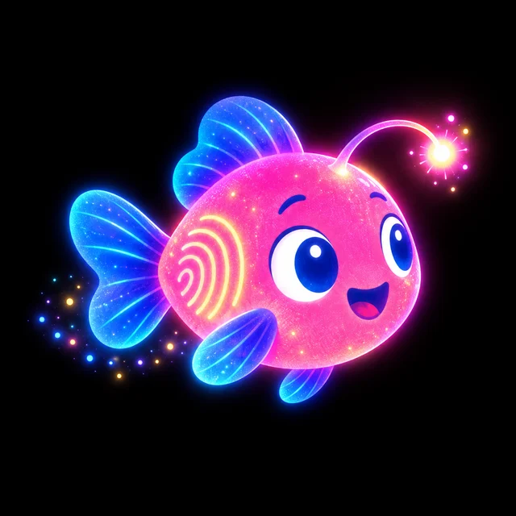

<!doctype html><html lang="fr"><head><meta charset="utf-8"><meta name="viewport" content="width=device-width,initial-scale=1,viewport-fit=cover"><meta name="theme-color" content="#05060E"><title>Sillon · galerie du mouvement</title><link rel="stylesheet" href="https://fonts.googleapis.com/css2?family=Lexend:wght@300..700&display=swap"><style>/* ═════════════ Mouvement : styles des composants du kit ═════════════
   Seuls transform et opacity sont animés côté DOM. --c = couleur du territoire / de la notion.
   html[data-motion="minimales"] coupe tout mouvement décoratif ; le sens reste porté par des états fixes. */
:root { --mo-k: 1; --mo-spring: cubic-bezier(.2, .9, .25, 1.08); --mo-out: cubic-bezier(.22, 1, .36, 1); }

/* ——— Bouton : lueur interne pendant la charge ——— */
.mo-btn, [data-press] { position: relative; isolation: isolate; -webkit-tap-highlight-color: transparent; touch-action: manipulation; }
.mo-btn::after, [data-press]::after { content: ''; position: absolute; inset: 0; border-radius: inherit; pointer-events: none; opacity: 0; transition: opacity .12s;
  box-shadow: inset 0 0 0 1px color-mix(in oklab, var(--c, #8C98FF) 70%, transparent), inset 0 0 26px color-mix(in oklab, var(--c, #8C98FF) 55%, transparent), 0 0 22px color-mix(in oklab, var(--c, #8C98FF) 35%, transparent); }
.mo-charged::after { opacity: 1; }
.mo-miss { filter: brightness(.82); transition: filter .3s; }

/* ——— Message ——— */
.mo-toast { position: fixed; left: 50%; bottom: calc(env(safe-area-inset-bottom, 0px) + var(--tab-h, 58px) + 22px); z-index: 9500; max-width: min(calc(100vw - 32px), 480px); padding: 12px 18px; border-radius: 16px;
  background: rgb(16, 19, 48); color: #F2F3FF; font-size: 15px; line-height: 1.35; box-shadow: inset 0 0 0 1px color-mix(in oklab, var(--c) 45%, transparent), 0 14px 40px rgba(0, 0, 0, .45);
  -webkit-backdrop-filter: blur(16px); backdrop-filter: blur(16px); pointer-events: none; opacity: 0; }
.blabel.mo-under { opacity: 0 !important; pointer-events: none !important; }

/* ——— Compteur kilométrique ——— */
.mo-odo { display: inline-flex; font-variant-numeric: tabular-nums; line-height: 1; }
.mo-odo-c { display: inline-block; height: 1em; overflow: hidden; }
.mo-odo-s { display: flex; flex-direction: column; will-change: transform; }
.mo-odo-s i { display: block; height: 1em; font-style: normal; text-align: center; }

/* ——— Interrupteur ——— */
.mo-switch { --c: #8C98FF; position: relative; width: 56px; height: 32px; border-radius: 999px; padding: 3px; background: rgba(255, 255, 255, .1); box-shadow: inset 0 0 0 1px rgba(160, 175, 255, .22); transition: background .25s; flex: 0 0 auto; }
.mo-switch[aria-checked="true"] { background: color-mix(in oklab, var(--c) 55%, transparent); }
.mo-knob { display: block; width: 26px; height: 26px; border-radius: 50%; background: #F2F3FF; box-shadow: 0 2px 8px rgba(0, 0, 0, .4); }
.mo-switch[aria-checked="true"] .mo-knob { box-shadow: 0 0 14px var(--c), 0 2px 8px rgba(0, 0, 0, .4); }

/* ——— Barre ——— */
.mo-bar { height: 8px; border-radius: 4px; background: rgba(255, 255, 255, .08); overflow: hidden; }
.mo-bar i { display: block; height: 100%; border-radius: 4px; background: var(--c, #8C98FF); box-shadow: 0 0 14px var(--c, #8C98FF); transform: scaleX(.001); transform-origin: 0 50%; }

/* ——— Récompense holographique ——— */
.mo-tilt { transform: perspective(700px) var(--tilt, none); transition: transform .25s var(--mo-out); transform-style: preserve-3d; }
.mo-holo { position: absolute; inset: 0; border-radius: inherit; pointer-events: none; mix-blend-mode: color-dodge; opacity: .55;
  background: radial-gradient(circle at var(--hx, 50%) var(--hy, 30%), rgba(255, 255, 255, .55), transparent 38%),
    linear-gradient(115deg, transparent 20%, rgba(255, 79, 168, .45) 36%, rgba(62, 224, 255, .45) 50%, rgba(255, 227, 154, .45) 64%, transparent 80%);
  background-size: 100% 100%, 250% 250%; background-position: center, var(--hx, 50%) var(--hy, 50%); }
html[data-motion="minimales"] .mo-tilt { transform: none; }

/* ——— Défi-batterie ——— */
.mo-cell { position: relative; width: 34px; height: 54px; border-radius: 9px; box-shadow: inset 0 0 0 2px color-mix(in oklab, var(--c) 60%, transparent); overflow: hidden; flex: 0 0 auto; }
.mo-cell::before { content: ''; position: absolute; top: -5px; left: 11px; width: 12px; height: 5px; border-radius: 3px 3px 0 0; background: color-mix(in oklab, var(--c) 60%, transparent); }
.mo-cell i { position: absolute; inset: 4px; border-radius: 5px; background: linear-gradient(to top, var(--c), color-mix(in oklab, var(--c) 60%, #fff)); transform: scaleY(.001); transform-origin: 50% 100%; box-shadow: 0 0 16px var(--c); }
.mo-full .mo-cell { box-shadow: inset 0 0 0 2px var(--c), 0 0 18px color-mix(in oklab, var(--c) 50%, transparent); }

/* ——— Influx-progression (axone) ——— */
.mo-axon { position: relative; height: 22px; margin: 0 9px; }
.mo-axon-line { position: absolute; left: 0; right: 0; top: 50%; height: 2px; margin-top: -1px; border-radius: 1px; background: linear-gradient(90deg, color-mix(in oklab, var(--c) 40%, transparent), rgba(255, 255, 255, .12)); }
.mo-axon i { position: absolute; top: 50%; width: 12px; height: 12px; margin: -6px 0 0 -6px; border-radius: 50%; background: rgba(13, 16, 40, 1); box-shadow: inset 0 0 0 2px rgba(160, 175, 255, .3); transition: background .25s, box-shadow .25s, transform .3s var(--mo-spring); }
.mo-axon i.on { background: var(--c); box-shadow: 0 0 12px var(--c), inset 0 0 0 2px rgba(255, 255, 255, .5); transform: scale(1.15); }

/* ——— Mini-cerveau témoin ——— */
.mo-mini { width: 100%; height: auto; display: block; overflow: visible; }
.mo-mini-out { fill: rgba(140, 152, 255, .06); stroke: rgba(178, 184, 222, .45); stroke-width: 1.4; }
.mo-zone { fill: var(--c, #8C98FF); opacity: .08; transition: opacity .5s; }
.mo-zone.on { opacity: .95; filter: drop-shadow(0 0 4px var(--c)); animation: moZone 2.4s ease-out forwards; }
@keyframes moZone { 0% { opacity: .2; } 12% { opacity: 1; } 100% { opacity: .5; } }
.mo-mini-cap { display: block; margin-top: 6px; font-size: 12px; line-height: 1.35; color: var(--s-text-3, #7C83AF); text-align: center; }

/* ——— Souffle ——— */
.mo-breath { position: relative; display: grid; place-items: center; min-height: 230px; }
.mo-ring { grid-area: 1 / 1; width: 170px; height: 170px; border-radius: 50%; transform: scale(.62);
  background: radial-gradient(circle, color-mix(in oklab, var(--c) 30%, transparent) 0 48%, transparent 64%); box-shadow: 0 0 0 2px color-mix(in oklab, var(--c) 75%, transparent), 0 0 40px color-mix(in oklab, var(--c) 45%, transparent), inset 0 0 40px color-mix(in oklab, var(--c) 35%, transparent); }
.mo-say { grid-area: 1 / 1; font-size: 20px; font-weight: 600; letter-spacing: .01em; text-shadow: 0 1px 12px rgba(0, 0, 0, .8); }

/* ——— Vois : paupières et rêve ——— */
.mo-eyes { position: relative; overflow: hidden; border-radius: 22px; min-height: 260px; background: #070816; isolation: isolate; }
.mo-lid { position: absolute; left: -2%; right: -2%; height: 52%; z-index: 3; background: #03040c; }
.mo-lid.t { top: 0; transform: translateY(-100%); border-radius: 0 0 50% 50% / 0 0 30% 30%; box-shadow: 0 10px 40px rgba(0, 0, 0, .9); }
.mo-lid.b { bottom: 0; transform: translateY(100%); border-radius: 50% 50% 0 0 / 30% 30% 0 0; box-shadow: 0 -10px 40px rgba(0, 0, 0, .9); }
.mo-dream { position: absolute; inset: 0; display: grid; place-items: center; z-index: 1; }
.mo-dream img { grid-area: 1 / 1; width: 62%; max-width: 230px; aspect-ratio: 1; object-fit: contain; mix-blend-mode: screen; opacity: 0; }
.mo-dream .soft { filter: blur(14px) saturate(1.3); }
.mo-aurora { position: absolute; inset: -20%; z-index: 0; opacity: 0; background: radial-gradient(ellipse 50% 35% at 30% 40%, color-mix(in oklab, var(--c) 40%, transparent), transparent 70%), radial-gradient(ellipse 45% 30% at 70% 60%, color-mix(in oklab, var(--c2, #A27BFF) 35%, transparent), transparent 70%); animation: moAurora 14s ease-in-out infinite alternate; }
@keyframes moAurora { to { transform: translate(6%, -4%) rotate(8deg) scale(1.08); } }

/* ——— Ressens : quatre sphères en orbite ——— */
.mo-orbit { position: relative; width: 240px; height: 240px; margin: 0 auto; }
.mo-orbit-in { position: absolute; inset: 0; animation: moSpin 40s linear infinite; }
@keyframes moSpin { to { transform: rotate(360deg); } }
.mo-sense { position: absolute; width: 74px; height: 74px; margin: -37px 0 0 -37px; border-radius: 50%; display: grid; place-items: center; font-size: 30px; animation: moSpin 40s linear infinite reverse;
  background: radial-gradient(circle at 38% 32%, color-mix(in oklab, var(--c) 55%, #fff 10%), color-mix(in oklab, var(--c) 22%, transparent) 70%); box-shadow: 0 0 0 1px color-mix(in oklab, var(--c) 40%, transparent); opacity: .5; transition: opacity .4s, box-shadow .4s; }
.mo-sense.lit { opacity: 1; box-shadow: 0 0 0 2px var(--c), 0 0 34px var(--c); }
.mo-sense[data-sense="son"] { left: 50%; top: 8%; --c: #FF8A4C; }
.mo-sense[data-sense="toucher"] { left: 92%; top: 50%; --c: #2EF0A6; }
.mo-sense[data-sense="odeur"] { left: 50%; top: 92%; --c: #E879F9; }
.mo-sense[data-sense="gout"] { left: 8%; top: 50%; --c: #FFC23D; }
.mo-sense.lit[data-sense="odeur"]::after { content: ''; position: absolute; left: 50%; bottom: 70%; width: 18px; height: 36px; margin-left: -9px; border-radius: 50%; border: 2px solid color-mix(in oklab, var(--c) 70%, transparent); border-color: transparent color-mix(in oklab, var(--c) 70%, transparent); animation: moVolute 1.8s ease-out infinite; }
@keyframes moVolute { from { transform: translateY(8px) scale(.6); opacity: .9; } to { transform: translateY(-26px) scale(1.2) rotate(30deg); opacity: 0; } }
.mo-sense.lit[data-sense="gout"]::after { content: ''; position: absolute; left: 50%; top: 92%; width: 10px; height: 14px; margin-left: -5px; border-radius: 50% 50% 50% 50% / 60% 60% 40% 40%; background: var(--c); box-shadow: 0 0 10px var(--c); animation: moDrop 1.6s ease-in infinite; }
@keyframes moDrop { 0% { transform: translateY(-6px) scale(.4); opacity: 0; } 30% { opacity: 1; } 100% { transform: translateY(26px) scale(1); opacity: 0; } }
.mo-orbit-c { position: absolute; left: 50%; top: 50%; width: 92px; margin: -36px 0 0 -46px; }

/* ——— Bouge ——— */
.mo-gesture { position: relative; display: grid; grid-template-columns: 1fr auto; align-items: center; gap: 10px; }
.mo-body { width: 100%; max-width: 150px; height: auto; }
.mo-body path { fill: none; stroke: rgba(178, 184, 222, .35); stroke-width: 3; stroke-linecap: round; stroke-linejoin: round; }
.mo-move-wrap { position: relative; width: 112px; height: 112px; display: grid; place-items: center; }
.mo-myring { position: absolute; inset: 0; transform: rotate(-90deg); }
.mo-myring circle { fill: none; stroke-width: 6; }
.mo-myring circle.t { stroke: rgba(255, 255, 255, .08); }
.mo-myring circle.v { stroke: var(--c); stroke-linecap: round; filter: drop-shadow(0 0 5px var(--c)); }
.mo-move { width: 80px; height: 80px; border-radius: 50%; font-size: 30px; color: #07081A; background: radial-gradient(circle at 40% 35%, color-mix(in oklab, var(--c) 60%, #fff), var(--c)); box-shadow: 0 0 30px color-mix(in oklab, var(--c) 55%, transparent); animation: moBeat 1.6s ease-in-out infinite; }
@keyframes moBeat { 50% { box-shadow: 0 0 46px color-mix(in oklab, var(--c) 80%, transparent); } }
.mo-print { position: absolute; right: -6px; top: -8px; width: 54px; height: 54px; color: var(--c); filter: drop-shadow(0 0 8px var(--c)); }

/* ——— Dessine et Explique ——— */
.mo-ink { width: 100%; height: 220px; display: block; border-radius: 20px; background: radial-gradient(circle at 50% 40%, rgba(232, 121, 249, .07), transparent 60%), #070816; box-shadow: inset 0 0 0 1px rgba(160, 175, 255, .14); touch-action: none; cursor: crosshair; }
.mo-voice { position: relative; display: grid; place-items: center; height: 220px; }
.mo-voice canvas { position: absolute; left: 0; right: 0; top: 50%; height: 70px; margin-top: -35px; width: 100%; }
.mo-fuse { position: relative; width: 200px; height: 200px; transform: rotate(-90deg); }
.mo-fuse circle { fill: none; stroke-width: 4; }
.mo-fuse circle.t { stroke: rgba(255, 255, 255, .07); }
.mo-fuse circle.v { stroke: var(--c); stroke-linecap: round; filter: drop-shadow(0 0 4px var(--c)); }
.mo-honest { font-size: 12px; color: var(--s-text-3, #7C83AF); text-align: center; }

/* ——— Constellation de session ——— */
.mo-const { position: relative; height: 70px; border-radius: 18px; background: rgba(255, 255, 255, .03); box-shadow: inset 0 0 0 1px rgba(160, 175, 255, .12); }
.mo-const-svg { position: absolute; inset: 0; width: 100%; height: 100%; overflow: visible; }
.mo-const-svg line { stroke-width: 1.6; opacity: .75; filter: drop-shadow(0 0 3px currentColor); }
.mo-star { position: absolute; width: 12px; height: 12px; margin: -6px 0 0 -6px; border-radius: 50%; background: var(--c); box-shadow: 0 0 12px var(--c), 0 0 2px #fff inset; }

/* ——— Rappel ——— */
.mo-node { width: 18px; height: 18px; border-radius: 50%; background: var(--c, #3EE0FF); box-shadow: 0 0 14px var(--c, #3EE0FF); flex: 0 0 auto; }
.mo-node.mo-myel { box-shadow: 0 0 0 3px rgba(255, 255, 255, .55), 0 0 22px var(--c, #3EE0FF); }

/* ——— Engramme ——— */
.mo-flash { position: absolute; inset: 0; background: radial-gradient(circle at 50% 40%, #fff, rgba(185, 194, 255, .6) 40%, transparent 75%); opacity: 0; pointer-events: none; z-index: 2; }
.mo-seal { width: 88px; height: 88px; margin: 0 auto; filter: drop-shadow(0 0 16px rgba(140, 152, 255, .7)); }

/* ——— Braise ——— */
.mo-ember { --c: #FF7A3D; width: 16px; height: 16px; border-radius: 50%; background: radial-gradient(circle, #FFD2A8, var(--c) 55%, transparent 75%); box-shadow: 0 0 14px var(--c); animation: moEmber calc(2.4s * var(--mo-k)) ease-in-out infinite; }
@keyframes moEmber { 50% { transform: scale(1.25); box-shadow: 0 0 26px var(--c); filter: brightness(1.25); } }

/* ——— Vignettage teinté (plongée, entrée en session) ——— */
.mo-vignette { position: fixed; inset: 0; pointer-events: none; z-index: 8000; opacity: 0; transition: opacity .6s; background: radial-gradient(ellipse 75% 65% at 50% 50%, transparent 45%, color-mix(in oklab, var(--c, #3EE0FF) 32%, transparent) 85%, color-mix(in oklab, var(--c, #3EE0FF) 45%, #000) 100%); }
.mo-vignette.on { opacity: 1; }

/* ——— Chargement : miroitement neuronal ——— */
.mo-skel { display: flex; flex-direction: column; gap: 10px; }
.mo-skel span { position: relative; display: block; height: 12px; border-radius: 6px; background: rgba(255, 255, 255, .06); overflow: hidden; }
.mo-skel span:nth-child(2) { width: 82%; } .mo-skel span:nth-child(3) { width: 64%; }
.mo-skel span::after { content: ''; position: absolute; inset: 0; width: 40%; background: linear-gradient(90deg, transparent, rgba(140, 152, 255, .55), rgba(255, 255, 255, .8) 52%, transparent); transform: translateX(-120%); animation: moShimmer calc(1.6s * var(--mo-k)) cubic-bezier(.5, 0, .3, 1) infinite; }
.mo-skel span:nth-child(2)::after { animation-delay: .18s; } .mo-skel span:nth-child(3)::after { animation-delay: .36s; }
@keyframes moShimmer { to { transform: translateX(320%); } }

/* ——— Mots portés par une impulsion ——— */
.mo-word { display: inline-block; }

/* ——— Transitions d'écran (View Transitions) ——— */
::view-transition-group(*) { animation-duration: calc(.42s * var(--mo-k)); animation-timing-function: cubic-bezier(.2, .9, .25, 1.04); }
::view-transition-old(root), ::view-transition-new(root) { animation-duration: calc(.28s * var(--mo-k)); }
html[data-motion="minimales"]::view-transition-group(*) { animation: none; }
html[data-motion="minimales"]::view-transition-old(*), html[data-motion="minimales"]::view-transition-new(*) { animation-duration: .18s; }

/* ——— Mouvement réduit : plus aucune boucle décorative ——— */
html[data-motion="minimales"] .mo-orbit-in, html[data-motion="minimales"] .mo-sense, html[data-motion="minimales"] .mo-aurora,
html[data-motion="minimales"] .mo-move, html[data-motion="minimales"] .mo-ember, html[data-motion="minimales"] .mo-skel span::after,
html[data-motion="minimales"] .mo-sense::after, html[data-motion="minimales"] .mo-zone.on { animation: none !important; }
html[data-motion="douces"] .mo-orbit-in, html[data-motion="douces"] .mo-sense { animation-duration: 80s; }

/* ═════════════ Galerie du mouvement : nuit électrique ═════════════ */
:root {
  --night: #05060E; --panel: rgba(14, 17, 42, .72); --panel-2: rgba(22, 26, 62, .78); --line: rgba(160, 175, 255, .16);
  --text: #F2F3FF; --text-2: #B2B8DE; --text-3: #7C83AF; --primary: #8C98FF; --accent: #FF5FB0;
  --gut: 16px; --r: 22px;
  color-scheme: dark;
}
* { box-sizing: border-box; }
html, body { margin: 0; background: var(--night); color: var(--text); font-family: 'Lexend', system-ui, -apple-system, sans-serif; -webkit-font-smoothing: antialiased; }
body { min-height: 100vh; overflow-x: hidden; }
button { font: inherit; color: inherit; border: 0; background: none; cursor: pointer; }
a { color: var(--primary); }
.sr { position: absolute; width: 1px; height: 1px; overflow: hidden; clip: rect(0 0 0 0); }

/* ——— En-tête ——— */
.g-top { position: sticky; top: 0; z-index: 50; display: flex; flex-direction: column; gap: 8px; padding: calc(env(safe-area-inset-top, 0px) + 10px) var(--gut) 10px; background: rgba(5, 6, 14, .82); -webkit-backdrop-filter: blur(18px) saturate(1.3); backdrop-filter: blur(18px) saturate(1.3); border-bottom: 1px solid var(--line); }
.g-brand { display: flex; align-items: center; gap: 10px; min-width: 0; }
.g-logo { width: 40px; height: 40px; flex: 0 0 auto; }
.g-logo svg { width: 100%; height: 100%; display: block; }
.g-brand b { display: block; font-size: 17px; font-weight: 600; letter-spacing: -.01em; }
.g-brand small { display: block; font-size: 12.5px; color: var(--text-2); white-space: nowrap; overflow: hidden; text-overflow: ellipsis; }
.g-mon { margin-left: auto; font-size: 12px; color: var(--text-3); font-variant-numeric: tabular-nums; white-space: nowrap; padding: 5px 9px; border-radius: 999px; box-shadow: inset 0 0 0 1px var(--line); }
.g-ctrl { display: flex; gap: 8px; overflow-x: auto; scrollbar-width: none; margin: 0 calc(-1 * var(--gut)); padding: 0 var(--gut); }
.g-ctrl::-webkit-scrollbar { display: none; }
.seg { display: inline-flex; flex: 0 0 auto; align-items: center; gap: 2px; padding: 3px; border-radius: 999px; background: rgba(255, 255, 255, .05); box-shadow: inset 0 0 0 1px var(--line); }
.seg > span { font-size: 11.5px; color: var(--text-3); padding: 0 6px 0 8px; white-space: nowrap; }
.seg button { height: 32px; padding: 0 11px; border-radius: 999px; font-size: 13px; color: var(--text-2); white-space: nowrap; }
.seg button[aria-pressed="true"] { background: rgba(140, 152, 255, .2); color: var(--text); box-shadow: inset 0 0 0 1px rgba(140, 152, 255, .5); }

/* ——— La scène ——— */
.g-hero { position: relative; height: min(64vh, 620px); min-height: 420px; overflow: hidden; background: var(--night); border-bottom: 1px solid var(--line); }
.g-hero canvas.scene { position: absolute; inset: 0; width: 100%; height: 100%; display: block; touch-action: pan-y; cursor: grab; }
.g-vig { position: absolute; inset: 0; pointer-events: none; transition: opacity .7s; background: radial-gradient(ellipse 120% 90% at 50% 45%, transparent 55%, rgba(2, 3, 10, .7) 100%); }
.g-vig.tint { background: radial-gradient(ellipse 80% 70% at 50% 45%, transparent 40%, color-mix(in oklab, var(--c, #3EE0FF) 26%, transparent) 82%, color-mix(in oklab, var(--c, #3EE0FF) 40%, #000) 100%); }
.g-tag { position: absolute; left: var(--gut); top: 14px; max-width: calc(100% - 2 * var(--gut)); font-size: clamp(22px, 5.6vw, 34px); line-height: 1.15; font-weight: 700; letter-spacing: -.02em; text-shadow: 0 2px 24px rgba(0, 0, 0, .8); pointer-events: none; }
.g-tag small { display: block; margin-top: 6px; font-size: 13px; font-weight: 400; letter-spacing: 0; color: var(--text-2); }
.g-caption { position: relative; z-index: 3; margin: 12px var(--gut) 0; max-width: 760px; min-height: 66px; padding: 12px 16px; border-radius: 18px; background: var(--panel); box-shadow: inset 0 0 0 1px var(--line); opacity: 0; pointer-events: none; }
.g-caption b { display: block; font-size: 16.5px; font-weight: 600; margin-bottom: 4px; color: var(--text); }
.g-caption span { display: block; font-size: 15px; line-height: 1.5; color: var(--text); opacity: .86; }
.g-caption em { font-style: normal; color: var(--c, #9EF0FF); }
.g-search { position: absolute; right: var(--gut); top: 14px; width: min(220px, 46vw); display: none; }
.g-search input { width: 100%; height: 40px; padding: 0 14px; border-radius: 999px; border: 0; outline: 0; font: inherit; font-size: 14.5px; color: var(--text); background: var(--panel-2); box-shadow: inset 0 0 0 1px rgba(140, 152, 255, .45), 0 0 24px rgba(140, 152, 255, .25); }
.g-hero.searching .g-search { display: block; }
.g-hero.searching .g-tag { opacity: 0; }
.g-notion { position: absolute; left: 50%; bottom: 96px; translate: -50% 0; padding: 9px 14px; border-radius: 14px; background: var(--panel-2); box-shadow: inset 0 0 0 1px rgba(62, 224, 255, .5); font-size: 14px; font-weight: 600; display: none; }

.g-acts { display: flex; gap: 8px; overflow-x: auto; scrollbar-width: none; padding: 12px var(--gut) 4px; }
.g-acts::-webkit-scrollbar { display: none; }
.chip { flex: 0 0 auto; height: 40px; padding: 0 14px; border-radius: 999px; display: inline-flex; align-items: center; gap: 7px; font-size: 14px; font-weight: 500; white-space: nowrap; color: var(--text); background: rgba(255, 255, 255, .05); box-shadow: inset 0 0 0 1px var(--line); }
.chip i { width: 8px; height: 8px; border-radius: 50%; background: var(--c, var(--primary)); box-shadow: 0 0 8px var(--c, var(--primary)); flex: 0 0 auto; }
.chip[aria-pressed="true"] { background: rgba(140, 152, 255, .18); box-shadow: inset 0 0 0 1px rgba(140, 152, 255, .55); }

/* ——— Sommaire et sections ——— */
.g-toc { display: flex; gap: 6px; overflow-x: auto; scrollbar-width: none; padding: 10px var(--gut) 0; }
.g-toc::-webkit-scrollbar { display: none; }
.g-toc a { flex: 0 0 auto; text-decoration: none; color: var(--text-2); font-size: 13.5px; padding: 8px 12px; border-radius: 999px; box-shadow: inset 0 0 0 1px var(--line); }
main { max-width: 1180px; margin: 0 auto; padding: 0 var(--gut) 80px; }
.g-sec { padding-top: 34px; scroll-margin-top: 110px; }
.g-sec > h2 { margin: 0; font-size: 24px; letter-spacing: -.02em; }
.g-sec > p { margin: 6px 0 16px; color: var(--text-2); font-size: 14.5px; line-height: 1.5; max-width: 640px; }
.g-grid { display: grid; grid-template-columns: 1fr; gap: 14px; }
@media (min-width: 720px) { .g-grid { grid-template-columns: repeat(2, minmax(0, 1fr)); } }
@media (min-width: 1100px) { .g-grid.three { grid-template-columns: repeat(3, minmax(0, 1fr)); } }

/* ——— Cartes ——— */
.card { position: relative; display: flex; flex-direction: column; border-radius: var(--r); background: linear-gradient(180deg, rgba(20, 24, 58, .62), rgba(11, 13, 32, .62)); box-shadow: inset 0 0 0 1px var(--line); overflow: hidden; min-width: 0; }
.stage { position: relative; min-height: 220px; padding: 18px; display: flex; flex-direction: column; justify-content: center; gap: 12px; background: radial-gradient(circle at 50% 30%, rgba(110, 139, 255, .07), transparent 65%); border-bottom: 1px solid var(--line); }
.meta { padding: 14px 16px 16px; display: flex; flex-direction: column; gap: 8px; }
.meta-top { display: flex; flex-direction: column; align-items: flex-start; gap: 3px; }
.meta-top h3 { margin: 0; font-size: 16.5px; font-weight: 600; letter-spacing: -.01em; min-width: 0; }
.meta-top .id { padding: 0; box-shadow: none; font-size: 10.5px; opacity: .8; }
.id { font-size: 11px; font-weight: 600; letter-spacing: .04em; color: var(--text-3); padding: 3px 7px; border-radius: 6px; box-shadow: inset 0 0 0 1px var(--line); white-space: nowrap; }
.meta p { margin: 0; font-size: 13.8px; line-height: 1.5; color: var(--text-2); }
.meta .mech { color: #9EF0FF; font-size: 13px; }
.specs { display: none; margin: 2px 0 0; padding: 0; list-style: none; font-size: 12.5px; line-height: 1.45; color: var(--text-3); }
.specs li { padding: 3px 0; border-top: 1px dashed rgba(160, 175, 255, .1); }
.specs b { color: var(--text-2); font-weight: 500; }
.card.open .specs { display: block; }
.meta-acts { display: flex; gap: 8px; align-items: center; }
.play { height: 40px; padding: 0 16px; border-radius: 999px; display: inline-flex; align-items: center; gap: 8px; font-size: 14px; font-weight: 600; color: #07081A; background: linear-gradient(135deg, #8C98FF, #C9A2FF); box-shadow: 0 6px 20px rgba(111, 123, 255, .3); }
.play svg { width: 14px; height: 14px; }
.more { height: 40px; padding: 0 12px; border-radius: 999px; font-size: 13px; color: var(--text-2); box-shadow: inset 0 0 0 1px var(--line); }

/* ——— Éléments de démonstration ——— */
.btn { --c: #8C98FF; height: 52px; padding: 0 22px; border-radius: 16px; font-size: 16px; font-weight: 600; color: #07081A; background: linear-gradient(135deg, color-mix(in oklab, var(--c) 80%, #fff), color-mix(in oklab, var(--c) 75%, #6b3bff)); box-shadow: 0 8px 26px color-mix(in oklab, var(--c) 35%, transparent); align-self: center; }
.btn.ghost { color: var(--text); background: rgba(255, 255, 255, .06); box-shadow: inset 0 0 0 1px var(--line); }
.row { display: flex; gap: 10px; align-items: center; flex-wrap: wrap; justify-content: center; }
.lab { font-size: 12.5px; color: var(--text-3); }
.bigval { font-size: 46px; font-weight: 700; letter-spacing: -.03em; line-height: 1; font-variant-numeric: tabular-nums; }
.cde { display: flex; gap: 4px; width: 100%; max-width: 360px; align-self: center; }
.cde div { flex: 1; height: 8px; border-radius: 4px; background: rgba(255, 255, 255, .08); position: relative; overflow: hidden; }
.cde div i { position: absolute; inset: 0; background: var(--c); transform: scaleX(0); transform-origin: 0 50%; }
.cde-l { display: flex; width: 100%; max-width: 360px; align-self: center; font-size: 11.5px; color: var(--text-3); }
.cde-l span { flex: 1; }
.springs { display: flex; flex-direction: column; gap: 12px; width: 100%; }
.springs .lane { position: relative; height: 28px; border-radius: 14px; background: rgba(255, 255, 255, .04); }
.springs .ball { position: absolute; left: 2px; top: 2px; width: 24px; height: 24px; border-radius: 50%; background: var(--c); box-shadow: 0 0 14px var(--c); }
.springs .nm { position: absolute; right: 10px; top: 5px; font-size: 12px; color: var(--text-3); pointer-events: none; }
.list { display: flex; flex-direction: column; gap: 8px; width: 100%; }
.list div { display: flex; align-items: center; gap: 10px; padding: 11px 12px; border-radius: 14px; background: rgba(255, 255, 255, .05); font-size: 14px; }
.list div i { width: 10px; height: 10px; border-radius: 50%; background: var(--c); box-shadow: 0 0 8px var(--c); }
.badge { position: relative; width: 120px; height: 120px; align-self: center; border-radius: 30px; display: grid; place-items: center; font-size: 54px; background: radial-gradient(circle at 40% 30%, #FFE7A8, #FFC23D 45%, #B8761A); box-shadow: 0 14px 34px rgba(255, 194, 61, .35), inset 0 0 0 3px rgba(255, 255, 255, .35); overflow: hidden; }
.quests { display: flex; gap: 14px; justify-content: center; align-items: flex-end; }
.quest { --c: #FFC23D; display: flex; flex-direction: column; align-items: center; gap: 6px; font-size: 12px; color: var(--text-2); }
.eegc { width: 100%; height: 70px; display: block; }
.mini-card { --c: #3EE0FF; display: flex; align-items: center; gap: 12px; padding: 14px; border-radius: 18px; text-align: left; background: linear-gradient(135deg, color-mix(in oklab, var(--c) 22%, transparent), rgba(255, 255, 255, .03)); box-shadow: inset 0 0 0 1px color-mix(in oklab, var(--c) 45%, transparent); width: 100%; }
.mini-card .ic { width: 44px; height: 44px; border-radius: 14px; display: grid; place-items: center; background: color-mix(in oklab, var(--c) 30%, transparent); font-size: 22px; flex: 0 0 auto; }
.page { position: fixed; inset: 0; z-index: 60; background: linear-gradient(180deg, color-mix(in oklab, var(--c, #3EE0FF) 26%, #090B1E), #05060E 60%); padding: calc(env(safe-area-inset-top, 0px) + 18px) var(--gut); display: flex; flex-direction: column; gap: 16px; }
.page[hidden] { display: none; }
.page .ph { display: flex; align-items: center; gap: 12px; }
.page .ph .ic { width: 48px; height: 48px; border-radius: 16px; display: grid; place-items: center; font-size: 24px; background: color-mix(in oklab, var(--c) 30%, transparent); }
.page h2 { margin: 0; font-size: 26px; }
.sheet-back { position: fixed; inset: 0; z-index: 70; background: rgba(3, 4, 14, .6); -webkit-backdrop-filter: blur(6px); backdrop-filter: blur(6px); }
.sheet { position: fixed; left: 0; right: 0; bottom: 0; z-index: 71; max-width: 560px; margin: 0 auto; padding: 0 var(--gut) calc(env(safe-area-inset-bottom, 0px) + 24px); border-radius: 28px 28px 0 0; background: rgba(16, 19, 46, .96); box-shadow: 0 -1px 0 rgba(140, 152, 255, .5), 0 -20px 60px rgba(0, 0, 0, .5); }
.sheet .mo-grab { height: 30px; display: grid; place-items: center; cursor: grab; touch-action: none; }
.sheet .mo-grab::before { content: ''; width: 44px; height: 5px; border-radius: 3px; background: rgba(255, 255, 255, .25); }
.sheet h3 { margin: 4px 0 8px; }
.sheet p { margin: 0 0 14px; color: var(--text-2); line-height: 1.5; }
.pullz { position: relative; height: 170px; width: 100%; border-radius: 18px; background: rgba(255, 255, 255, .03); box-shadow: inset 0 0 0 1px var(--line); touch-action: none; cursor: ns-resize; display: grid; justify-items: center; align-content: start; overflow: hidden; }
.pullz svg { width: 200px; height: 120px; }
.pullz path, .pullz circle { fill: rgba(140, 152, 255, .35); stroke: #8C98FF; stroke-width: 1.4; filter: drop-shadow(0 0 6px rgba(140, 152, 255, .7)); }
.pullz .hint { position: absolute; bottom: 12px; font-size: 13px; color: var(--text-3); }
.quiz { display: flex; flex-direction: column; gap: 8px; width: 100%; }
.quiz button { padding: 12px 14px; border-radius: 14px; text-align: left; background: rgba(255, 255, 255, .05); box-shadow: inset 0 0 0 1px var(--line); font-size: 14.5px; }
.q-ok { box-shadow: inset 0 0 0 2px #6EE7B7 !important; background: rgba(110, 231, 183, .1) !important; }
.recall { display: flex; flex-direction: column; gap: 10px; width: 100%; }
.recall .q { display: flex; align-items: center; gap: 10px; padding: 12px; border-radius: 14px; background: rgba(255, 255, 255, .05); font-size: 14.5px; }
.recall .a { padding: 12px; border-radius: 14px; background: rgba(62, 224, 255, .08); box-shadow: inset 0 0 0 1px rgba(62, 224, 255, .35); font-size: 14px; line-height: 1.45; }
.recall .note { font-size: 13px; color: var(--text-2); text-align: center; }
.engr { position: relative; min-height: 300px; border-radius: 18px; overflow: hidden; background: radial-gradient(circle at 50% 35%, rgba(140, 152, 255, .14), transparent 60%); display: flex; flex-direction: column; align-items: center; justify-content: center; gap: 14px; padding: 16px; }
.engr .stats { display: flex; gap: 18px; }
.engr .stats div { text-align: center; }
.engr .stats b { display: block; font-size: 28px; font-variant-numeric: tabular-nums; }
.engr .stats span { font-size: 12px; color: var(--text-3); }
.engr .bdg { display: flex; gap: 10px; }
.engr .mo-badge { width: 46px; height: 46px; border-radius: 14px; display: grid; place-items: center; font-size: 24px; background: radial-gradient(circle at 40% 30%, #FFE7A8, #FFC23D 50%, #B8761A); opacity: 0; }
.word { font-size: 34px; font-weight: 700; letter-spacing: -.02em; text-align: center; color: #F2F3FF; text-shadow: 0 0 24px rgba(62, 224, 255, .5); }
.def { font-size: 14.5px; line-height: 1.6; color: var(--text-2); text-align: center; }
.def .mo-line { display: block; }
.terr { display: grid; grid-template-columns: repeat(auto-fill, minmax(150px, 1fr)); gap: 8px; }
.terr button { --c: #8C98FF; display: flex; align-items: center; gap: 9px; padding: 11px 12px; border-radius: 14px; text-align: left; font-size: 13.5px; font-weight: 500; background: linear-gradient(135deg, color-mix(in oklab, var(--c) 14%, transparent), rgba(255, 255, 255, .02)); box-shadow: inset 0 0 0 1px color-mix(in oklab, var(--c) 32%, transparent); min-height: 46px; }
.terr button i { width: 10px; height: 10px; border-radius: 50%; background: var(--c); box-shadow: 0 0 10px var(--c); flex: 0 0 auto; }
.terr-note { margin-top: 12px; font-size: 13px; color: var(--text-3); }
.bulles { display: grid; grid-template-columns: repeat(auto-fit, minmax(220px, 1fr)); gap: 14px; }
.bulle { border-radius: var(--r); overflow: hidden; background: #000; box-shadow: inset 0 0 0 1px var(--line); }
.bulle img { display: block; width: 100%; aspect-ratio: 1; object-fit: cover; mix-blend-mode: screen; }
.bulle div { padding: 12px 14px; background: rgba(14, 17, 42, .9); }
.bulle b { display: block; font-size: 15px; }
.bulle span { font-size: 13px; color: var(--text-2); line-height: 1.45; }
.kidbtns { display: flex; gap: 12px; justify-content: center; }
.kidbtns button { width: 76px; height: 76px; border-radius: 26px; font-size: 34px; background: radial-gradient(circle at 40% 30%, color-mix(in oklab, var(--c) 60%, #fff), var(--c)); box-shadow: 0 10px 26px color-mix(in oklab, var(--c) 40%, transparent); }
footer { max-width: 1180px; margin: 0 auto; padding: 24px var(--gut) 60px; color: var(--text-3); font-size: 13px; line-height: 1.6; border-top: 1px solid var(--line); }
footer b { color: var(--text-2); font-weight: 500; }
:focus-visible { outline: 2px solid #B9C2FF; outline-offset: 2px; }

/* ——— Le cerveau vivant (v3 · 2b) ——— */
.v-list { display: grid; gap: 8px; }
.v-item { display: flex; align-items: center; gap: 12px; padding: 12px; border-radius: 14px; background: rgba(255, 255, 255, .04); box-shadow: inset 0 0 0 1px var(--line); text-align: left; font-size: 14.5px; }
.v-box { width: 22px; height: 22px; border-radius: 7px; flex: 0 0 auto; box-shadow: inset 0 0 0 2px var(--text-3); position: relative; }
.v-item[aria-pressed="true"] .v-box { background: var(--c); box-shadow: none; }
.v-item[aria-pressed="true"] .v-box::after { content: ''; position: absolute; left: 7px; top: 3px; width: 6px; height: 11px; border: solid #07081A; border-width: 0 2.5px 2.5px 0; transform: rotate(45deg); }
.v-days { display: flex; flex-wrap: wrap; justify-content: center; gap: 7px; }
.v-days span { width: 34px; height: 34px; border-radius: 50%; display: grid; place-items: center; font-weight: 600; font-size: 13px; color: var(--text-3); box-shadow: inset 0 0 0 1.5px var(--line); }
.v-days span.on { background: var(--c); color: #07081A; box-shadow: 0 0 14px color-mix(in oklab, var(--c) 50%, transparent); }
.v-deb { text-align: center; display: grid; gap: 8px; justify-items: center; }
.v-deb .v-burst { height: 26px; }
.v-deb b { font-size: 26px; }
.v-deb p { margin: 0; color: var(--text-2); font-size: 14px; }
.v-note { margin: 0; color: var(--text-2); font-size: 13.5px; line-height: 1.45; text-align: center; }
.mo-lit { box-shadow: 0 0 0 2px var(--c), 0 0 16px color-mix(in oklab, var(--c) 70%, transparent) !important; transition: box-shadow .2s; }
.mo-lit.lit-soft { box-shadow: 0 0 0 1.5px var(--c), 0 0 8px color-mix(in oklab, var(--c) 40%, transparent) !important; }
.mo-lit.lit-min { box-shadow: 0 0 0 1.5px color-mix(in oklab, var(--c) 60%, transparent) !important; }
.v-tgt { padding: 2px 12px; border-radius: 12px; }
.v-lvs { display: grid; grid-template-columns: repeat(3, 1fr); gap: 8px; }
.v-lvs .v-deb { padding-top: 70px; } .v-lvs b { font-size: 18px; } .v-lvs small { color: var(--text-2); font-size: 13px; }

/* Une démo à la fois : la scène le dit, les autres boutons de scène attendent */
.g-hero { scroll-margin-top: calc(var(--toolbar-h, 110px) + 12px); }
.g-busy-tag { position: absolute; top: 12px; right: 12px; z-index: 3; font-size: 12px; font-weight: 600; padding: 4px 10px; border-radius: 99px; color: #DDE2FF; background: rgba(9, 11, 30, .7); box-shadow: inset 0 0 0 1px rgba(140, 152, 255, .35); opacity: 0; transition: opacity .25s; pointer-events: none; }
body.g-busy .g-busy-tag { opacity: 1; }
body.g-busy #acts .chip:not([aria-pressed]), body.g-busy .card[data-scene] .play { opacity: .45; pointer-events: none; }
</style></head><body><div id="app"></div><script>window.SILLON_SVG = "<svg xmlns=\"http://www.w3.org/2000/svg\" viewBox=\"40 52 440 380\"><defs><linearGradient id=\"sdark-comet\" gradientUnits=\"userSpaceOnUse\" x1=\"297.9\" y1=\"165.0\" x2=\"163.6\" y2=\"247.3\"><stop offset=\"0\" stop-color=\"#5062FF\"/><stop offset=\".45\" stop-color=\"#9660FF\"/><stop offset=\"1\" stop-color=\"#FF3D9A\"/></linearGradient><linearGradient id=\"sdark-ink\" gradientUnits=\"userSpaceOnUse\" x1=\"70\" y1=\"80\" x2=\"460\" y2=\"430\"><stop offset=\"0\" stop-color=\"#8180FF\"/><stop offset=\"1\" stop-color=\"#4253D6\"/></linearGradient><filter id=\"sdark-glow\" x=\"-50%\" y=\"-50%\" width=\"200%\" height=\"200%\"><feGaussianBlur stdDeviation=\"8.8\" result=\"b\"/><feMerge><feMergeNode in=\"b\"/><feMergeNode in=\"SourceGraphic\"/></feMerge></filter><radialGradient id=\"sdark-spark\"><stop offset=\"0\" stop-color=\"#fff\"/><stop offset=\".35\" stop-color=\"#FFB3D9\"/><stop offset=\"1\" stop-color=\"#FF3D9A\" stop-opacity=\"0\"/></radialGradient></defs><path d=\"M324.0 344.0 C324.8 343.8 326.7 343.2 328.5 342.8 C330.3 342.3 332.5 341.7 334.7 341.1 C337.0 340.5 339.6 339.8 342.1 339.1 C344.7 338.4 347.5 337.7 350.1 336.9 C352.8 336.1 355.6 335.3 358.3 334.5 C360.9 333.7 363.5 332.8 366.0 332.0 C368.5 331.2 371.0 330.4 373.6 329.6 C376.1 328.8 378.8 328.0 381.4 327.2 C384.0 326.4 386.7 325.5 389.4 324.6 C392.0 323.7 394.7 322.8 397.3 321.7 C399.8 320.6 402.4 319.5 404.9 318.2 C407.3 316.9 409.7 315.5 412.0 314.0 C414.3 312.5 416.6 310.8 418.9 309.1 C421.2 307.3 423.5 305.5 425.7 303.6 C427.9 301.6 430.2 299.6 432.3 297.5 C434.3 295.4 436.4 293.2 438.3 290.9 C440.2 288.6 442.0 286.2 443.6 283.7 C445.2 281.2 446.7 278.7 448.0 276.0 C449.3 273.3 450.5 270.5 451.5 267.5 C452.6 264.6 453.5 261.4 454.4 258.2 C455.2 255.0 455.9 251.7 456.5 248.4 C457.1 245.0 457.5 241.6 457.9 238.2 C458.2 234.8 458.3 231.4 458.4 228.0 C458.4 224.6 458.3 221.3 458.0 218.0 C457.7 214.7 457.3 211.3 456.7 208.0 C456.1 204.6 455.4 201.1 454.5 197.6 C453.7 194.2 452.6 190.7 451.5 187.3 C450.4 183.8 449.1 180.4 447.7 177.0 C446.3 173.7 444.8 170.4 443.2 167.2 C441.6 164.0 439.9 161.0 438.0 158.0 C436.1 155.0 434.2 152.2 432.1 149.3 C430.0 146.5 427.7 143.7 425.3 141.0 C423.0 138.2 420.5 135.6 417.9 133.0 C415.3 130.4 412.6 127.9 409.8 125.5 C407.0 123.1 404.1 120.7 401.1 118.5 C398.2 116.2 395.1 114.1 392.0 112.0 C388.9 109.9 385.6 108.0 382.3 106.1 C378.9 104.2 375.4 102.3 371.9 100.6 C368.3 98.9 364.6 97.2 360.9 95.6 C357.1 94.1 353.3 92.6 349.5 91.2 C345.6 89.8 341.7 88.5 337.8 87.3 C333.9 86.1 330.0 85.0 326.0 84.0 C322.0 83.0 318.0 82.1 313.9 81.3 C309.7 80.4 305.5 79.7 301.3 79.0 C297.0 78.4 292.7 77.8 288.4 77.4 C284.1 76.9 279.7 76.6 275.4 76.3 C271.1 76.0 266.8 75.9 262.6 75.8 C258.3 75.8 254.2 75.8 250.0 76.0 C245.8 76.2 241.8 76.4 237.6 76.8 C233.5 77.2 229.4 77.6 225.3 78.2 C221.2 78.8 217.0 79.5 213.0 80.3 C209.0 81.0 204.9 81.9 201.0 82.9 C197.0 83.9 193.1 85.0 189.3 86.1 C185.4 87.3 181.7 88.6 178.0 90.0 C174.3 91.4 170.7 92.9 167.1 94.5 C163.5 96.1 159.9 97.9 156.4 99.7 C152.9 101.5 149.4 103.5 146.0 105.5 C142.6 107.5 139.3 109.7 136.1 111.9 C132.9 114.1 129.7 116.3 126.7 118.7 C123.7 121.1 120.8 123.5 118.0 126.0 C115.2 128.5 112.5 131.2 109.9 133.9 C107.2 136.7 104.7 139.6 102.2 142.6 C99.8 145.6 97.4 148.7 95.1 151.8 C92.9 154.8 90.7 158.0 88.7 161.2 C86.6 164.3 84.7 167.5 82.9 170.7 C81.2 173.8 79.5 176.9 78.0 180.0 C76.5 183.1 75.1 186.2 73.9 189.4 C72.7 192.6 71.6 195.9 70.6 199.2 C69.6 202.4 68.8 205.8 68.0 209.0 C67.2 212.2 66.6 215.5 66.1 218.6 C65.5 221.7 65.1 224.8 64.8 227.7 C64.4 230.6 64.2 233.4 64.0 236.0 C63.8 238.6 63.8 241.1 63.9 243.6 C63.9 246.0 64.1 248.3 64.4 250.6 C64.6 252.9 65.0 255.0 65.5 257.1 C66.0 259.2 66.5 261.2 67.2 263.2 C67.8 265.1 68.6 267.0 69.4 268.8 C70.2 270.6 71.0 272.3 72.0 274.0 C73.0 275.7 74.0 277.3 75.1 278.8 C76.2 280.3 77.4 281.8 78.7 283.2 C80.0 284.6 81.4 285.9 82.9 287.1 C84.3 288.4 85.9 289.5 87.5 290.6 C89.1 291.7 90.8 292.7 92.5 293.6 C94.3 294.5 96.1 295.3 98.0 296.0 C99.9 296.7 101.9 297.4 103.9 297.9 C106.0 298.4 108.1 298.9 110.3 299.3 C112.5 299.6 114.8 299.9 117.1 300.1 C119.5 300.3 121.9 300.5 124.4 300.5 C126.9 300.6 129.4 300.6 132.0 300.5 C134.6 300.4 137.2 300.3 140.0 300.0 C142.8 299.7 145.6 299.4 148.5 298.9 C151.5 298.5 154.6 297.9 157.7 297.3 C160.8 296.6 164.0 295.9 167.3 295.1 C170.5 294.4 173.7 293.5 177.0 292.7 C180.2 291.9 183.4 291.1 186.6 290.3 C189.8 289.5 192.9 288.8 196.0 288.0 C199.1 287.2 202.2 286.5 205.3 285.7 C208.4 284.9 211.5 284.1 214.7 283.3 C217.8 282.4 220.9 281.6 224.0 280.8 C227.1 279.9 230.1 279.1 233.1 278.3 C236.1 277.5 239.0 276.7 241.8 276.0 C244.6 275.3 247.3 274.6 250.0 274.0 C252.7 273.4 255.3 272.8 257.9 272.2 C260.6 271.7 263.3 271.1 265.9 270.6 C268.4 270.1 271.0 269.6 273.4 269.1 C275.8 268.7 278.1 268.2 280.1 267.9 C282.2 267.5 284.2 267.1 285.8 266.8 C287.5 266.5 289.3 266.1 290.0 266.0\" fill=\"none\" stroke=\"url(#sdark-ink)\" stroke-opacity=\"1\" stroke-width=\"16\" stroke-linecap=\"round\" stroke-linejoin=\"round\"/><path d=\"M164.0 330.0 C163.2 330.0 161.3 329.9 159.4 329.8 C157.6 329.7 155.3 329.5 152.9 329.3 C150.5 329.2 147.8 329.0 145.3 328.9 C142.7 328.8 139.9 328.7 137.3 328.7 C134.8 328.7 132.2 328.7 130.0 329.0 C127.8 329.2 125.8 329.5 124.0 330.0 C122.2 330.5 120.7 331.2 119.1 331.9 C117.5 332.7 115.9 333.6 114.4 334.5 C113.0 335.5 111.6 336.5 110.4 337.6 C109.2 338.7 108.0 339.9 107.1 341.0 C106.2 342.2 105.4 343.4 104.9 344.6 C104.4 345.7 104.1 346.8 104.0 348.0 C103.9 349.2 104.1 350.3 104.4 351.6 C104.7 352.8 105.1 354.1 105.8 355.4 C106.4 356.7 107.3 358.1 108.3 359.4 C109.3 360.7 110.4 362.0 111.8 363.3 C113.1 364.5 114.7 365.7 116.4 366.9 C118.1 368.0 119.9 369.0 122.0 370.0 C124.1 371.0 126.5 371.9 129.1 372.8 C131.7 373.7 134.7 374.5 137.7 375.3 C140.8 376.1 144.1 376.9 147.4 377.6 C150.7 378.3 154.2 379.0 157.6 379.6 C161.1 380.1 164.6 380.6 168.0 381.0 C171.4 381.4 174.7 381.8 178.0 382.0 C181.3 382.2 184.6 382.3 188.0 382.4 C191.3 382.4 194.8 382.4 198.3 382.3 C201.8 382.2 205.3 382.0 208.8 381.8 C212.2 381.5 215.7 381.2 219.0 380.8 C222.4 380.4 225.7 380.0 228.9 379.5 C232.0 379.1 235.0 378.6 238.0 378.0 C241.0 377.4 243.9 376.7 246.8 375.8 C249.7 375.0 252.7 374.0 255.5 373.0 C258.3 371.9 261.1 370.8 263.8 369.8 C266.4 368.7 268.9 367.6 271.2 366.6 C273.5 365.6 275.6 364.6 277.4 363.9 C279.2 363.1 281.2 362.3 282.0 362.0\" fill=\"none\" stroke=\"url(#sdark-ink)\" stroke-opacity=\"1\" stroke-width=\"16\" stroke-linecap=\"round\" stroke-linejoin=\"round\"/><path d=\"M302.0 368.0 C302.1 368.4 302.3 369.3 302.4 370.2 C302.6 371.1 302.8 372.1 303.1 373.3 C303.3 374.4 303.6 375.6 303.8 376.9 C304.1 378.1 304.3 379.5 304.6 380.7 C304.8 382.0 305.1 383.3 305.3 384.6 C305.6 385.8 305.8 386.9 306.0 388.0 C306.2 389.1 306.4 390.2 306.6 391.3 C306.8 392.5 307.0 393.7 307.2 394.8 C307.4 396.0 307.6 397.2 307.8 398.3 C307.9 399.3 308.1 400.4 308.3 401.4 C308.4 402.4 308.6 403.3 308.7 404.1 C308.8 404.8 308.9 405.7 309.0 406.0\" fill=\"none\" stroke=\"url(#sdark-ink)\" stroke-opacity=\"1\" stroke-width=\"16\" stroke-linecap=\"round\" stroke-linejoin=\"round\"/><path d=\"M342.0 364.0 C342.2 364.4 342.8 365.5 343.2 366.5 C343.7 367.6 344.1 368.8 344.7 370.1 C345.2 371.5 345.8 372.9 346.5 374.4 C347.2 375.8 348.0 377.3 348.9 378.7 C349.8 380.1 350.8 381.6 352.0 382.8 C353.2 384.0 354.5 385.0 356.0 386.0 C357.5 387.0 359.3 387.8 361.2 388.7 C363.1 389.6 365.2 390.5 367.4 391.3 C369.6 392.1 372.0 392.8 374.4 393.5 C376.8 394.2 379.3 394.8 381.7 395.2 C384.1 395.6 386.6 396.0 389.0 396.1 C391.4 396.2 393.7 396.2 396.0 396.0 C398.3 395.8 400.6 395.4 402.9 394.9 C405.3 394.3 407.8 393.6 410.2 392.8 C412.6 392.0 415.1 391.0 417.5 390.0 C419.9 389.0 422.2 387.8 424.4 386.5 C426.6 385.3 428.8 383.9 430.7 382.5 C432.6 381.1 434.4 379.7 436.0 378.0 C437.6 376.3 439.0 374.5 440.2 372.4 C441.5 370.3 442.7 367.8 443.7 365.4 C444.7 363.0 445.7 360.3 446.5 357.9 C447.3 355.4 448.1 352.8 448.7 350.6 C449.4 348.3 450.0 346.1 450.5 344.4 C451.1 342.6 451.8 340.7 452.0 340.0\" fill=\"none\" stroke=\"url(#sdark-ink)\" stroke-opacity=\"1\" stroke-width=\"16\" stroke-linecap=\"round\" stroke-linejoin=\"round\"/><path d=\"M378.0 366.0 C378.4 366.1 379.6 366.3 380.7 366.6 C381.8 366.8 383.1 367.2 384.4 367.5 C385.8 367.8 387.4 368.2 388.9 368.5 C390.4 368.8 392.0 369.2 393.6 369.4 C395.1 369.7 396.7 369.9 398.1 370.0 C399.5 370.1 400.8 370.1 402.0 370.0 C403.2 369.9 404.4 369.6 405.6 369.3 C406.7 368.9 408.0 368.4 409.1 367.9 C410.3 367.4 411.4 366.8 412.5 366.3 C413.6 365.7 414.6 365.1 415.6 364.5 C416.5 364.0 417.4 363.4 418.1 363.0 C418.9 362.6 419.7 362.2 420.0 362.0\" fill=\"none\" stroke=\"url(#sdark-ink)\" stroke-opacity=\"1\" stroke-width=\"16\" stroke-linecap=\"round\" stroke-linejoin=\"round\"/><path d=\"M396.4 267.3 C396.6 266.9 397.4 265.6 397.9 264.8 C398.4 263.9 398.9 263.1 399.4 262.2 C399.9 261.4 400.3 260.5 400.7 259.6 C401.1 258.7 401.5 257.8 401.9 256.9 C402.3 256.0 402.7 255.1 403.0 254.2 C403.3 253.3 403.7 252.3 404.0 251.4 C404.3 250.5 404.6 249.5 404.8 248.6 C405.1 247.7 405.3 246.7 405.6 245.8 C405.8 244.8 406.0 243.9 406.2 242.9 C406.4 241.9 406.6 241.0 406.7 240.0 C406.9 239.0 407.0 238.1 407.2 237.1 C407.3 236.1 407.4 235.1 407.5 234.2 C407.6 233.2 407.7 232.2 407.7 231.2 C407.8 230.2 407.8 229.2 407.8 228.3 C407.8 227.3 407.8 226.3 407.8 225.3 C407.8 224.3 407.8 223.3 407.7 222.4 C407.6 221.4 407.6 220.4 407.5 219.4 C407.4 218.4 407.3 217.4 407.2 216.5 C407.0 215.5 406.9 214.5 406.7 213.5 C406.6 212.6 406.4 211.6 406.2 210.6 C406.0 209.7 405.8 208.7 405.6 207.7 C405.4 206.8 405.2 205.8 404.9 204.8 C404.7 203.9 404.4 202.9 404.1 202.0 C403.9 201.0 403.6 200.1 403.3 199.2 C403.0 198.2 402.6 197.3 402.3 196.4 C402.0 195.4 401.6 194.5 401.3 193.6 C400.9 192.7 400.5 191.8 400.2 190.9 C399.8 189.9 399.4 189.0 399.0 188.2 C398.5 187.3 398.1 186.4 397.7 185.5 C397.2 184.6 396.8 183.7 396.3 182.9 C395.8 182.0 395.3 181.2 394.8 180.3 C394.3 179.5 393.8 178.6 393.3 177.8 C392.8 177.0 392.3 176.1 391.7 175.3 C391.2 174.5 390.6 173.7 390.0 172.9 C389.5 172.1 388.9 171.3 388.3 170.6 C387.7 169.8 387.1 169.0 386.5 168.2 C385.9 167.5 385.2 166.7 384.6 166.0 C384.0 165.3 383.3 164.5 382.7 163.8 C382.0 163.1 381.4 162.4 380.7 161.7 C380.1 160.9 379.4 160.3 378.7 159.6 C378.0 158.9 377.3 158.2 376.6 157.5 C375.9 156.9 375.2 156.2 374.5 155.6 C373.8 154.9 373.1 154.3 372.4 153.6 C371.7 153.0 370.9 152.4 370.2 151.8 C369.5 151.2 368.7 150.6 368.0 150.0 C367.2 149.4 366.5 148.8 365.7 148.2 C365.0 147.6 364.2 147.1 363.5 146.5 C362.7 146.0 361.9 145.4 361.2 144.9 C360.4 144.3 359.6 143.8 358.8 143.3 C358.0 142.8 357.2 142.3 356.5 141.8 C355.7 141.3 354.9 140.8 354.1 140.3 C353.3 139.8 352.5 139.3 351.7 138.9 C350.9 138.4 350.1 137.9 349.2 137.5 C348.4 137.0 347.6 136.6 346.8 136.2 C346.0 135.7 345.2 135.3 344.4 134.9 C343.5 134.5 342.7 134.1 341.9 133.7 C341.1 133.3 340.2 132.9 339.4 132.5 C338.6 132.1 337.8 131.8 336.9 131.4 C336.1 131.0 335.3 130.7 334.4 130.3 C333.6 129.9 332.8 129.6 331.9 129.3 C331.1 128.9 330.3 128.6 329.4 128.3 C328.6 127.9 327.7 127.6 326.9 127.3 C326.1 127.0 325.2 126.7 324.4 126.4 C323.5 126.1 322.7 125.8 321.9 125.5 C321.0 125.3 319.8 124.8 319.3 124.7\" fill=\"none\" stroke=\"url(#sdark-ink)\" stroke-opacity=\"1\" stroke-width=\"16\" stroke-linecap=\"round\" stroke-linejoin=\"round\"/><path d=\"M285.2 117.4 C284.8 117.4 283.5 117.2 282.6 117.1 C281.8 117.0 280.9 116.9 280.1 116.9 C279.2 116.8 278.3 116.7 277.5 116.6 C276.6 116.6 275.7 116.5 274.9 116.4 C274.0 116.4 273.1 116.3 272.3 116.3 C271.4 116.2 270.5 116.2 269.7 116.2 C268.8 116.1 267.9 116.1 267.1 116.1 C266.2 116.0 265.3 116.0 264.5 116.0 C263.6 116.0 262.7 116.0 261.8 116.0 C261.0 116.0 260.1 116.0 259.2 116.0 C258.4 116.0 257.5 116.0 256.6 116.0 C255.7 116.1 254.9 116.1 254.0 116.1 C253.1 116.2 252.2 116.2 251.4 116.2 C250.5 116.3 249.6 116.3 248.7 116.4 C247.8 116.5 247.0 116.5 246.1 116.6 C245.2 116.7 244.3 116.7 243.4 116.8 C242.6 116.9 241.7 117.0 240.8 117.1 C239.9 117.2 239.0 117.3 238.1 117.4 C237.3 117.5 236.4 117.6 235.5 117.7 C234.6 117.8 233.7 118.0 232.8 118.1 C231.9 118.2 231.1 118.4 230.2 118.5 C229.3 118.7 228.4 118.8 227.5 119.0 C226.6 119.1 225.7 119.3 224.8 119.5 C223.9 119.7 223.1 119.8 222.2 120.0 C221.3 120.2 220.4 120.4 219.5 120.6 C218.6 120.8 217.7 121.0 216.8 121.3 C215.9 121.5 215.0 121.7 214.1 121.9 C213.3 122.2 212.4 122.4 211.5 122.7 C210.6 122.9 209.7 123.2 208.8 123.5 C207.9 123.7 207.0 124.0 206.1 124.3 C205.3 124.6 204.4 124.9 203.5 125.2 C202.6 125.5 201.7 125.8 200.8 126.2 C200.0 126.5 199.1 126.8 198.2 127.2 C197.3 127.5 196.4 127.9 195.6 128.3 C194.7 128.6 193.8 129.0 192.9 129.4 C192.1 129.8 191.2 130.2 190.3 130.6 C189.5 131.0 188.6 131.4 187.7 131.8 C186.9 132.2 186.0 132.7 185.2 133.1 C184.3 133.5 183.5 134.0 182.6 134.5 C181.8 134.9 180.9 135.4 180.1 135.9 C179.2 136.3 178.4 136.8 177.5 137.3 C176.7 137.8 175.9 138.3 175.0 138.9 C174.2 139.4 173.4 139.9 172.5 140.4 C171.7 141.0 170.9 141.5 170.1 142.1 C169.3 142.6 168.5 143.2 167.7 143.8 C166.8 144.4 166.0 144.9 165.2 145.5 C164.5 146.1 163.7 146.7 162.9 147.4 C162.1 148.0 161.3 148.6 160.5 149.2 C159.8 149.9 159.0 150.5 158.2 151.2 C157.5 151.8 156.7 152.5 156.0 153.2 C155.2 153.9 154.5 154.5 153.7 155.2 C153.0 155.9 152.3 156.6 151.6 157.4 C150.8 158.1 150.1 158.8 149.4 159.5 C148.7 160.3 148.0 161.0 147.3 161.8 C146.6 162.5 146.0 163.3 145.3 164.1 C144.6 164.8 144.0 165.6 143.3 166.4 C142.6 167.2 142.0 168.0 141.4 168.8 C140.7 169.6 140.1 170.4 139.5 171.3 C138.8 172.1 138.2 172.9 137.6 173.8 C137.0 174.6 136.4 175.5 135.9 176.3 C135.3 177.2 134.7 178.1 134.2 178.9 C133.6 179.8 133.0 180.7 132.5 181.6 C132.0 182.5 131.4 183.4 130.9 184.3 C130.4 185.2 129.9 186.1 129.4 187.1 C128.9 188.0 128.5 188.9 128.0 189.9 C127.5 190.8 127.1 191.8 126.7 192.7 C126.2 193.7 125.8 194.6 125.4 195.6 C125.0 196.6 124.6 197.6 124.3 198.5 C123.9 199.5 123.6 200.5 123.2 201.5 C122.9 202.5 122.6 203.5 122.3 204.5 C122.0 205.5 121.7 206.5 121.4 207.6 C121.2 208.6 120.9 209.6 120.7 210.6 C120.5 211.7 120.3 212.7 120.1 213.7 C119.9 214.8 119.8 215.8 119.6 216.9 C119.5 217.9 119.4 219.0 119.3 220.0 C119.2 221.0 119.1 222.1 119.1 223.1 C119.0 224.2 119.0 225.3 119.0 226.3 C119.0 227.4 119.0 228.4 119.1 229.5 C119.1 230.5 119.2 231.6 119.3 232.6 C119.4 233.7 119.5 234.7 119.7 235.8 C119.9 236.8 120.1 237.9 120.3 238.9 C120.5 239.9 120.8 241.0 121.0 242.0 C121.3 243.0 121.6 244.0 121.9 245.0 C122.2 246.1 122.6 247.1 123.0 248.1 C123.3 249.1 123.7 250.1 124.2 251.0 C124.6 252.0 125.0 253.0 125.5 253.9 C126.0 254.9 126.5 255.9 127.0 256.8 C127.5 257.7 128.4 259.1 128.7 259.6\" fill=\"none\" stroke=\"url(#sdark-ink)\" stroke-opacity=\"1\" stroke-width=\"16\" stroke-linecap=\"round\" stroke-linejoin=\"round\"/><path d=\"M378.0 255.5 C378.2 255.1 378.7 254.0 379.0 253.2 C379.3 252.5 379.6 251.7 379.9 251.0 C380.1 250.2 380.4 249.4 380.7 248.7 C380.9 247.9 381.1 247.1 381.4 246.3 C381.6 245.6 381.8 244.8 382.0 244.0 C382.2 243.2 382.3 242.4 382.5 241.6 C382.7 240.8 382.8 240.0 382.9 239.2 C383.1 238.4 383.2 237.6 383.3 236.8 C383.4 236.0 383.5 235.2 383.5 234.3 C383.6 233.5 383.7 232.7 383.7 231.9 C383.7 231.1 383.8 230.3 383.8 229.5 C383.8 228.6 383.8 227.8 383.8 227.0 C383.8 226.2 383.7 225.4 383.7 224.6 C383.6 223.8 383.6 222.9 383.5 222.1 C383.4 221.3 383.3 220.5 383.2 219.7 C383.1 218.9 383.0 218.1 382.9 217.3 C382.7 216.4 382.6 215.6 382.4 214.8 C382.3 214.0 382.1 213.2 381.9 212.4 C381.7 211.6 381.5 210.8 381.3 210.1 C381.1 209.3 380.9 208.5 380.7 207.7 C380.4 206.9 380.2 206.1 379.9 205.4 C379.7 204.6 379.4 203.8 379.1 203.0 C378.8 202.3 378.6 201.5 378.2 200.7 C377.9 200.0 377.6 199.2 377.3 198.5 C377.0 197.7 376.6 197.0 376.3 196.2 C375.9 195.5 375.6 194.8 375.2 194.1 C374.8 193.3 374.5 192.6 374.1 191.9 C373.7 191.2 373.3 190.5 372.8 189.8 C372.4 189.1 372.0 188.4 371.6 187.7 C371.1 187.0 370.7 186.3 370.2 185.6 C369.8 185.0 369.3 184.3 368.8 183.6 C368.4 183.0 367.9 182.3 367.4 181.7 C366.9 181.0 366.4 180.4 365.9 179.8 C365.4 179.1 364.9 178.5 364.4 177.9 C363.8 177.3 363.0 176.4 362.8 176.1\" fill=\"none\" stroke=\"url(#sdark-ink)\" stroke-opacity=\"1\" stroke-width=\"16\" stroke-linecap=\"round\" stroke-linejoin=\"round\"/><path d=\"M320.7 207.2 C320.6 207.1 320.2 206.7 320.0 206.5 C319.7 206.3 319.4 206.1 319.2 205.9 C318.9 205.6 318.7 205.4 318.4 205.2 C318.1 205.0 317.9 204.8 317.6 204.6 C317.3 204.4 317.1 204.2 316.8 204.0 C316.5 203.8 316.3 203.6 316.0 203.4 C315.7 203.2 315.4 203.0 315.2 202.9 C314.9 202.7 314.6 202.5 314.3 202.3 C314.1 202.1 313.8 202.0 313.5 201.8 C313.2 201.6 312.9 201.5 312.6 201.3 C312.4 201.1 312.1 201.0 311.8 200.8 C311.5 200.6 311.2 200.5 310.9 200.3 C310.6 200.2 310.3 200.0 310.1 199.9 C309.8 199.7 309.5 199.6 309.2 199.5 C308.9 199.3 308.6 199.2 308.3 199.0 C308.0 198.9 307.7 198.8 307.4 198.6 C307.1 198.5 306.8 198.4 306.5 198.3 C306.2 198.1 305.9 198.0 305.6 197.9 C305.3 197.8 305.0 197.7 304.7 197.5 C304.4 197.4 304.1 197.3 303.8 197.2 C303.5 197.1 303.2 197.0 302.9 196.9 C302.6 196.8 302.3 196.7 302.0 196.6 C301.7 196.5 301.4 196.4 301.1 196.3 C300.8 196.2 300.5 196.1 300.2 196.0 C299.9 195.9 299.6 195.8 299.3 195.8 C299.0 195.7 298.7 195.6 298.4 195.5 C298.1 195.4 297.8 195.4 297.5 195.3 C297.2 195.2 296.9 195.1 296.6 195.1 C296.3 195.0 296.0 194.9 295.6 194.9 C295.3 194.8 295.0 194.7 294.7 194.7 C294.4 194.6 294.1 194.6 293.8 194.5 C293.5 194.5 293.2 194.4 292.9 194.3 C292.6 194.3 292.3 194.2 292.0 194.2 C291.6 194.2 291.3 194.1 291.0 194.1 C290.7 194.0 290.4 194.0 290.1 193.9 C289.8 193.9 289.5 193.9 289.2 193.8 C288.9 193.8 288.6 193.8 288.2 193.7 C287.9 193.7 287.6 193.7 287.3 193.7 C287.0 193.6 286.7 193.6 286.4 193.6 C286.1 193.6 285.8 193.6 285.5 193.5 C285.1 193.5 284.8 193.5 284.5 193.5 C284.2 193.5 283.9 193.5 283.6 193.5 C283.3 193.5 283.0 193.5 282.7 193.5 C282.3 193.5 282.0 193.5 281.7 193.5 C281.4 193.5 281.1 193.5 280.8 193.5 C280.5 193.5 280.1 193.5 279.8 193.5 C279.5 193.5 279.2 193.5 278.9 193.5 C278.6 193.5 278.3 193.6 278.0 193.6 C277.6 193.6 277.3 193.6 277.0 193.6 C276.7 193.7 276.4 193.7 276.1 193.7 C275.8 193.8 275.4 193.8 275.1 193.8 C274.8 193.9 274.5 193.9 274.2 193.9 C273.9 194.0 273.5 194.0 273.2 194.1 C272.9 194.1 272.6 194.1 272.3 194.2 C272.0 194.2 271.7 194.3 271.3 194.4 C271.0 194.4 270.7 194.5 270.4 194.5 C270.1 194.6 269.8 194.6 269.4 194.7 C269.1 194.8 268.8 194.8 268.5 194.9 C268.2 195.0 267.9 195.1 267.6 195.1 C267.2 195.2 266.9 195.3 266.6 195.4 C266.3 195.4 266.0 195.5 265.7 195.6 C265.4 195.7 265.0 195.8 264.7 195.9 C264.4 196.0 264.1 196.1 263.8 196.2 C263.5 196.3 263.2 196.4 262.8 196.5 C262.5 196.6 262.2 196.7 261.9 196.8 C261.6 196.9 261.3 197.0 261.0 197.1 C260.7 197.3 260.4 197.4 260.0 197.5 C259.7 197.6 259.4 197.8 259.1 197.9 C258.8 198.0 258.5 198.1 258.2 198.3 C257.9 198.4 257.5 198.5 257.2 198.6 C256.9 198.8 256.6 198.9 256.3 199.0 C256.0 199.2 255.7 199.3 255.3 199.4 C255.0 199.6 254.7 199.7 254.4 199.9 C254.1 200.0 253.8 200.2 253.4 200.3 C253.1 200.5 252.8 200.6 252.5 200.8 C252.2 200.9 251.8 201.1 251.5 201.2 C251.2 201.4 250.9 201.5 250.6 201.7 C250.3 201.9 249.9 202.0 249.6 202.2 C249.3 202.4 249.0 202.5 248.7 202.7 C248.3 202.9 248.0 203.1 247.7 203.2 C247.4 203.4 247.1 203.6 246.7 203.8 C246.4 204.0 246.1 204.2 245.8 204.4 C245.5 204.6 245.1 204.8 244.8 205.0 C244.5 205.2 244.2 205.4 243.9 205.6 C243.5 205.8 243.2 206.0 242.9 206.2 C242.6 206.4 242.3 206.6 242.0 206.9 C241.7 207.1 241.3 207.3 241.0 207.5 C240.7 207.8 240.4 208.0 240.1 208.3 C239.8 208.5 239.5 208.7 239.2 209.0 C238.9 209.2 238.6 209.5 238.3 209.7 C238.0 210.0 237.7 210.3 237.4 210.5 C237.1 210.8 236.8 211.0 236.5 211.3 C236.2 211.6 235.9 211.9 235.6 212.2 C235.3 212.4 235.0 212.7 234.8 213.0 C234.5 213.3 234.2 213.6 233.9 213.9 C233.6 214.2 233.4 214.5 233.1 214.8 C232.8 215.1 232.6 215.4 232.3 215.7 C232.0 216.1 231.8 216.4 231.5 216.7 C231.3 217.0 231.0 217.4 230.8 217.7 C230.5 218.0 230.3 218.4 230.1 218.7 C229.8 219.0 229.6 219.4 229.4 219.7 C229.2 220.1 228.9 220.4 228.7 220.8 C228.5 221.2 228.3 221.5 228.1 221.9 C227.9 222.3 227.7 222.6 227.6 223.0 C227.4 223.4 227.2 223.8 227.0 224.1 C226.9 224.5 226.7 224.9 226.6 225.3 C226.4 225.7 226.3 226.1 226.1 226.5 C226.0 226.9 225.9 227.3 225.7 227.7 C225.6 228.1 225.5 228.5 225.4 228.9 C225.3 229.3 225.2 229.7 225.2 230.1 C225.1 230.5 225.0 230.9 225.0 231.3 C224.9 231.7 224.9 232.1 224.8 232.6 C224.8 233.0 224.8 233.4 224.8 233.8 C224.8 234.2 224.8 234.6 224.8 235.1 C224.8 235.5 224.8 235.9 224.9 236.3 C224.9 236.7 225.0 237.1 225.0 237.5 C225.1 238.0 225.2 238.4 225.3 238.8 C225.4 239.2 225.5 239.6 225.6 240.0 C225.7 240.4 225.8 240.8 226.0 241.2 C226.1 241.6 226.3 242.0 226.5 242.4 C226.6 242.8 226.8 243.2 227.0 243.6 C227.2 243.9 227.4 244.3 227.6 244.7 C227.9 245.1 228.1 245.4 228.4 245.8 C228.6 246.2 228.9 246.5 229.2 246.9 C229.4 247.2 229.7 247.6 230.0 247.9 C230.3 248.2 230.6 248.6 231.0 248.9 C231.3 249.2 231.6 249.5 232.0 249.8 C232.3 250.1 232.9 250.5 233.1 250.7\" fill=\"none\" stroke=\"url(#sdark-ink)\" stroke-opacity=\"1\" stroke-width=\"16\" stroke-linecap=\"round\" stroke-linejoin=\"round\"/><path d=\"M353.5 243.0 C353.6 242.8 353.7 242.2 353.8 241.8 C353.9 241.4 354.0 241.0 354.0 240.6 C354.1 240.2 354.2 239.8 354.3 239.4 C354.3 239.0 354.4 238.6 354.4 238.2 C354.5 237.8 354.6 237.4 354.6 237.0 C354.6 236.6 354.7 236.2 354.7 235.8 C354.8 235.4 354.8 235.0 354.8 234.6 C354.9 234.1 354.9 233.7 354.9 233.3 C354.9 232.9 354.9 232.5 354.9 232.1 C354.9 231.7 354.9 231.3 354.9 230.9 C354.9 230.5 354.9 230.1 354.9 229.7 C354.9 229.3 354.9 228.8 354.9 228.4 C354.8 228.0 354.8 227.6 354.8 227.2 C354.8 226.8 354.7 226.4 354.7 226.0 C354.6 225.6 354.6 225.2 354.6 224.8 C354.5 224.4 354.4 224.0 354.4 223.6 C354.3 223.2 354.3 222.8 354.2 222.4 C354.1 221.9 354.1 221.5 354.0 221.1 C353.9 220.7 353.8 220.3 353.7 219.9 C353.7 219.5 353.6 219.1 353.5 218.7 C353.4 218.3 353.3 217.9 353.2 217.6 C353.1 217.2 353.0 216.8 352.9 216.4 C352.8 216.0 352.6 215.6 352.5 215.2 C352.4 214.8 352.3 214.4 352.2 214.0 C352.0 213.6 351.9 213.2 351.8 212.9 C351.6 212.5 351.5 212.1 351.3 211.7 C351.2 211.3 351.1 210.9 350.9 210.6 C350.7 210.2 350.6 209.8 350.4 209.4 C350.3 209.0 350.1 208.7 350.0 208.3 C349.8 207.9 349.6 207.6 349.4 207.2 C349.3 206.8 349.1 206.4 348.9 206.1 C348.7 205.7 348.5 205.3 348.4 205.0 C348.2 204.6 348.0 204.3 347.8 203.9 C347.6 203.5 347.4 203.2 347.2 202.8 C347.0 202.5 346.8 202.1 346.6 201.8 C346.4 201.4 346.2 201.1 345.9 200.7 C345.7 200.4 345.5 200.0 345.3 199.7 C345.1 199.4 344.8 199.0 344.6 198.7 C344.4 198.3 344.2 198.0 343.9 197.7 C343.7 197.4 343.5 197.0 343.2 196.7 C343.0 196.4 342.7 196.0 342.5 195.7 C342.2 195.4 342.0 195.1 341.8 194.8 C341.5 194.4 341.2 194.1 341.0 193.8 C340.7 193.5 340.5 193.2 340.2 192.9 C340.0 192.6 339.7 192.3 339.4 192.0 C339.2 191.7 338.9 191.4 338.6 191.1 C338.4 190.8 338.1 190.5 337.8 190.2 C337.5 189.9 337.3 189.6 337.0 189.3 C336.7 189.0 336.4 188.7 336.1 188.4 C335.9 188.2 335.6 187.9 335.3 187.6 C335.0 187.3 334.7 187.0 334.4 186.8 C334.1 186.5 333.8 186.2 333.5 186.0 C333.2 185.7 333.0 185.4 332.7 185.2 C332.4 184.9 332.1 184.6 331.8 184.4 C331.5 184.1 331.2 183.9 330.8 183.6 C330.5 183.3 330.2 183.1 329.9 182.8 C329.6 182.6 329.3 182.3 329.0 182.1 C328.7 181.9 328.4 181.6 328.1 181.4 C327.8 181.1 327.5 180.9 327.1 180.6 C326.8 180.4 326.5 180.2 326.2 179.9 C325.9 179.7 325.6 179.5 325.3 179.3 C324.9 179.0 324.6 178.8 324.3 178.6 C324.0 178.4 323.7 178.1 323.3 177.9 C323.0 177.7 322.7 177.5 322.4 177.3 C322.0 177.0 321.7 176.8 321.4 176.6 C321.1 176.4 320.7 176.2 320.4 176.0 C320.1 175.8 319.8 175.6 319.4 175.4 C319.1 175.2 318.8 175.0 318.4 174.8 C318.1 174.6 317.8 174.4 317.5 174.2 C317.1 174.0 316.8 173.8 316.5 173.6 C316.1 173.4 315.8 173.2 315.5 173.0 C315.1 172.8 314.8 172.7 314.5 172.5 C314.1 172.3 313.8 172.1 313.4 171.9 C313.1 171.7 312.8 171.6 312.4 171.4 C312.1 171.2 311.8 171.0 311.4 170.9 C311.1 170.7 310.7 170.5 310.4 170.4 C310.1 170.2 309.7 170.0 309.4 169.9 C309.0 169.7 308.7 169.5 308.3 169.4 C308.0 169.2 307.7 169.0 307.3 168.9 C307.0 168.7 306.6 168.6 306.3 168.4 C305.9 168.3 305.6 168.1 305.3 167.9 C304.9 167.8 304.6 167.6 304.2 167.5 C303.9 167.4 303.5 167.2 303.2 167.1 C302.8 166.9 302.5 166.8 302.1 166.6 C301.8 166.5 301.4 166.3 301.1 166.2 C300.7 166.1 300.4 165.9 300.0 165.8 C299.7 165.7 299.3 165.5 299.0 165.4 C298.6 165.3 298.1 165.1 297.9 165.0\" fill=\"none\" stroke=\"url(#sdark-ink)\" stroke-opacity=\"1\" stroke-width=\"16\" stroke-linecap=\"round\" stroke-linejoin=\"round\"/><g filter=\"url(#sdark-glow)\"><path d=\"M297.9 165.0 C297.7 164.9 297.2 164.7 296.9 164.6 C296.5 164.5 296.2 164.4 295.8 164.3 C295.4 164.1 295.1 164.0 294.7 163.9 C294.4 163.8 294.0 163.7 293.7 163.5 C293.3 163.4 293.0 163.3 292.6 163.2 C292.2 163.1 291.9 163.0 291.5 162.9 C291.2 162.7 290.8 162.6 290.5 162.5 C290.1 162.4 289.7 162.3 289.4 162.2 C289.0 162.1 288.7 162.0 288.3 161.9 C287.9 161.8 287.6 161.7 287.2 161.6 C286.8 161.5 286.5 161.4 286.1 161.3 C285.8 161.2 285.4 161.1 285.0 161.0 C284.7 160.9 284.3 160.9 283.9 160.8 C283.6 160.7 283.2 160.6 282.8 160.5 C282.5 160.4 282.1 160.3 281.7 160.2 C281.4 160.2 281.0 160.1 280.6 160.0 C280.3 159.9 279.9 159.8 279.5 159.8 C279.2 159.7 278.8 159.6 278.4 159.5 C278.1 159.5 277.7 159.4 277.3 159.3 C276.9 159.2 276.6 159.2 276.2 159.1 C275.8 159.0 275.5 159.0 275.1 158.9 C274.7 158.8 274.3 158.8 274.0 158.7 C273.6 158.6 273.2 158.6 272.8 158.5 C272.5 158.5 272.1 158.4 271.7 158.3 C271.3 158.3 270.9 158.2 270.6 158.2 C270.2 158.1 269.8 158.1 269.4 158.0 C269.0 158.0 268.7 157.9 268.3 157.9 C267.9 157.8 267.5 157.8 267.1 157.7 C266.8 157.7 266.4 157.7 266.0 157.6 C265.6 157.6 265.2 157.5 264.8 157.5 C264.4 157.5 264.1 157.4 263.7 157.4 C263.3 157.3 262.9 157.3 262.5 157.3 C262.1 157.3 261.7 157.2 261.3 157.2 C261.0 157.2 260.6 157.1 260.2 157.1 C259.8 157.1 259.4 157.1 259.0 157.0 C258.6 157.0 258.2 157.0 257.8 157.0 C257.4 157.0 257.0 157.0 256.6 156.9 C256.2 156.9 255.9 156.9 255.5 156.9 C255.1 156.9 254.7 156.9 254.3 156.9 C253.9 156.9 253.5 156.9 253.1 156.9 C252.7 156.9 252.3 156.9 251.9 156.9 C251.5 156.9 251.1 156.9 250.7 156.9 C250.3 156.9 249.9 156.9 249.5 156.9 C249.1 156.9 248.7 156.9 248.2 156.9 C247.8 156.9 247.4 156.9 247.0 157.0 C246.6 157.0 246.2 157.0 245.8 157.0 C245.4 157.0 245.0 157.1 244.6 157.1 C244.2 157.1 243.8 157.1 243.4 157.2 C242.9 157.2 242.5 157.2 242.1 157.3 C241.7 157.3 241.3 157.3 240.9 157.4 C240.5 157.4 240.1 157.4 239.6 157.5 C239.2 157.5 238.8 157.6 238.4 157.6 C238.0 157.7 237.6 157.7 237.2 157.8 C236.7 157.8 236.3 157.9 235.9 157.9 C235.5 158.0 235.1 158.0 234.7 158.1 C234.2 158.2 233.8 158.2 233.4 158.3 C233.0 158.4 232.6 158.4 232.1 158.5 C231.7 158.6 231.3 158.7 230.9 158.7 C230.5 158.8 230.0 158.9 229.6 159.0 C229.2 159.1 228.8 159.1 228.3 159.2 C227.9 159.3 227.5 159.4 227.1 159.5 C226.7 159.6 226.2 159.7 225.8 159.8 C225.4 159.9 225.0 160.0 224.5 160.1 C224.1 160.2 223.7 160.3 223.3 160.4 C222.8 160.5 222.4 160.6 222.0 160.8 C221.6 160.9 221.1 161.0 220.7 161.1 C220.3 161.2 219.9 161.4 219.4 161.5 C219.0 161.6 218.6 161.8 218.2 161.9 C217.8 162.0 217.3 162.2 216.9 162.3 C216.5 162.4 216.1 162.6 215.6 162.7 C215.2 162.9 214.8 163.0 214.4 163.2 C213.9 163.3 213.5 163.5 213.1 163.7 C212.7 163.8 212.2 164.0 211.8 164.1 C211.4 164.3 211.0 164.5 210.6 164.7 C210.1 164.8 209.7 165.0 209.3 165.2 C208.9 165.4 208.5 165.5 208.0 165.7 C207.6 165.9 207.2 166.1 206.8 166.3 C206.4 166.5 205.9 166.7 205.5 166.9 C205.1 167.1 204.7 167.3 204.3 167.5 C203.9 167.7 203.4 167.9 203.0 168.1 C202.6 168.3 202.2 168.6 201.8 168.8 C201.4 169.0 201.0 169.2 200.6 169.4 C200.1 169.7 199.7 169.9 199.3 170.1 C198.9 170.4 198.5 170.6 198.1 170.8 C197.7 171.1 197.3 171.3 196.9 171.6 C196.5 171.8 196.1 172.1 195.7 172.3 C195.3 172.6 194.9 172.8 194.5 173.1 C194.1 173.4 193.7 173.6 193.3 173.9 C192.9 174.2 192.5 174.4 192.1 174.7 C191.7 175.0 191.3 175.3 190.9 175.5 C190.5 175.8 190.1 176.1 189.7 176.4 C189.4 176.7 189.0 177.0 188.6 177.3 C188.2 177.6 187.8 177.9 187.4 178.2 C187.1 178.5 186.7 178.8 186.3 179.1 C185.9 179.4 185.6 179.7 185.2 180.0 C184.8 180.3 184.5 180.7 184.1 181.0 C183.7 181.3 183.4 181.6 183.0 182.0 C182.6 182.3 182.3 182.6 181.9 183.0 C181.6 183.3 181.2 183.7 180.9 184.0 C180.5 184.4 180.2 184.7 179.8 185.1 C179.5 185.4 179.1 185.8 178.8 186.1 C178.4 186.5 178.1 186.8 177.8 187.2 C177.4 187.6 177.1 187.9 176.8 188.3 C176.4 188.7 176.1 189.1 175.8 189.4 C175.5 189.8 175.1 190.2 174.8 190.6 C174.5 191.0 174.2 191.4 173.9 191.8 C173.6 192.2 173.3 192.6 172.9 193.0 C172.6 193.3 172.3 193.8 172.0 194.2 C171.7 194.6 171.5 195.0 171.2 195.4 C170.9 195.8 170.6 196.2 170.3 196.6 C170.0 197.0 169.7 197.5 169.5 197.9 C169.2 198.3 168.9 198.7 168.7 199.2 C168.4 199.6 168.1 200.0 167.9 200.5 C167.6 200.9 167.4 201.3 167.1 201.8 C166.9 202.2 166.6 202.7 166.4 203.1 C166.1 203.6 165.9 204.0 165.7 204.5 C165.5 204.9 165.2 205.4 165.0 205.8 C164.8 206.3 164.6 206.8 164.4 207.2 C164.2 207.7 164.0 208.1 163.8 208.6 C163.6 209.1 163.4 209.6 163.2 210.0 C163.0 210.5 162.8 211.0 162.7 211.5 C162.5 211.9 162.3 212.4 162.2 212.9 C162.0 213.4 161.8 213.9 161.7 214.4 C161.5 214.8 161.4 215.3 161.3 215.8 C161.1 216.3 161.0 216.8 160.9 217.3 C160.8 217.8 160.6 218.3 160.5 218.8 C160.4 219.3 160.3 219.8 160.2 220.3 C160.2 220.8 160.1 221.3 160.0 221.8 C159.9 222.3 159.8 222.8 159.8 223.3 C159.7 223.8 159.7 224.3 159.6 224.8 C159.6 225.3 159.5 225.8 159.5 226.3 C159.5 226.8 159.4 227.4 159.4 227.9 C159.4 228.4 159.4 228.9 159.4 229.4 C159.4 229.9 159.4 230.4 159.5 230.9 C159.5 231.4 159.5 231.9 159.6 232.4 C159.6 233.0 159.6 233.5 159.7 234.0 C159.8 234.5 159.8 235.0 159.9 235.5 C160.0 236.0 160.1 236.5 160.2 237.0 C160.3 237.5 160.4 238.0 160.5 238.5 C160.6 239.0 160.7 239.5 160.8 240.0 C161.0 240.5 161.1 241.0 161.3 241.5 C161.4 242.0 161.6 242.5 161.8 243.0 C161.9 243.5 162.1 244.0 162.3 244.4 C162.5 244.9 162.7 245.4 162.9 245.9 C163.1 246.4 163.4 247.1 163.6 247.3\" fill=\"none\" stroke=\"url(#sdark-comet)\" stroke-width=\"17.0\" stroke-linecap=\"round\"/></g><circle cx=\"163.6\" cy=\"247.3\" r=\"25.6\" fill=\"url(#sdark-spark)\"/><circle cx=\"163.6\" cy=\"247.3\" r=\"9.6\" fill=\"#fff\"/></svg>";
/* Empreinte — la carte du cerveau : territoires, liste maîtresse des neurones, parcours guidés.
   Repère du cerveau : x vers la gauche de la personne (hémisphère gauche côté caméra), y vers le haut, z vers l'avant (le front).
   Les territoires sont des « carrefours » simplifiés : le cerveau travaille en réseaux. */

const TERRITORIES = [
  { id: 'memoire', code: 'mem', name: 'La mémoire', where: 'Hippocampe', line: 'Encoder, garder, retrouver', color: '#3EE0FF', pos: [0.34, -0.24, -0.06], kidZone: 'bibli' },
  { id: 'attention', code: 'att', name: 'L\'attention', where: 'Cortex préfrontal', line: 'Se concentrer, choisir, freiner', color: '#6E8BFF', pos: [0.34, 0.36, 0.64], kidZone: 'chef' },
  { id: 'motivation', code: 'mot', name: 'Motivation et habitudes', where: 'Système de la récompense', line: 'L\'envie, les habitudes, la procrastination', color: '#FFC23D', pos: [0.16, -0.04, 0.3], kidZone: 'chef' },
  { id: 'emotions', code: 'emo', name: 'Émotions et stress', where: 'Amygdale', line: 'L\'alarme, le trac, le calme', color: '#FF4FA8', pos: [0.38, -0.34, 0.24], kidZone: 'alarme' },
  { id: 'sommeil', code: 'som', name: 'Sommeil et horloge', where: 'Hypothalamus', line: 'L\'horloge interne, la nuit qui range', color: '#A27BFF', pos: [0.0, -0.3, 0.12], kidZone: 'nuit' },
  { id: 'corps', code: 'cor', name: 'Le corps qui apprend', where: 'Cervelet et cortex moteur', line: 'Gestes, mouvement, automatismes', color: '#2EF0A6', pos: [0.0, -0.5, -0.74], kidZone: 'gestes' },
  { id: 'sens', code: 'sen', name: 'Les sens', where: 'Cortex sensoriels', line: 'Voir, entendre, percevoir', color: '#FF8A4C', pos: [0.1, 0.14, -0.94], kidZone: 'gestes' },
  { id: 'langage', code: 'lan', name: 'Les mots', where: 'Réseau du langage', line: 'Parler, lire, expliquer', color: '#B6F23A', pos: [0.66, 0.02, 0.2], kidZone: 'bibli' },
  { id: 'reverie', code: 'rev', name: 'Rêverie et créativité', where: 'Réseau du mode par défaut', line: 'Les idées, l\'ennui, l\'imagination', color: '#E879F9', pos: [0.0, 0.52, -0.36], kidZone: 'nuit' },
  { id: 'social', code: 'soc', name: 'Le cerveau social', where: 'Réseau social', line: 'Les autres, l\'empathie, le groupe', color: '#FF7A6B', pos: [-0.66, 0.14, -0.34], kidZone: 'alarme' },
  { id: 'insula', code: 'ins', name: 'Le corps vu de l\'intérieur', where: 'Insula', line: 'Cœur, souffle, signaux du corps', color: '#2DD4BF', pos: [-0.46, 0.0, 0.14], kidZone: 'alarme' },
  { id: 'metacognition', code: 'met', name: 'Le cerveau qui s\'observe', where: 'Pôle frontal', line: 'Savoir ce qu\'on sait, éviter les pièges', color: '#BFE3FF', pos: [0.06, 0.12, 0.86], kidZone: 'chef' },
  { id: 'plasticite', code: 'pla', name: 'Le cerveau qui change', where: 'Partout', line: 'Plasticité, myéline, apprendre à tout âge', color: '#FFE39A', pos: [0.16, 0.56, 0.02], kidZone: 'bibli' },
  { id: 'neurodiversite', code: 'div', name: 'Cerveaux différents', where: 'Neurodiversité', line: 'TDAH, dys, autisme, haut potentiel', color: '#9EF0FF', pos: [-0.58, 0.36, -0.46], kidZone: null, rainbow: true },
  { id: 'mythes', code: 'myt', name: 'La zone d\'ombre', where: 'Neuromythes', line: 'Les idées fausses qui grésillent', color: '#9AA0B8', pos: [0.0, -1.04, 0.1], kidZone: null, shadow: true },
];

/* Mode enfant (3–8 ans) : cinq grandes zones imagées */
const KID_ZONES = [
  { id: 'alarme', pos: [0.46, 0.02, 0.86], name: 'L\'alarme', line: 'Elle sonne quand tu as peur ou que tu es en colère. Tu peux l\'apaiser.', color: '#FF4FA8' },
  { id: 'bibli', pos: [0.45, -0.18, -0.3], name: 'La bibliothèque', line: 'Elle range tout ce que tu apprends, pour le retrouver plus tard.', color: '#3EE0FF' },
  { id: 'chef', pos: [0.3, 0.5, 0.42], name: 'Le chef d\'orchestre', line: 'Il t\'aide à te concentrer et à attendre ton tour.', color: '#6E8BFF' },
  { id: 'nuit', pos: [0.12, 0.56, -0.5], name: 'La tour de nuit', line: 'Pendant que tu dors, elle range tes souvenirs et fabrique les rêves.', color: '#A27BFF' },
  { id: 'gestes', pos: [0.12, -0.56, -0.86], name: 'Le copain des gestes', line: 'Il apprend à ton corps à courir, dessiner, attraper.', color: '#2EF0A6' },
];

/* Liste maîtresse : chaque neurone a une fiche dans src/neurons/<territoire>.json.
   Le premier de chaque territoire présente la structure elle-même. */
const NEURON_INDEX = {
  memoire: [
    ['mem-hippocampe', 'L\'hippocampe, ton archiviste'],
    ['mem-trois-temps', 'Encoder, garder, retrouver'],
    ['mem-relecture', 'L\'illusion de la relecture'],
    ['mem-rappel', 'Le rappel actif'],
    ['mem-oubli', 'La courbe de l\'oubli'],
    ['mem-espacement', 'La répétition espacée'],
    ['mem-oubli-utile', 'Oublier, c\'est utile'],
    ['mem-melange', 'Mélanger les exercices'],
    ['mem-generation', 'L\'effet de génération'],
    ['mem-contexte', 'Le contexte qui fait revenir'],
    ['mem-lieux', 'Les cellules de lieu et le palais de mémoire'],
    ['mem-emotion', 'Pourquoi on se souvient des moments forts'],
    ['mem-faux', 'Les faux souvenirs'],
    ['mem-prenoms', 'Retenir un prénom'],
    ['mem-reecriture', 'Un souvenir se réécrit'],
  ],
  attention: [
    ['att-prefrontal', 'Le cortex préfrontal, ton chef d\'orchestre'],
    ['att-memoire-travail', 'La mémoire de travail'],
    ['att-multitache', 'Le mythe du multitâche'],
    ['att-inhibition', 'Freiner un réflexe'],
    ['att-ressource', 'L\'attention a des limites'],
    ['att-vagabond', 'L\'esprit qui vagabonde'],
    ['att-notifications', 'Le prix d\'une notification'],
    ['att-telephone', 'Le téléphone posé sur la table'],
    ['att-si-alors', 'Le plan « si… alors… »'],
    ['att-volonte', 'La volonté, un réservoir qui se vide ?'],
    ['att-flow', 'Le flow'],
    ['att-pauses', 'Les pauses et le Pomodoro'],
    ['att-decouper', 'Découper une tâche'],
    ['att-decider', 'Décider à tête reposée'],
  ],
  motivation: [
    ['mot-recompense', 'Le circuit de la récompense'],
    ['mot-dopamine', 'La dopamine n\'est pas le plaisir'],
    ['mot-reseaux', 'Pourquoi on n\'arrive pas à lâcher son téléphone'],
    ['mot-habitude', 'Comment naît une habitude'],
    ['mot-boucle', 'Signal, routine, récompense'],
    ['mot-procrastination', 'La procrastination, une affaire d\'émotions'],
    ['mot-petites-victoires', 'Les petites victoires'],
    ['mot-intrinseque', 'Faire les choses pour elles-mêmes'],
    ['mot-surjustification', 'Quand une récompense tue l\'envie'],
    ['mot-deux-minutes', 'Commencer par deux minutes'],
    ['mot-environnement', 'L\'environnement bat la volonté'],
    ['mot-curiosite', 'La curiosité ouvre la mémoire'],
    ['mot-woop', 'Rêver, puis regarder l\'obstacle'],
  ],
  emotions: [
    ['emo-amygdale', 'L\'amygdale, ton détecteur d\'alerte'],
    ['emo-stress', 'Le stress, ami ou ennemi'],
    ['emo-cortisol', 'Le stress et la mémoire'],
    ['emo-trac', 'Le trac avant une épreuve'],
    ['emo-soupir', 'Respirer pour se calmer'],
    ['emo-nommer', 'Nommer une émotion'],
    ['emo-regard', 'Changer de regard'],
    ['emo-energie', 'Voir son cœur qui bat comme une énergie'],
    ['emo-ecrire', 'Écrire ses inquiétudes avant une épreuve'],
    ['emo-rumination', 'Quand les pensées tournent en boucle'],
    ['emo-erreur', 'Se tromper aide à retenir'],
    ['emo-contagion', 'Les émotions sont contagieuses'],
    ['emo-nature', 'Une marche dans la nature'],
  ],
  sommeil: [
    ['som-horloge', 'L\'horloge interne'],
    ['som-consolidation', 'Le sommeil range la mémoire'],
    ['som-chronotype', 'Alouette ou hibou'],
    ['som-lumiere', 'La lumière du matin'],
    ['som-sieste', 'La sieste courte'],
    ['som-dette', 'La dette de sommeil'],
    ['som-cafeine', 'La caféine et l\'adénosine'],
    ['som-ecrans', 'Les écrans le soir'],
    ['som-nettoyage', 'Le grand nettoyage nocturne'],
    ['som-reves', 'Pourquoi on rêve'],
    ['som-avant-dormir', 'Réviser juste avant de dormir'],
    ['som-jetlag', 'Le jet lag social'],
    ['som-endormir', 'Quand le sommeil ne vient pas'],
    ['som-coup-de-barre', 'Le coup de barre de l\'après-midi'],
  ],
  corps: [
    ['cor-cervelet', 'Le cervelet, maître des automatismes'],
    ['cor-automatismes', 'Quand ça devient automatique'],
    ['cor-geste-appris', 'Apprendre un geste'],
    ['cor-enacted', 'Faire pour retenir'],
    ['cor-geste-pensee', 'Le geste aide à penser'],
    ['cor-marcher', 'Marcher donne des idées'],
    ['cor-sport', 'Le sport nourrit l\'hippocampe'],
    ['cor-pauses-actives', 'Bouger entre deux efforts'],
    ['cor-main-clavier', 'Écrire à la main ou taper'],
    ['cor-imagerie', 'S\'entraîner dans sa tête'],
    ['cor-sommeil-geste', 'Le geste se consolide la nuit'],
    ['cor-power-pose', 'La posture de puissance'],
  ],
  sens: [
    ['sen-cortex', 'Les cortex sensoriels, tes fenêtres'],
    ['sen-prediction', 'Ton cerveau prédit plus qu\'il ne voit'],
    ['sen-gorille', 'Le gorille invisible'],
    ['sen-cocktail', 'L\'effet cocktail party'],
    ['sen-double-codage', 'Un mot plus une image'],
    ['sen-multisens', 'Apprendre avec plusieurs sens'],
    ['sen-dessin', 'Dessiner pour retenir'],
    ['sen-odeurs', 'Les odeurs réveillent les souvenirs'],
    ['sen-musique', 'Travailler en musique'],
    ['sen-bruit', 'Le bruit et la concentration'],
    ['sen-illusions', 'Les illusions d\'optique'],
    ['sen-ecran-papier', 'Lire sur écran ou sur papier'],
  ],
  langage: [
    ['lan-reseau', 'Le réseau du langage'],
    ['lan-voix-haute', 'Dire à voix haute'],
    ['lan-auto-explication', 'S\'expliquer à soi-même'],
    ['lan-enseigner', 'Apprendre en enseignant'],
    ['lan-resumer', 'Résumer avec ses mots'],
    ['lan-voix-interieure', 'La petite voix intérieure'],
    ['lan-lecture', 'Comment ton cerveau a appris à lire'],
    ['lan-langue-adulte', 'Apprendre une langue adulte'],
    ['lan-bilinguisme', 'Parler deux langues'],
    ['lan-concret', 'Les mots concrets collent mieux'],
    ['lan-bout-langue', 'Le mot sur le bout de la langue'],
  ],
  reverie: [
    ['rev-mode-defaut', 'Le réseau du mode par défaut'],
    ['rev-incubation', 'Les idées sous la douche'],
    ['rev-ennui', 'L\'ennui utile'],
    ['rev-futur', 'Imaginer le futur avec sa mémoire'],
    ['rev-divergent', 'Penser large, puis trier'],
    ['rev-brainstorm', 'Brainstormer seul ou en groupe'],
    ['rev-contraintes', 'Les contraintes rendent créatif'],
    ['rev-humeur', 'La bonne humeur élargit la pensée'],
    ['rev-dormir-idee', 'Dormir sur un problème'],
  ],
  social: [
    ['soc-cerveau-social', 'Le cerveau social'],
    ['soc-miroirs', 'Les neurones miroirs'],
    ['soc-imitation', 'Apprendre en regardant les autres'],
    ['soc-groupe', 'Apprendre à plusieurs'],
    ['soc-empathie', 'L\'empathie'],
    ['soc-solitude', 'La solitude et le cerveau'],
    ['soc-comparaison', 'Se comparer aux autres'],
    ['soc-projecteur', 'L\'effet projecteur'],
    ['soc-ocytocine', 'L\'ocytocine, hormone de la confiance ?'],
  ],
  insula: [
    ['ins-insula', 'L\'insula, ton tableau de bord intérieur'],
    ['ins-interoception', 'Sentir l\'intérieur de son corps'],
    ['ins-coeur', 'Le cœur et l\'émotion'],
    ['ins-corps-avant', 'Le corps réagit avant que tu le saches'],
    ['ins-faim-soif', 'Faim, soif et concentration'],
    ['ins-pleine-conscience', 'Revenir au souffle'],
  ],
  metacognition: [
    ['met-metacognition', 'Penser sa propre pensée'],
    ['met-savoir', 'Savoir ce qu\'on sait'],
    ['met-illusion', 'L\'illusion de compétence'],
    ['met-calibrer', 'Calibrer sa confiance'],
    ['met-dunning', 'L\'effet Dunning-Kruger'],
    ['met-difficultes', 'Les difficultés désirables'],
    ['met-planifier', 'Le biais de planification'],
    ['met-biais', 'Les raccourcis de ton cerveau'],
    ['met-journal', 'Tenir un journal de bord'],
  ],
  plasticite: [
    ['pla-86-milliards', '86 milliards de neurones'],
    ['pla-reseaux', 'Le cerveau travaille en réseaux'],
    ['pla-plasticite', 'Un cerveau qui se recâble'],
    ['pla-hebb', 'Ce qui s\'active ensemble se connecte'],
    ['pla-myeline', 'La myéline, l\'autoroute de l\'influx'],
    ['pla-taxis', 'Les chauffeurs de taxi de Londres'],
    ['pla-jongleurs', 'Les jongleurs'],
    ['pla-age', 'Apprendre à tout âge'],
    ['pla-adolescence', 'Le cerveau ado en chantier'],
    ['pla-neurogenese', 'De nouveaux neurones chez l\'adulte ?'],
    ['pla-etat-esprit', 'L\'état d\'esprit de croissance'],
    ['pla-brain-training', 'Les jeux d\'entraînement cérébral'],
  ],
  neurodiversite: [
    ['div-neurodiversite', 'Tous les cerveaux sont différents'],
    ['div-tdah', 'Le TDAH'],
    ['div-dyslexie', 'La dyslexie'],
    ['div-dyspraxie', 'La dyspraxie'],
    ['div-dyscalculie', 'La dyscalculie'],
    ['div-autisme', 'L\'autisme'],
    ['div-hpi', 'Le haut potentiel'],
    ['div-hypersensibilite', 'L\'hypersensibilité'],
    ['div-en-parler', 'Quand et à qui en parler'],
  ],
  mythes: [
    ['myt-zone-ombre', 'Pourquoi les neuromythes résistent'],
    ['myt-10-pourcent', 'On n\'utilise que 10 % de son cerveau'],
    ['myt-gauche-droite', 'Cerveau gauche, cerveau droit'],
    ['myt-styles', 'Les styles d\'apprentissage'],
    ['myt-poisson-rouge', 'L\'attention d\'un poisson rouge'],
    ['myt-mozart', 'L\'effet Mozart'],
    ['myt-brain-gym', 'Le Brain Gym'],
    ['myt-sucre', 'Le sucre rend les enfants surexcités'],
    ['myt-qi', 'Le QI est figé'],
    ['myt-dormir-apprendre', 'Apprendre en dormant'],
    ['myt-video', '« Dix fois plus vite avec tes cinq sens »'],
  ],
};

/* Parcours guidés : un fil lumineux de neurone en neurone */
const PATHS = [
  { id: 'memoire', title: 'Comprendre ma mémoire', line: 'En 7 neurones', goal: 'memoire', ids: ['mem-hippocampe', 'mem-trois-temps', 'mem-relecture', 'mem-rappel', 'mem-oubli', 'mem-espacement', 'som-consolidation'] },
  { id: 'concentration', title: 'Retrouver ma concentration', line: 'Pourquoi tout te distrait', goal: 'concentration', ids: ['att-prefrontal', 'att-ressource', 'att-multitache', 'att-notifications', 'att-telephone', 'att-flow', 'att-pauses'] },
  { id: 'procrastination', title: 'Pourquoi je procrastine', line: 'Et comment s\'y mettre', goal: 'motivation', ids: ['mot-procrastination', 'mot-dopamine', 'emo-amygdale', 'mot-deux-minutes', 'att-si-alors', 'mot-environnement', 'met-planifier'] },
  { id: 'stress', title: 'Le stress, mode d\'emploi', line: 'Du trac au calme', goal: 'stress', ids: ['emo-amygdale', 'emo-stress', 'emo-cortisol', 'emo-soupir', 'emo-nommer', 'emo-regard', 'emo-ecrire'] },
  { id: 'sommeil', title: 'Dormir pour mieux retenir', line: 'La nuit travaille pour toi', goal: 'sommeil', ids: ['som-horloge', 'som-chronotype', 'som-consolidation', 'som-avant-dormir', 'som-cafeine', 'som-lumiere', 'som-dette'] },
  { id: 'habitudes', title: 'Créer une habitude', line: 'Sans compter sur la volonté', goal: 'habitudes', ids: ['mot-recompense', 'mot-boucle', 'mot-habitude', 'mot-environnement', 'mot-petites-victoires', 'att-si-alors'] },
  { id: 'idees', title: 'Avoir des idées', line: 'Ce que fait ton cerveau quand tu ne fais rien', goal: 'creativite', ids: ['rev-mode-defaut', 'rev-incubation', 'cor-marcher', 'rev-ennui', 'rev-dormir-idee', 'rev-contraintes', 'rev-divergent'] },
  { id: 'corps', title: 'Apprendre avec tout son corps', line: 'L\'ADN de l\'app', goal: 'competence', ids: ['cor-enacted', 'cor-geste-pensee', 'lan-voix-haute', 'sen-dessin', 'sen-double-codage', 'sen-multisens', 'cor-imagerie'] },
  { id: 'plasticite', title: 'Ton cerveau change', line: 'Personne n\'est figé', goal: 'competence', ids: ['pla-86-milliards', 'pla-reseaux', 'pla-plasticite', 'pla-hebb', 'pla-taxis', 'pla-myeline', 'pla-age'] },
  { id: 'mythes', title: 'Réparer les neuromythes', line: 'Ce qu\'on t\'a mal raconté', goal: null, ids: ['myt-zone-ombre', 'myt-10-pourcent', 'myt-gauche-droite', 'myt-styles', 'myt-poisson-rouge', 'myt-mozart', 'myt-video'] },
];

/* Ce que la personne veut améliorer (Scan) */
const GOALS = [
  { id: 'concentration', label: 'Me concentrer', territory: 'attention' },
  { id: 'memoire', label: 'Mieux retenir', territory: 'memoire' },
  { id: 'sommeil', label: 'Mieux dormir', territory: 'sommeil' },
  { id: 'motivation', label: 'Arrêter de procrastiner', territory: 'motivation' },
  { id: 'stress', label: 'Gérer le stress', territory: 'emotions' },
  { id: 'creativite', label: 'Avoir des idées', territory: 'reverie' },
  { id: 'habitudes', label: 'Tenir mes habitudes', territory: 'motivation' },
  { id: 'competence', label: 'Apprendre une compétence', territory: 'corps' },
];

/* ═════════════ Mouvement : le système nerveux de l'interface ═════════════
   Jetons, ressorts physiques interruptibles, niveaux « vivantes / douces / minimales », garde-fou des flashs
   (≤ 3 par seconde, WCAG 2.3.1), file des célébrations, bus d'impulsions, transitions d'écran, moniteur de fluidité.
   Grammaire de toute interaction, calquée sur un potentiel d'action :
   Charge (80–140 ms) → Décharge (150–700 ms) → Écho (300–900 ms). */
const Motion = (() => {
  const now = () => performance.now();
  const clamp = (x, a, b) => Math.max(a, Math.min(b, x));
  const reducedOS = !!(window.matchMedia && matchMedia('(prefers-reduced-motion: reduce)').matches);

  /* ——— Jetons ——— */
  const T = {
    charge: 110, discharge: 420, echo: 640,
    micro: 160, meso: 480, macro: 1050, event: 2200,
    stagger: 30, staggerMax: 8,
  };
  /* Ressorts nommés (masse 1) : raideur k, amortissement c */
  const SPRINGS = {
    synapse: { k: 520, c: 32 },     // vif : retours d'interface
    flottement: { k: 170, c: 22 },  // doux : panneaux, cartes
    plongee: { k: 120, c: 26 },     // caméra : sans rebond
    rebond: { k: 300, c: 14 },      // enfants : élastique
  };
  const EASE = {
    out: 'cubic-bezier(.22, 1, .36, 1)', inOut: 'cubic-bezier(.65, 0, .35, 1)',
    in: 'cubic-bezier(.55, 0, 1, .45)', charge: 'cubic-bezier(.3, 0, .8, .15)',
  };

  /* ——— Niveaux : « Animations : vivantes / douces / minimales » ——— */
  const LEVELS = {
    vivantes: { move: 1, particles: 1, flash: 1, shake: 1, parallax: true, overshoot: true },
    douces: { move: 0.6, particles: 0.45, flash: 0.45, shake: 0.4, parallax: false, overshoot: false },
    minimales: { move: 0, particles: 0, flash: 0, shake: 0, parallax: false, overshoot: false },
  };
  const TIERS = {
    high: { particles: 1, dpr: 2, glow: 3, bloom: true },
    medium: { particles: 0.5, dpr: 1.5, glow: 2, bloom: false },
    low: { particles: 0.15, dpr: 1, glow: 1, bloom: false },
  };
  const KEY = 'empreinte:motion';
  const saved = (() => { try { return JSON.parse(localStorage.getItem(KEY)) || {}; } catch (e) { return {}; } })();
  const prefs = { level: saved.level || (reducedOS ? 'minimales' : 'vivantes'), haptics: saved.haptics !== false, tier: saved.tier || 'auto' };
  if (!LEVELS[prefs.level]) prefs.level = 'vivantes';
  const store = () => { try { localStorage.setItem(KEY, JSON.stringify(prefs)); } catch (e) { /* stockage indisponible */ } };
  let speed = 1; // ralenti de la galerie (×0,25)

  /* ——— Bus d'impulsions : l'interface parle à la scène ——— */
  const handlers = {};
  const bus = {
    on(t, f) { (handlers[t] = handlers[t] || []).push(f); return () => bus.off(t, f); },
    off(t, f) { handlers[t] = (handlers[t] || []).filter((x) => x !== f); },
    emit(t, d) { for (const f of (handlers[t] || []).slice()) { try { f(d); } catch (e) { console.warn('[Motion]', t, e); } } },
  };

  const html = document.documentElement;
  function applyLevel() { html.dataset.motion = prefs.level; html.style.setProperty('--mo-k', String(1 / speed)); }
  applyLevel();
  if (window.matchMedia) {
    const mq = matchMedia('(prefers-reduced-motion: reduce)');
    const onMq = () => { if (!saved.level) setLevel(mq.matches ? 'minimales' : 'vivantes', true); };
    if (mq.addEventListener) mq.addEventListener('change', onMq);
  }
  function setLevel(l, auto) {
    if (!LEVELS[l] || l === prefs.level) return;
    prefs.level = l; if (!auto) { saved.level = l; store(); }
    applyLevel(); bus.emit('level', l);
  }
  const L = () => LEVELS[prefs.level];

  /* ——— Solveur de ressort analytique (y = écart à la cible) ——— */
  function solver(k, c, y0, v0) {
    const w0 = Math.sqrt(k), z = c / (2 * w0);
    if (z < 0.9999) {
      const wd = w0 * Math.sqrt(1 - z * z), a = z * w0, A = y0, B = (v0 + a * y0) / wd;
      return (t) => { const e = Math.exp(-a * t), co = Math.cos(wd * t), si = Math.sin(wd * t); return [e * (A * co + B * si), e * ((-a * A + wd * B) * co + (-a * B - wd * A) * si)]; };
    }
    if (z < 1.0001) {
      const C = v0 + w0 * y0;
      return (t) => { const e = Math.exp(-w0 * t); return [e * (y0 + C * t), e * (v0 - w0 * C * t)]; };
    }
    const s = Math.sqrt(z * z - 1), r1 = -w0 * (z - s), r2 = -w0 * (z + s), C2 = (v0 - r1 * y0) / (r2 - r1), C1 = y0 - C2;
    return (t) => { const e1 = Math.exp(r1 * t), e2 = Math.exp(r2 * t); return [C1 * e1 + C2 * e2, r1 * C1 * e1 + r2 * C2 * e2]; };
  }
  /* Durée avant repos : |écart| et |vitesse| sous un millième de l'amplitude, tenus 80 ms */
  function settle(f, scale) {
    const eps = Math.max(scale, 1e-6) * 0.0015;
    let held = 0;
    for (let t = 0; t < 4; t += 1 / 120) {
      const [y, v] = f(t);
      if (Math.abs(y) < eps && Math.abs(v) < eps * 12) { held += 1 / 120; if (held >= 0.08) return Math.max(0.05, t - 0.08); } else held = 0;
    }
    return 4;
  }
  function presetOf(o) {
    const p = typeof o === 'string' ? SPRINGS[o] : (o || SPRINGS.synapse);
    let { k, c } = p || SPRINGS.synapse;
    if (!L().overshoot) c = Math.max(c, 2 * Math.sqrt(k));
    return { k, c };
  }
  /* Un ressort à une dimension, pour piloter n'importe quelle valeur (caméra, uniform, canvas) */
  function spring1(from, to, o = {}) {
    const { k, c } = presetOf(o.spring);
    const f = solver(k, c, from - to, o.velocity || 0);
    const dur = settle(f, Math.max(Math.abs(from - to), Math.abs(o.velocity || 0) / Math.sqrt(k)));
    return { dur, at(t) { if (t >= dur) return [to, 0]; const [y, v] = f(t); return [to + y, v]; } };
  }

  /* ——— Animation d'éléments : transform + opacity, ressorts interruptibles ——— */
  const DEF = { x: 0, y: 0, scale: 1, sx: 1, sy: 1, rotate: 0, opacity: 1 };
  const reg = new WeakMap();
  const state = (el) => { let s = reg.get(el); if (!s) { s = { v: { ...DEF }, vel: { x: 0, y: 0, scale: 0, sx: 0, sy: 0, rotate: 0, opacity: 0 }, run: null, base: '' }; reg.set(el, s); } return s; };
  const r3 = (n) => Math.round(n * 1000) / 1000;
  const compose = (v, base) => `${base ? base + ' ' : ''}translate3d(${r3(v.x)}px, ${r3(v.y)}px, 0) rotate(${r3(v.rotate)}deg) scale(${r3(v.scale * v.sx)}, ${r3(v.scale * v.sy)})`;
  function commit(el, s) { el.style.transform = compose(s.v, s.base); el.style.opacity = String(clamp(s.v.opacity, 0, 1)); }
  /* Fige l'animation en cours à l'instant présent (valeur + vitesse) : le geste suivant repart de là, sans saut */
  function freeze(el, s) {
    const r = s.run; if (!r) return;
    const ms = r.anim.currentTime == null ? 0 : Number(r.anim.currentTime) - r.delay;
    const t = clamp(ms / 1000 * r.speed, 0, r.dur);
    for (const n of r.names) { const [y, vel] = r.fs[n].f(t); s.v[n] = r.fs[n].to + y; s.vel[n] = t >= r.dur ? 0 : vel; }
    s.run = null; commit(el, s); r.anim.cancel();
  }
  function set(el, vals, o = {}) {
    if (!el) return;
    const s = state(el); freeze(el, s);
    if (o.base !== undefined) s.base = o.base;
    for (const n in vals) if (n in DEF) { s.v[n] = vals[n]; s.vel[n] = 0; }
    commit(el, s);
  }
  function animate(el, to, o = {}) {
    if (!el || !el.animate) return Promise.resolve(false);
    const s = state(el); freeze(el, s);
    if (o.base !== undefined) s.base = o.base;
    const names = Object.keys(to).filter((n) => n in DEF);
    const delay = (o.delay || 0) / speed;
    /* minimales : aucun déplacement, un fondu bref s'il y a de l'opacité */
    if (L().move === 0 && !o.force) {
      const op = 'opacity' in to ? to.opacity : null;
      const from = s.v.opacity;
      for (const n of names) { s.v[n] = to[n]; s.vel[n] = 0; }
      if (op === null || Math.abs(op - from) < 0.01) { commit(el, s); return Promise.resolve(true); }
      s.v.opacity = from; commit(el, s); s.v.opacity = op;
      const a = el.animate([{ opacity: from }, { opacity: op }], { duration: 200 / speed, delay, easing: 'linear', fill: 'both' });
      return a.finished.then(() => { commit(el, s); a.cancel(); return true; }, () => false);
    }
    const amp = o.amp === undefined ? 1 : o.amp;
    const { k, c } = presetOf(o.spring);
    const fs = {}; let dur = 0;
    for (const n of names) {
      let target = to[n];
      if ((n === 'x' || n === 'y' || n === 'rotate') && amp !== 1) target = target * amp;
      const y0 = s.v[n] - target, v0 = o.velocity && o.velocity[n] !== undefined ? o.velocity[n] : s.vel[n];
      const f = solver(k, c, y0, v0);
      const unit = n === 'x' || n === 'y' ? 1 : n === 'rotate' ? 1 : 0.01;
      fs[n] = { f, to: target };
      dur = Math.max(dur, settle(f, Math.max(Math.abs(y0), Math.abs(v0) / Math.sqrt(k), unit)));
    }
    if (!names.length || dur <= 0) return Promise.resolve(true);
    dur = Math.min(dur, o.maxDur || 2.5);
    const steps = Math.max(2, Math.ceil(dur * 60)), frames = [];
    const v = { ...s.v };
    for (let i = 0; i <= steps; i++) {
      const t = i / steps * dur;
      for (const n of names) v[n] = fs[n].to + (i === steps ? 0 : fs[n].f(t)[0]);
      frames.push({ transform: compose(v, s.base), opacity: clamp(v.opacity, 0, 1) });
    }
    const anim = el.animate(frames, { duration: dur * 1000 / speed, delay, easing: 'linear', fill: 'both' });
    const run = { anim, fs, names, dur, delay, speed };
    s.run = run;
    return new Promise((res) => {
      anim.onfinish = () => {
        if (s.run === run) { for (const n of names) { s.v[n] = fs[n].to; s.vel[n] = 0; } s.run = null; commit(el, s); anim.cancel(); }
        res(true);
      };
      anim.oncancel = () => res(false);
    });
  }
  /* Animation par images clés (WAAPI) avec gestion du niveau ; pour les séquences qui ne sont pas des ressorts */
  function tween(el, keyframes, o = {}) {
    if (!el || !el.animate) return Promise.resolve(false);
    const lv = L();
    if (lv.move === 0 && !o.force) {
      const last = Array.isArray(keyframes) ? keyframes[keyframes.length - 1] : null;
      if (o.fill !== 'none' && last && last.opacity !== undefined) el.style.opacity = last.opacity;
      return Promise.resolve(true);
    }
    const a = el.animate(keyframes, { duration: (o.dur || T.meso) / speed, delay: (o.delay || 0) / speed, easing: o.ease || EASE.out, fill: o.fill || 'none', iterations: o.iterations || 1, composite: o.composite || 'replace' });
    return a.finished.then(() => true, () => false);
  }
  const wait = (ms) => new Promise((r) => setTimeout(r, ms / speed));
  const frame = () => new Promise((r) => requestAnimationFrame(r));

  /* ——— Garde-fou des flashs : jamais plus de 3 par seconde (WCAG 2.3.1) ———
     area = part de l'écran couverte (0–1). Les étincelles minuscules ne comptent pas.
     Renvoie l'intensité permise (0 = remplacer le flash par une simple lueur). */
  const flashes = [];
  function flash(area = 0.1) {
    const lv = L().flash; if (!lv) return 0;
    if (area < 0.015) return lv;
    const t = now();
    while (flashes.length && t - flashes[0] > 1000) flashes.shift();
    if (flashes.length >= 3) return 0;
    flashes.push(t);
    return lv;
  }

  /* ——— File des célébrations : une seule à la fois, toujours passable d'un tap ——— */
  const queue = []; let current = null;
  function celebrate(run, o = {}) {
    return new Promise((resolve) => { queue.push({ run, o, resolve }); pump(); });
  }
  async function pump() {
    if (current || !queue.length) return;
    const job = queue.shift();
    const ctrl = { skipped: false, hooks: [], onSkip(f) { this.hooks.push(f); }, skip() { if (this.skipped) return; this.skipped = true; this.hooks.forEach((f) => { try { f(); } catch (e) { /* rien */ } }); } };
    current = ctrl;
    const skipper = () => ctrl.skip();
    const armed = setTimeout(() => addEventListener('pointerdown', skipper, true), 180);
    bus.emit('celebrate', { phase: 'start', kind: job.o.kind });
    try { await job.run(ctrl); } catch (e) { console.warn('[Motion] célébration', e); }
    clearTimeout(armed); removeEventListener('pointerdown', skipper, true);
    current = null;
    bus.emit('celebrate', { phase: 'end', kind: job.o.kind, skipped: ctrl.skipped });
    job.resolve(!ctrl.skipped);
    pump();
  }

  /* ——— Transitions d'écran : API View Transitions, repli en Web Animations ——— */
  const hasVT = typeof document.startViewTransition === 'function';
  function swap(update, o = {}) {
    if (hasVT && !o.noVT) {
      html.dataset.vt = o.type || 'fondu';
      let vt;
      try { vt = document.startViewTransition(update); } catch (e) { delete html.dataset.vt; return Promise.resolve(update()); }
      return vt.finished.catch(() => {}).finally(() => { delete html.dataset.vt; });
    }
    return Promise.resolve(update()).then((el) => {
      const target = o.target ? (typeof o.target === 'function' ? o.target() : o.target) : el;
      if (target && target.animate) { set(target, { opacity: 0, y: 10 * L().move }); return animate(target, { opacity: 1, y: 0 }, { spring: 'flottement' }); }
    });
  }
  /* Transformation de conteneur : l'élément touché devient l'écran suivant (carte → page, neurone → panneau) */
  function morph(fromEl, update, o = {}) {
    const name = o.name || 'mo-morph';
    if (!hasVT || L().move === 0) return swap(update, o);
    if (fromEl) fromEl.style.viewTransitionName = name;
    let target = null;
    return swap(() => {
      if (fromEl) fromEl.style.viewTransitionName = '';
      const r = update();
      target = typeof o.to === 'function' ? o.to() : typeof o.to === 'string' ? document.querySelector(o.to) : r;
      if (target && target.style) target.style.viewTransitionName = name;
    }, { type: o.type || 'morph' }).finally(() => { if (target && target.style) target.style.viewTransitionName = ''; });
  }

  /* ——— Cascades, compteurs ——— */
  function stagger(els, o = {}) {
    const list = Array.from(els || []), gap = o.gap ?? T.stagger, max = o.max ?? T.staggerMax, dy = (o.y ?? 8) * L().move;
    return Promise.all(list.map((el, i) => {
      set(el, { opacity: 0, y: dy });
      return animate(el, { opacity: 1, y: 0 }, { spring: o.spring || 'flottement', delay: Math.min(i, max) * gap });
    }));
  }
  const fmtFR = (v) => Math.round(v).toLocaleString('fr-FR');
  function countUp(el, to, o = {}) {
    if (!el) return Promise.resolve();
    const from = o.from ?? (parseFloat(el.dataset.v) || 0), dur = (o.dur ?? 900) / speed, fmt = o.format || fmtFR;
    el.dataset.v = to;
    if (L().move === 0 || dur <= 0 || from === to) { el.textContent = fmt(to); return Promise.resolve(); }
    return new Promise((res) => {
      const t0 = now(); let lastShown = null;
      const tick = () => {
        const p = clamp((now() - t0) / dur, 0, 1), e = 1 - Math.pow(1 - p, 3), txt = fmt(from + (to - from) * e);
        if (txt !== lastShown) { el.textContent = txt; lastShown = txt; if (o.onTick && p < 1) o.onTick(p); }
        if (p < 1) requestAnimationFrame(tick); else res();
      };
      tick();
    });
  }
  /* Compteur kilométrique : chaque chiffre roule sur sa bande (série de jours) */
  function odometer(el, value, o = {}) {
    if (!el) return Promise.resolve();
    const s = String(Math.max(0, Math.round(value)));
    el.setAttribute('aria-label', o.label ? o.label.replace('{n}', s) : s);
    el.classList.add('mo-odo');
    let cols = el._odo;
    if (!cols || cols.length !== s.length) {
      const prev = cols ? cols.map((c) => c.dataset.d) : null;
      el.textContent = '';
      cols = el._odo = [...s].map((_, i) => {
        const c = document.createElement('span'); c.className = 'mo-odo-c'; c.setAttribute('aria-hidden', 'true');
        const strip = document.createElement('span'); strip.className = 'mo-odo-s';
        strip.innerHTML = '0123456789'.split('').map((d) => `<i>${d}</i>`).join('');
        c.append(strip); el.append(c);
        strip.dataset.d = prev && prev[i - (s.length - prev.length)] || '0';
        return strip;
      });
      cols.forEach((st) => { const h = st.firstChild.getBoundingClientRect().height || 0; set(st, { y: -Number(st.dataset.d) * h }); });
    }
    return Promise.all([...s].map((d, i) => {
      const st = cols[i], h = st.firstChild.getBoundingClientRect().height || 0;
      st.dataset.d = d;
      return animate(st, { y: -Number(d) * h }, { spring: o.spring || 'synapse', delay: (s.length - 1 - i) * 70 });
    }));
  }

  /* ——— Vibrations (Android seulement ; iOS ne les propose pas aux pages web) ——— */
  const HAPTIC = { tap: 6, charge: 10, arrive: 14, success: [12, 40, 18], miss: 20, stamp: [8, 30, 22], perfect: [10, 50, 10, 50, 30] };
  const canBuzz = typeof navigator !== 'undefined' && 'vibrate' in navigator;
  function buzz(p) { if (!canBuzz || !prefs.haptics || L().move === 0) return;
    if (navigator.userActivation && !navigator.userActivation.hasBeenActive) return; try { navigator.vibrate(HAPTIC[p] ?? p); } catch (e) { /* rien */ } }

  /* ——— Moniteur de fluidité et paliers de qualité ———
     Décision d'après les 2 premières secondes de temps de trame, puis révision prudente (hystérésis). */
  const mon = { tier: prefs.tier !== 'auto' ? prefs.tier : 'high', auto: prefs.tier === 'auto', fps: 60, p75: 16.7, n: 0, buf: [], decided: false, bad: 0, good: 0, ceil: 'high' };
  const ORDER = ['low', 'medium', 'high'];
  function setTier(t, manual) {
    if (!TIERS[t]) return;
    if (manual !== undefined) { mon.auto = manual === 'auto'; prefs.tier = manual; store(); if (mon.auto) { mon.decided = false; mon.n = 0; mon.buf = []; return; } }
    if (t === mon.tier) return;
    mon.tier = t; html.dataset.tier = t; bus.emit('quality', t);
  }
  html.dataset.tier = mon.tier;
  let lastSample = 0;
  function sample(dtMs) {
    const t = now(); if (t - lastSample < 4) return; lastSample = t; // la scène et le calque d'effets peuvent mesurer la même image
    if (document.hidden || !(dtMs > 0) || dtMs > 120) return;
    mon.buf.push(dtMs); if (mon.buf.length > 150) mon.buf.shift();
    mon.n++;
    if (mon.n % 30) return;
    const s = mon.buf.slice().sort((a, b) => a - b);
    mon.p75 = s[Math.floor(s.length * 0.75)];
    mon.fps = Math.round(1000 / (s.reduce((a, b) => a + b, 0) / s.length));
    if (!mon.auto) return;
    if (!mon.decided) {
      if (mon.n >= 110) { mon.decided = true; const t = mon.p75 < 20 ? 'high' : mon.p75 < 30 ? 'medium' : 'low'; mon.ceil = t === 'high' ? 'high' : ORDER[ORDER.indexOf(t) + 1]; setTier(t); }
      return;
    }
    const i = ORDER.indexOf(mon.tier);
    if (mon.p75 > 28) { mon.good = 0; if (++mon.bad >= 3 && i > 0) { mon.bad = 0; mon.buf = []; setTier(ORDER[i - 1]); } }
    else if (mon.p75 < 17.8) { mon.bad = 0; if (++mon.good >= 8 && i < ORDER.indexOf(mon.ceil)) { mon.good = 0; mon.buf = []; setTier(ORDER[i + 1]); } }
    else { mon.bad = 0; mon.good = 0; }
  }
  const tier = () => TIERS[mon.tier];

  /* ——— Activité : pause cachée, 30 i/s après 10 s sans geste, image figée après 60 s ——— */
  let lastInput = now(), activity = document.hidden ? 'hidden' : 'active';
  const setActivity = (a) => { if (a === activity) return; activity = a; html.dataset.activity = a; bus.emit('activity', a); };
  const poke = () => { lastInput = now(); if (activity !== 'active' && !document.hidden) setActivity('active'); };
  for (const t of ['pointerdown', 'pointermove', 'keydown', 'wheel', 'touchstart', 'scroll']) addEventListener(t, poke, { passive: true, capture: true });
  document.addEventListener('visibilitychange', () => { if (document.hidden) setActivity('hidden'); else poke(); });
  setInterval(() => { if (document.hidden) return; const idle = now() - lastInput; setActivity(idle > 60000 ? 'frozen' : idle > 10000 ? 'idle' : 'active'); }, 1000);

  return {
    T, SPRINGS, EASE, LEVELS, TIERS, bus,
    get level() { return prefs.level; }, setLevel, get lv() { return L(); },
    get speed() { return speed; }, setSpeed(s) { speed = clamp(s, 0.05, 4); applyLevel(); bus.emit('speed', speed); },
    get haptics() { return prefs.haptics; }, setHaptics(on) { prefs.haptics = !!on; saved.haptics = !!on; store(); },
    solver, spring1, animate, set, tween, wait, frame, flash, celebrate, get celebrating() { return !!current; },
    swap, morph, hasVT, stagger, countUp, odometer, buzz,
    monitor: mon, sample, get tier() { return mon.tier; }, get tierCfg() { return tier(); }, setTier,
    get activity() { return activity; }, poke,
    /* intensité combinée (niveau × palier) pour doser particules et lueurs */
    particles(n) { return Math.round(n * L().particles * tier().particles); },
  };
})();

/* ═════════════ Sons : synthèse WebAudio, sans aucun fichier ═════════════
   Tout est accordé sur la gamme pentatonique de ré majeur (ré, mi, fa♯, la, si) : deux sons qui se croisent
   s'accordent toujours. Rien ne sonne avant le premier geste. Volume doux par défaut, coupure visible.
   Chaîne : voix → (réverbération partagée) → bus maître → compresseur doux → sortie.
   Si l'app a déjà un AudioContext (les ambiances `Amb`), FxAudio.share(() => Amb.ensure()) le réutilise. */
const FxAudio = (() => {
  const KEY = 'empreinte:son';
  const saved = (() => { try { return JSON.parse(localStorage.getItem(KEY)) || {}; } catch (e) { return {}; } })();
  let muted = saved.muted === true, volume = typeof saved.volume === 'number' ? saved.volume : 0.55;
  let ctx = null, master = null, comp = null, verbIn = null, unlocked = false, provider = null, noiseBuf = null;
  let voices = 0;
  const MAX_VOICES = 28;
  const lastPlay = {};
  const store = () => { try { localStorage.setItem(KEY, JSON.stringify({ muted, volume })); } catch (e) { /* rien */ } };

  /* Notes : ré majeur pentatonique */
  const N = { D3: 146.83, E3: 164.81, Fs3: 185.0, A3: 220.0, B3: 246.94, D4: 293.66, E4: 329.63, Fs4: 369.99, A4: 440.0, B4: 493.88, D5: 587.33, E5: 659.25, Fs5: 739.99, A5: 880.0, B5: 987.77, D6: 1174.66 };
  const SCALE = [N.D4, N.E4, N.Fs4, N.A4, N.B4, N.D5, N.E5, N.Fs5, N.A5, N.B5, N.D6];
  /* Chaque territoire : sa note et son timbre (§5 de la bible) */
  const VOICE = {
    memoire: { note: N.A5, timbre: 'cloche-echo' }, attention: { note: N.B5, timbre: 'pure' },
    motivation: { note: N.D5, timbre: 'arpege' }, emotions: { note: N.A3, timbre: 'lubdub' },
    sommeil: { note: N.D3 * 2, timbre: 'nappe' }, corps: { note: N.D4, timbre: 'feutre' },
    sens: { note: N.Fs5, timbre: 'harmoniques' }, langage: { note: N.A4, timbre: 'syllabes' },
    reverie: { note: N.Fs4, timbre: 'flottant' }, social: { note: N.E4, timbre: 'dialogue' },
    insula: { note: N.E4, timbre: 'souffle' }, metacognition: { note: N.B4, timbre: 'octave' },
    plasticite: { note: N.E5, timbre: 'glissando' }, neurodiversite: { note: N.D5, timbre: 'accords' },
    mythes: { note: N.D4, timbre: 'gresille' },
  };

  function ensure() {
    if (!ctx) {
      try { ctx = provider ? provider() : null; } catch (e) { ctx = null; }
      if (!ctx) { const AC = window.AudioContext || window.webkitAudioContext; if (!AC) return null; try { ctx = new AC({ latencyHint: 'interactive' }); } catch (e) { return null; } }
      comp = ctx.createDynamicsCompressor();
      comp.threshold.value = -16; comp.knee.value = 12; comp.ratio.value = 4; comp.attack.value = 0.003; comp.release.value = 0.16;
      master = ctx.createGain(); master.gain.value = muted ? 0 : volume;
      master.connect(comp).connect(ctx.destination);
      // réverbération synthétique : bruit qui décroît (1,6 s), un peu plus brillant au début
      const len = Math.floor(ctx.sampleRate * 1.6), ir = ctx.createBuffer(2, len, ctx.sampleRate);
      for (let ch = 0; ch < 2; ch++) { const d = ir.getChannelData(ch); for (let i = 0; i < len; i++) { const t = i / len; d[i] = (Math.random() * 2 - 1) * Math.pow(1 - t, 2.6) * (i < 90 ? i / 90 : 1); } }
      const conv = ctx.createConvolver(); conv.buffer = ir;
      const wet = ctx.createGain(); wet.gain.value = 0.32;
      const pre = ctx.createBiquadFilter(); pre.type = 'highpass'; pre.frequency.value = 280;
      verbIn = pre; pre.connect(conv).connect(wet).connect(master);
      noiseBuf = (() => { const b = ctx.createBuffer(1, ctx.sampleRate * 2, ctx.sampleRate), d = b.getChannelData(0); for (let i = 0; i < d.length; i++) d[i] = Math.random() * 2 - 1; return b; })();
    }
    if (ctx.state === 'suspended') ctx.resume().catch(() => {});
    return ctx;
  }
  /* Déverrouillage au premier geste (règle des navigateurs, et règle de la bible) */
  const unlock = () => { unlocked = true; ensure(); removeEventListener('pointerdown', unlock, true); removeEventListener('keydown', unlock, true); };
  addEventListener('pointerdown', unlock, true); addEventListener('keydown', unlock, true);

  const ok = (name, gapMs = 0) => {
    if (muted || !unlocked || !ensure()) return false;
    if (voices >= MAX_VOICES) return false;
    if (gapMs) { const t = performance.now(); if (t - (lastPlay[name] || 0) < gapMs) return false; lastPlay[name] = t; }
    return true;
  };
  /* Une voix : gain + panoramique, branchée sur le maître et (option) la réverbération */
  function out(t, { pan = 0, verb = 0.2, gain = 1 } = {}) {
    const g = ctx.createGain(); g.gain.value = gain;
    let node = g;
    if (pan && ctx.createStereoPanner) { const p = ctx.createStereoPanner(); p.pan.value = Math.max(-0.8, Math.min(0.8, pan)); g.connect(p); node = p; }
    node.connect(master);
    if (verb > 0) { const s = ctx.createGain(); s.gain.value = verb; node.connect(s).connect(verbIn); }
    return g;
  }
  function env(g, t, a, peak, d, sustain = 0.0001) {
    g.gain.setValueAtTime(0.0001, t);
    g.gain.exponentialRampToValueAtTime(peak, t + a);
    g.gain.exponentialRampToValueAtTime(Math.max(0.0001, sustain), t + a + d);
  }
  function osc(type, f, t, dur, dest) {
    const o = ctx.createOscillator(); o.type = type; o.frequency.setValueAtTime(f, t);
    o.connect(dest); o.start(t); o.stop(t + dur + 0.05);
    voices++; o.onended = () => { voices--; try { o.disconnect(); } catch (e) { /* rien */ } };
    return o;
  }
  function noise(t, dur, dest, { type = 'bandpass', f = 2000, q = 1 } = {}) {
    const s = ctx.createBufferSource(); s.buffer = noiseBuf; s.loop = true;
    const fl = ctx.createBiquadFilter(); fl.type = type; fl.frequency.setValueAtTime(f, t); fl.Q.value = q;
    s.connect(fl).connect(dest); s.start(t, Math.random()); s.stop(t + dur + 0.05);
    voices++; s.onended = () => { voices--; };
    return { src: s, filter: fl };
  }
  /* Cloche FM : attaque brillante, queue pure */
  function bell(f, t, { dur = 1.1, gain = 0.16, ratio = 3.5, index = 2.2, pan = 0, verb = 0.3 } = {}) {
    const g = ctx.createGain(); g.connect(out(t, { pan, verb }));
    env(g, t, 0.004, gain, dur);
    const c = osc('sine', f, t, dur, g);
    const m = osc('sine', f * ratio, t, dur, ctx.createGain());
    const mg = m.context.createGain(); m.disconnect(); m.connect(mg); mg.connect(c.frequency);
    mg.gain.setValueAtTime(f * index, t); mg.gain.exponentialRampToValueAtTime(f * 0.02, t + dur * 0.6);
    return g;
  }
  function tick(t, { f = 5200, gain = 0.05, dur = 0.012, pan = 0 } = {}) {
    const g = ctx.createGain(); g.connect(out(t, { pan, verb: 0.05 }));
    env(g, t, 0.001, gain, dur);
    noise(t, dur + 0.01, g, { type: 'highpass', f, q: 0.7 });
  }

  /* ——— La bibliothèque de sons ——— */
  const S = {
    tap(o = {}) { if (!ok('tap', 35)) return; const t = ctx.currentTime; const g = ctx.createGain(); g.connect(out(t, { pan: o.pan, verb: 0.04 })); env(g, t, 0.002, 0.07, 0.03); osc('sine', 1200, t, 0.05, g); tick(t, { gain: 0.02, pan: o.pan }); },
    charge(o = {}) {
      if (!ok('charge', 60)) return; const t = ctx.currentTime, d = (o.dur || 120) / 1000;
      const g = ctx.createGain(); g.connect(out(t, { pan: o.pan, verb: 0.08 }));
      g.gain.setValueAtTime(0.0001, t); g.gain.exponentialRampToValueAtTime(0.06, t + d); g.gain.exponentialRampToValueAtTime(0.0001, t + d + 0.04);
      const lp = ctx.createBiquadFilter(); lp.type = 'lowpass'; lp.frequency.value = 2200; lp.connect(g);
      const o1 = osc('triangle', 200, t, d + 0.05, lp); o1.frequency.exponentialRampToValueAtTime(600, t + d);
    },
    /* Décharge / arrivée : « zap » cristallin à la note du territoire, avec son timbre */
    zap(terr, o = {}) {
      if (!ok('zap', 45)) return;
      const t = ctx.currentTime + (o.at || 0), v = VOICE[terr] || { note: N.A4, timbre: 'cloche' }, f = o.note || v.note, pan = o.pan || 0, k = o.gain || 1;
      tick(t, { f: 6000, gain: 0.025 * k, pan });
      switch (v.timbre) {
        case 'cloche-echo': [0, 0.19, 0.38, 0.57].forEach((d, i) => bell(f, t + d, { gain: 0.13 * k * Math.pow(0.42, i), dur: 1.2, pan: pan + (i % 2 ? 0.25 : -0.25) * (i ? 1 : 0), verb: 0.35 })); break;
        case 'pure': { const g = ctx.createGain(); g.connect(out(t, { pan, verb: 0.15 })); env(g, t, 0.002, 0.12 * k, 0.11); osc('sine', f, t, 0.15, g); break; }
        case 'arpege': [1, 1.25, 1.5].forEach((r, i) => bell(f * r, t + i * 0.055, { gain: 0.1 * k, dur: 0.7, ratio: 2, index: 1.4, pan })); break;
        case 'lubdub': [0, 0.17].forEach((d, i) => { const g = ctx.createGain(); g.connect(out(t + d, { pan, verb: 0.12 })); env(g, t + d, 0.012, (i ? 0.13 : 0.2) * k, 0.38); const lp = ctx.createBiquadFilter(); lp.type = 'lowpass'; lp.frequency.value = 520; lp.connect(g); const o1 = osc('sine', f / 2, t + d, 0.45, lp); o1.frequency.exponentialRampToValueAtTime(f / 2.3, t + d + 0.3); osc('triangle', f, t + d, 0.45, lp); }); break;
        case 'nappe': { const g = ctx.createGain(); g.connect(out(t, { pan, verb: 0.5 })); g.gain.setValueAtTime(0.0001, t); g.gain.exponentialRampToValueAtTime(0.07 * k, t + 0.22); g.gain.exponentialRampToValueAtTime(0.0001, t + 1.5); const lp = ctx.createBiquadFilter(); lp.type = 'lowpass'; lp.frequency.value = 900; lp.connect(g); [-9, 0, 8].forEach((c) => { const o1 = osc('triangle', f, t, 1.5, lp); o1.detune.value = c; }); osc('sine', f * 1.5, t, 1.5, lp); break; }
        case 'feutre': [0, 0.09, 0.18].forEach((d, i) => { const g = ctx.createGain(); g.connect(out(t + d, { pan: pan + (i - 1) * 0.2, verb: 0.1 })); env(g, t + d, 0.003, 0.16 * k * (1 - i * 0.25), 0.14); const o1 = osc('sine', f * 0.55 * (1 + i * 0.12), t + d, 0.18, g); o1.frequency.exponentialRampToValueAtTime(f * 0.3, t + d + 0.12); noise(t + d, 0.05, g, { type: 'lowpass', f: 900 }); }); break;
        case 'harmoniques': { const g = ctx.createGain(); g.connect(out(t, { pan, verb: 0.3 })); env(g, t, 0.003, 0.11 * k, 0.9); [1, 2, 3, 4, 5, 6].forEach((h) => { const hg = ctx.createGain(); hg.gain.setValueAtTime(1 / h, t); hg.gain.exponentialRampToValueAtTime(0.0001, t + 0.9 / h + 0.05); hg.connect(g); osc('sine', f * h * (1 + (h - 1) * 0.002), t, 1, hg); }); break; }
        case 'syllabes': [0, 0.085, 0.17].forEach((d, i) => { const g = ctx.createGain(); g.connect(out(t + d, { pan, verb: 0.12 })); env(g, t + d, 0.003, 0.1 * k, 0.09); osc('triangle', f * [1, 1.125, 1][i], t + d, 0.12, g); }); break;
        case 'flottant': { const g = ctx.createGain(); g.connect(out(t, { pan, verb: 0.55 })); g.gain.setValueAtTime(0.0001, t); g.gain.exponentialRampToValueAtTime(0.06 * k, t + 0.3); g.gain.exponentialRampToValueAtTime(0.0001, t + 1.7); const lfo = osc('sine', 5.2, t, 1.7, ctx.createGain()); const lg = ctx.createGain(); lfo.disconnect(); lfo.connect(lg); lg.gain.value = 6; [f, f * 1.5].forEach((ff) => { const o1 = osc('sine', ff, t, 1.7, g); lg.connect(o1.detune); }); break; }
        case 'dialogue': bell(f, t, { gain: 0.11 * k, dur: 0.7, pan: pan - 0.35 }); bell(f * 1.5, t + 0.16, { gain: 0.09 * k, dur: 0.8, pan: pan + 0.35 }); break;
        case 'souffle': { const g = ctx.createGain(); g.connect(out(t, { pan, verb: 0.25 })); g.gain.setValueAtTime(0.0001, t); g.gain.exponentialRampToValueAtTime(0.09 * k, t + 0.25); g.gain.exponentialRampToValueAtTime(0.0001, t + 0.75); const n = noise(t, 0.8, g, { type: 'bandpass', f: 500, q: 1.2 }); n.filter.frequency.exponentialRampToValueAtTime(1500, t + 0.3); n.filter.frequency.exponentialRampToValueAtTime(420, t + 0.75); bell(f, t + 0.05, { gain: 0.04 * k, dur: 0.8, pan }); break; }
        case 'octave': bell(f, t, { gain: 0.11 * k, dur: 0.8, pan }); bell(f * 2, t + 0.2, { gain: 0.06 * k, dur: 0.9, pan: -pan }); break;
        case 'glissando': { const g = ctx.createGain(); g.connect(out(t, { pan, verb: 0.35 })); env(g, t, 0.01, 0.08 * k, 0.8); const o1 = osc('triangle', f, t, 0.85, g); o1.frequency.exponentialRampToValueAtTime(f * 2, t + 0.5); break; }
        case 'accords': { const pick = SCALE.slice().sort(() => Math.random() - 0.5).slice(0, 3).sort((a, b) => a - b); pick.forEach((ff, i) => bell(ff, t + i * 0.02, { gain: 0.07 * k, dur: 1, ratio: 2 + Math.random() * 2, pan: pan + (i - 1) * 0.3 })); break; }
        case 'gresille': S.buzz({ dur: 0.35, pan, at: o.at }); break;
        default: bell(f, t, { gain: 0.12 * k, pan });
      }
    },
    /* Plongée : souffle filtré qui monte, puis choc grave et doux à l'arrivée */
    dive(o = {}) {
      if (!ok('dive', 200)) return; const t = ctx.currentTime, d = (o.dur || 950) / 1000;
      [-0.4, 0.4].forEach((pan, i) => {
        const g = ctx.createGain(); g.connect(out(t, { pan, verb: 0.25 }));
        g.gain.setValueAtTime(0.0001, t); g.gain.exponentialRampToValueAtTime(0.11, t + d * 0.8); g.gain.exponentialRampToValueAtTime(0.0001, t + d + 0.12);
        const n = noise(t, d + 0.15, g, { type: 'bandpass', f: 260, q: 0.9 });
        n.filter.frequency.exponentialRampToValueAtTime(2400 + i * 500, t + d);
      });
      S.thump({ at: d - 0.02, gain: o.gain });
    },
    surface(o = {}) {
      if (!ok('surface', 200)) return; const t = ctx.currentTime, d = (o.dur || 600) / 1000;
      const g = ctx.createGain(); g.connect(out(t, { verb: 0.2 }));
      g.gain.setValueAtTime(0.0001, t); g.gain.exponentialRampToValueAtTime(0.08, t + 0.08); g.gain.exponentialRampToValueAtTime(0.0001, t + d);
      const n = noise(t, d + 0.05, g, { type: 'bandpass', f: 2200, q: 0.9 }); n.filter.frequency.exponentialRampToValueAtTime(240, t + d);
    },
    thump(o = {}) {
      if (!ok('thump', 80)) return; const t = ctx.currentTime + (o.at || 0), k = o.gain || 1;
      const g = ctx.createGain(); g.connect(out(t, { verb: 0.12 })); env(g, t, 0.006, 0.32 * k, 0.42);
      const o1 = osc('sine', 92, t, 0.5, g); o1.frequency.exponentialRampToValueAtTime(42, t + 0.22);
      const g2 = ctx.createGain(); g2.connect(out(t, { verb: 0.05 })); env(g2, t, 0.003, 0.05 * k, 0.12); noise(t, 0.14, g2, { type: 'lowpass', f: 700 });
    },
    /* Myéline : glissando brillant */
    myelin(o = {}) {
      if (!ok('myelin', 150)) return; const t = ctx.currentTime, f = o.note || N.D5;
      const g = ctx.createGain(); g.connect(out(t, { pan: o.pan, verb: 0.4 })); env(g, t, 0.02, 0.07, 1.1);
      [-6, 6].forEach((c) => { const o1 = osc('triangle', f, t, 1.2, g); o1.detune.value = c; o1.frequency.exponentialRampToValueAtTime(f * 2, t + 0.6); });
      const g2 = ctx.createGain(); g2.connect(out(t, { pan: o.pan, verb: 0.5 })); env(g2, t, 0.05, 0.025, 1);
      const o2 = osc('sine', f * 4, t, 1.1, g2); o2.frequency.exponentialRampToValueAtTime(f * 8, t + 0.6);
      [0.15, 0.3, 0.45, 0.6].forEach((d, i) => tick(t + d, { f: 7000 + i * 600, gain: 0.018, pan: (o.pan || 0) + (i % 2 ? 0.3 : -0.3) }));
    },
    /* Réussite : arpège de 3 notes */
    success(o = {}) { if (!ok('success', 120)) return; const t = ctx.currentTime, f = o.note || N.D5; [1, 1.25, 1.5].forEach((r, i) => bell(f * r, t + i * 0.09, { gain: 0.11, dur: 0.9, ratio: 2, index: 1.6, pan: (o.pan || 0) + (i - 1) * 0.2 })); },
    /* Journée parfaite : accord ample, onde de 2 s */
    perfect() {
      if (!ok('perfect', 1500)) return; const t = ctx.currentTime;
      const g = ctx.createGain(); g.connect(out(t, { verb: 0.55 }));
      g.gain.setValueAtTime(0.0001, t); g.gain.exponentialRampToValueAtTime(0.12, t + 0.35); g.gain.setValueAtTime(0.12, t + 0.9); g.gain.exponentialRampToValueAtTime(0.0001, t + 2.6);
      const lp = ctx.createBiquadFilter(); lp.type = 'lowpass'; lp.frequency.setValueAtTime(380, t); lp.frequency.exponentialRampToValueAtTime(3200, t + 1.0); lp.frequency.exponentialRampToValueAtTime(700, t + 2.5); lp.connect(g);
      [N.D3, N.A3, N.D4, N.Fs4, N.A4, N.E5].forEach((f, i) => { [-7, 7].forEach((c) => { const o1 = osc(i < 2 ? 'triangle' : 'sawtooth', f, t, 2.7, lp); o1.detune.value = c; }); });
      [N.A5, N.D6, N.Fs5 * 2].forEach((f, i) => bell(f, t + 0.5 + i * 0.12, { gain: 0.04, dur: 1.6, pan: (i - 1) * 0.5 }));
    },
    /* Raté : note sourde et brève, jamais stridente */
    miss(o = {}) { if (!ok('miss', 150)) return; const t = ctx.currentTime; const g = ctx.createGain(); g.connect(out(t, { pan: o.pan, verb: 0.05 })); env(g, t, 0.006, 0.08, 0.16); const lp = ctx.createBiquadFilter(); lp.type = 'lowpass'; lp.frequency.value = 650; lp.connect(g); const o1 = osc('sine', 246, t, 0.2, lp); o1.frequency.exponentialRampToValueAtTime(196, t + 0.14); osc('triangle', 123, t, 0.2, lp); },
    /* Bourdonnement électrique (zone d'ombre) */
    buzz(o = {}) {
      if (!ok('buzz', 100)) return; const t = ctx.currentTime + (o.at || 0), d = o.dur || 0.5;
      const g = ctx.createGain(); g.connect(out(t, { pan: o.pan, verb: 0.08 }));
      g.gain.setValueAtTime(0.0001, t); g.gain.exponentialRampToValueAtTime(0.05, t + 0.03);
      for (let s = 0.06; s < d; s += 0.06) g.gain.setValueAtTime(0.02 + Math.random() * 0.04, t + s);
      g.gain.setValueAtTime(0.03, t + d); g.gain.linearRampToValueAtTime(0, t + d + 0.004);
      const bp = ctx.createBiquadFilter(); bp.type = 'bandpass'; bp.frequency.value = 1100; bp.Q.value = 1.6; bp.connect(g);
      osc('sawtooth', 98, t, d, bp); const o2 = osc('sawtooth', 196, t, d, bp); o2.detune.value = 9;
    },
    /* Mythe réparé : le bourdonnement s'arrête net, « clic », puis une lumière franche */
    fixed(o = {}) {
      if (!ok('fixed', 500)) return; S.buzz({ dur: 0.45, pan: o.pan }); const t = ctx.currentTime + 0.5;
      const g = ctx.createGain(); g.connect(out(t, { pan: o.pan, verb: 0.05 })); env(g, t, 0.001, 0.12, 0.014); osc('square', 2200, t, 0.02, g);
      tick(t, { f: 3000, gain: 0.06 });
      bell(N.A5, t + 0.06, { gain: 0.07, dur: 1.1, ratio: 2, index: 0.6, pan: o.pan });
    },
    stamp(o = {}) { if (!ok('stamp', 200)) return; S.thump({ gain: 0.6 }); const t = ctx.currentTime; const g = ctx.createGain(); g.connect(out(t, { verb: 0.1 })); env(g, t, 0.002, 0.07, 0.09); noise(t, 0.1, g, { type: 'lowpass', f: 1600 }); if (o.bell !== false) bell(N.D6, t + 0.08, { gain: 0.05, dur: 1 }); },
    badge(o = {}) { if (!ok('badge', 250)) return; const t = ctx.currentTime; [N.D5, N.Fs5, N.A5, N.D6].forEach((f, i) => bell(f, t + i * 0.06, { gain: 0.07, dur: 1, ratio: 3, index: 1.2, pan: (o.pan || 0) + (i - 1.5) * 0.15 })); },
    toggle(on) { if (!ok('toggle', 50)) return; const t = ctx.currentTime; [0, 0.05].forEach((d, i) => { const g = ctx.createGain(); g.connect(out(t + d, { verb: 0.04 })); env(g, t + d, 0.002, 0.05, 0.03); osc('sine', on ? [880, 1320][i] : [1320, 880][i], t + d, 0.05, g); }); },
    count() { if (!ok('count', 70)) return; const t = ctx.currentTime; const g = ctx.createGain(); g.connect(out(t, { verb: 0.02 })); env(g, t, 0.001, 0.025, 0.02); osc('sine', 2400, t, 0.03, g); },
    whoosh(o = {}) { if (!ok('whoosh', 120)) return; const t = ctx.currentTime, d = (o.dur || 380) / 1000; const g = ctx.createGain(); g.connect(out(t, { pan: o.pan, verb: 0.15 })); g.gain.setValueAtTime(0.0001, t); g.gain.exponentialRampToValueAtTime(0.06, t + d * 0.5); g.gain.exponentialRampToValueAtTime(0.0001, t + d); const n = noise(t, d, g, { type: 'bandpass', f: 600, q: 1.4 }); n.filter.frequency.exponentialRampToValueAtTime(o.down ? 300 : 3000, t + d); },
    chime(f, o = {}) { if (!ok('chime', 40)) return; bell(f || N.A5, ctx.currentTime, { gain: o.gain || 0.08, dur: o.dur || 1.2, ratio: 2, index: 0.8, pan: o.pan }); },
    /* Souffle : inspiration (le filtre s'ouvre) ou expiration */
    breath(phase, o = {}) {
      if (!ok('breath-' + phase, 300)) return; const t = ctx.currentTime, d = (o.dur || 3000) / 1000, inh = phase === 'in';
      const g = ctx.createGain(); g.connect(out(t, { verb: 0.3 }));
      g.gain.setValueAtTime(0.0001, t); g.gain.exponentialRampToValueAtTime(0.06, t + d * (inh ? 0.7 : 0.25)); g.gain.exponentialRampToValueAtTime(0.0001, t + d);
      const n = noise(t, d + 0.05, g, { type: 'lowpass', f: inh ? 350 : 1300, q: 0.8 }); n.filter.frequency.exponentialRampToValueAtTime(inh ? 1300 : 300, t + d);
    },
    /* Allumage : un « tic », une montée, puis un accord ample. o.fast : la version courte (×0,55), rejouable plus souvent */
    ignite(o = {}) {
      const k = o.fast ? 0.55 : 1;
      if (!ok('ignite', o.fast ? 800 : 3000)) return; const t = ctx.currentTime;
      tick(t, { f: 2600, gain: 0.08 }); const g0 = ctx.createGain(); g0.connect(out(t, { verb: 0.2 })); env(g0, t, 0.001, 0.08, 0.05); osc('sine', 900, t, 0.06, g0);
      [0.45 * k, 0.85 * k].forEach((d) => { const g = ctx.createGain(); g.connect(out(t + d, { verb: 0.15 })); env(g, t + d, 0.01, 0.16, 0.3); const o1 = osc('sine', 70, t + d, 0.35, g); o1.frequency.exponentialRampToValueAtTime(48, t + d + 0.25); });
      const g = ctx.createGain(); g.connect(out(t, { verb: 0.45 })); g.gain.setValueAtTime(0.0001, t + 1.1 * k); g.gain.exponentialRampToValueAtTime(0.07, t + 2.2 * k); g.gain.exponentialRampToValueAtTime(0.0001, t + 2.2 * k + 0.15);
      const lp = ctx.createBiquadFilter(); lp.type = 'lowpass'; lp.frequency.setValueAtTime(300, t + 1.1 * k); lp.frequency.exponentialRampToValueAtTime(2600, t + 2.3 * k); lp.connect(g);
      const o1 = osc('sawtooth', 110, t + 1.1 * k, 1.3 * k, lp); o1.frequency.exponentialRampToValueAtTime(N.D4, t + 2.3 * k);
      const o2 = osc('sawtooth', 165, t + 1.1 * k, 1.3 * k, lp); o2.frequency.exponentialRampToValueAtTime(N.A4, t + 2.3 * k);
      setTimeout(() => S.perfect(), 2300 * k);
    },
    /* Une note de la gamme (pour les jeux, les cascades, les dominos) */
    /* Un accord de la gamme (indices dans SCALE), égrené : la récompense d'une réussite, toujours juste avec le reste */
    chord(list, o = {}) {
      if (!ok('chord', 90)) return; const t = ctx.currentTime + (o.at || 0), L = SCALE.length;
      list.forEach((i, j) => { const f = SCALE[Math.max(0, Math.min(L - 1, i))] * (o.octave || 1); bell(f, t + j * (o.gap ?? 0.07), { gain: (o.gain || 0.08) * (j ? 0.85 : 1), dur: o.dur || 1.1, ratio: 2, index: 1.1, pan: (o.pan || 0) + (j - (list.length - 1) / 2) * 0.18, verb: 0.35 }); });
    },
    note(i, o = {}) { if (!ok('note', 30)) return; const f = SCALE[((i % SCALE.length) + SCALE.length) % SCALE.length] * (o.octave || 1); bell(f, ctx.currentTime + (o.at || 0), { gain: o.gain || 0.08, dur: o.dur || 0.9, ratio: o.ratio || 2, index: 1, pan: o.pan }); },
  };

  return {
    ...S, N, SCALE, VOICE,
    share(fn) { provider = fn; },
    get unlocked() { return unlocked; }, get ready() { return unlocked && !!ctx; },
    get muted() { return muted; }, setMuted(m) { muted = !!m; store(); if (master) master.gain.setTargetAtTime(muted ? 0 : volume, ctx.currentTime, 0.05); },
    get volume() { return volume; }, setVolume(v) { volume = Math.max(0, Math.min(1, v)); store(); if (master && !muted) master.gain.setTargetAtTime(volume, ctx.currentTime, 0.05); },
    /* position à l'écran → panoramique doux (le son vient d'où l'image se passe) */
    panX(x) { return ((x / Math.max(1, innerWidth)) * 2 - 1) * 0.6; },
    get ctx() { return ctx; },
  };
})();

/* ═════════════ Effets électriques : un calque Canvas 2D au-dessus de l'interface ═════════════
   Étincelles, ondes, éclairs, figures de Lichtenberg, influx (continu ou saltatoire), fils de constellation,
   points lumineux qui volent vers le cerveau, tunnel de dendrites, feux d'artifice de neurones.
   Mélange additif (« lighter »), lueurs en sprites pré-calculés, une seule boucle qui dort quand rien ne bouge.
   Toutes les coordonnées sont en pixels CSS de la fenêtre. Un point peut être une fonction () => [x, y]
   (pour suivre un élément qui bouge, ou un neurone projeté par Scene.project). */
const Fx = (() => {
  const clamp = (x, a, b) => Math.max(a, Math.min(b, x));
  const easeOut = (t) => 1 - Math.pow(1 - t, 3);
  const easeInOut = (t) => t < 0.5 ? 4 * t * t * t : 1 - Math.pow(-2 * t + 2, 3) / 2;
  const P = (p) => typeof p === 'function' ? p() : p;
  const rnd = (a, b) => a + Math.random() * (b - a);
  const hexRGB = (h) => { if (Array.isArray(h)) return h.map((v) => v <= 1 ? Math.round(v * 255) : v); const s = String(h || '#8C98FF').replace('#', ''); const n = parseInt(s.length === 3 ? s.split('').map((c) => c + c).join('') : s, 16); return [n >> 16 & 255, n >> 8 & 255, n & 255]; };
  const css = (rgb, mixWhite = 0) => `rgb(${rgb.map((v) => Math.round(v + (255 - v) * mixWhite)).join(',')})`;
  const speed = () => (typeof Motion !== 'undefined' ? Motion.speed : 1);
  const lv = () => (typeof Motion !== 'undefined' ? Motion.lv : { particles: 1, move: 1, flash: 1, shake: 1 });
  const glowLevel = () => (typeof Motion !== 'undefined' ? Motion.tierCfg.glow : 3);
  const count = (n) => (typeof Motion !== 'undefined' ? Motion.particles(n) : n);
  const flashOK = (area) => (typeof Motion !== 'undefined' ? Motion.flash(area) : 1);

  /* Sur une page claire (fiche ou feuille ouverte en thème clair), le mélange additif rendrait la lumière invisible :
     on peint normalement (source-over), avec des couleurs assombries (35 % d'encre #1A1240) et un cœur coloré au lieu de blanc.
     Le test du thème est copié de brain-ui.js (darkTheme) pour que ce module reste indépendant. */
  let LIGHT = false;
  const darkUI = () => { const t = document.documentElement.dataset.theme; return t === 'dark' || (t !== 'light' && !!window.matchMedia && matchMedia('(prefers-color-scheme: dark)').matches); };
  const lightPage = () => !darkUI() && !!document.querySelector('body > .full, body > .sheet');
  const INK = [26, 18, 64];
  const ink = (rgb) => (LIGHT ? rgb.map((v, i) => Math.round(v * 0.65 + INK[i] * 0.35)) : rgb);
  /* Sprites de lueur : un par couleur */
  const sprites = new Map();
  function sprite(rgb) {
    const key = rgb.join(',') + (LIGHT ? 'L' : '');
    let s = sprites.get(key);
    if (!s) {
      s = document.createElement('canvas'); s.width = s.height = 64;
      const g = s.getContext('2d'), gr = g.createRadialGradient(32, 32, 0, 32, 32, 32);
      gr.addColorStop(0, LIGHT ? `rgba(${rgb.join(',')},1)` : 'rgba(255,255,255,1)');
      const c = rgb.join(',');
      gr.addColorStop(0.14, `rgba(${c},1)`);
      gr.addColorStop(0.4, `rgba(${c},.34)`);
      gr.addColorStop(1, `rgba(${c},0)`);
      g.fillStyle = gr; g.fillRect(0, 0, 64, 64);
      sprites.set(key, s);
    }
    return s;
  }
  function dot(ctx, rgb, x, y, r, a) { if (a <= 0.003 || r <= 0.2) return; ctx.globalAlpha = Math.min(1, a); ctx.drawImage(sprite(ink(rgb)), x - r, y - r, r * 2, r * 2); }
  /* Trait néon : halo large, halo moyen, cœur presque blanc */
  function neon(ctx, pts, rgb, w, a, glow = glowLevel()) {
    if (pts.length < 2 || a <= 0.003) return;
    ctx.beginPath(); ctx.moveTo(pts[0][0], pts[0][1]);
    for (let i = 1; i < pts.length; i++) ctx.lineTo(pts[i][0], pts[i][1]);
    ctx.lineCap = 'round'; ctx.lineJoin = 'round';
    rgb = ink(rgb); const c = css(rgb);
    if (glow >= 3) { ctx.strokeStyle = c; ctx.globalAlpha = a * 0.11; ctx.lineWidth = w * 7; ctx.stroke(); }
    if (glow >= 2) { ctx.strokeStyle = c; ctx.globalAlpha = a * 0.3; ctx.lineWidth = w * 3; ctx.stroke(); }
    ctx.strokeStyle = css(rgb, LIGHT ? 0 : 0.55); ctx.globalAlpha = Math.min(1, a); ctx.lineWidth = w; ctx.stroke();
  }
  /* Chemin échantillonné : longueur cumulée, point à une abscisse */
  function path(pts) {
    const L = [0];
    for (let i = 1; i < pts.length; i++) L.push(L[i - 1] + Math.hypot(pts[i][0] - pts[i - 1][0], pts[i][1] - pts[i - 1][1]));
    const len = L[L.length - 1] || 1;
    return {
      pts, len,
      at(u) {
        const s = clamp(u, 0, 1) * len;
        let lo = 0, hi = L.length - 1;
        while (hi - lo > 1) { const m = (lo + hi) >> 1; if (L[m] < s) lo = m; else hi = m; }
        const seg = L[hi] - L[lo] || 1, t = (s - L[lo]) / seg, a = pts[lo], b = pts[hi];
        return [a[0] + (b[0] - a[0]) * t, a[1] + (b[1] - a[1]) * t, Math.atan2(b[1] - a[1], b[0] - a[0])];
      },
      slice(u0, u1, n = 12) { const out = []; for (let i = 0; i <= n; i++) { const p = this.at(u0 + (u1 - u0) * i / n); out.push([p[0], p[1]]); } return out; },
    };
  }
  /* Courbe de Bézier quadratique a → b, bombée perpendiculairement (bend = part de la distance) */
  function curve(a, b, bend = 0.25, n = 32) {
    const dx = b[0] - a[0], dy = b[1] - a[1], d = Math.hypot(dx, dy) || 1;
    const c = [(a[0] + b[0]) / 2 - dy / d * d * bend, (a[1] + b[1]) / 2 + dx / d * d * bend];
    const out = [];
    for (let i = 0; i <= n; i++) { const t = i / n, u = 1 - t; out.push([u * u * a[0] + 2 * u * t * c[0] + t * t * b[0], u * u * a[1] + 2 * u * t * c[1] + t * t * b[1]]); }
    return out;
  }
  /* Éclair : déplacement du point milieu, récursif */
  function bolt(a, b, disp, detail) {
    let pts = [a, b], d = disp;
    for (let l = 0; l < detail; l++) {
      const np = [pts[0]];
      for (let i = 0; i < pts.length - 1; i++) {
        const p = pts[i], q = pts[i + 1], dx = q[0] - p[0], dy = q[1] - p[1], L = Math.hypot(dx, dy) || 1;
        const off = (Math.random() * 2 - 1) * d;
        np.push([(p[0] + q[0]) / 2 - dy / L * off, (p[1] + q[1]) / 2 + dx / L * off], q);
      }
      pts = np; d *= 0.55;
    }
    return pts;
  }

  /* Fondu au bord bas d'une zone permise : 1 au-dessus, 0 sur la limite, sur 20 px */
  const edge = (lim, y) => (lim ? clamp((lim[3] - y) / 20, 0, 1) : 1);

  /* ——— Un calque ——— */
  function createLayer(opts = {}) {
    let cv = null, ctx = null, W = 0, H = 0, dpr = 1, raf = 0, last = 0;
    const live = [];
    const z = opts.z ?? 9000;
    function mount() {
      if (cv) return;
      cv = document.createElement('canvas');
      cv.className = 'mo-fx';
      cv.setAttribute('aria-hidden', 'true');
      cv.style.cssText = `position:fixed;inset:0;width:100%;height:100%;pointer-events:none;z-index:${z}`;
      (opts.parent || document.body).append(cv);
      ctx = cv.getContext('2d');
      resize();
      addEventListener('resize', resize);
    }
    function resize() {
      if (!cv) return;
      const cap = typeof Motion !== 'undefined' ? Motion.tierCfg.dpr : 2;
      dpr = Math.min(cap, window.devicePixelRatio || 1);
      W = innerWidth; H = innerHeight;
      cv.width = Math.round(W * dpr); cv.height = Math.round(H * dpr);
    }
    function loop(now) {
      raf = 0;
      const realDt = last ? now - last : 16.7; last = now;
      if (typeof Motion !== 'undefined') Motion.sample(realDt);
      const dt = Math.min(0.05, realDt / 1000) * speed();
      ctx.setTransform(1, 0, 0, 1, 0, 0);
      ctx.clearRect(0, 0, cv.width, cv.height);
      ctx.setTransform(dpr, 0, 0, dpr, 0, 0);
      LIGHT = lightPage();
      ctx.globalCompositeOperation = LIGHT ? 'source-over' : 'lighter';
      for (let i = live.length - 1; i >= 0; i--) {
        const e = live[i];
        e.t += dt;
        if (e.t < 0) continue;
        let alive = false;
        // zone permise (o.clip = [x0, y0, x1, y1] ou une fonction) : un effet ne déborde jamais sur un texte qu'on lit.
        // Le rectangle reste un garde-fou ; les effets s'effacent eux-mêmes sur les 20 px du bas (edge), sans bord tranché.
        const cl = e.clip ? (typeof e.clip === 'function' ? e.clip() : e.clip) : null;
        e.lim = cl;
        if (cl) { ctx.save(); ctx.beginPath(); ctx.rect(cl[0], cl[1], cl[2] - cl[0], cl[3] - cl[1]); ctx.clip(); }
        try { alive = e.step(ctx, dt, e.t); } catch (err) { console.warn('[Fx]', err); }
        if (cl) ctx.restore();
        if (!alive) { live.splice(i, 1); if (e.done) e.done(); }
      }
      ctx.globalAlpha = 1;
      if (live.length) raf = requestAnimationFrame(loop);
      else { last = 0; ctx.setTransform(1, 0, 0, 1, 0, 0); ctx.clearRect(0, 0, cv.width, cv.height); }
    }
    function add(e, delay = 0) {
      mount();
      e.t = -(delay / 1000);
      live.push(e);
      if (!raf) raf = requestAnimationFrame(loop);
      return { stop() { e.stopped = true; }, get alive() { return live.includes(e); } };
    }
    const none = (cb, ms = 0) => { if (cb) setTimeout(cb, ms / speed()); return { stop() {}, alive: false }; };

    /* ——— Les effets ——— */
    const api = {
      /* Lueur ponctuelle (charge, décharge) ; un grand flash passe par le garde-fou des 3 flashs/s */
      glow(x, y, o = {}) {
        const rgb = hexRGB(o.color), r = o.r || 60, dur = o.dur || 0.6;
        const area = Math.PI * r * r * 0.25 / Math.max(1, innerWidth * innerHeight);
        const k = flashOK(area), soft = k === 0;
        const peak = (o.peak || 0.9) * (soft ? 0.35 : Math.max(0.35, k)), rise = soft ? 0.3 : (o.rise || 0.12);
        return add({ clip: o.clip, step(c, dt, t) { const p = t / dur; if (p >= 1 || this.stopped) return false; const a = p < rise ? p / rise : 1 - easeOut((p - rise) / (1 - rise)); const q = P([x, y]); let rr = r * (0.85 + 0.15 * p); if (this.lim) rr = Math.min(rr, Math.max(4, (this.lim[3] - q[1]) * 1.15)); dot(c, rgb, q[0], q[1], rr, a * peak); return true; } }, o.delay);
      },
      /* Onde concentrique (l'écho) */
      ripple(x, y, o = {}) {
        if (lv().move === 0) return api.glow(x, y, { color: o.color, r: (o.r1 || 80) * 0.6, dur: o.softDur || 0.5, peak: 0.25 });
        const rgb = hexRGB(o.color), r0 = o.r0 || 4, r1 = o.r1 || 80, dur = o.dur || 0.7, w = o.width || 2, rings = o.rings || 1, gap = o.gap || 0.16;
        return add({ clip: o.clip, step(c, dt, t) {
          let any = false;
          for (let k = 0; k < rings; k++) {
            const p = (t - k * gap) / dur; if (p < 0) { any = true; continue; } if (p >= 1) continue; any = true;
            const q = P([x, y]), r = r0 + (r1 - r0) * easeOut(p), a = Math.pow(1 - p, 1.6) * (o.alpha || 0.9) * Math.pow(o.decay || 0.55, k);
            if (o.band) {
              // front d'onde doux : un anneau en dégradé (transparent → couleur → transparent), épais au départ, qui s'affine
              const bw = Math.max(3, w * (1 - p * 0.65)), g = c.createRadialGradient(q[0], q[1], Math.max(0, r - bw), q[0], q[1], r + bw);
              g.addColorStop(0, `rgba(${rgb.join(',')},0)`); g.addColorStop(0.5, `rgba(${rgb.join(',')},0.6)`); g.addColorStop(1, `rgba(${rgb.join(',')},0)`);
              c.globalAlpha = a; c.fillStyle = g; c.beginPath(); c.arc(q[0], q[1], r + bw, 0, Math.PI * 2); c.fill();
              continue;
            }
            c.beginPath(); c.arc(q[0], q[1], r, 0, Math.PI * 2);
            const col = css(rgb);
            if (glowLevel() >= 2 && !o.thin) { c.strokeStyle = col; c.globalAlpha = a * 0.25; c.lineWidth = w * 4; c.stroke(); }
            c.strokeStyle = css(rgb, 0.5); c.globalAlpha = a; c.lineWidth = w * (1 - p * 0.6); c.stroke();
          }
          return any && !this.stopped;
        } }, o.delay);
      },
      /* Gerbe d'étincelles : traits orientés selon la vitesse */
      sparks(x, y, o = {}) {
        const n = count(o.n ?? 16); if (!n) return none();
        const rgb = hexRGB(o.color), sp = o.speed || 260, life = o.life || 0.7, ang = o.angle ?? null, spread = o.spread ?? Math.PI * 2, g = o.gravity || 0, drag = o.drag ?? 3, size = o.size || 2.4;
        const ps = [];
        for (let i = 0; i < n; i++) {
          const a = ang === null ? Math.random() * Math.PI * 2 : ang + (Math.random() - 0.5) * spread, v = sp * rnd(0.35, 1);
          ps.push({ x, y, vx: Math.cos(a) * v, vy: Math.sin(a) * v, l: life * rnd(0.55, 1), s: size * rnd(0.6, 1.2), c: o.colors ? hexRGB(o.colors[i % o.colors.length]) : rgb });
        }
        return add({ clip: o.clip, step(c, dt, t) {
          let any = false;
          for (const p of ps) {
            if (t >= p.l) continue; any = true;
            const f = Math.exp(-drag * dt); p.vx *= f; p.vy = p.vy * f + g * dt; p.x += p.vx * dt; p.y += p.vy * dt;
            const a = (1 - t / p.l) * edge(this.lim, p.y);
            neon(c, [[p.x - p.vx * 0.03, p.y - p.vy * 0.03], [p.x, p.y]], p.c, p.s * 0.6, a * 0.9, 2);
            dot(c, p.c, p.x, p.y, p.s * 2.4, a * 0.7);
          }
          return any && !this.stopped;
        } }, o.delay);
      },
      /* Influx le long d'un chemin. saltatory: true = il saute de nœud de Ranvier en nœud (axone myélinisé) */
      comet(pts, o = {}) {
        const rgb = hexRGB(o.color), dur = o.dur || 0.9, trail = o.trail ?? 0.22, w = o.width || 2.4, nodes = o.nodes || 6, salt = !!o.saltatory, dwell = o.dwell ?? 0.45;
        if (lv().move === 0) { const end = P(typeof pts === 'function' ? pts() : pts); const e = end[end.length - 1]; api.glow(e[0], e[1], { color: o.color, r: 30, dur: 0.5, peak: 0.5 }); return none(o.onArrive, 120); }
        const hits = new Array(nodes + 1).fill(-9); let lastK = -1, arrived = false;
        const e = add({ clip: o.clip, step(c, dt, t) {
          const pth = path(typeof pts === 'function' ? pts() : pts);
          const raw = clamp(t / dur, 0, 1);
          let u;
          if (salt) {
            const x = raw * nodes, k = Math.min(nodes - 1, Math.floor(x)), f = x - k;
            const hop = raw >= 1 ? 1 : f < dwell ? 0 : easeInOut((f - dwell) / (1 - dwell));
            u = (k + hop) / nodes;
            const landed = raw >= 1 ? nodes : k;
            if (landed !== lastK) { for (let j = lastK + 1; j <= landed; j++) hits[j] = t; lastK = landed; if (o.onNode) o.onNode(landed); }
          } else u = o.ease === 'in' ? raw * raw : o.ease === 'linear' ? raw : easeInOut(raw);
          // gaine de myéline et nœuds (perles lumineuses)
          if (salt && o.sheath !== false) {
            for (let j = 0; j < nodes; j++) { const seg = pth.slice((j + 0.12) / nodes, (j + 0.88) / nodes, 6); neon(c, seg, rgb, w * 2.6, 0.12, 1); }
            for (let j = 0; j <= nodes; j++) { const q = pth.at(j / nodes), hit = Math.exp(-(t - hits[j]) * 7); dot(c, rgb, q[0], q[1], w * (2.2 + hit * 5), 0.35 + hit * 0.9); }
          }
          // traînée de comète
          const tl = salt ? trail * 0.6 : trail, u0 = Math.max(0, u - tl), K = 8;
          for (let s = 0; s < K; s++) { const a0 = u0 + (u - u0) * s / K, a1 = u0 + (u - u0) * (s + 1) / K; neon(c, pth.slice(a0, a1, 3), rgb, w * (0.4 + 0.6 * s / K), ((s + 1) / K) * 0.9, glowLevel()); }
          const h = pth.at(u);
          dot(c, rgb, h[0], h[1], w * (salt ? 7 : 6), 1);
          if (!salt && o.wide) dot(c, rgb, h[0], h[1], w * 14, 0.25);
          if (raw >= 1 && !arrived) { arrived = true; if (o.onArrive) o.onArrive(h); }
          if (raw >= 1) { const fade = (t - dur) / 0.25; if (fade >= 1) return false; c.globalAlpha = 1; dot(c, rgb, h[0], h[1], w * 9 * (1 + fade), (1 - fade) * 0.8); }
          return !this.stopped;
        } }, o.delay);
        return e;
      },
      /* Éclair entre deux points (révéler une réponse, décharge de bouton) */
      arc(a, b, o = {}) {
        if (lv().move === 0) { const q = P(b); return api.glow(q[0], q[1], { color: o.color, r: 26, peak: 0.4 }); }
        const rgb = hexRGB(o.color), dur = o.dur || 0.45, w = o.width || 1.8;
        let pts = null, branches = [], next = 0;
        const area = 0.02; const k = flashOK(area) || 0.4;
        return add({ step(c, dt, t) {
          const p = t / dur; if (p >= 1 || this.stopped) return false;
          const A = P(a), B = P(b), d = Math.hypot(B[0] - A[0], B[1] - A[1]);
          if (t >= next) { // le tracé se renouvelle à 12 Hz, sans clignoter : la luminosité reste continue
            pts = bolt(A, B, d * (o.jitter || 0.18), 6); next = t + 1 / 12;
            branches = [];
            for (let i = 0; i < (o.branches ?? 3); i++) { const j = 4 + Math.floor(Math.random() * (pts.length - 8)), s = pts[j], ang = Math.atan2(B[1] - A[1], B[0] - A[0]) + rnd(-1, 1) * 0.9, L = d * rnd(0.12, 0.3); branches.push(bolt(s, [s[0] + Math.cos(ang) * L, s[1] + Math.sin(ang) * L], L * 0.25, 4)); }
          }
          const a0 = (p < 0.12 ? 1 : 1 - easeOut((p - 0.12) / 0.88)) * k;
          neon(c, pts, rgb, w, a0);
          for (const br of branches) neon(c, br, rgb, w * 0.6, a0 * 0.55, 2);
          dot(c, rgb, B[0], B[1], 22, a0 * 0.8);
          return true;
        } }, o.delay);
      },
      /* Figure de Lichtenberg : la décharge se ramifie en réaction en chaîne (l'allumage) */
      lichtenberg(x, y, o = {}) {
        if (lv().move === 0) return api.glow(x, y, { color: o.color, r: 90, dur: 1, peak: 0.4 });
        const rgb = hexRGB(o.color || '#9FB0FF'), dur = o.dur || 1.4, speedPx = o.speed || 620, maxDepth = o.depth || 7, segs = [];
        const budget = count(o.segments || 520) || 60;
        const grow = (px, py, ang, len, depth, t0) => {
          if (depth > maxDepth || segs.length > budget) return;
          let cx = px, cy = py, tt = t0;
          const steps = 3 + Math.floor(Math.random() * 3);
          for (let s = 0; s < steps; s++) {
            ang += rnd(-0.45, 0.45);
            const L = len / steps, nx = cx + Math.cos(ang) * L, ny = cy + Math.sin(ang) * L;
            segs.push({ a: [cx, cy], b: [nx, ny], t: tt, d: depth });
            tt += L / speedPx; cx = nx; cy = ny;
          }
          const kids = depth < 2 ? 3 : Math.random() < 0.7 ? 2 : 1;
          for (let k = 0; k < kids; k++) grow(cx, cy, ang + rnd(-0.9, 0.9), len * rnd(0.55, 0.78), depth + 1, tt);
        };
        const roots = o.roots || 5;
        for (let r = 0; r < roots; r++) grow(x, y, (o.angle ?? 0) + (r / roots) * Math.PI * 2 + rnd(-0.3, 0.3), o.len || 170, 0, 0);
        flashOK(0.3);
        return add({ step(c, dt, t) {
          if (t > dur + 0.9 || this.stopped) return false;
          const fadeAll = t > dur ? 1 - (t - dur) / 0.9 : 1;
          for (const s of segs) {
            if (s.t > t) continue;
            const age = t - s.t, front = Math.exp(-age * 9), a = (0.18 + front * 0.82) * fadeAll * Math.pow(0.86, s.d);
            neon(c, [s.a, s.b], rgb, Math.max(0.6, 2.2 - s.d * 0.25), a, front > 0.3 ? glowLevel() : 1);
          }
          dot(c, rgb, x, y, 40, fadeAll * 0.8);
          return true;
        } }, o.delay);
      },
      /* Un point lumineux vole d'un endroit à un autre (une notion part vers l'hippocampe) */
      fly(from, to, o = {}) {
        if (lv().move === 0) return none(o.onArrive, 150);
        const rgb = hexRGB(o.color), dur = o.dur || 0.9, lift = o.lift ?? 0.28, size = o.size || 7;
        let arrived = false;
        return add({ step(c, dt, t) {
          const A = P(from), B = P(to);
          const pts = curve(A, B, lift, 40), pth = path(pts);
          const raw = clamp(t / dur, 0, 1), u = easeInOut(raw);
          const u0 = Math.max(0, u - 0.25);
          for (let s = 0; s < 6; s++) neon(c, pth.slice(u0 + (u - u0) * s / 6, u0 + (u - u0) * (s + 1) / 6, 3), rgb, size * 0.35 * (0.4 + s / 10), (s + 1) / 6 * 0.8);
          const h = pth.at(u);
          dot(c, rgb, h[0], h[1], size * 3.2, 1);
          if (raw >= 1 && !arrived) { arrived = true; if (o.onArrive) o.onArrive(h); return false; }
          return !this.stopped;
        }, done: o.done }, o.delay);
      },
      /* Fil de constellation : un filament fin relie deux points un instant (la recherche) */
      wire(a, b, o = {}) {
        if (lv().move === 0) return none();
        const rgb = hexRGB(o.color), dur = o.dur || 1.4, draw = o.draw || 0.28;
        return add({ step(c, dt, t) {
          if (t >= dur || this.stopped) return false;
          const A = P(a), B = P(b); if (!A || !B) return true;
          const pts = curve(A, B, o.bend ?? 0.12, 24), pth = path(pts);
          const g = Math.min(1, t / draw), a0 = t < dur - 0.4 ? 1 : (dur - t) / 0.4;
          neon(c, pth.slice(0, g, 20), rgb, o.width || 1, a0 * (o.alpha || 0.55), 2);
          if (g < 1) { const h = pth.at(g); dot(c, rgb, h[0], h[1], 8, a0); }
          return true;
        } }, o.delay);
      },
      /* L'interface se dissout en particules aspirées vers un point (entrée en session) */
      implode(rects, target, o = {}) {
        const n = count(o.n || 220); if (!n) return none(o.onArrive, 200);
        const rgb = hexRGB(o.color), dur = o.dur || 0.85, ps = [];
        const list = (Array.isArray(rects) ? rects : [rects]).map((r) => r.getBoundingClientRect ? r.getBoundingClientRect() : r).filter((r) => r.width && r.height);
        const total = list.reduce((s, r) => s + r.width * r.height, 0) || 1;
        for (const r of list) {
          const k = Math.max(4, Math.round(n * r.width * r.height / total));
          for (let i = 0; i < k; i++) ps.push({ x: r.left + Math.random() * r.width, y: r.top + Math.random() * r.height, d: Math.random() * 0.25, sw: rnd(-1, 1) });
        }
        let arrived = false;
        return add({ step(c, dt, t) {
          const T = P(target); let any = false;
          for (const p of ps) {
            const raw = clamp((t - p.d) / (dur - 0.25), 0, 1); if (raw >= 1) continue; any = true;
            const u = raw * raw * raw, dx = T[0] - p.x, dy = T[1] - p.y, sw = Math.sin(u * Math.PI) * p.sw * 0.35;
            const x = p.x + dx * u - dy * sw, y = p.y + dy * u + dx * sw;
            dot(c, rgb, x, y, 3.2 * (1 - u * 0.7), Math.min(1, raw * 4) * 0.85);
          }
          if (!any && !arrived) { arrived = true; if (o.onArrive) o.onArrive(T); }
          return (any || t < dur) && !this.stopped;
        } }, o.delay);
      },
      /* Tunnel de dendrites : on file à l'intérieur du neurone (vitesse lumière douce) */
      tunnel(x, y, o = {}) {
        if (lv().move === 0) return none(o.onArrive, 200);
        const rgb = hexRGB(o.color), dur = o.dur || 1.0, n = count(o.n || 90), streaks = [];
        for (let i = 0; i < n; i++) streaks.push({ a: Math.random() * Math.PI * 2, r: rnd(4, 60), v: rnd(0.6, 1.4), w: rnd(0.6, 1.8), bend: rnd(-0.4, 0.4), c: Math.random() < 0.3 ? [255, 255, 255] : rgb });
        let crossed = false;
        return add({ step(c, dt, t) {
          const p = t / dur; if (p >= 1 || this.stopped) return false;
          const Rmax = Math.hypot(innerWidth, innerHeight) * 0.75, acc = 1 + p * 6;
          for (const s of streaks) {
            s.r *= Math.exp(dt * 2.4 * s.v * acc);
            if (s.r > Rmax) { s.r = rnd(4, 30); s.a = Math.random() * Math.PI * 2; }
            const L = s.r * 0.35 * (0.4 + p), a0 = s.a + s.bend * (s.r / Rmax), a1 = s.a;
            const x0 = x + Math.cos(a0) * s.r, y0 = y + Math.sin(a0) * s.r, x1 = x + Math.cos(a1) * Math.max(0, s.r - L), y1 = y + Math.sin(a1) * Math.max(0, s.r - L);
            neon(c, [[x1, y1], [x0, y0]], s.c, s.w, Math.min(1, s.r / 80) * (1 - p * 0.4) * 0.8, 2);
          }
          // la membrane qu'on traverse : un anneau lumineux qui s'ouvre au premier tiers
          if (p > 0.3 && !crossed) { crossed = true; api.ripple(x, y, { color: o.color, r0: 20, r1: Rmax, dur: 0.6, width: 3, alpha: 0.7 }); if (o.onCross) o.onCross(); }
          dot(c, rgb, x, y, 70 + p * 120, 0.5 * (1 - p));
          return true;
        }, done: o.onArrive }, o.delay);
      },
      /* Vacillement d'un neurone à réactiver : luminosité irrégulière, toujours sous 3 Hz */
      flicker(x, y, o = {}) {
        const rgb = hexRGB(o.color), r = o.r || 24, dur = o.dur || 1e9, ph = Math.random() * 10;
        return add({ step(c, dt, t) {
          if (t >= dur || this.stopped) return false;
          const q = P([x, y]);
          const k = lv().move === 0 ? 0.6 : 0.55 + 0.25 * Math.sin(t * 2 * Math.PI * 1.3 + ph) + 0.2 * Math.sin(t * 2 * Math.PI * 2.1 + ph * 3);
          dot(c, rgb, q[0], q[1], r, clamp(k, 0.15, 1) * 0.8);
          return true;
        } }, o.delay);
      },
      /* Myéline : des anneaux s'enroulent en spirale autour d'un segment */
      myelin(a, b, o = {}) {
        const rgb = hexRGB(o.color), dur = o.dur || 0.9, rings = o.rings || 9, rad = o.r || 9;
        if (lv().move === 0) return none(o.onDone, 300);
        return add({ step(c, dt, t) {
          if (t > dur + 0.8 || this.stopped) return false;
          const A = P(a), B = P(b), ang = Math.atan2(B[1] - A[1], B[0] - A[0]), fade = t > dur ? 1 - (t - dur) / 0.8 : 1;
          for (let i = 0; i < rings; i++) {
            const born = i / rings * dur * 0.75, age = t - born; if (age < 0) continue;
            const g = Math.min(1, age / 0.22), u = (i + 0.5) / rings, x = A[0] + (B[0] - A[0]) * u, y = A[1] + (B[1] - A[1]) * u;
            c.save(); c.translate(x, y); c.rotate(ang);
            c.beginPath(); c.ellipse(0, 0, rad * 0.32, rad * (0.6 + 0.4 * g), 0, -Math.PI / 2, -Math.PI / 2 + Math.PI * 2 * g);
            c.strokeStyle = css(rgb, 0.35); c.lineWidth = 2.2; c.globalAlpha = 0.85 * fade; c.stroke();
            if (glowLevel() >= 2) { c.strokeStyle = css(rgb); c.lineWidth = 6; c.globalAlpha = 0.18 * fade; c.stroke(); }
            c.restore();
          }
          if (t > dur * 0.75 && !this.fired) { this.fired = true; if (o.onDone) o.onDone(); }
          return true;
        } }, o.delay);
      },
      /* Pluie d'étoiles (mode enfant) : chute douce, scintillement lent */
      stars(o = {}) {
        const n = count(o.n || 40); if (!n) return none();
        const cols = (o.colors || ['#FFE39A', '#FFC23D', '#9EF0FF', '#FF9ED2', '#B9C2FF']).map(hexRGB), dur = o.dur || 1.5, ss = [];
        for (let i = 0; i < n; i++) ss.push({ x: Math.random() * innerWidth, y: -20 - Math.random() * innerHeight * 0.4, v: rnd(160, 320), sw: rnd(0, 6), r: rnd(5, 11), c: cols[i % cols.length], ph: Math.random() * 6 });
        return add({ step(c, dt, t) {
          if (t > dur + 0.6 || this.stopped) return false;
          const fade = t > dur ? 1 - (t - dur) / 0.6 : 1;
          for (const s of ss) {
            s.y += s.v * dt; const x = s.x + Math.sin(t * 2 + s.sw) * 14, tw = 0.75 + 0.25 * Math.sin(t * 2 * Math.PI * 1.2 + s.ph);
            c.save(); c.translate(x, s.y); c.rotate(t * 1.5 + s.ph); c.globalAlpha = fade * tw; c.fillStyle = css(s.c, 0.3);
            c.beginPath(); for (let k = 0; k < 10; k++) { const R = k % 2 ? s.r * 0.45 : s.r, an = k * Math.PI / 5 - Math.PI / 2; c.lineTo(Math.cos(an) * R, Math.sin(an) * R); } c.closePath(); c.fill();
            c.restore(); dot(c, s.c, x, s.y, s.r * 2.4, fade * 0.35);
          }
          return true;
        } }, o.delay);
      },
      /* Feu d'artifice de neurones : une fusée monte puis éclate en petites dendrites (mode enfant, jamais de flash fort) */
      firework(x, y, o = {}) {
        if (lv().move === 0) return api.glow(x, y, { color: o.color, r: 50, peak: 0.4 });
        const rgb = hexRGB(o.color || '#FFC23D'), rise = o.rise ?? 0.55, y0 = o.from ?? innerHeight + 10;
        api.comet([[x + rnd(-30, 30), y0], [x, y]], { color: o.color, dur: rise, trail: 0.4, width: 2, ease: 'linear', delay: (o.delay || 0) });
        const n = count(o.n || 26), arms = [];
        for (let i = 0; i < n; i++) { const a = i / n * Math.PI * 2 + rnd(-0.1, 0.1), L = rnd(50, 95); arms.push({ a, L, fork: Math.random() < 0.6 ? rnd(-0.6, 0.6) : null }); }
        return add({ step(c, dt, t) {
          const p = t / 1.2; if (p >= 1 || this.stopped) return false;
          const g = easeOut(Math.min(1, p * 1.6)), fade = 1 - Math.pow(p, 2);
          for (const ar of arms) {
            const ex = x + Math.cos(ar.a) * ar.L * g, ey = y + Math.sin(ar.a) * ar.L * g + p * p * 40;
            neon(c, [[x + Math.cos(ar.a) * ar.L * g * 0.35, y + Math.sin(ar.a) * ar.L * g * 0.35], [ex, ey]], rgb, 1.5, fade * 0.8, 2);
            if (ar.fork !== null && g > 0.6) { const fa = ar.a + ar.fork, fl = ar.L * 0.3 * (g - 0.6) / 0.4; neon(c, [[ex, ey], [ex + Math.cos(fa) * fl, ey + Math.sin(fa) * fl]], rgb, 1, fade * 0.6, 1); }
            dot(c, rgb, ex, ey, 6, fade);
          }
          dot(c, rgb, x, y, 50 * (1 - p), 0.5 * fade);
          return true;
        } }, (o.delay || 0) + rise * 1000);
      },
      /* Effet personnalisé : fn(ctx, t, dt, helpers) renvoie true tant qu'il vit */
      custom(fn, o = {}) { return add({ step(c, dt, t) { return !this.stopped && fn(c, t, dt, helpers); }, done: o.done }, o.delay); },
      clear() { live.length = 0; },
      get busy() { return live.length; },
      resize,
    };
    return api;
  }
  const helpers = { dot, neon, path, curve, bolt, hexRGB, css, sprite, easeOut, easeInOut, clamp };
  const top = createLayer({ z: 9000 });
  return { ...top, layer: createLayer, helpers, lightPage };
})();

/* ═════════════ Scène : le cerveau vivant ═════════════
   Un nuage de particules en forme de cerveau (procédural), des territoires lumineux, des neurones avec
   dendrites, des axones et des impulsions qui voyagent. WebGL (points additifs), repli Canvas 2D.
   API : Scene.init(canvas), Scene.build(model), Scene.go(view), Scene.travel(a, b), Scene.pick(x, y)…
   Couche « mouvement » (kit empreinte-motion) : conduction saltatoire selon la myéline, vésicules à l'arrivée,
   Scene.pulse (personnalité du territoire), myelinate, flicker, wave, dive / surface (effet vertigo), focus, ignite,
   événements Scene.on('arrive' | 'dive-start' | 'dive-end' | 'surface-end' | 'wave-end' | 'myelin-end' | 'ignite-discharge' | 'ignite-territory' | 'ignite-end').
   Allumage à la demande : Scene.ignite({ relight, territory, region, point }), igniteSkip ; onde au toucher : rippleAt(x, y), onDown, onHold.
   Cerveau vivant : remplissage (state.fill), setAmbiance, setTrace (tracé des jours), grain, call, stroll, ondes 'rise' / 'set' / 'idle' ; événements 'grain', 'trace-grown'.
   Branchée sur Motion quand il est présent : ralenti, garde-fou des flashs, moniteur de fluidité, pause au repos.
   Calque mémoire (second cerveau, v4) : setMemoryLayer, memoryMode, thinkPulse, capturePulse, focusZone, pickMemory, zoneScreenPos, memInfo. */
const Scene = (() => {
  /* ——— Petit outillage mathématique ——— */
  const V = {
    add: (a, b) => [a[0] + b[0], a[1] + b[1], a[2] + b[2]],
    sub: (a, b) => [a[0] - b[0], a[1] - b[1], a[2] - b[2]],
    mul: (a, s) => [a[0] * s, a[1] * s, a[2] * s],
    len: (a) => Math.hypot(a[0], a[1], a[2]),
    norm: (a) => { const l = Math.hypot(a[0], a[1], a[2]) || 1; return [a[0] / l, a[1] / l, a[2] / l]; },
    lerp: (a, b, t) => [a[0] + (b[0] - a[0]) * t, a[1] + (b[1] - a[1]) * t, a[2] + (b[2] - a[2]) * t],
    cross: (a, b) => [a[1] * b[2] - a[2] * b[1], a[2] * b[0] - a[0] * b[2], a[0] * b[1] - a[1] * b[0]],
    dot: (a, b) => a[0] * b[0] + a[1] * b[1] + a[2] * b[2],
  };
  const hex = (h) => { const n = parseInt(h.slice(1), 16); return [(n >> 16 & 255) / 255, (n >> 8 & 255) / 255, (n & 255) / 255]; };
  const bez = (a, c, b, t) => { const u = 1 - t; return [u * u * a[0] + 2 * u * t * c[0] + t * t * b[0], u * u * a[1] + 2 * u * t * c[1] + t * t * b[1], u * u * a[2] + 2 * u * t * c[2] + t * t * b[2]]; };
  const smooth = (x, goal, k, dt) => x + (goal - x) * (1 - Math.exp(-k * dt));
  const ease = (t) => t < 0.5 ? 4 * t * t * t : 1 - Math.pow(-2 * t + 2, 3) / 2;
  function rng(seed) { let t = seed >>> 0; return () => { t += 0x6D2B79F5; let r = Math.imul(t ^ (t >>> 15), 1 | t); r ^= r + Math.imul(r ^ (r >>> 7), 61 | r); return ((r ^ (r >>> 14)) >>> 0) / 4294967296; }; }

  /* Bruit 3D (gradient, Perlin amélioré) pour les circonvolutions */
  const P = new Uint8Array(512);
  { const r = rng(7), p = Array.from({ length: 256 }, (_, i) => i); for (let i = 255; i > 0; i--) { const j = Math.floor(r() * (i + 1)); [p[i], p[j]] = [p[j], p[i]]; } for (let i = 0; i < 512; i++) P[i] = p[i & 255]; }
  const fade = (t) => t * t * t * (t * (t * 6 - 15) + 10);
  const grad = (h, x, y, z) => { const u = (h & 15) < 8 ? x : y, v = (h & 15) < 4 ? y : ((h & 15) === 12 || (h & 15) === 14) ? x : z; return ((h & 1) ? -u : u) + ((h & 2) ? -v : v); };
  function noise(x, y, z) {
    const X = Math.floor(x) & 255, Y = Math.floor(y) & 255, Z = Math.floor(z) & 255;
    x -= Math.floor(x); y -= Math.floor(y); z -= Math.floor(z);
    const u = fade(x), v = fade(y), w = fade(z);
    const A = P[X] + Y, AA = P[A] + Z, AB = P[A + 1] + Z, B = P[X + 1] + Y, BA = P[B] + Z, BB = P[B + 1] + Z;
    const l = (a, b, t) => a + t * (b - a);
    return l(l(l(grad(P[AA], x, y, z), grad(P[BA], x - 1, y, z), u), l(grad(P[AB], x, y - 1, z), grad(P[BB], x - 1, y - 1, z), u), v),
      l(l(grad(P[AA + 1], x, y, z - 1), grad(P[BA + 1], x - 1, y, z - 1), u), l(grad(P[AB + 1], x, y - 1, z - 1), grad(P[BB + 1], x - 1, y - 1, z - 1), u), v), w);
  }

  /* ——— Forme du cerveau : union d'ellipsoïdes déformés ——— */
  const SHAPES = [
    { c: [0.35, 0.1, 0.0], r: [0.43, 0.6, 0.98], kind: 'cortex' },     // hémisphère gauche (côté caméra)
    { c: [-0.35, 0.1, 0.0], r: [0.43, 0.6, 0.98], kind: 'cortex' },    // hémisphère droit
    { c: [0.48, -0.28, 0.12], r: [0.27, 0.24, 0.55], kind: 'cortex' }, // lobe temporal gauche
    { c: [-0.48, -0.28, 0.12], r: [0.27, 0.24, 0.55], kind: 'cortex' },
    { c: [0.0, -0.5, -0.66], r: [0.6, 0.25, 0.33], kind: 'cervelet' },
  ];
  /* Tronc cérébral : capsule */
  const STEM = { a: [0, -0.4, -0.2], b: [0, -0.92, -0.42], r: 0.095 };
  function inShape(p, s) { const d = [(p[0] - s.c[0]) / s.r[0], (p[1] - s.c[1]) / s.r[1], (p[2] - s.c[2]) / s.r[2]]; return d[0] * d[0] + d[1] * d[1] + d[2] * d[2]; }
  function shapeOf(p, s) {
    // déformations : base aplatie, front plus bas et arrondi, occipital effilé, fissure entre hémisphères
    let [x, y, z] = p;
    if (s.kind === 'cortex' && Math.abs(s.c[0]) > 0.3) {
      if (y < s.c[1] - 0.22) y = s.c[1] - 0.22 + (y - s.c[1] + 0.22) * 0.72;
    }
    return [x, y, z];
  }
  function stemDist(p) { const ab = V.sub(STEM.b, STEM.a), ap = V.sub(p, STEM.a); const t = Math.max(0, Math.min(1, V.dot(ap, ab) / V.dot(ab, ab))); return V.len(V.sub(p, V.add(STEM.a, V.mul(ab, t)))); }
  function insideBrain(p, skip) {
    for (let i = 0; i < SHAPES.length; i++) if (i !== skip && inShape(p, SHAPES[i]) < 0.985) return true;
    return skip !== -1 && stemDist(p) < STEM.r * 0.95;
  }

  function buildBrain(count, seed) {
    const r = rng(seed), pts = [];
    let guard = 0;
    while (pts.length < count && guard++ < count * 40) {
      const si = r() < 0.965 ? (r() < 0.4 ? 0 : r() < 0.66 ? 1 : 2 + Math.floor(r() * 3)) : -1;
      let p, kind;
      if (si >= 0) {
        const s = SHAPES[si];
        const u = r() * 2 - 1, th = r() * Math.PI * 2, q = Math.sqrt(1 - u * u);
        const dir = [q * Math.cos(th), u, q * Math.sin(th)];
        const depth = 1 - Math.pow(r(), 3) * 0.12; // concentré à la surface
        p = [s.c[0] + dir[0] * s.r[0] * depth, s.c[1] + dir[1] * s.r[1] * depth, s.c[2] + dir[2] * s.r[2] * depth];
        p = shapeOf(p, s);
        if (s.kind === 'cortex' && Math.abs(s.c[0]) > 0.3 && Math.sign(p[0]) !== Math.sign(s.c[0]) * 1 && Math.abs(p[0]) > 0.0) { /* côté médian */ }
        if (s.kind === 'cortex' && Math.abs(s.c[0]) > 0.3 && s.c[0] * p[0] < 0.0004) continue; // fissure inter-hémisphérique
        if (insideBrain(p, si)) continue;
        kind = s.kind;
        // circonvolutions : on garde surtout les crêtes
        const f = kind === 'cervelet' ? 0 : 1;
        if (f) {
          const n = noise(p[0] * 5.2 + 11, p[1] * 5.2, p[2] * 5.2) + 0.5 * noise(p[0] * 10.4, p[1] * 10.4 + 5, p[2] * 10.4);
          const ridge = 1 - Math.min(1, Math.abs(n) * 2.6);
          if (r() > 0.05 + ridge * ridge * ridge * 1.05) continue;
          const nn = V.norm(V.sub(p, s.c));
          p = V.add(p, V.mul(nn, (ridge - 0.5) * 0.04));
          pts.push({ p, kind: s.kind, ph: r(), ridge, n: V.norm([dir[0] / s.r[0], dir[1] / s.r[1], dir[2] / s.r[2]]) });
          continue;
        } else {
          // feuillets du cervelet : lignes horizontales serrées
          const band = Math.abs(Math.sin((p[1] + 0.02 * Math.sin(p[0] * 9)) * 74));
          if (r() > 0.25 + (1 - band) * 0.9) continue;
        }
      } else {
        // tronc cérébral
        const t = r(), th = r() * Math.PI * 2;
        const c = V.lerp(STEM.a, STEM.b, t), rad = STEM.r * (1 - t * 0.25);
        p = [c[0] + Math.cos(th) * rad, c[1], c[2] + Math.sin(th) * rad];
        if (insideBrain(p, -1)) continue;
        kind = 'tronc';
        pts.push({ p, kind, ph: r(), ridge: 0.5, n: V.norm([Math.cos(th), 0, Math.sin(th)]) });
        continue;
      }
      pts.push({ p, kind, ph: r(), ridge: 0.6, n: V.norm(V.sub(p, SHAPES[si].c)) });
    }
    return pts;
  }

  /* ——— État ——— */
  let gl = null, ctx2 = null, canvas = null, dpr = 1, W = 1, H = 1, running = false, raf = 0, last = 0, time = 0;
  let prog = null, loc = {}, staticBuf = null, staticCount = 0, dynBuf = null, dynData = null;
  const DYN_MAX = 2400;
  let model = null; // { territories, neurons, edges }
  let staticData = null, brainCount = 0, brainDraw = 0, neuronStart = 0;
  const reduced = !!(window.matchMedia && window.matchMedia('(prefers-reduced-motion: reduce)').matches);
  const cam = { target: [0, -0.12, 0], dist: 5, yaw: 1.15, pitch: 0.16, offY: 0, g: { target: [0, -0.12, 0], dist: 5, yaw: 1.15, pitch: 0.16, offY: 0 }, k: 3.2 };
  let view = { level: 'brain', t: null, n: null };
  let groupA = new Float32Array(16).fill(1), groupGoal = new Float32Array(16).fill(1);
  let kindA = [1, 1, 1, 1], kindGoal = [1, 1, 1, 1];
  let idle = 0, dragging = false, autoRotate = !reduced, swayT = 0, swayBase = 1.32;
  const impulses = []; // { pts:[curve], t0, dur, col, cb, trail }
  const rings = [];    // { p, t0, dur, col }
  const cores = [];    // noyaux lumineux { p, t0, dur, col, a, s } : un point vif et son halo, sans contour
  const sparks = [];   // activité spontanée sur les axones
  let highlight = new Set(), pathLine = null, hoverId = null;
  let mvp = new Float32Array(16), viewM = new Float32Array(16), projM = new Float32Array(16);
  let frameCb = null, tapCb = null, upCb = null, downCb = null, holdCb = null, travelCam = null;
  let perf = { n: 0, sum: 0, checked: false };
  let fallback = false;
  /* v6-voyage : calques (brain-voyage-gl.js), caméra tenue par le voyage, rail, bornes du pincement, rayons X et densité */
  const layers = [];
  let camOwned = false, railPath = null, railU = 0, railT = 0, dMin = 0.4, dMax = 6;
  const vx = { x: 0, xg: 0, near: 0, hole: [0, 0, 0, 0], dens: 1, dg: 1, dc: [0, 0, 0, 0] };
  let reveal = null; // { seed, r, t0, dur, cb }
  let lowPower = false;
  /* ——— Mouvement : état ——— */
  const M = () => (typeof Motion !== 'undefined' ? Motion : null);
  const listeners = {};
  function emit(t, d) { for (const f of (listeners[t] || []).slice()) { try { f(d); } catch (e) { console.warn('[Scene]', t, e); } } }
  const timers = []; // minuteries sur l'horloge de la scène (suivent le ralenti)
  function after(sec, fn) { timers.push({ at: time + sec, fn }); wake(); }
  let fov = 0.82, fovG = 0.82;
  let wave = null;      // { kind, t0, dur, dir, col, loop }
  let conv = null;      // { t0, dur } : convergence en spirale (allumage)
  const vesicles = [];  // { a, b, t0, dur, col }
  const streaks = [];   // traits de vitesse pendant une plongée
  const wraps = [];     // anneaux de myéline qui s'enroulent { curve, t0, dur, col }
  const growths = [];   // dendrites qui poussent (plasticité) { pts, t0, col }
  let beat = 0;
  const groupU = new Float32Array(16);         // battement à l'unisson (journée parfaite)
  let frameN = 0;
  /* ——— Le cerveau vivant (v3 · 2b) : remplissage, ambiance du moment, tracé des jours, grains de lumière ——— */
  let fillG = 0;                               // 0 → 1 avec la pratique (lumière, étincelles et ondes spontanées)
  let spontAt = 0;                             // prochaine onde spontanée
  const settles = [];                          // grains de lumière qui se posent { p, t0, dur, col, ps }
  /* L'ambiance du moment : le fond reste presque noir et les panneaux neutres ; c'est la lumière posée sur le cerveau qui change.
     L = direction d'où vient la lumière ; dir = exposant (grand = rasant, petit = diffus) ; spot > 0 = lumière ponctuelle (une part des points). */
  const AMB = {
    jour: { k: 0, col: [0.8, 0.88, 1], dir: 1, dim: 1, L: [0, 1, 0], spot: 0, clear: [0.02, 0.024, 0.055] },
    // aube : ambre rasant, bas et latéral, qui accroche la silhouette
    aube: { k: 1.0, col: [1.0, 0.56, 0.22], dir: 1.8, dim: 0.96, L: [0.25, -0.55, 0.8], spot: 0, clear: [0.02, 0.021, 0.045] },
    // crépuscule : violet diffus venu du haut
    crepuscule: { k: 0.9, col: [0.62, 0.36, 1.0], dir: 0.9, dim: 0.92, L: [0, 1, 0.12], spot: 0, clear: [0.02, 0.02, 0.05] },
    // nuit : la lumière baisse, quelques points bleus seulement
    nuit: { k: 1.0, col: [0.36, 0.56, 1.0], dir: 1, dim: 0.58, L: [0, 1, 0], spot: 0.14, clear: [0.008, 0.01, 0.028] },
  };
  const amb = { kind: 'jour', k: 0, col: [0.8, 0.88, 1], dir: 1, dim: 1, L: [0, 1, 0], spot: 0, clear: [0.02, 0.024, 0.055] };
  let trace = null, traceA = 0, traceKey = '';
  const TRACE_MAX = 40, TR_LIVE = [1.0, 0.92, 0.78], TR_OLD = [0.75, 0.7, 0.95]; // un blanc chaud qui se détache du nuage bleu glace
  let trFocus = 0, restA = 0, restGoal = 0;      // restA : la vie au repos (scintillement de fond réduit de moitié)
  const trK = () => (Math.min(W, H) < 520 ? 1.25 : 1); // un peu plus épais sur téléphone                             // pendant que le tracé pousse, le réseau voisin s'efface un peu (uAmb2.z)

  /* ——— Matrices ——— */
  function perspective(out, fovy, aspect, near, far) {
    const f = 1 / Math.tan(fovy / 2), nf = 1 / (near - far);
    out.fill(0); out[0] = f / aspect; out[5] = f; out[10] = (far + near) * nf; out[11] = -1; out[14] = 2 * far * near * nf;
    return out;
  }
  function lookAt(out, eye, c, up) {
    const z = V.norm(V.sub(eye, c)), x = V.norm(V.cross(up, z)), y = V.cross(z, x);
    out[0] = x[0]; out[1] = y[0]; out[2] = z[0]; out[3] = 0;
    out[4] = x[1]; out[5] = y[1]; out[6] = z[1]; out[7] = 0;
    out[8] = x[2]; out[9] = y[2]; out[10] = z[2]; out[11] = 0;
    out[12] = -V.dot(x, eye); out[13] = -V.dot(y, eye); out[14] = -V.dot(z, eye); out[15] = 1;
    return out;
  }
  function mulM(out, a, b) {
    for (let i = 0; i < 4; i++) for (let j = 0; j < 4; j++) {
      out[j * 4 + i] = a[i] * b[j * 4] + a[4 + i] * b[j * 4 + 1] + a[8 + i] * b[j * 4 + 2] + a[12 + i] * b[j * 4 + 3];
    }
    return out;
  }
  const FOV = 0.82;
  const par = { x: 0, y: 0, gx: 0, gy: 0 }; // step9-fx : parallaxe (inclinaison du téléphone, souris), petite amplitude, hors des buts de la caméra
  function eyePos() {
    const yw = cam.yaw + par.x, pt = cam.pitch + par.y, cp = Math.cos(pt); // step9-fx
    return [cam.target[0] + cam.dist * cp * Math.sin(yw), cam.target[1] + cam.dist * Math.sin(pt), cam.target[2] + cam.dist * cp * Math.cos(yw)];
  }
  function updateMatrices() {
    perspective(projM, fov, W / H, camOwned ? Math.max(0.004, Math.min(0.02, cam.dist * 0.06)) : 0.02, 40); /* v6-voyage : plan proche suivant la distance, quand la caméra entre dans le cerveau */
    projM[9] += cam.offY; // décalage vertical (le panneau du bas ne cache pas le sujet)
    projM[8] += cam.offX || 0;
    const eye = eyePos(); let up = [0, 1, 0];
    if (railPath && typeof VOY !== 'undefined' && VOY.railRoll) {
      const r = VOY.railRoll(railU, fxReduced()), axis = V.norm(V.sub(cam.target, eye));
      const c = Math.cos(r), s = Math.sin(r), side = V.cross(axis, up), dot = axis[1];
      up = up.map((x, i) => x * c + side[i] * s + axis[i] * dot * (1 - c));
    }
    lookAt(viewM, eye, cam.target, up);
    mulM(mvp, projM, viewM);
  }
  function project(p) {
    const m = mvp, x = p[0], y = p[1], z = p[2];
    const cx = m[0] * x + m[4] * y + m[8] * z + m[12], cy = m[1] * x + m[5] * y + m[9] * z + m[13], cw = m[3] * x + m[7] * y + m[11] * z + m[15];
    if (cw <= 0.01) return null;
    return { x: (cx / cw * 0.5 + 0.5) * W, y: (1 - (cy / cw * 0.5 + 0.5)) * H, w: cw };
  }

  /* ——— Shaders ——— */
  const VS = `
attribute vec3 aPos; attribute vec4 aCol; attribute vec4 aMeta; attribute vec3 aNorm;
uniform mat4 uMVP; uniform float uScale; uniform float uTime; uniform float uDpr;
uniform float uGroupA[16]; uniform vec4 uKindA; uniform float uFlick; uniform float uFocusD; uniform vec3 uEye; uniform float uReveal; uniform vec3 uSeed;
uniform vec4 uWave; uniform vec3 uWaveDir; uniform vec3 uWaveCol; uniform float uConv;
uniform vec4 uRegC[10]; uniform vec3 uRegCol[10]; uniform float uRegA[10]; uniform float uRegOn;
uniform vec4 uIgC; uniform vec4 uIgP; uniform vec4 uIgS; uniform vec4 uIgX; uniform vec4 uIgCol;
uniform vec4 uRipC; uniform vec4 uRipP; uniform vec3 uRipCol;
uniform vec4 uAmb; uniform vec4 uAmb2; uniform vec4 uAmbL; uniform float uTraceA;
uniform vec4 uMem; uniform float uZoneA[12]; uniform vec2 uBaseA;
uniform vec4 uZc[12]; // couleurs choisies zone par zone (rgb, 1 = choisie)
uniform vec4 uFg; uniform vec4 uFc1; uniform vec4 uFc2; uniform vec4 uFc3; uniform vec4 uFm; // « Forge ton cerveau » : (taille, densité, resserrement), (E1, part de teinte), (E2, décalage), (accent, nb de zones), (tranches, facettes, gris, éclat de bord)
varying vec4 vCol; varying float vHard;
// la palette de la personne : un dégradé E1 → E2, la luminance d'origine conservée, l'accent sur quelques points seulement (< 5 %)
vec3 forgeTint(vec3 rgb, float t, float ph) {
  if (uFc1.w < 0.001) return rgb;
  float L = dot(rgb, vec3(0.299, 0.587, 0.114));
  vec3 fc = mix(uFc1.rgb, uFc2.rgb, clamp(t + uFc2.w, 0.0, 1.0));
  if (fract(ph * 13.7) > 0.968) fc = uFc3.rgb;
  fc = min(fc * (0.62 + 0.95 * L), vec3(1.4));
  fc = mix(fc, vec3(dot(fc, vec3(0.299, 0.587, 0.114)) * 1.15), uFm.z);
  return mix(rgb, fc, uFc1.w);
}
void main(){
  float kind = aMeta.w; float g = aMeta.z; float ph = aMeta.y;
  if (kind > 6.5) {
    // calque mémoire (genres 7 à 7,7) : aNorm = (zone, poids, drapeaux : 1 à revoir, 2 surligné, 4 nouveau) ;
    // uMem = (opacité du calque, amplitude du mouvement, apparition du nouveau, rebond) ; uZoneA = intensité de chaque zone
    vec4 mp = uMem.x > 0.0 ? uMVP * vec4(aPos, 1.0) : vec4(0.0, 0.0, 2.0, 1.0);
    gl_Position = mp;
    float zi = aNorm.x; float fl = aNorm.z; float za = 1.0;
    if (zi > 15.5) {
      // ligne entre deux zones (zi = a + 16 × (b + 1)) : la plus éteinte des deux l'emporte (une zone mise au point
      // n'envoie pas de longs traits lumineux vers les autres, ni à travers le texte de l'écran)
      float zb = floor((zi + 0.5) / 16.0) - 1.0; float zf = zi - (zb + 1.0) * 16.0;
      int k1 = int(zf + 0.5); int k2 = int(zb + 0.5); float a1 = 1.0; float a2 = 1.0;
      for (int i = 0; i < 12; i++) { if (i == k1) a1 = uZoneA[i]; if (i == k2) a2 = uZoneA[i]; }
      za = min(a1, a2);
    } else if (zi > -0.5) { int zk = int(zi + 0.5); for (int i = 0; i < 12; i++) { if (i == zk) za = uZoneA[i]; } }
    float mv = uMem.y;
    float ma = aCol.a * uMem.x * za * (1.0 + mv * 0.16 * sin(uTime * (0.3 + fract(ph * 7.0) * 0.5) + ph * 6.2831));
    float msz = aMeta.x;
    if (mod(fl, 2.0) > 0.5) ma *= 1.0 - mv * 0.35 * (0.5 + 0.5 * sin(uTime * 2.4 + ph * 40.0)); // à revoir : respiration à 0,4 Hz
    if (mod(floor(fl / 2.0), 2.0) > 0.5) { ma *= 1.35 + mv * 0.25 * sin(uTime * 3.1); msz *= 1.3; }
    if (fl > 3.5) { ma *= uMem.z; msz *= uMem.z + uMem.w; }
    float boost = max(0.0, za - 1.0);
    msz *= 1.0 + min(boost, 2.0) * 0.14;
    vec3 mrgb = mix(aCol.rgb, vec3(1.0), min(0.3, boost * 0.16));
    mrgb = forgeTint(mrgb, zi > -0.5 && zi < 15.5 ? zi / max(uFc3.w - 1.0, 1.0) : 0.5, ph);
    if (uFc1.w > 0.001 && zi > -0.5 && zi < 15.5) { int zc = int(zi + 0.5); for (int i = 0; i < 12; i++) { if (i == zc && uZc[i].a > 0.5) mrgb = uZc[i].rgb * (0.62 + 0.95 * dot(aCol.rgb, vec3(0.299, 0.587, 0.114))); } }
    float msize = msz * uFg.x * uScale / max(mp.w, 0.05);
    ma *= (1.0 - 0.55 * smoothstep(uFocusD - 0.45, uFocusD + 0.9, mp.w)) * smoothstep(0.08, 0.35, mp.w);
    if (msize < 1.5 * uDpr) { ma *= msize / (1.5 * uDpr); msize = 1.5 * uDpr; }
    gl_PointSize = min(msize, 240.0 * uDpr);
    vCol = vec4(mrgb, ma);
    vHard = kind < 7.15 ? 1.0 : (kind > 7.45 && kind < 7.6 ? -1.0 : 0.0);
    return;
  }
  vec3 pos = aPos; float swirl = 0.0;
  if (uConv < 1.0 && kind < 5.5) {
    // allumage : chaque particule arrive d'une spirale lointaine et rejoint sa place
    swirl = 1.0 - smoothstep(0.0, 1.0, clamp((uConv - ph * 0.35) / 0.65, 0.0, 1.0));
    float ang = swirl * 7.5 + ph * 6.2831 + aPos.y * 3.0;
    float rad = swirl * (1.4 + fract(ph * 7.0) * 1.8);
    pos = aPos * (1.0 - 0.35 * swirl) + vec3(cos(ang) * rad, (fract(ph * 3.0) - 0.5) * swirl * 1.6, sin(ang) * rad);
  }
  vec4 p = uMVP * vec4(pos, 1.0);
  gl_Position = p;
  float ka = kind < 0.5 ? uKindA.x : (kind < 1.5 ? uKindA.y : (kind < 2.5 ? uKindA.z : (kind < 3.5 ? uKindA.w : (kind > 5.5 ? 0.8 : 1.0))));
  float ga = 1.0;
  if (g > -0.5) { int gi = int(g + 0.5); for (int i = 0; i < 16; i++) { if (i == gi) ga = uGroupA[i]; } }
  // Les scintillements restent à leur fréquence de repos, même au curseur Vitesse maximal.
  float flickTime = uFlick;
  float tw = 1.0; float flash = 0.0;
  if (kind < 0.5) {
    // au repos (uAmb2.w), le scintillement de fond baisse de moitié : les petits événements se lisent
    tw = 0.72 + 0.28 * (1.0 - 0.5 * uAmb2.w) * sin(flickTime * (0.5 + fract(ph * 7.0) * 1.3) + ph * 6.2831);
    flash = pow(max(0.0, sin(flickTime * (0.21 + fract(ph * 13.0) * 0.2) + ph * 97.0)), 90.0) * (1.0 - 0.5 * uAmb2.w);
  } else if (kind > 3.5 && kind < 4.15) {
    // à réactiver : vacillement doux et irrégulier, toujours sous 3 Hz (1,3 Hz + 2,1 Hz)
    tw = 0.5 + 0.28 * sin(flickTime * 8.17 + ph * 91.0) + 0.22 * sin(flickTime * 13.2 + ph * 37.0);
  } else if (kind >= 4.15 && kind < 4.5) {
    // mythe : ampoule défectueuse, petits sauts de lumière (2,5 par seconde au plus)
    float j = fract(sin(floor(flickTime * 2.5 + ph * 3.0) * 12.9898 + ph * 78.2) * 43758.5);
    tw = 0.3 + 0.45 * j + 0.12 * sin(flickTime * 5.0 + ph * 20.0);
  }
  float a = aCol.a * ka * ga * tw;
  if (kind > 4.65 && kind < 4.75) a *= uTraceA; // le tracé des jours : visible sur la carte entière seulement
  vec3 rgb = aCol.rgb;
  if (uWave.z > 0.001 && kind < 5.5) {
    // uWave.w = 1 : un anneau qui s'ouvre depuis un point (uWaveDir = centre, symétrique gauche/droite) ; sinon un front plan
    float wd = uWave.w > 0.5 ? (distance(vec3(abs(aPos.x), aPos.y, aPos.z), uWaveDir) - uWave.x) / uWave.y : (dot(aPos, uWaveDir) - uWave.x) / uWave.y;
    float w = exp(-wd * wd) * uWave.z;
    rgb = mix(rgb, uWaveCol, min(1.0, w * 0.75));
    a += w * 0.55 * aCol.a + w * 0.12;
  }
  if (uIgP.w > 0.5 && kind < 4.6) {
    // rallumage à la demande : devant le front, la lumière tient un plancher (la silhouette reste lisible) ;
    // derrière le front (uIgX.z), un surcroît d'éclat (uIgX.y) qui s'efface ; hors du périmètre, uIgX.w (les autres régions s'effacent un instant)
    vec3 q = uIgX.x > 0.5 ? vec3(abs(aPos.x), aPos.y, aPos.z) : aPos;
    float inS = uIgS.w > 0.0 ? 1.0 - smoothstep(uIgS.w * 0.72, uIgS.w, distance(q, uIgS.xyz)) : 1.0;
    float d = distance(q, uIgC.xyz);
    float lit = smoothstep(uIgC.w, uIgC.w - 0.22, d);
    float litF = smoothstep(uIgX.z, uIgX.z - 0.3, d);
    float e = uIgX.z > 0.0 ? exp(-pow((d - uIgX.z) / uIgP.z, 2.0)) * uIgP.y : 0.0;
    a *= mix(uIgX.w, mix(uIgP.x, 1.0 + uIgX.y * litF, lit), inS);
    rgb = mix(rgb, uIgCol.rgb, min(1.0, (e * 0.7 + litF * uIgCol.w)) * inS);
    a += e * 0.5 * aCol.a * inS;
  }
  float rw = 0.0;
  if (uRipP.x > 0.001 && kind < 4.6) {
    // onde partie du doigt : les points du front s'allument et prennent la teinte du territoire
    float d = distance(aPos, uRipC.xyz);
    rw = exp(-pow((d - uRipC.w) / uRipP.w, 2.0)) * uRipP.x;
    if (uRipP.y > 0.0) rw += exp(-pow((d - uRipP.y) / uRipP.w, 2.0)) * uRipP.z;
    rgb = mix(rgb, uRipCol, min(1.0, rw));
    a = a * (1.0 + 0.5 * min(rw, 1.0)) + rw * (0.45 * aCol.a + 0.1);
  }
  if (kind > 5.5 && uConv < 1.0) a *= uConv;
  if (swirl > 0.0) { rgb = mix(rgb, vec3(0.7, 0.8, 1.0), swirl * 0.5); a *= 1.0 - swirl * 0.35; }
  if (uReveal < 9.0 && kind < 5.5) {
    float d = distance(aPos, uSeed);
    float front = smoothstep(uReveal, uReveal - 0.25, d);
    float edge = smoothstep(0.18, 0.0, abs(d - uReveal));
    a *= front;
    rgb += vec3(0.6, 0.85, 1.0) * edge * 1.4;
    a += edge * 0.5 * step(d, uReveal + 0.05) * aCol.a;
  }
  if (kind < 0.5 && dot(aNorm, aNorm) > 0.5) {
    float facing = abs(dot(normalize(aNorm), normalize(uEye - aPos)));
    float rim = pow(1.0 - facing, 2.2);
    a *= 0.78 + rim * 0.75;
    rgb = mix(rgb, vec3(0.78, 0.88, 1.0), rim * 0.35);
  }
  if (uRegOn > 0.001 && kind < 0.5) {
    // mode « Les régions » : chaque particule prend doucement la teinte de sa région (symétrique gauche/droite)
    vec3 q = vec3(abs(aPos.x), aPos.y, aPos.z); float bw = 0.0; vec3 bc = rgb;
    for (int i = 0; i < 10; i++) {
      float w = (1.0 - smoothstep(uRegC[i].w * 0.55, uRegC[i].w, distance(q, uRegC[i].xyz))) * uRegA[i];
      if (w > bw) { bw = w; bc = uRegCol[i]; }
    }
    rgb = mix(rgb, bc * 1.3, min(1.0, bw) * uRegOn);
    a = a * (1.0 + bw * 0.9 * uRegOn) + bw * 0.12 * uRegOn;
  }
  if (uAmb.w > 0.001 && (kind < 0.5 || kind > 5.5)) {
    // l'ambiance du moment : une lumière posée sur le cerveau (uAmbL = direction, uAmb2.x = exposant), ou ponctuelle la nuit (uAmbL.w)
    float w;
    if (uAmbL.w > 0.0) w = uAmb.w * step(1.0 - uAmbL.w, fract(ph * 31.7));
    else {
      bool hasN = dot(aNorm, aNorm) > 0.5;
      vec3 nn = hasN ? normalize(aNorm) : normalize(aPos + vec3(0.0001));
      float lam = max(0.0, dot(nn, normalize(uAmbL.xyz)));
      float edge = hasN ? 1.0 - abs(dot(nn, normalize(uEye - aPos))) : 0.5;
      // rasant (exposant > 1) : surtout sur la silhouette ; diffus (exposant ≤ 1) : sur toute la face éclairée
      w = uAmb.w * pow(lam, uAmb2.x) * mix(1.0, 0.35 + 0.65 * edge, clamp(uAmb2.x - 1.0, 0.0, 1.0));
    }
    rgb = mix(rgb, uAmb.rgb, min(1.0, w));
    a *= mix(1.0, uAmb2.y, min(1.0, uAmb.w * 2.0)) * (1.0 + 0.9 * w);
  }
  if (uFc1.w > 0.001) {
    // « Forge ton cerveau » : la palette, puis la matière (éclat de bord, tranches d'hologramme, facettes de cristal)
    float t0 = clamp(0.5 + aPos.y * 0.8 + (ph - 0.5) * 0.3, 0.0, 1.0);
    float Lf = dot(rgb, vec3(0.299, 0.587, 0.114));
    rgb = forgeTint(rgb, t0, ph);
    bool hasNf = dot(aNorm, aNorm) > 0.5;
    float fcg = hasNf ? abs(dot(normalize(aNorm), normalize(uEye - aPos))) : 0.6;
    float rimF = pow(1.0 - fcg, 2.4);
    rgb = mix(rgb, vec3(0.92, 0.95, 1.0), rimF * uFm.w * 0.6);
    a *= 1.0 + rimF * uFm.w * 0.8;
    if (uFm.x > 0.5) a *= 0.2 + 0.95 * step(0.5, fract(aPos.y * 15.0 - uTime * 0.07)); // hologramme : des tranches nettes qui montent
    if (uFm.y > 0.5) {
      // cristal : des facettes plus ou moins éclairées, et quelques éclats blancs
      a *= 0.3 + 1.1 * fract(sin(floor(aPos.x * 9.0) * 12.9898 + floor(aPos.y * 9.0) * 78.233 + floor(aPos.z * 9.0) * 37.719) * 43758.5453);
      if (fract(ph * 91.7) > 0.985) { a *= 2.4; rgb = mix(rgb, vec3(1.0), 0.7); }
    }
  }
  if (kind < 0.5) { if (fract(ph * 57.3) > uFg.y) a = 0.0; a *= 1.0 + uFg.z; } // densité : des points s'éteignent (en dessous du réglage par défaut), la lumière se resserre (au-dessus)
  if (uAmb2.z > 0.001 && kind < 3.5) a *= 1.0 - (kind < 0.5 ? 0.3 : 0.55) * uAmb2.z; // le tracé qui pousse passe devant le réseau
  float size = aMeta.x * uFg.x * uScale / max(p.w, 0.05) * (1.0 + min(rw, 1.0) * 0.2);
  float nearFade = kind < 0.5 ? smoothstep(0.12, 0.55, p.w) : 1.0;
  float depth = 1.0 - 0.78 * smoothstep(uFocusD - 0.45, uFocusD + 0.75, p.w);
  a *= nearFade * depth;
  a *= (kind < 0.5 || kind > 5.5) ? uBaseA.x : uBaseA.y; // mode mémoire : le nuage et le réseau s'effacent (1 hors mode mémoire)
  if (size < 1.5 * uDpr) { a *= size / (1.5 * uDpr); size = 1.5 * uDpr; }
  gl_PointSize = min(size, 180.0 * uDpr);
  vCol = vec4(rgb * (1.0 + flash * 2.4), a * (1.0 + flash * 1.6));
  vHard = kind > 0.5 && kind < 1.5 ? 1.0 : 0.0;
}`;
  const FS = `
precision mediump float;
varying vec4 vCol; varying float vHard; uniform float uLine; uniform vec2 uFh; // halo, opacité d'ensemble (Forge)
void main(){
  if (uLine > 0.5) { gl_FragColor = vec4(vCol.rgb * vCol.a, vCol.a); return; } // lignes du calque mémoire
  vec2 c = gl_PointCoord * 2.0 - 1.0;
  float r2 = dot(c, c);
  if (r2 > 1.0) discard;
  float glow = exp(-r2 * 4.5);
  float core = exp(-r2 * (vHard > 0.5 ? 40.0 : 22.0));
  float a = vCol.a * (glow * 0.55 * uFh.x + core * 0.9) * uFh.y;
  if (vHard < -0.5) a = vCol.a * exp(-r2 * 2.6) * (1.0 - r2); // nuage du calque mémoire : une lueur sans cœur
  gl_FragColor = vec4(vCol.rgb * a, a);
}`;

  function compile(type, src) { const s = gl.createShader(type); gl.shaderSource(s, src); gl.compileShader(s); if (!gl.getShaderParameter(s, gl.COMPILE_STATUS)) throw new Error(gl.getShaderInfoLog(s)); return s; }
  function initGL() {
    try {
      gl = canvas.getContext('webgl', { alpha: false, antialias: true, premultipliedAlpha: true, preserveDrawingBuffer: false, powerPreference: 'high-performance' });
      if (!gl) return false;
      prog = gl.createProgram();
      gl.attachShader(prog, compile(gl.VERTEX_SHADER, VS));
      gl.attachShader(prog, compile(gl.FRAGMENT_SHADER, FS));
      gl.linkProgram(prog);
      if (!gl.getProgramParameter(prog, gl.LINK_STATUS)) throw new Error(gl.getProgramInfoLog(prog));
      gl.useProgram(prog);
      for (const n of ['aPos', 'aCol', 'aMeta', 'aNorm']) loc[n] = gl.getAttribLocation(prog, n);
      for (const n of ['uMVP', 'uScale', 'uTime', 'uDpr', 'uKindA', 'uFlick', 'uFocusD', 'uEye', 'uReveal', 'uSeed', 'uWave', 'uWaveDir', 'uWaveCol', 'uConv', 'uIgC', 'uIgP', 'uIgS', 'uIgX', 'uIgCol', 'uRipC', 'uRipP', 'uRipCol', 'uAmb', 'uAmb2', 'uAmbL', 'uTraceA', 'uFg', 'uFc1', 'uFc2', 'uFc3', 'uFm', 'uFh', 'uZc']) loc[n] = gl.getUniformLocation(prog, n);
      loc.uGroupA = gl.getUniformLocation(prog, 'uGroupA[0]') || gl.getUniformLocation(prog, 'uGroupA');
      loc.uRegC = gl.getUniformLocation(prog, 'uRegC[0]'); loc.uRegCol = gl.getUniformLocation(prog, 'uRegCol[0]'); loc.uRegA = gl.getUniformLocation(prog, 'uRegA[0]'); loc.uRegOn = gl.getUniformLocation(prog, 'uRegOn');
      for (const n of ['uMem', 'uBaseA', 'uLine']) loc[n] = gl.getUniformLocation(prog, n);
      loc.uZoneA = gl.getUniformLocation(prog, 'uZoneA[0]') || gl.getUniformLocation(prog, 'uZoneA');
      if (loc.uBaseA) gl.uniform2f(loc.uBaseA, 1, 1);
      mesh = null;
      try {
        if (typeof BrainMesh !== 'undefined' && !lowPower) {
          mesh = BrainMesh.create(MESH_H);
          if (mesh) { // niveau de départ : un téléphone démarre allégé ; le dernier niveau retenu sur cet appareil l'emporte s'il est plus bas
            let saved = 0; try { saved = +localStorage.getItem('sillon.meshTier') || 0; } catch (e) { /* rien */ }
            mesh.setTier(Math.max(saved, BrainMesh.tierStart(Math.min(window.innerWidth, window.innerHeight), 'ontouchstart' in window || (navigator.maxTouchPoints || 0) > 0)));
            setTimeout(() => { try { mesh.preload(); } catch (e) { /* les points d'avant restent */ } }, 400); // le vrai cerveau (Colin27) partout, forgé ou non
          }
        }
      } catch (e) { console.warn('[Mesh]', e && e.message); mesh = null; } // les matières en maillage (brain-mesh.js)
      mem.buf = null; // calque mémoire : tampon recréé (et retéléversé) avec le contexte
      gl.disable(gl.DEPTH_TEST);
      gl.enable(gl.BLEND);
      gl.blendFunc(gl.ONE, gl.ONE);
      staticBuf = gl.createBuffer();
      dynBuf = gl.createBuffer();
      dynData = new Float32Array(DYN_MAX * 14);
      gl.bindBuffer(gl.ARRAY_BUFFER, dynBuf);
      gl.bufferData(gl.ARRAY_BUFFER, dynData.byteLength, gl.DYNAMIC_DRAW);
      // une seule fois par canvas : initGL est rappelé à chaque restauration, il ne doit pas empiler les écouteurs
      if (!canvas.__sbCtx) {
        canvas.__sbCtx = true;
        canvas.addEventListener('webglcontextlost', (e) => { e.preventDefault(); stop(); });
        canvas.addEventListener('webglcontextrestored', () => {
          initGL(); if (model) upload(); if (mem.src) buildMem();
          for (const L of layers) if (L.reset) { try { L.reset(); } catch (e) { /* rien */ } } /* v6-voyage : les calques recréent leurs programmes */
          start();
        });
      }
      return true;
    } catch (e) { console.warn('[Empreinte] WebGL', e && e.message); gl = null; return false; }
  }
  const STRIDE = 14; // pos3 col4 meta4 normal3
  function bindAttribs() {
    const B = 4 * STRIDE;
    gl.enableVertexAttribArray(loc.aPos); gl.vertexAttribPointer(loc.aPos, 3, gl.FLOAT, false, B, 0);
    gl.enableVertexAttribArray(loc.aCol); gl.vertexAttribPointer(loc.aCol, 4, gl.FLOAT, false, B, 12);
    gl.enableVertexAttribArray(loc.aMeta); gl.vertexAttribPointer(loc.aMeta, 4, gl.FLOAT, false, B, 28);
    gl.enableVertexAttribArray(loc.aNorm); gl.vertexAttribPointer(loc.aNorm, 3, gl.FLOAT, false, B, 44);
  }

  /* ——— Silhouette (« Forge ton cerveau ») : une déformation des positions anatomiques, FORGE.warp (sb-forge-core.js) ———
     Tout ce qui a une place passe par elle : le nuage, les neurones et territoires, les régions, les zones de la mémoire.
     Les positions d'origine restent dans pos0 / brainAll / REG0 : changer de forme se refait toujours depuis elles. */
  const SILS = ['classique', 'hemispheres', 'constellation', 'arbre'];
  let silId = 'classique';
  const hasForge = () => typeof FORGE !== 'undefined' && FORGE && typeof FORGE.warp === 'function';
  function silPos(p) { if (silId === 'classique' || !hasForge()) return p; const w = FORGE.warp(silId, p); return w || p; }
  function silPts(all) {
    if (silId === 'classique' || !hasForge() || !all) return all;
    const hubs = silId === 'constellation' ? FORGE.hubsFor(model.territories.filter((t) => !t.shadow).map((t) => t.pos0 || t.pos), all.map((q) => q.p)) : null;
    const out = [];
    for (const q of all) {
      // l'arbre : le tronc a peu de points d'origine, on le triple (autres points au hasard stable) pour qu'il ait du corps
      const copies = silId === 'arbre' && q.kind === 'tronc' ? 3 : 1;
      for (let j = 0; j < copies; j++) {
        const ph = j ? (q.ph * (7.13 + j * 3.1) + 0.37 * j) % 1 : q.ph;
        const w = FORGE.warp(silId, q.p, { kind: q.kind, ph, hubs });
        if (w) out.push({ ...q, p: w, ph });
      }
    }
    return out;
  }
  function silNeurons(m) {
    for (const t of m.territories) { if (!t.pos0) t.pos0 = t.pos.slice(); t.pos = silPos(t.pos0).slice(); }
    for (const n of m.neurons) { if (!n.pos0) n.pos0 = n.pos.slice(); n.pos = silPos(n.pos0).slice(); }
  }
  let REG0 = null;
  function silRegions() {
    if (!REG0) { REG0 = {}; for (const id of Object.keys(REG_POS)) REG0[id] = REG_POS[id].slice(); }
    for (const id of Object.keys(REG0)) { const o = REG0[id], q = silPos([o[0], o[1], o[2]]); REG_POS[id] = [q[0], q[1], q[2], o[3]]; }
  }
  /* Changer de forme : un fondu (250 ms pour s'effacer, 450 ms pour revenir : 700 ms, design system « motion.form »), la géométrie change
     au plus bas. Sans animation (mouvement réduit, scène pas encore construite) le changement est immédiat. */
  let silFade = null, fadeK = 1;
  function silChange(id, instant) {
    if (instant || reduced || !model || !model.brainPts || (M() && M().lv.move === 0)) { silFade = null; fadeK = 1; silApply(id); return; }
    silFade = { to: id, t: (1 - fadeK) * 0.25, phase: 'out' };
    wake();
  }
  function stepSilFade(dt) {
    if (!silFade) return false;
    const f = silFade; f.t += dt;
    if (f.phase === 'out') {
      fadeK = Math.max(0, 1 - f.t / 0.25);
      if (f.t >= 0.25) { silApply(f.to); f.phase = 'in'; f.t = 0; fadeK = 0; }
    } else {
      fadeK = Math.min(1, f.t / 0.45);
      if (f.t >= 0.45) { fadeK = 1; silFade = null; }
    }
    return true;
  }
  /* Les neurones (et leurs territoires) se posent sur la surface du vrai cortex : le sommet le plus proche, du même côté, un peu sous la
     surface. Les positions d'origine (pos0) deviennent ces points ; la silhouette et les liens se recalculent depuis elles. */
  let snapped = false;
  function snapToCortex(C) {
    if (!model || snapped || !C || !C.nv) return;
    const cell = 0.08, grid = new Map(), key = (x, y, z) => ((Math.floor(x / cell) + 64) * 128 + (Math.floor(y / cell) + 64)) * 128 + (Math.floor(z / cell) + 64);
    for (let v = 0; v < C.nv; v++) { if (C.reg[v] > 4) continue; const k = key(C.pos[v * 3], C.pos[v * 3 + 1], C.pos[v * 3 + 2]); let a = grid.get(k); if (!a) grid.set(k, a = []); a.push(v); }
    const nearest = (p) => {
      let best = -1, bd = 1e9; const sx = Math.abs(p[0]) > 0.03 ? Math.sign(p[0]) : 0;
      for (let r = 1; r <= 4 && best < 0; r++) {
        const cx = Math.floor(p[0] / cell), cy = Math.floor(p[1] / cell), cz = Math.floor(p[2] / cell);
        for (let i = -r; i <= r; i++) for (let j = -r; j <= r; j++) for (let k = -r; k <= r; k++) {
          const a = grid.get(((cx + i + 64) * 128 + (cy + j + 64)) * 128 + (cz + k + 64)); if (!a) continue;
          for (const v of a) { if (sx && Math.sign(C.pos[v * 3]) !== sx) continue; const d = (C.pos[v * 3] - p[0]) ** 2 + (C.pos[v * 3 + 1] - p[1]) ** 2 + (C.pos[v * 3 + 2] - p[2]) ** 2; if (d < bd) { bd = d; best = v; } }
        }
      }
      return best;
    };
    const nk = C.nrm instanceof Int8Array ? 1 / 127 : 1;
    for (const n of model.neurons) {
      const p0 = n.pos0 || n.pos, v = nearest(p0); if (v < 0) continue;
      n.pos0 = [C.pos[v * 3] - C.nrm[v * 3] * nk * 0.018, C.pos[v * 3 + 1] - C.nrm[v * 3 + 1] * nk * 0.018, C.pos[v * 3 + 2] - C.nrm[v * 3 + 2] * nk * 0.018];
    }
    for (const t of model.territories) {
      const ns = model.neurons.filter((n) => n.t === t.id && n.pos0); if (!ns.length) continue;
      t.pos0 = [0, 1, 2].map((c) => ns.reduce((s, n) => s + n.pos0[c], 0) / ns.length);
    }
    // le nuage de points du cerveau (Cosmos, le cerveau par défaut, l'accueil) : tiré du vrai cortex, plus dense sur les crêtes des gyri
    {
      const want = lowPower ? 9000 : (Math.min(W, H) < 520 ? 17000 : 24000), r = rng(42), pts = [];
      for (let t = 0; t < want * 8 && pts.length < want; t++) {
        const v = Math.floor(r() * C.nv), cav = C.cav[v] / 255, reg = C.reg[v];
        if (r() > 0.35 + 0.65 * (1 - cav)) continue;
        const nn = [C.nrm[v * 3] * nk, C.nrm[v * 3 + 1] * nk, C.nrm[v * 3 + 2] * nk], d = r() * 0.012;
        pts.push({ p: [C.pos[v * 3] - nn[0] * d, C.pos[v * 3 + 1] - nn[1] * d, C.pos[v * 3 + 2] - nn[2] * d], kind: reg === 4 ? 'cervelet' : reg === 5 ? 'tronc' : 'cortex', ph: r(), ridge: 1 - cav, n: nn });
      }
      if (pts.length > 1000) { model.brainAll = pts; model.brainPts = silPts(pts); brainFit = null; }
    }
    snapped = true;
    silNeurons(model);
    for (const e of model.edges || []) e.curve = curveFor(e.a.pos, e.b.pos, e.cross ? 0.42 : 0.6);
    upload(); wake();
  }
  function silApply(id) {
    silId = SILS.includes(id) ? id : 'classique';
    if (!model) return;
    silNeurons(model);
    for (const e of model.edges || []) e.curve = curveFor(e.a.pos, e.b.pos, e.cross ? 0.42 : 0.6);
    if (model.brainAll) model.brainPts = silPts(model.brainAll);
    silRegions();
    // l'angle de départ : les hémisphères se lisent de dessus (un écartement gauche-droite est invisible de profil), les autres de trois quarts
    const v = silId === 'hemispheres' ? { sway: 0.45, pitch: 0.8 } : { sway: 1.32, pitch: 0.22 };
    swayBase = v.sway; BRAIN_VIEW.pitch = v.pitch;
    brainFit = null;
    upload();
    if (mem.src) buildMem();
    if (view.level === 'brain' || view.level === 'connectome') go({ level: view.level }, { resetYaw: true }); // recadre la caméra sur la nouvelle forme
    wake();
  }

  /* ——— Construction du modèle ——— */
  const BASE = [0.46, 0.55, 0.92];
  function tIndex(id) { return model.territories.findIndex((t) => t.id === id); }

  function layoutNeurons(terrs, neurons) {
    // Chaque territoire : un amas. Le premier neurone (la structure) au centre, les autres sur une coquille.
    const byT = new Map();
    neurons.forEach((n) => { if (!byT.has(n.t)) byT.set(n.t, []); byT.get(n.t).push(n); });
    for (const t of terrs) {
      const list = byT.get(t.id) || [];
      const R = 0.17 + 0.008 * list.length;
      const r = rng(hashStr(t.id));
      const center = t.pos;
      const outward = V.norm(V.len(center) < 0.05 ? [0, 1, 0] : center);
      list.forEach((n, i) => {
        if (i === 0) { n.pos = center.slice(); return; }
        const k = i - 0.5, N = list.length - 1;
        const y = 1 - (k / N) * 2, rad = Math.sqrt(Math.max(0, 1 - y * y)), th = i * 2.399963 + r() * 0.3;
        const d = [rad * Math.cos(th), y * 0.82, rad * Math.sin(th)];
        const rr = R * (0.78 + r() * 0.3);
        n.pos = V.add(center, V.add(V.mul(d, rr), V.mul(outward, 0.04)));
      });
      t.radius = R;
    }
  }
  function hashStr(s) { let h = 2166136261; for (const ch of String(s)) { h ^= ch.charCodeAt(0); h = Math.imul(h, 16777619); } return h >>> 0; }

  function curveFor(a, b, bend) {
    const mid = V.lerp(a, b, 0.5), d = V.len(V.sub(b, a));
    const out = V.norm(V.len(mid) < 0.05 ? [0, 1, 0] : mid);
    const side = V.norm(V.cross(V.sub(b, a), [0.3, 1, 0.2]));
    const c = V.add(mid, V.add(V.mul(out, d * (bend || 0.32)), V.mul(side, d * 0.12)));
    return { a, c, b, len: d };
  }

  function build(m) {
    model = m;
    for (const t of m.territories) if (t.pos0) t.pos = t.pos0.slice(); // la mise en page repart des positions d'origine
    for (const n of m.neurons) n.pos0 = null;
    snapped = false; // un nouveau modèle : on recollera sur le cortex au prochain chargement
    layoutNeurons(m.territories, m.neurons);
    if (silId !== 'classique') silNeurons(m);
    else for (const t of m.territories) { t.pos0 = null; }
    m.byId = new Map(m.neurons.map((n) => [n.id, n]));
    // arêtes uniques
    const seen = new Set(); m.edges = [];
    for (const n of m.neurons) for (const l of (n.links || [])) {
      const o = m.byId.get(l); if (!o) continue;
      const key = n.id < l ? n.id + '|' + l : l + '|' + n.id;
      if (seen.has(key)) continue; seen.add(key);
      const cross = n.t !== o.t;
      m.edges.push({ a: n, b: o, key, cross, curve: curveFor(n.pos, o.pos, cross ? 0.42 : 0.6) });
    }
    m.edgeOf = (a, b) => m.edges.find((e) => (e.a.id === a && e.b.id === b) || (e.a.id === b && e.b.id === a));
    if (mesh && mesh.cortex) snapToCortex(mesh.cortex); // le cortex est déjà là : les neurones s'y posent tout de suite
    if (gl || ctx2) upload();
  }

  function upload() {
    const m = model, data = [], push = (p, col, a, size, ph, g, kind, nn) => { data.push(p[0], p[1], p[2], col[0], col[1], col[2], a, size, ph, g, kind, nn ? nn[0] : 0, nn ? nn[1] : 0, nn ? nn[2] : 0); };
    const st = m.state || { lit: {}, myelin: {}, due: {} };
    const tcol = m.territories.map((t) => hex(t.color));
    // 1. cerveau
    if (!m.brainAll) m.brainAll = buildBrain(lowPower ? 9000 : (Math.min(W, H) < 520 ? 17000 : 24000), 42);
    if (!m.brainPts || (silId === 'classique' && m.brainPts !== m.brainAll)) m.brainPts = silPts(m.brainAll);
    const pts = m.brainPts;
    const tLit = m.territories.map((t) => { const ns = m.neurons.filter((n) => n.t === t.id); return ns.length ? ns.filter((n) => st.lit[n.id]).length / ns.length : 0; });
    // le cerveau se remplit avec la pratique : un peu plus de lumière partout (g), et les régions que tes exercices font travailler se teintent (fr)
    const fill = st.fill || null, g = fill ? Math.max(0, Math.min(1, fill.g || 0)) : 0;
    fillG = g;
    const FR = fill && fill.reg ? Object.entries(fill.reg).filter(([id, f]) => REG_POS[id] && f > 0.01).map(([id, f]) => ({ c: REG_POS[id], f: Math.min(1, f), col: hex((fill.col && fill.col[id]) || '#8C98FF') })) : [];
    const sst = (a, b, x) => { const t = Math.max(0, Math.min(1, (x - a) / (b - a))); return t * t * (3 - 2 * t); };
    // le sillon du tracé : le nuage s'efface un peu autour du filament (grille de 0,05 pour rester rapide)
    const TG = new Map(), TC = 0.05; let tb = null;
    if (trace) for (const sg of trace.segs) for (const p of sg) {
      const key = (Math.floor(p[0] / TC) + 64) * 16384 + (Math.floor(p[1] / TC) + 64) * 128 + (Math.floor(p[2] / TC) + 64);
      (TG.get(key) || TG.set(key, []).get(key)).push(p);
      tb = tb ? [Math.min(tb[0], p[0]), Math.min(tb[1], p[1]), Math.min(tb[2], p[2]), Math.max(tb[3], p[0]), Math.max(tb[4], p[1]), Math.max(tb[5], p[2])] : [p[0], p[1], p[2], p[0], p[1], p[2]];
    }
    const nearTrace = (p) => {
      if (!tb || p[0] < tb[0] - TC || p[1] < tb[1] - TC || p[2] < tb[2] - TC || p[0] > tb[3] + TC || p[1] > tb[4] + TC || p[2] > tb[5] + TC) return 9;
      const ix = Math.floor(p[0] / TC), iy = Math.floor(p[1] / TC), iz = Math.floor(p[2] / TC); let bd = 9;
      for (let a = -1; a <= 1; a++) for (let b = -1; b <= 1; b++) for (let c = -1; c <= 1; c++) {
        const l = TG.get((ix + a + 64) * 16384 + (iy + b + 64) * 128 + (iz + c + 64)); if (!l) continue;
        for (const t of l) { const d = Math.hypot(p[0] - t[0], p[1] - t[1], p[2] - t[2]); if (d < bd) bd = d; }
      }
      return bd;
    };
    // remplissage : au début, un nuage plus gris et plus sombre ; avec la pratique, la lumière et la couleur reviennent
    const sat = 0.42 + 0.58 * g, lumA = 0.5 + 0.58 * g;
    for (const q of pts) {
      // teinte par proximité au territoire le plus proche
      let best = -1, bd = 9;
      m.territories.forEach((t, i) => { if (t.shadow) return; const d = V.len(V.sub(q.p, t.pos)); if (d < bd) { bd = d; best = i; } });
      let col = BASE, a = q.kind === 'tronc' ? 0.26 : q.kind === 'cervelet' ? 0.42 : 0.3 + q.ridge * 0.3;
      if (best >= 0) {
        const w = Math.max(0, 1 - bd / 0.42) * (0.18 + 0.82 * Math.min(1, tLit[best] * 1.4 + 0.08));
        col = V.lerp(BASE, tcol[best], Math.min(1, w * 1.1));
        a += w * 0.35;
      }
      // dégradé froid → lumineux du bas vers le haut
      const hgt = Math.max(0, Math.min(1, (q.p[1] + 0.6) / 1.3));
      col = V.lerp(V.lerp([0.36, 0.42, 0.92], [0.62, 0.7, 1.0], hgt), col, col === BASE ? 0 : 1);
      if (fill) {
        const l = col[0] * 0.3 + col[1] * 0.59 + col[2] * 0.11;
        col = V.lerp([l * 0.9, l * 0.95, l * 1.12], col, sat);
        let bw = 0, bi = -1; const x = Math.abs(q.p[0]);
        for (let i = 0; i < FR.length; i++) { const R = FR[i].c, d = Math.hypot(x - R[0], q.p[1] - R[1], q.p[2] - R[2]), w = (1 - sst(R[3] * 0.5, R[3] * 1.2, d)) * (0.55 + 0.45 * FR[i].f); if (w > bw) { bw = w; bi = i; } }
        if (bi >= 0) col = V.lerp(col, V.lerp(FR[bi].col, [1, 1, 1], 0.18), Math.min(0.9, bw * 1.1));
        a *= (lumA + (1.05 - lumA) * Math.min(1, bw)) * (1 + bw * 2.2);
      }
      if (trace) { const d = nearTrace(q.p); if (d < 0.07) a *= 0.6 + 0.4 * sst(0.025, 0.07, d); }
      push(q.p, col, a,q.kind === 'tronc' ? 0.011 : 0.0145, q.ph, -1, 0, q.n);
    }
    // la lumière qui reste sur les régions travaillées : un halo doux, et une densité locale nette (3 à 6 points et 1 ou 2 liaisons),
    // de chaque côté ; dès le premier exercice la région se voit (plancher de 0,35 dans vivFill)
    const rh = rng(17);
    for (const R of FR) for (const sx of [1, -1]) {
      const c = R.c, C = [sx * c[0], c[1], c[2]];
      for (let k = 0; k < 6; k++) {
        const o = k ? [(rh() - 0.5) * c[3] * 0.9, (rh() - 0.5) * c[3] * 0.7, (rh() - 0.5) * c[3] * 0.9] : [0, 0, 0];
        push(V.add(C, o), V.lerp(R.col, [1, 1, 1], 0.1), (k ? 0.2 : 0.3) * (0.6 + 0.4 * R.f), k ? 0.3 : 0.46, rh(), -1, 2);
      }
      const nP = 3 + Math.round(3 * R.f), P = [], sp = Math.max(c[3], 0.24) * 1.3;
      for (let k = 0; k < nP; k++) { const o = [(rh() - 0.5) * sp, (rh() - 0.5) * sp * 0.75, (rh() - 0.5) * sp]; P.push(V.add(C, o)); }
      for (const q of P) { push(q, V.lerp(R.col, [1, 1, 1], 0.35), 1, 0.05, rh(), -1, 1); push(q, R.col, 0.55, 0.2, rh(), -1, 2); }
      for (let l = 0; l < (R.f > 0.6 ? 2 : 1); l++) { const a = P[l], b = P[(l + 1) % P.length]; for (let j = 1; j < 14; j++) push(V.lerp(a, b, j / 14), V.lerp(R.col, [1, 1, 1], 0.3), 0.5, 0.014, rh(), -1, 3); }
    }
    // poussière neuronale lointaine (profondeur) : grise et rare au début, plus vivante avec la pratique
    const rd = rng(5), dustA = fill ? 0.3 + 0.7 * g : 1; // au début, la poussière du fond est rare : la progression se lit
    for (let i = 0; i < (lowPower ? 220 : 520); i++) {
      const u = rd() * 2 - 1, th = rd() * 6.283, q = Math.sqrt(1 - u * u), R = 2.2 + rd() * 5;
      let c = [[0.4, 0.5, 1], [0.7, 0.5, 1], [0.3, 0.8, 1]][i % 3]; if (fill) c = V.lerp([0.42, 0.45, 0.56], c, 0.35 + 0.65 * g);
      const a0 = 0.12 + rd() * 0.25, keep = rd();
      push([q * Math.cos(th) * R, u * R * 0.7, q * Math.sin(th) * R], c, a0 * dustA * (fill && keep > 0.45 + 0.55 * g ? 0.35 : 1), 0.02 + rd() * 0.03, rd(), -1, 6);
    }
    brainCount = data.length / STRIDE; brainDraw = brainCount;
    neuronStart = data.length / STRIDE;
    // 2. neurones : soma + dendrites
    const r = rng(99);
    for (const n of m.neurons) {
      const ti = tIndex(n.t), t = m.territories[ti];
      const lit = !!st.lit[n.id], my = st.myelin[n.id] || 0, due = !!st.due[n.id];
      let col = t.rainbow ? hsl((hashStr(n.id) % 360) / 360, 0.85, 0.66) : tcol[ti];
      if (t.shadow && !lit) col = [0.75, 0.72, 0.68];
      const dim = [0.42, 0.5, 0.78];
      const c = lit ? col : V.lerp(dim, col, 0.22);
      const kind = t.shadow && !lit ? 4.3 : due ? 4 : 1;
      const first = m.neurons.findIndex((x) => x.t === n.t) === m.neurons.indexOf(n);
      const fN = lit || !fill ? 1 : 0.68 + 0.32 * g; // les neurones pas encore pratiqués restent en retrait au début
      push(n.pos, lit ? V.lerp(c, [1, 1, 1], 0.4) : V.lerp(c, [1, 1, 1], 0.12), (lit ? 1.0 : 0.7) * fN, first ? 0.085 : (lit ? 0.072 : 0.058), r(), ti, kind);
      push(n.pos, c, (lit ? 0.55 : 0.3) * fN, first ? 0.24 : 0.18, r(), ti, 2); // halo
      // dendrites
      const branches = 5 + Math.floor(r() * 3);
      for (let b = 0; b < branches; b++) {
        const u = r() * 2 - 1, th = r() * 6.283, q = Math.sqrt(1 - u * u);
        let dir = [q * Math.cos(th), u, q * Math.sin(th)], p = n.pos.slice();
        const L = 0.035 + r() * 0.05, steps = 9;
        for (let s = 1; s <= steps; s++) {
          dir = V.norm(V.add(dir, [(r() - 0.5) * 0.5, (r() - 0.5) * 0.5, (r() - 0.5) * 0.5]));
          p = V.add(p, V.mul(dir, L / steps * 1.6));
          const fadeA = (1 - s / (steps + 1)) * (lit ? 0.8 : 0.45);
          push(p, c, fadeA, 0.018, r(), ti, 2);
          if (s === 4 && r() < 0.6) { // sous-branche
            let d2 = V.norm(V.add(dir, [(r() - 0.5) * 1.4, (r() - 0.5) * 1.4, (r() - 0.5) * 1.4])), p2 = p.slice();
            for (let s2 = 1; s2 <= 4; s2++) { p2 = V.add(p2, V.mul(d2, L / steps * 1.4)); push(p2, c, fadeA * (1 - s2 / 5), 0.013, r(), ti, 2); }
          }
        }
      }
    }
    // 3. axones (arêtes) : filaments de points
    for (const e of m.edges) {
      const ti = tIndex(e.a.t), tj = tIndex(e.b.t);
      const litA = !!st.lit[e.a.id], litB = !!st.lit[e.b.id];
      const my = Math.max(st.myelin[e.a.id] || 0, st.myelin[e.b.id] || 0);
      const ca = litA ? tcol[ti] : [0.4, 0.48, 0.75], cb = litB ? tcol[tj] : [0.4, 0.48, 0.75];
      const both = litA && litB;
      const n = Math.max(14, Math.round(e.curve.len * (e.cross ? 70 : 110)));
      for (let i = 1; i < n; i++) {
        const t = i / n, p = bez(e.curve.a, e.curve.c, e.curve.b, t);
        const a = (both ? 0.36 + my * 0.07 : litA || litB ? 0.2 : 0.11) * (e.cross ? 0.8 : 1);
        const g = t < 0.5 ? ti : tj;
        push(p, V.lerp(ca, cb, t), a, both ? 0.016 + my * 0.002 : 0.012, r(), e.cross ? -1 : g, 3);
      }
    }
    // 3 bis. Le tracé des jours (genre 4.7) : un fil fin ancré à un jalon par jour ; la série en cours est en trait plein et vif,
    // les jours plus anciens en pointillé à 40 %, de plus en plus pâles vers le début ; seul le bout du jour brille (partie dynamique)
    if (trace) {
      const N = trace.segs.length, liveFrom = N - trace.live, upto = trace.grow ? N - 1 : N, tk = trK();
      for (let j = 0; j < upto; j++) {
        const sg = trace.segs[j], live = j >= liveFrom, n = sg.length, age = N > 1 ? j / (N - 1) : 1, fade = live ? 0.75 + 0.25 * age : 0.4 * (0.45 + 0.55 * age);
        for (let k = j ? 1 : 0; k < n; k++) {
          if (!live && k % 6 > 1) continue; // pointillé
          push(sg[k], live ? V.lerp(TR_LIVE, [1, 1, 1], 0.15) : TR_OLD, (live ? 0.7 : 0.8) * fade, (live ? 0.016 : 0.015) * tk, r(), -1, 4.7);
        }
        // un jalon par jour : un petit nœud, posé sur le neurone du jour
        const e = sg[n - 1];
        push(e, live ? V.lerp(TR_LIVE, [1, 1, 1], 0.3) : TR_OLD, (live ? 0.85 : 0.7) * fade, 0.034 * tk, r(), -1, 4.7);
        if (!j) push(sg[0], TR_OLD, 0.7 * fade, 0.03 * tk, r(), -1, 4.7);
      }
    }
    // 4. Tes souvenirs : une constellation par leçon, accrochée à l'hippocampe
    const mem = m.memories || [];
    m.memAnchor = null;
    if (mem.length) {
      const mt = m.territories.findIndex((t) => t.id === 'memoire'), hip = m.territories[mt].pos;
      const anchor = V.add(hip, [0.78, -0.16, -0.12]);
      m.memAnchor = anchor;
      const rr = rng(77);
      // filament hippocampe → constellation
      const cv = curveFor(hip, anchor, 0.25);
      for (let i = 1; i < 40; i++) push(bez(cv.a, cv.c, cv.b, i / 40), [0.95, 0.9, 0.8], 0.22, 0.013, rr(), mt, 3);
      mem.forEach((c, ci) => {
        const ang = (ci / Math.max(1, mem.length)) * Math.PI * 2, rad = mem.length > 1 ? 0.16 + mem.length * 0.012 : 0;
        const cc = V.add(anchor, [Math.cos(ang) * rad * 0.4, Math.sin(ang) * rad, Math.cos(ang + 1) * rad * 0.6]);
        c.pos = cc;
        const col = hex(c.color || '#FFF4E0');
        c.concepts.forEach((k, ki) => {
          const a2 = ki / Math.max(1, c.concepts.length) * Math.PI * 2 + ci, r2 = 0.05 + (ki % 3) * 0.018;
          const p = V.add(cc, [Math.cos(a2) * r2 * 0.6, Math.sin(a2) * r2, Math.sin(a2 * 1.7) * r2 * 0.5]);
          const w = [0.35, 0.55, 0.8, 1][k.stage] || 0.35;
          push(p, V.lerp([0.95, 0.93, 0.9], col, 0.55), 0.55 + w * 0.45, 0.032 + w * 0.016, rr(), mt, k.due ? 4 : 1);
          push(p, col, 0.18 + w * 0.15, 0.09, rr(), mt, 2);
          if (ki) { const prev = c.concepts[ki - 1]; if (prev.p) for (let j = 1; j < 6; j++) push(V.lerp(prev.p, p, j / 6), col, 0.18, 0.009, rr(), mt, 3); }
          k.p = p;
        });
      });
    }
    staticData = new Float32Array(data);
    staticCount = staticData.length / STRIDE;
    if (gl) { gl.bindBuffer(gl.ARRAY_BUFFER, staticBuf); gl.bufferData(gl.ARRAY_BUFFER, staticData, gl.STATIC_DRAW); }
  }
  function hsl(h, s, l) {
    const f = (n) => { const k = (n + h * 12) % 12, a = s * Math.min(l, 1 - l); return l - a * Math.max(-1, Math.min(k - 3, 9 - k, 1)); };
    return [f(0), f(8), f(4)];
  }

  /* ——— Dynamique : impulsions, anneaux, étincelles ——— */
  let dynCount = 0;
  function dpush(p, col, a, size, kind) {
    if (dynCount >= DYN_MAX) return;
    const o = dynCount * STRIDE;
    dynData[o] = p[0]; dynData[o + 1] = p[1]; dynData[o + 2] = p[2];
    dynData[o + 3] = col[0]; dynData[o + 4] = col[1]; dynData[o + 5] = col[2]; dynData[o + 6] = a;
    dynData[o + 7] = size; dynData[o + 8] = 0; dynData[o + 9] = -1; dynData[o + 10] = kind || 5; dynData[o + 11] = 0; dynData[o + 12] = 0; dynData[o + 13] = 0;
    dynCount++;
  }
  function spawnSpark() {
    if (!model || !model.edges.length) return;
    const st = model.state || { lit: {} };
    // une décharge spontanée, plus fréquente sur les chemins allumés
    let e = model.edges[Math.floor(Math.random() * model.edges.length)];
    if (Math.random() < 0.6) { const litE = model.edges.filter((x) => st.lit[x.a.id] || st.lit[x.b.id]); if (litE.length) e = litE[Math.floor(Math.random() * litE.length)]; }
    const fw = Math.random() < 0.5;
    const ti = tIndex(fw ? e.b.t : e.a.t);
    const col = hex(model.territories[ti].color);
    sparks.push({ e, fw, t0: time, dur: 1.2 + e.curve.len * 1.6, col, a: 0.55 });
  }
  function curvePoint(e, fw, t) { const c = e.curve; return fw ? bez(c.a, c.c, c.b, t) : bez(c.b, c.c, c.a, t); }

  function drawDynamic() {
    dynCount = 0;
    // étincelles spontanées (le cerveau n'est jamais éteint)
    if (!reduced && view.level !== 'connectome' && !conv && igl.phase !== 'dip' && mem.goal < 0.5) { // en mode mémoire, le réseau des neurones se tait
      // plus le cerveau est rempli, plus il y a de décharges spontanées ; la nuit, un peu moins
      const night = amb.kind === 'nuit' ? 0.6 : 1;
      if (sparks.length < (view.level === 'brain' ? Math.round(5 + 17 * fillG) : 8) && Math.random() < (0.03 + 0.09 * fillG) * night) spawnSpark(); // 2 à 3 fois plus d'étincelles quand le cerveau est rempli
      // ondes spontanées : un neurone allumé émet de temps en temps une onde très douce
      const lvm = M() ? M().lv.move : 1; // « douces » : deux fois plus rares ; « minimales » : aucune
      if (view.level === 'brain' && fillG > 0.04 && lvm > 0 && time > spontAt && model) {
        spontAt = time + (0.7 + Math.random() * 0.9) / ((0.08 + 0.32 * fillG) * night) * (lvm < 1 ? 2 : 1);
        const st = model.state || { lit: {} }, ids = Object.keys(st.lit || {}).filter((id) => model.byId.has(id));
        if (ids.length) { const n = model.byId.get(ids[Math.floor(Math.random() * ids.length)]); if (!model.territories[tIndex(n.t)].shadow) rings.push({ p: n.pos, t0: time, dur: 1.7, col: V.lerp(hex(model.territories[tIndex(n.t)].color), [1, 1, 1], 0.25), r0: 0.02, r1: 0.08 + 0.06 * fillG, a: 0.3 + 0.15 * fillG }); }
      }
      for (let i = sparks.length - 1; i >= 0; i--) {
        const s = sparks[i], t = (time - s.t0) / s.dur;
        if (t >= 1) { sparks.splice(i, 1); continue; }
        const vis = view.level === 'brain' ? 1 : (s.e.a.t === view.t || s.e.b.t === view.t ? 1 : 0.25);
        for (let k = 0; k < 6; k++) { const tt = t - k * 0.018; if (tt < 0) break; dpush(curvePoint(s.e, s.fw, tt), s.col, s.a * vis * (1 - k / 6), 0.024 - k * 0.002, 5); }
      }
    }
    // impulses (voyages et pulsations) : charge → décharge → écho
    for (let i = impulses.length - 1; i >= 0; i--) {
      const im = impulses[i];
      const rawU = (time - im.t0) / im.dur;
      if (rawU < 0) {
        // charge : le soma gonfle de 15 % et sa lueur monte (120 ms)
        const ch = im.charge > 0 ? Math.max(0, 1 + (time - im.t0) / im.charge) : 0;
        if (ch > 0) dpush(im.a, V.lerp(im.col, [1, 1, 1], 0.45), ch * 0.95, 0.085 * (1 + 0.15 * ch) + ch * 0.03, 5);
        continue;
      }
      const raw = Math.min(1, rawU), u = uOf(im, raw);
      if (im.salt) { const landed = raw >= 1 ? im.nodes : Math.min(im.nodes - 1, Math.floor(raw * im.nodes)); for (let j = (im.lastK ?? -1) + 1; j <= landed; j++) im.hits[j] = time; im.lastK = Math.max(im.lastK ?? -1, landed); }
      im.t = u;
      const p = pointOn(im, u);
      im.pos = p;
      const hueCol = (k) => im.hue ? hsl(((time * 0.25 + k * 0.04 + im.hue) % 1), 0.85, 0.66) : null;
      if (im.salt) {
        // axone myélinisé : la gaine (manchons translucides) et les nœuds de Ranvier (perles qui s'allument)
        const N = im.nodes;
        for (let j = 0; j < N; j++) for (let s = 1; s <= 4; s++) dpush(bez(im.a, im.c, im.b, (j + 0.12 + s * 0.15) / N), im.col, 0.11, 0.036, 5);
        for (let j = 0; j <= N; j++) { const h = Math.exp(-(time - (im.hits[j] ?? -9)) * 7); dpush(bez(im.a, im.c, im.b, j / N), V.lerp(im.col, [1, 1, 1], 0.3 + h * 0.5), 0.3 + h * 1.2, 0.026 + h * 0.06, 5); }
        // la traînée ne vit que pendant le saut, depuis le dernier nœud
        const u0 = Math.floor(u * N + 1e-6) / N, span = Math.max(0, u - u0);
        for (let k = 0; k < 14; k++) { const uu = u - span * k / 14; dpush(bez(im.a, im.c, im.b, uu), hueCol(k) || V.lerp([1, 1, 1], im.col, Math.min(1, k / 4)), (1 - k / 14) * 0.9 * (span > 0.002 ? 1 : 0), 0.045 * im.size - k * 0.0015, 5); }
        dpush(p, V.lerp([1, 1, 1], im.col, 0.45), 1.05, 0.07 * im.size, 5);
      } else {
        const K = Math.round(26 * im.trail);
        for (let k = 0; k < K; k++) {
          const uu = uOf(im, Math.max(0, raw - k * 0.012 / im.trail)); if (k && uu <= 0) break;
          dpush(pointOn(im, uu), hueCol(k) || V.lerp([1, 1, 1], im.col, Math.min(1, k / 6)), (1 - k / K) * (k ? 0.85 : 1.05), k ? (0.045 - k * 0.0012 / im.trail) * im.size : 0.07 * im.size, 5);
        }
        if (im.wide) dpush(p, im.col, 0.35, 0.22 * im.size, 5);
      }
      // échos fantômes (la mémoire rejoue)
      for (let g = 1; g <= im.ghosts; g++) { const rg = raw - g * 0.16; if (rg <= 0) continue; const ug = uOf(im, rg); for (let k = 0; k < 8; k++) dpush(bez(im.a, im.c, im.b, uOf(im, Math.max(0, rg - k * 0.012))), im.col, (1 - k / 8) * Math.pow(0.45, g) * 1.2, 0.04 - k * 0.002, 5); dpush(bez(im.a, im.c, im.b, ug), im.col, 0.6 * Math.pow(0.5, g), 0.07, 5); }
      // l'axone emprunté s'illumine
      if (im.lit) for (let k = 1; k < 24; k++) { const tt = k / 24; if (tt > u) break; dpush(bez(im.a, im.c, im.b, tt), im.col, 0.18, 0.02, 5); }
      if (raw >= 1 && !im.ghosts || rawU >= 1 + im.ghosts * 0.16) {
        impulses.splice(i, 1);
        arrive(im);
      }
    }
    // vésicules : la fente synaptique s'ouvre, une pluie de points lumineux traverse
    for (let i = vesicles.length - 1; i >= 0; i--) {
      const v = vesicles[i], t = (time - v.t0) / v.dur;
      if (t >= 1) { vesicles.splice(i, 1); continue; }
      if (t < 0) continue;
      dpush(V.lerp(v.a, v.b, 1 - Math.pow(1 - t, 2)), V.lerp(v.col, [1, 1, 1], 0.5), 0.95 * (1 - t * 0.4), 0.021, 5);
    }
    // traits de vitesse (plongée et remontée)
    for (let i = streaks.length - 1; i >= 0; i--) {
      const s = streaks[i], age = time - s.t0;
      if (age >= s.life) { streaks.splice(i, 1); continue; }
      if (age < 0) continue;
      const a = Math.sin(Math.PI * age / s.life) * 0.7, q = V.add(s.p, V.mul(s.v, age));
      for (let k = 0; k < 5; k++) dpush(V.sub(q, V.mul(s.v, k * 0.018)), V.lerp(s.col, [1, 1, 1], 0.4), a * (1 - k / 5), 0.012, 5);
    }
    // anneaux de myéline qui s'enroulent en spirale autour de l'axone
    for (let i = wraps.length - 1; i >= 0; i--) {
      const w = wraps[i], age = time - w.t0, fade = age > w.dur + 0.5 ? 1 - (age - w.dur - 0.5) / 0.6 : 1;
      if (fade <= 0) { wraps.splice(i, 1); continue; }
      const R = w.n;
      for (let r = 0; r < R; r++) {
        const born = r / R * w.dur * 0.7, sweep = Math.max(0, Math.min(1, (age - born) / 0.24)); if (!sweep) continue;
        const u = 0.1 + 0.8 * (r + 0.5) / R, c = bez(w.c.a, w.c.c, w.c.b, u), tan = V.norm(V.sub(bez(w.c.a, w.c.c, w.c.b, u + 0.01), c));
        const n1 = V.norm(V.cross(tan, Math.abs(tan[1]) < 0.9 ? [0, 1, 0] : [1, 0, 0])), n2 = V.cross(tan, n1), rr = 0.016 + w.level * 0.004;
        const pts = 12;
        for (let k = 0; k < pts * sweep; k++) { const a = k / pts * 6.283 + r * 0.6; dpush(V.add(c, V.add(V.mul(n1, Math.cos(a) * rr), V.mul(n2, Math.sin(a) * rr))), V.lerp(w.col, [1, 1, 1], 0.35), 0.75 * fade, 0.015, 5); }
      }
    }
    // dendrites qui poussent (plasticité)
    for (let i = growths.length - 1; i >= 0; i--) {
      const g = growths[i], age = time - g.t0, fade = age > 2.4 ? 1 - (age - 2.4) / 1.2 : 1;
      if (fade <= 0) { growths.splice(i, 1); continue; }
      const shown = Math.min(1, age / 1.3);
      for (const br of g.branches) { const n = Math.floor(br.length * shown); for (let k = 0; k < n; k++) dpush(br[k], g.col, (0.75 - k / br.length * 0.4) * fade, 0.016, 5); if (n && n < br.length) dpush(br[n - 1], [1, 1, 1], 0.9 * fade, 0.03, 5); }
    }
    // couronne de lumière (journée parfaite)
    if (crown) {
      const age = time - crown.t0, close = Math.min(1, age / 0.7), fade = age > 1.2 ? 1 - (age - 1.2) / 0.8 : 1;
      if (fade <= 0) crown = null;
      else for (let k = 0; k < 120 * close; k++) { const a = -Math.PI / 2 + k / 120 * 6.283 * (k % 2 ? 1 : 1); const q = [Math.cos(a) * 1.18, 0.12 + Math.sin(a * 3 + age) * 0.02, Math.sin(a) * 1.25]; dpush(q, V.lerp(crown.col, [1, 1, 1], 0.4), 0.8 * fade, 0.026, 5); }
    }
    // anneaux d'onde (potentiel d'action) : cercle face caméra
    const eye = eyePos();
    for (let i = rings.length - 1; i >= 0; i--) {
      const r = rings[i], t = (time - r.t0) / r.dur;
      if (t >= 1) { rings.splice(i, 1); continue; }
      if (t < 0) continue;
      const z = V.norm(V.sub(eye, r.p)), x = V.norm(V.cross([0, 1, 0], z)), y = V.cross(z, x);
      const e = r.bounce ? backOut(t) : ease(t), rad = r.r0 + (r.r1 - r.r0) * e, n = 40, al = r.a ?? 1;
      if (r.ra !== 0) for (let k = 0; k < n; k++) { const a = k / n * 6.283; dpush(V.add(r.p, V.add(V.mul(x, Math.cos(a) * rad), V.mul(y, Math.sin(a) * rad))), r.col, (1 - t) * 0.8 * (r.ra ?? al), 0.018, 5); }
      if (r.sparks) r.sparks.forEach((s, j) => { const q = V.add(r.p, V.mul(s, ease(t) * r.r1 * 1.3 * (r.spread || 1))); dpush(q, r.scols ? r.scols[j % r.scols.length] : r.col, (1 - t) * 0.9 * al, 0.022, 5); });
      if (r.glow) dpush(r.p, r.col, (1 - t) * r.glow, r.r1 * 1.4, 5);
    }
    // noyaux lumineux (départ d'un allumage) : montée en 60 ms, tenue, puis extinction
    for (let i = cores.length - 1; i >= 0; i--) {
      const q = cores[i], t = (time - q.t0) / q.dur;
      if (t >= 1) { cores.splice(i, 1); continue; }
      if (t < 0) continue;
      const env = Math.min(1, t * q.dur / 0.06) * (t < 0.4 ? 1 : 1 - (t - 0.4) / 0.6) * q.a;
      dpush(q.p, V.lerp(q.col, [1, 1, 1], 0.7), env, 0.03 * q.s, 5);
      dpush(q.p, q.col, env * 0.55, 0.13 * q.s, 5);
    }
    // grains de lumière : une poussière tourbillonne et se pose sur la région, puis un noyau s'allume
    for (let i = settles.length - 1; i >= 0; i--) {
      const s = settles[i], t = (time - s.t0) / s.dur;
      if (t < 0) continue;
      if (t >= 1) {
        settles.splice(i, 1);
        core(s.p, s.col, { dur: 0.75, s: 1.15 });
        rings.push({ p: s.p, t0: time, dur: 0.85, col: s.col, r0: 0.02, r1: 0.17, a: 0.8 });
        emit('grain', { pos: s.p });
        continue;
      }
      const e = t * t, ang = t * 2.4;
      for (const d of s.ps) {
        const r = 0.34 * (1 - e) * d[3], ca = Math.cos(ang), sa = Math.sin(ang);
        const q = [s.p[0] + (d[0] * ca - d[2] * sa) * r, s.p[1] + d[1] * r, s.p[2] + (d[0] * sa + d[2] * ca) * r];
        dpush(q, V.lerp(s.col, [1, 1, 1], 0.35 + 0.4 * t), 0.25 + 0.7 * t, 0.02, 5);
      }
    }
    // le tracé des jours (le filament est cuit dans les données fixes) : une lueur parcourt la série, le segment du jour pousse, le bout respire tant que la journée attend
    if (trace && traceA > 0.01 && trace.segs.length) {
      const N = trace.segs.length, L = Math.max(1, trace.live), liveFrom = N - trace.live, ka = traceA * Math.min(1, kindA[3] / 0.55), tk = trK();
      const g = trace.grow, gp = g ? Math.max(0, Math.min(1, (time - g.t0) / g.dur)) : 1, ge = 1 - Math.pow(1 - gp, 2);
      // toucher la pastille « Tracé » : une lueur rapide parcourt tout le fil, du premier jour au dernier
      if (trace.flash && !reduced) {
        const fp = (time - trace.flash) / 1.6, ph = fp * 1.3 - 0.15;
        if (fp >= 1) trace.flash = 0;
        else for (let j = 0; j < N; j++) { const sg = trace.segs[j], n = sg.length; for (let k = 1; k < n; k++) { const d = ((j + k / (n - 1)) / N - ph) / 0.05; if (d * d > 9) continue; dpush(sg[k], [1, 1, 1], 0.7 * Math.exp(-d * d) * ka, 0.042 * tk, 5); } }
      }
      if (trace.live && !reduced) {
        const ph = ((time % 6.5) / 6.5) * 1.5 - 0.25; // de -0,25 à 1,25 : la lueur entre, traverse et sort
        for (let j = Math.max(liveFrom, 0); j < N; j++) {
          const sg = trace.segs[j], n = sg.length;
          for (let k = 1; k < n; k++) {
            const lu = (j - liveFrom + k / (n - 1)) / L, d = (lu - ph) / 0.06; if (d * d > 9) continue;
            if (g && j === N - 1 && k / (n - 1) > ge) break;
            const e = Math.exp(-d * d); dpush(sg[k], V.lerp(TR_LIVE, [1, 1, 1], 0.5), 0.45 * e * ka, 0.026 * tk, 5);
          }
        }
      }
      if (g) {
        const sg = trace.segs[N - 1], n = sg.length, upto = ge * (n - 1);
        for (let k = 1; k <= upto; k++) dpush(sg[k], V.lerp(TR_LIVE, [1, 1, 1], 0.25), 0.8 * ka, 0.019 * tk, 5);
        // une seule tête lumineuse : celle du jour
        if (gp > 0 && gp < 1 && g.head) { const h = sg[Math.min(n - 1, Math.round(upto))]; dpush(h, [1, 1, 1], ka, 0.075 * tk, 5); dpush(h, TR_LIVE, 0.55 * ka, 0.24 * tk, 5); }
        if (gp >= 1) { trace.grow = null; const tip = sg[n - 1]; core(tip, TR_LIVE, { dur: 0.8, s: 1.1 }); rings.push({ p: tip, t0: time, dur: 0.9, col: TR_LIVE, r0: 0.02, r1: 0.14, a: 0.85 }); upload(); emit('trace-grown', { pos: tip }); }
      }
      if (!trace.grow) {
        const sg = trace.segs[N - 1], tip = sg[sg.length - 1];
        const br = trace.wait && !reduced ? 0.55 + 0.3 * Math.sin(time * 2 * Math.PI * 0.3) : trace.wait ? 0.6 : 0.95;
        dpush(tip, [1, 1, 1], br * 0.9 * ka, 0.06 * tk, 5); dpush(tip, TR_LIVE, br * 0.45 * ka, 0.2 * tk, 5);
      }
    }
    // surbrillance (recherche, parcours)
    if (highlight.size && model) {
      const pulse = 0.6 + 0.4 * Math.sin(time * 4);
      for (const id of highlight) { const n = model.byId.get(id); if (!n) continue; const t = model.territories[tIndex(n.t)]; dpush(n.pos, hex(t.color), pulse, 0.16, 5); }
    }
    if (pathLine) {
      const L = pathLine, n = L.pts.length;
      for (let k = 0; k < n; k++) { const ph = (k / n * 8 - time * 1.2) % 1, c = L.cols && L.cols[k]; dpush(L.pts[k], c || L.col, c ? 0.55 + 0.35 * Math.max(0, Math.sin(ph * 6.283)) : 0.25 + 0.5 * Math.max(0, Math.sin(ph * 6.283)), c ? 0.026 : 0.02, 5); }
    }
    drawMem(); // impulsions du calque mémoire
    return dynCount;
  }
  function burst(p, col, big, st = {}) {
    // le garde-fou des flashs : au-delà de 3 grandes décharges par seconde, on garde l'onde mais sans éclat
    const m = M(), k = big && m ? m.flash(0.05) : 1, amp = big && k === 0 ? 0.45 : 1;
    const nS = Math.round((st.sparks ?? 14) * (m ? m.lv.particles * m.tierCfg.particles + 0.15 : 1));
    const s = []; for (let i = 0; i < nS; i++) { const u = Math.random() * 2 - 1, th = Math.random() * 6.283, q = Math.sqrt(1 - u * u); s.push([q * Math.cos(th), u, q * Math.sin(th)]); }
    const reps = st.rings || 1, scols = st.prism ? [[1, 0.42, 0.42], [1, 0.75, 0.3], [0.9, 1, 0.4], [0.3, 1, 0.75], [0.35, 0.7, 1], [0.75, 0.45, 1]] : st.iris ? Array.from({ length: 8 }, () => hsl(Math.random(), 0.85, 0.68)) : st.gold ? [[1, 0.82, 0.3], [1, 0.95, 0.6], [1, 0.7, 0.2]] : null;
    for (let r = 0; r < reps; r++) {
      rings.push({ p, t0: time + r * (st.gap || 0.2), dur: (big ? 1.1 : 0.8) * (st.slow || 1), col: st.warm ? V.lerp(col, [1, 0.6, 0.4], 0.35) : col, r0: 0.02, r1: (big ? 0.22 : 0.14) * (st.size || 1) * Math.pow(0.8, r), sparks: r === 0 && nS ? s : null, scols, spread: st.spread, a: amp * Math.pow(st.fade || 0.55, r), bounce: st.bounce, glow: st.warm ? 0.5 : st.focus ? 0.9 : 0, ig: st.ig });
    }
    if (st.spindles) for (let j = 0; j < 6; j++) rings.push({ p: V.add(p, [(Math.random() - 0.5) * 0.12, (Math.random() - 0.5) * 0.12, (Math.random() - 0.5) * 0.12]), t0: time + 0.1 + j * 0.09, dur: 0.35, col: V.lerp(col, [1, 1, 1], 0.4), r0: 0.005, r1: 0.04, a: 0.8 });
    if (st.grow) grow(p, col);
  }
  const backOut = (t) => { const c1 = 1.9, c3 = c1 + 1; return 1 + c3 * Math.pow(t - 1, 3) + c1 * Math.pow(t - 1, 2); };
  let crown = null;

  /* ——— Mouvement : impulsions dirigées, personnalités, myéline, ondes, plongée, allumage ——— */
  function uOf(im, raw) {
    if (im.salt) { const N = im.nodes, x = raw * N, k = Math.min(N - 1, Math.floor(x)), f = x - k, dw = 0.42; return (k + (raw >= 1 ? 1 : f < dw ? 0 : ease((f - dw) / (1 - dw)))) / N; }
    if (im.ease === 'in') return Math.pow(raw, 2.2);
    if (im.ease === 'sine') return 0.5 - 0.5 * Math.cos(Math.PI * raw);
    if (im.ease === 'linear') return raw;
    return ease(raw);
  }
  function pointOn(im, u) {
    const p = bez(im.a, im.c, im.b, u);
    if (!im.jit) return p;
    const j = im.jit * Math.sin(u * Math.PI);
    return [p[0] + (Math.random() - 0.5) * j, p[1] + (Math.random() - 0.5) * j, p[2] + (Math.random() - 0.5) * j];
  }
  function arrive(im) {
    // la fente synaptique s'ouvre : des vésicules traversent, puis le neurone suivant s'allume
    const from = bez(im.a, im.c, im.b, 0.86), m = M(), nv = Math.round(16 * (m ? m.lv.particles * m.tierCfg.particles + 0.2 : 1));
    for (let k = 0; k < nv; k++) vesicles.push({ a: V.add(from, [(Math.random() - 0.5) * 0.04, (Math.random() - 0.5) * 0.04, (Math.random() - 0.5) * 0.04]), b: V.add(im.b, [(Math.random() - 0.5) * 0.02, (Math.random() - 0.5) * 0.02, (Math.random() - 0.5) * 0.02]), t0: time + k * 0.008, dur: 0.24 + Math.random() * 0.1, col: im.col });
    if (im.cb) im.cb();
    after(0.18, () => {
      burst(im.b, im.col, im.big, im.arrive || {});
      if (im.arrive && im.arrive.shared) burst(im.a, im.col, false, { size: 0.8 });
      emit('arrive', { from: im.from, to: im.to, territory: im.terr, salt: im.salt, pos: im.b });
    });
  }
  /* Une impulsion de from vers to. opts : myelin (forcer le niveau), back (rétrograde, teinte plus froide), dur, delay, charge, big, arrive, cb */
  function spawn(from, to, st = {}, o = {}) {
    if (!model) return null;
    const a = model.byId.get(from), b = model.byId.get(to); if (!a || !b) return null;
    const e = model.edgeOf(from, to);
    let curve = e ? (e.a.id === from ? e.curve : { a: e.curve.b, c: e.curve.c, b: e.curve.a, len: e.curve.len }) : curveFor(a.pos, b.pos, 0.45);
    if (st.bend) curve = curveFor(curve.a, curve.b, st.bend);
    const S = model.state || { myelin: {} };
    const my = o.myelin ?? Math.max((S.myelin || {})[from] || 0, (S.myelin || {})[to] || 0);
    let col = hex(model.territories[tIndex(b.t)].color);
    if (o.back) col = V.lerp(col, [0.55, 0.78, 1], 0.45);
    if (o.col) col = typeof o.col === 'string' ? hex(o.col) : o.col;
    const salt = my >= 1 && !st.noSalt;
    const base = (0.65 + curve.len * 1.15) * (salt ? Math.max(0.5, 1 - my * 0.15) : 1.3) * (o.back ? 0.85 : 1);
    const dur = Math.max(0.3, Math.min(2.8, o.dur || st.dur || base));
    const charge = o.charge ?? 0.12;
    const im = { a: curve.a, c: curve.c, b: curve.b, len: curve.len, t0: time + (o.delay || 0) + charge, dur, col, salt, nodes: salt ? 3 + my * 2 : 0, hits: [], ease: st.ease, size: st.size || 1, trail: st.trail || 1, ghosts: st.ghosts || 0, hue: st.hue ? Math.random() : 0, jit: st.jitter || 0, wide: st.wide, from, to, terr: b.t, arrive: o.arrive || st.arrive, big: o.big, cb: o.cb, charge, lit: o.lit !== false };
    impulses.push(im); wake();
    return im;
  }
  /* Personnalités des territoires (§5) : même grammaire, autre façon de décharger et d'arriver */
  const STYLE = {
    memoire: { ghosts: 2, arrive: { rings: 3, gap: 0.2, fade: 0.55 } },
    attention: { dur: 0.42, size: 0.7, trail: 1.8, ease: 'in', noSalt: true, dim: true, arrive: { size: 0.55, sparks: 4, focus: true } },
    motivation: { ease: 'in', dur: 0.95, noSalt: true, arrive: { sparks: 34, gold: true, size: 1.15, spread: 1.4 } },
    emotions: { double: 0.17, arrive: { slow: 1.7, size: 1.5, warm: true, sparks: 6 } },
    sommeil: { dur: 1.9, size: 1.5, ease: 'sine', wide: true, noSalt: true, arrive: { spindles: true, sparks: 4, slow: 1.4 } },
    corps: { cascade: 3, dur: 0.36, arrive: { bounce: true, sparks: 8 } },
    sens: { radiate: true, arrive: { prism: true, sparks: 26 } },
    langage: { syll: 3, dur: 0.4, noSalt: true, arrive: { rings: 3, gap: 0.09, size: 0.6, sparks: 5 } },
    reverie: { wander: 3, dur: 0.95, bend: 0.95, ease: 'sine', noSalt: true, arrive: { size: 1.3, sparks: 18, spread: 0.7 } },
    social: { mirror: true, arrive: { shared: true } },
    insula: { dur: 1.5, ease: 'sine', noSalt: true, arrive: { slow: 2, size: 1.7, warm: true, sparks: 4 } },
    metacognition: { loop: true, arrive: { rings: 2, gap: 0.25 } },
    plasticite: { arrive: { grow: true, sparks: 8 } },
    neurodiversite: { hue: true, arrive: { iris: true, sparks: 24 } },
    mythes: { jitter: 0.03, noSalt: true, arrive: { sparks: 6 } },
  };
  const neighbors = (id) => { const out = []; for (const e of model.edges) { if (e.a.id === id) out.push(e.b.id); else if (e.b.id === id) out.push(e.a.id); } return out; };
  /* Scene.pulse(id) : le neurone décharge vers ses voisins, avec la personnalité de son territoire */
  function pulse(id, o = {}) {
    if (!model) return;
    const n = model.byId.get(id); if (!n) return;
    const st = { ...(STYLE[o.persona || n.t] || {}), ...(o.style || {}) };
    const nb = neighbors(id); if (!nb.length) { fire(id, true); return; }
    const pick = (k) => nb.slice().sort(() => Math.random() - 0.5).slice(0, k);
    const targets = o.to ? [o.to] : pick(o.count || (st.radiate ? 4 : 1));
    const base = { myelin: o.myelin, big: o.big };
    if (st.dim) { setGroupFocus(n.t, 'territory'); after(1.1, () => { if (view.level === 'brain') setGroupFocus(null, 'brain'); else if (view.t) setGroupFocus(view.t, view.level); }); }
    if (st.radiate) for (let r = 0; r < 3; r++) rings.push({ p: n.pos, t0: time + r * 0.14, dur: 0.9, col: hex(model.territories[tIndex(n.t)].color), r0: 0.03, r1: 0.3 + r * 0.06, a: 0.7 * Math.pow(0.7, r) });
    for (const to of targets) {
      if (st.cascade) { let cur = id, d = 0; const seen = new Set([id]); for (let h = 0; h < st.cascade; h++) { const nx = neighbors(cur).filter((x) => !seen.has(x)); if (!nx.length) break; const next = nx[Math.floor(Math.random() * nx.length)]; seen.add(next); spawn(cur, next, st, { ...base, delay: d, charge: h ? 0 : 0.12 }); d += st.dur * 0.75; cur = next; } continue; }
      if (st.wander) { let cur = id, d = 0; for (let h = 0; h < st.wander; h++) { const nx = neighbors(cur); if (!nx.length) break; const next = nx[Math.floor(Math.random() * nx.length)]; spawn(cur, next, st, { ...base, delay: d, charge: h ? 0 : 0.12, arrive: h === st.wander - 1 ? st.arrive : { sparks: 0, size: 0.5 } }); d += st.dur * 0.9; cur = next; } continue; }
      spawn(id, to, st, base);
      if (st.double) spawn(id, to, st, { ...base, delay: st.double, charge: 0, arrive: { size: 0.8, sparks: 3, warm: true } });
      if (st.syll) for (let s = 1; s < st.syll; s++) spawn(id, to, st, { ...base, delay: s * 0.09, charge: 0, arrive: { sparks: 0, size: 0.4 } });
      if (st.mirror) spawn(to, id, st, { ...base, arrive: { size: 0.8 } });
      if (st.loop) spawn(to, id, st, { ...base, delay: (st.dur || 0.9) + 0.05, charge: 0, back: true, arrive: { rings: 1, size: 0.7 } });
    }
    wake();
  }
  /* Plasticité : de nouvelles dendrites poussent */
  function grow(p, col) {
    const branches = [];
    for (let b = 0; b < 6; b++) {
      const u = Math.random() * 2 - 1, th = Math.random() * 6.283, q = Math.sqrt(1 - u * u);
      let dir = [q * Math.cos(th), u, q * Math.sin(th)], pt = p.slice(); const pts = [];
      for (let s = 0; s < 16; s++) { dir = V.norm(V.add(dir, [(Math.random() - 0.5) * 0.6, (Math.random() - 0.5) * 0.6, (Math.random() - 0.5) * 0.6])); pt = V.add(pt, V.mul(dir, 0.009)); pts.push(pt); }
      branches.push(pts);
    }
    growths.push({ branches, t0: time, col });
  }
  /* Scene.myelinate(id, level) : des anneaux s'enroulent autour des axones du neurone, puis une impulsion d'essai les traverse plus vite */
  function myelinate(id, level = 1, o = {}) {
    return new Promise((res) => {
      if (!model) return res();
      const n = model.byId.get(id); if (!n) return res();
      const col = hex(model.territories[tIndex(n.t)].color);
      const es = model.edges.filter((e) => e.a.id === id || e.b.id === id).slice(0, o.max || 3);
      if (reduced || !es.length) { emit('myelin-end', { id, level }); return res(); }
      for (const e of es) wraps.push({ c: e.a.id === id ? e.curve : { a: e.curve.b, c: e.curve.c, b: e.curve.a }, t0: time, dur: 0.9, col, level, n: 8 + level * 2 });
      after(0.85, () => { const e = es[0], to = e.a.id === id ? e.b.id : e.a.id; spawn(id, to, { noSalt: false }, { myelin: Math.max(1, level), charge: 0.05, arrive: { sparks: 10, size: 0.8 } }); });
      after(1.6, () => { emit('myelin-end', { id, level }); res(); });
    });
  }
  /* Scene.flicker(id, on) : un neurone à réactiver vacille (sous 3 Hz) ; off = il se recharge comme une lampe qu'on rallume */
  function flicker(id, on = true) {
    if (!model) return;
    const S = model.state || (model.state = { lit: {}, myelin: {}, due: {} });
    S.due = { ...(S.due || {}) };
    if (on) S.due[id] = 1; else { delete S.due[id]; S.lit = { ...(S.lit || {}), [id]: 1 }; }
    upload();
    if (!on) { const n = model.byId.get(id); const col = hex(model.territories[tIndex(n.t)].color); rings.push({ p: n.pos, t0: time, dur: 0.5, col, r0: 0.12, r1: 0.02, a: 0.9 }); after(0.45, () => burst(n.pos, col, true, { sparks: 16 })); }
    wake();
  }
  /* ——— Le cerveau vivant ——— */
  /* Scene.grain(pos, couleur) : un grain de lumière se pose (la trace d'un exercice) : une poussière tourbillonne vers le point, puis un noyau s'allume */
  function grain(p, col, o = {}) {
    if (!model || !p) return;
    const c = typeof col === 'string' ? hex(col) : (col || [0.75, 0.85, 1]), m = M();
    if (o.soft) { core(p, c, { delay: o.delay || 0, dur: 0.9, s: 0.9, a: 0.5 }); return; } // douces : une pulsation sur place, sans poussière
    if (reduced || (m && m.lv.move === 0)) { core(p, c, { delay: o.delay || 0, dur: 0.2, s: 0.9, a: 0.6 }); return; }
    const n = Math.max(6, Math.round(18 * (m ? m.lv.particles * m.tierCfg.particles + 0.2 : 1))), ps = [];
    for (let i = 0; i < n; i++) { const u = Math.random() * 2 - 1, th = Math.random() * 6.283, q = Math.sqrt(1 - u * u); ps.push([q * Math.cos(th), u, q * Math.sin(th), 0.6 + Math.random() * 0.6]); }
    settles.push({ p, t0: time + (o.delay || 0), dur: o.dur || 0.85, col: c, ps });
    wake();
  }
  /* Scene.echoRoute(pos, [x, y]) : le chemin par les liaisons existantes, d'un neurone visible près du point d'écran donné
     (le haut du panneau) jusqu'au neurone le plus proche de la région ; 2 à 4 sauts, jamais par la zone d'ombre */
  function echoRoute(p, xy, o = {}) {
    if (!model || !p) return null;
    const ok = (n) => n && !model.territories[tIndex(n.t)].shadow;
    // la région existe des deux côtés : on vise celui qui fait face à la caméra
    const pa = project(p), pm = [-p[0], p[1], p[2]], pb = project(pm), side = pa && pb && pb.w < pa.w ? pm : p, d3 = (n) => V.len(V.sub(n.pos, side));
    const pool = model.neurons.filter(ok);
    const goal = pool.reduce((b, n) => (d3(n) < d3(b) ? n : b), pool[0]); if (!goal) return null;
    // départ : un neurone bien visible, du côté du point d'écran, à une distance raisonnable de la région
    // (assez loin de la région à l'écran pour que le trajet se voie : 110 à 220 px)
    let start = null, bd = 1e9; const g2 = project(goal.pos);
    for (const n of pool) {
      if (n === goal) continue; const s2 = project(n.pos); if (!s2 || s2.x < 16 || s2.x > W - 16 || s2.y < 60 || (o.maxY && s2.y > o.maxY)) continue;
      const gd = g2 ? Math.hypot(s2.x - g2.x, s2.y - g2.y) : 150; if (gd < 110 || gd > 220) continue;
      const dd = xy ? Math.hypot(s2.x - xy[0], s2.y - xy[1]) : 0; if (dd < bd) { bd = dd; start = n; }
    }
    if (!start) return [goal.id];
    // BFS dans le réseau depuis l'arrivée, puis on garde au plus 4 sauts depuis le neurone visible le plus proche du départ
    const prev = new Map([[goal.id, null]]), queue = [goal.id];
    while (queue.length) { const c = queue.shift(); for (const nb of neighbors(c)) { if (prev.has(nb) || !ok(model.byId.get(nb))) continue; prev.set(nb, c); queue.push(nb); } }
    let from = prev.has(start.id) ? start.id : null;
    if (!from) { let b2 = 1e9; for (const id of prev.keys()) { const s2 = project(model.byId.get(id).pos); if (!s2) continue; const dd = xy ? Math.hypot(s2.x - xy[0], s2.y - xy[1]) : 0; if (dd < b2) { b2 = dd; from = id; } } }
    const path = []; for (let c = from; c; c = prev.get(c)) path.push(c);
    return path.slice(Math.max(0, path.length - 5));
  }
  /* Scene.call(id) : un neurone à revoir appelle doucement (deux respirations lentes, sous 1 Hz), sans rien dire */
  function call(id, o = {}) {
    const n = model && model.byId.get(id); if (!n) return false;
    const col = V.lerp(hex(model.territories[tIndex(n.t)].color), [1, 1, 1], 0.3), soft = reduced || (M() && M().lv.move === 0);
    const k = soft ? 1 : o.n || 2, gap = o.gap || 1.8;
    for (let i = 0; i < k; i++) {
      core(n.pos, col, { delay: i * gap, dur: Math.min(1.6, gap * 0.9), s: 1.3, a: 1 });
      if (!soft) rings.push({ p: n.pos, t0: time + i * gap + 0.1, dur: Math.min(1.5, gap), col, r0: 0.03, r1: 0.12, a: 0.7 });
    }
    wake(); return true;
  }
  /* Scene.stroll() : au repos, une étincelle se promène sur trois ou quatre axones (les neurones allumés d'abord), sans éclat ni son */
  function stroll(o = {}) {
    if (!model) return false;
    const ok = (n) => n && !model.territories[tIndex(n.t)].shadow;
    const st = model.state || { lit: {} }, lit = model.neurons.filter((n) => st.lit[n.id] && ok(n)), pool = lit.length >= 2 ? lit : model.neurons.filter(ok);
    let cur = (o.from && model.byId.get(o.from)) || pool[Math.floor(Math.random() * pool.length)]; if (!cur) return false;
    const seen = new Set([cur.id]); let d = 0, hops = 0;
    for (let h = 0; h < (o.hops || 3); h++) {
      const nx = neighbors(cur.id).filter((x) => !seen.has(x) && ok(model.byId.get(x))); if (!nx.length) break;
      const next = nx[Math.floor(Math.random() * nx.length)]; seen.add(next);
      const im = spawn(cur.id, next, { size: o.bright ? 1.5 : 1.05, trail: o.bright ? 0.9 : 1.7, noSalt: true, ease: 'sine' }, { delay: d, charge: h ? 0 : 0.25, lit: !!o.bright, arrive: { sparks: 0, size: 0.45 } });
      if (!im) break; d += im.dur * 0.9; cur = model.byId.get(next); hops++;
    }
    wake(); return hops > 0;
  }
  /* Scene.setAmbiance('aube' | 'jour' | 'crepuscule' | 'nuit') : la teinte de la scène glisse en quelques secondes vers celle du moment */
  function setAmbiance(kind, o = {}) {
    const a = AMB[kind] || AMB.jour;
    amb.kind = AMB[kind] ? kind : 'jour'; amb.goal = a;
    if (o.instant || reduced) Object.assign(amb, { k: a.k, col: a.col.slice(), dir: a.dir, dim: a.dim, L: a.L.slice(), spot: a.spot, clear: a.clear.slice() });
    wake();
  }
  function stepAmb(dt) {
    const a = amb.goal; if (!a) return false;
    const s = 1 - Math.exp(-1.4 * dt), f = (x, y) => x + (y - x) * s;
    // la direction et le caractère ponctuel changent quand la lumière est au plus bas (pas de saut visible)
    if (amb.k < 0.05) { amb.L = a.L.slice(); amb.spot = a.spot; amb.dir = a.dir; }
    amb.k = f(amb.k, amb.L.join() === a.L.join() ? a.k : 0); amb.dir = f(amb.dir, a.dir); amb.dim = f(amb.dim, a.dim);
    for (let i = 0; i < 3; i++) { amb.col[i] = f(amb.col[i], a.col[i]); amb.clear[i] = f(amb.clear[i], a.clear[i]); }
    return amb.L.join() !== a.L.join() || Math.abs(amb.k - a.k) > 0.002 || Math.abs(amb.dim - a.dim) > 0.002 || Math.abs(amb.clear[0] - a.clear[0]) > 0.0005;
  }
  /* Le tracé des jours : un fil continu, déterministe, un neurone de plus par jour (jamais la zone d'ombre). Chaque pas va vers un
     des plus proches voisins du précédent (saut de 0,4 au plus, environ 0,35 rayon de cerveau), sans revenir en arrière ni recouper
     un segment déjà tracé (vu de face) ; au bout d'une impasse, il repart du neurone libre le plus proche */
  function traceRoute(seed, n) {
    const ok = (id) => { const x = model.byId.get(id); return x && !model.territories[tIndex(x.t)].shadow; };
    const r = rng(hashStr(seed) ^ 0x51ab), out = [seed], seen = new Set(out), MAXH = 0.4;
    const P = (id) => model.byId.get(id).pos;
    // vu de profil (la caméra regarde le cerveau de côté) : on compare en (z, y)
    const cross = (a, b, c, d) => { const o = (p, q, s2) => (q[2] - p[2]) * (s2[1] - p[1]) - (q[1] - p[1]) * (s2[2] - p[2]); return o(a, b, c) * o(a, b, d) < 0 && o(c, d, a) * o(c, d, b) < 0; };
    let cur = seed, dir = null;
    for (let i = 0; i < n; i++) {
      const cp = P(cur), segs = out.slice(1).map((id, k) => [P(out[k]), P(id)]).slice(0, -1);
      const near = model.neurons.filter((m) => !seen.has(m.id) && ok(m.id)).map((m) => ({ id: m.id, d: V.len(V.sub(m.pos, cp)), v: V.sub(m.pos, cp) })).filter((c) => c.d <= MAXH);
      const clean = near.filter((c) => !segs.some(([a, b]) => cross(a, b, cp, P(c.id))));
      const cands = (clean.length ? clean : near)
        .filter((c) => !dir || V.dot(V.norm(c.v), dir) > -0.3).map((c) => ({ ...c, s: c.d - (dir ? 0.2 * V.dot(V.norm(c.v), dir) : 0) })).sort((x, y) => x.s - y.s);
      let nx = cands.length ? cands[Math.min(cands.length - 1, Math.floor(r() * Math.min(3, cands.length)))].id : null;
      if (!nx) { let bd = 9; for (const m of model.neurons) { if (seen.has(m.id) || !ok(m.id)) continue; const dd = V.len(V.sub(m.pos, cp)); if (dd < bd) { bd = dd; nx = m.id; } } }
      if (!nx) break;
      dir = V.norm(V.sub(P(nx), cp)); out.push(nx); seen.add(nx); cur = nx;
    }
    return out;
  }
  function segPts(a, b, straight) {
    const e = straight ? null : model.edgeOf(a, b), A = model.byId.get(a), B = model.byId.get(b);
    const c = e ? (e.a.id === a ? e.curve : { a: e.curve.b, c: e.curve.c, b: e.curve.a, len: e.curve.len }) : curveFor(A.pos, B.pos, 0.15);
    const n = Math.max(16, Math.min(90, Math.round((c.len || V.len(V.sub(B.pos, A.pos))) * 150))); // un fil fin et continu
    const pts = []; for (let k = 0; k <= n; k++) pts.push(bez(c.a, c.c, c.b, k / n));
    return pts;
  }
  /* Scene.setTrace({ days, live, wait, seed, grow }) : days = jours de pratique (le tracé ne raccourcit jamais), live = la série en cours,
     wait = la journée n'est pas encore faite (le bout respire), grow = le dernier segment se dessine sous tes yeux */
  function setTrace(o) {
    if (!model || !o || !(o.days > 0)) { trace = null; traceKey = ''; wake(); return; }
    const seed = model.byId.get(o.seed) && !model.territories[tIndex(model.byId.get(o.seed).t)].shadow ? o.seed : model.neurons[0].id;
    const days = Math.min(o.days, TRACE_MAX), key = seed + ':' + days + ':' + model.neurons.length;
    const was = trace ? `${traceKey}|${trace.live}|${!!trace.grow}` : '';
    if (key !== traceKey || !trace) { const ids = traceRoute(seed, days); trace = { ids, segs: ids.slice(1).map((id, i) => segPts(ids[i], id, true)), live: 0, wait: false, grow: null }; traceKey = key; }
    trace.live = Math.max(0, Math.min(o.live || 0, trace.segs.length)); trace.wait = !!o.wait;
    if (o.grow && trace.segs.length && !reduced && !(M() && M().lv.move === 0)) trace.grow = { t0: time + (o.delay || 0), dur: o.dur || 1.6, head: o.head !== false };
    if (`${traceKey}|${trace.live}|${!!trace.grow}` !== was && (gl || ctx2)) upload(); // le filament est cuit dans les données fixes : on ne le recalcule que s'il change
    wake();
  }
  /* Scene.wave(kind) : 'sync' (journée parfaite), 'slow' (ondes lentes du sommeil, en boucle), 'dawn', 'dusk', 'scan' (balayage IRM) ; null = arrêt */
  const WAVES = {
    sync: { dir: [0, 0, -1], from: -1.3, to: 1.4, dur: 1.15, width: 0.24, k: 1, col: [0.85, 0.92, 1] },
    slow: { dir: [0, 0, -1], loop: 4.2, width: 0.42, k: 0.42, col: [0.64, 0.48, 1] },
    dawn: { dir: [-1, 0, 0], from: -1.1, to: 1.1, dur: 2.4, width: 0.45, k: 0.7, col: [1, 0.8, 0.45] },
    dusk: { dir: [1, 0, 0], from: -1.1, to: 1.1, dur: 2.4, width: 0.45, k: 0.65, col: [0.62, 0.45, 1] },
    scan: { dir: [0, -1, 0], from: -0.9, to: 1.15, dur: 2.6, width: 0.045, k: 1.25, col: [0.72, 0.9, 1] },
    // l'ambiance du moment : le matin, la lumière monte du bas ; le soir, elle descend du haut ; au repos, une onde lente et pâle
    rise: { dir: [0, 1, 0], from: -0.95, to: 1.0, dur: 2.8, width: 0.5, k: 0.55, col: [1, 0.76, 0.5] },
    set: { dir: [0, -1, 0], from: -0.95, to: 0.95, dur: 2.8, width: 0.5, k: 0.5, col: [0.8, 0.52, 1] },
    idle: { dir: [0, 0, -1], from: -1.3, to: 1.4, dur: 4.6, width: 0.3, k: 0.34, col: [0.72, 0.86, 1] },
  };
  function setWave(kind, o = {}) {
    return new Promise((res) => {
      if (!kind) { wave = null; return res(); }
      const w = WAVES[kind]; if (!w) return res();
      const m = M(); const k = kind === 'sync' && m ? Math.max(0.45, m.flash(0.6)) : 1;
      wave = { kind, ...w, ...o, t0: time, k: (o.k ?? w.k) * k * (reduced ? 0.5 : 1), res };
      // o.center : un anneau lumineux qui traverse une seule région (vie au repos)
      if (o.center) Object.assign(wave, { ring: true, dir: [Math.abs(o.center[0]), o.center[1], o.center[2]], from: 0.01, to: o.reach || 0.42, width: 0.06, dur: o.dur || 2.4, k: (o.k ?? 1) * 1.1, col: [0.8, 0.9, 1] });
      if (kind === 'sync') {
        after(w.dur * 0.92, () => { beat = time; if (model) crown = { t0: time + 0.1, col: [0.85, 0.9, 1] }; });
        after(w.dur + 1.9, () => emit('wave-end', { kind }));
      }
      wake();
    });
  }
  function waveUniform() {
    if (!wave) return { front: 0, width: 1, k: 0, dir: [0, 0, 1], col: [1, 1, 1] };
    const age = time - wave.t0;
    if (wave.loop) { const ph = (age / wave.loop) % 1; return { front: -1.3 + ph * 2.7, width: wave.width, k: wave.k * Math.min(1, age / 1.5), dir: wave.dir, col: wave.col }; }
    const p = age / wave.dur;
    if (p >= 1) { const r = wave.res; wave = null; if (r) r(); return { front: 0, width: 1, k: 0, dir: [0, 0, 1], col: [1, 1, 1] }; }
    const e = wave.kind === 'scan' ? p : ease(p);
    return { front: wave.from + (wave.to - wave.from) * e, width: wave.width, k: wave.k * Math.min(1, p * 6, (1 - p) * 6 + 0.2), dir: wave.dir, col: wave.col, ring: !!wave.ring };
  }
  /* Traits de vitesse : des particules filent vers (plongée) ou loin de (remontée) la caméra */
  function spawnStreaks(col, dir, n = 70, span = 0.8) {
    const m = M(), N = Math.round(n * (m ? m.lv.particles * m.tierCfg.particles : 1)); if (!N) return;
    const eye = eyePos(), tgt = cam.g.target, fwd = V.norm(V.sub(tgt, eye));
    for (let i = 0; i < N; i++) {
      const c = V.lerp(eye, tgt, 0.25 + Math.random() * 0.7), off = [(Math.random() - 0.5) * 1.2, (Math.random() - 0.5) * 1.2, (Math.random() - 0.5) * 1.2];
      streaks.push({ p: V.add(c, off), v: V.mul(fwd, -dir * (1.6 + Math.random() * 1.8)), t0: time + Math.random() * span, life: 0.35 + Math.random() * 0.4, col });
    }
  }
  /* Scene.dive(territoire) : vol de caméra courbe, effet vertigo, traits de vitesse ; Scene.surface() : remontée plus rapide */
  function dive(tid, o = {}) {
    return new Promise((res) => {
      if (!model) return res();
      const t = model.territories.find((x) => x.id === tid); if (!t) return res();
      const m = M(), soft = reduced || (m && m.lv.move === 0);
      emit('dive-start', { t: tid, color: t.color });
      fiberFx('plongee', { durMs: (o.dur || 1.0) * 1000 }); /* v6-cerveaux : un tunnel de fibres près de l'œil (rien en mouvement réduit) */
      if (soft) { go({ level: 'territory', t: tid }, { instant: true }); emit('dive-end', { t: tid }); return res(); }
      fovG = FOV * 0.89; cam.k = 2.4;
      go({ level: 'territory', t: tid }, o);
      spawnStreaks(hex(t.color), 1);
      after(0.72, () => { fovG = FOV; });
      after(o.dur || 1.0, () => { cam.k = 3.2; emit('dive-end', { t: tid }); res(); });
    });
  }
  function surface(o = {}) {
    return new Promise((res) => {
      if (!model) return res();
      emit('surface-start', {});
      const m = M();
      if (reduced || (m && m.lv.move === 0)) { go({ level: 'brain' }, { instant: true }); emit('surface-end', {}); return res(); }
      cam.k = 4.8; fov = FOV * 0.94;
      spawnStreaks([0.7, 0.75, 1], -1, 45, 0.4);
      go({ level: 'brain' });
      after(o.dur || 0.6, () => { cam.k = 3.2; emit('surface-end', {}); res(); });
    });
  }
  /* Scene.ignite() : noir total → deux pulsations → décharge → les particules convergent en spirale → les territoires s'allument d'avant en arrière.
     Chaque appel porte un jeton de génération : un nouvel allumage annule proprement les minuteries du précédent et résout sa promesse.
     o.relight (allumage à la demande) : jamais de noir. Un noyau lumineux part tout de suite du point de départ, un front le suit et laisse derrière lui
     un surcroît d'éclat (×1,8) ; devant le front, la lumière ne descend qu'à 42 % (la silhouette reste lisible). Le front couvre tout le cerveau
     dans le même temps, quel que soit le point de départ. Relancé en cours de route : seul le front repart, sans repasser par le plancher.
     o.full : la version complète, sur la carte (silhouette à 35 %, deux battements, puis la propagation dans tout le réseau, 3,6 s).
     o.territory, o.region, o.point : même chose, limité à un territoire, une région ou une boule autour d'un point ; le reste ne bouge pas. */
  let igGen = 0, igRes = null;
  const igl = { on: false, phase: 'off', c: [0, 0, 0], r: -0.3, f: -0.3, r0: 0, r1: 2.4, g0: 0, gdur: 0.9, floor: 1, floorGoal: 0.42, edge: 0, edgeK: 0.95, width: 0.12, scope: null, mir: 0, f0: 0, boost: 0, boostK: 0.8, out: 1, outGoal: 1, outT: 0, col: [0.82, 0.9, 1], tint: 0, keep: false };
  function igStop() {
    const g = ++igGen;
    if (igRes) { const r = igRes; igRes = null; r(); }
    for (let i = rings.length - 1; i >= 0; i--) if (rings[i].ig) rings.splice(i, 1);
    cores.length = 0;
    return g;
  }
  function ignite(o = {}) {
    const g = igStop();
    return new Promise((res) => {
      if (!model) return res();
      igRes = res;
      const A = (sec, fn) => after(sec, () => { if (g === igGen) fn(); });
      const done = () => { if (g !== igGen) return; igRes = null; res(); };
      if (o.relight || o.territory || o.region || o.point) return relight(o, A, done);
      const m = M(), soft = reduced || (m && m.lv.move === 0);
      const seedN = model.byId.get(o.seed) || model.neurons[0], k = o.fast ? 0.55 : 1; // fast : l'allumage court de chaque ouverture
      igl.on = false; igl.phase = 'off';
      if (soft) { conv = null; go({ level: 'brain' }, { instant: true }); emit('ignite-end', {}); return done(); }
      go({ level: 'brain' }, { instant: true, silent: true });
      kindA = [0, 0, 0, 0]; groupA.fill(0); kindGoal = [0, 0, 0, 0]; groupGoal.fill(0);
      conv = { t0: time + k * 1.15, dur: k * 1.7, v: 0 };
      const col = hex(model.territories[tIndex(seedN.t)].color);
      // deux pulsations, comme un cœur, puis la décharge
      A(k * 0.45, () => rings.push({ p: seedN.pos, t0: time, dur: 0.45, col, r0: 0.02, r1: 0.08, a: 0.8, glow: 0.5, ig: true }));
      A(k * 0.85, () => rings.push({ p: seedN.pos, t0: time, dur: 0.5, col, r0: 0.02, r1: 0.11, a: 1, glow: 0.7, ig: true }));
      A(k * 1.1, () => { burst(seedN.pos, col, true, { sparks: 40, size: 2, spread: 2.2, ig: true }); emit('ignite-discharge', { pos: seedN.pos }); kindGoal = [1, 0, 0, 0]; });
      // les territoires s'allument un par un, d'avant (front) en arrière
      const order = model.territories.map((t, i) => ({ t, i })).sort((a, b) => b.t.pos[2] - a.t.pos[2]);
      order.forEach(({ t, i }, j) => A(k * (2.15 + j * 0.075), () => {
        groupGoal[i] = t.shadow ? 0.75 : 0.85;
        const first = model.neurons.find((n) => n.t === t.id);
        if (first) burst(first.pos, hex(t.color), false, { sparks: 6, size: 0.8, ig: true });
        emit('ignite-territory', { id: t.id });
      }));
      A(k * (2.15 + order.length * 0.075 + 0.2), () => { kindGoal = [1, 0.75, 0.55, 0.55]; });
      A(k * 3.2, () => { conv = null; emit('ignite-end', {}); done(); });
      wake();
    });
  }
  /* Passer l'allumage : tout revient en fondu, sans attendre */
  function igniteSkip() {
    igStop(); conv = null; igl.on = false; igl.phase = 'off'; igl.out = 1;
    if (model) { if (view.level === 'brain' || view.level === 'connectome') { setGroupFocus(null, 'brain'); kindGoal = [1, 0.75, 0.55, 0.55]; } else if (view.t) { setGroupFocus(view.t, view.level); kindGoal = view.level === 'neuron' ? [0.2, 1, 1, 1] : [0.32, 1, 1, 1]; } }
    emit('ignite-end', { skipped: true }); wake();
  }
  /* Le plus loin que le front doit aller depuis c : la durée de la montée ne dépend plus du point de départ */
  function reach(c, mir) {
    let m = 0; const pts = model.brainPts || [];
    for (let i = 0; i < pts.length; i += 17) { const p = pts[i].p, x = mir ? Math.abs(p[0]) : p[0]; m = Math.max(m, Math.hypot(x - c[0], p[1] - c[1], p[2] - c[2])); }
    return (m || 2.2) + 0.25;
  }
  /* Noyau lumineux au point de départ : un point vif et son halo, sans contour */
  function core(p, col, o = {}) { cores.push({ p, t0: time + (o.delay || 0), dur: o.dur || 0.7, col, a: o.a ?? 1, s: o.s || 1 }); wake(); }
  function relight(o, A, done) {
    const m = M(), soft = reduced || (m && m.lv.move === 0);
    // si un allumage complet était en cours, la scène reprend ses réglages (en fondu, sans saut)
    if (conv) { conv = null; if (view.level === 'brain') { setGroupFocus(null, 'brain'); kindGoal = [1, 0.75, 0.55, 0.55]; } }
    const full = !!o.full && !o.territory && !o.region && !o.point;
    let c, scope = null, mir = 0, r1, gdur = full ? 2 : 0.9, terrs = [], cpos = null, out = 1;
    if (o.territory) {
      const t = model.territories.find((x) => x.id === o.territory); if (!t) return done();
      const ns = model.neurons.filter((n) => n.t === t.id);
      c = ns.reduce((best, n) => (n.pos[2] > best[2] ? n.pos : best), t.pos).slice(); // le neurone le plus en avant
      scope = [t.pos[0], t.pos[1], t.pos[2], (t.radius || 0.2) + 0.3]; r1 = scope[3] * 2 + 0.15; gdur = 1.1;
      cpos = [c];
    } else if (o.region && REG_POS[o.region]) {
      // la région : le front part de son centre (un peu en avant) et la traverse d'avant en arrière ; les autres s'effacent un instant
      const R = REG_POS[o.region]; mir = 1; out = 0.3;
      c = [R[0], R[1], R[2] + R[3] * 0.3]; scope = [R[0], R[1], R[2], R[3] * 1.05]; r1 = R[3] * 1.9 + 0.2; gdur = 1;
      cpos = R[0] > 0.05 ? [[R[0], R[1], R[2]], [-R[0], R[1], R[2]]] : [[R[0], R[1], R[2]]];
    } else if (o.point) {
      c = o.point.slice(); scope = [c[0], c[1], c[2], 0.62]; r1 = 0.75; gdur = 1.3;
    } else {
      const seedN = model.byId.get(o.seed) || model.neurons[0];
      c = seedN.pos.slice(); r1 = reach(c, 0); terrs = model.territories; cpos = [c];
    }
    const col = o.color ? hex(o.color) : [0.75, 0.85, 1];
    const busy = igl.on && igl.phase !== 'fade' && !o.point && !full && igl.scope === null && !scope; // relancé en cours de route (allumage du cerveau entier)
    Object.assign(igl, { on: true, scope, mir, r1, gdur, width: o.point ? 0.07 : scope ? 0.1 : 0.14, edgeK: o.point ? 1.6 : full ? 1.1 : 0.95,
      col: scope ? V.lerp(col, [1, 1, 1], 0.15) : [0.82, 0.9, 1], tint: scope ? 0.55 : 0.12, outGoal: out, outT: time + 1.2, keep: busy });
    if (!busy) igl.out = 1;
    if (soft) {
      // mouvement réduit : un simple fondu de lumière, de 50 % à 100 % en 400 ms, sans anneau ni éclat
      Object.assign(igl, { phase: 'fade', c, r: -0.3, f: -0.3, floor: 0.5, f0: time, boost: 0, out: 1, outGoal: 1, keep: false });
      emit('ignite-discharge', { pos: c, soft: true });
      A(0.42, () => { emit('ignite-end', {}); done(); });
      wake(); return;
    }
    if (o.point) {
      // autour du doigt : pas d'extinction, un anneau de lumière s'élargit et laisse derrière lui un surcroît d'éclat qui s'efface
      Object.assign(igl, { c, r: 0, f: 0, floor: 1, floorGoal: 1, boost: 1.1, boostK: 1.1, phase: 'grow', r0: 0, g0: time + 0.08, keep: false, edge: 0 });
      core(c, V.lerp(col, [1, 1, 1], 0.3), { dur: 0.5, s: 0.8 });
      emit('ignite-discharge', { pos: c, scoped: true });
      A(gdur + 0.6, () => { emit('ignite-end', {}); done(); });
      wake(); return;
    }
    const pc = scope ? col : V.lerp(col, [1, 1, 1], 0.25);
    // le cerveau garde sa silhouette : devant le front, la lumière ne descend qu'à 42 % (35 % dans la version complète)
    igl.floorGoal = full ? 0.35 : scope ? 0.5 : 0.42;
    igl.boostK = full ? 1 : scope ? 0.75 : 0.8;
    if (!busy) Object.assign(igl, { c, r: 0, f: 0, edge: 0, boost: 0 });
    const start = (t0) => {
      // le premier signal part tout de suite du point de départ : un noyau lumineux, quelques étincelles, puis le front
      cpos.forEach((p, i) => core(p, pc, { delay: t0, dur: full ? 0.9 : 0.65, s: full ? 1.3 : scope ? 1 : 1.1, a: i ? 0.8 : 1 }));
      A(t0, () => {
        rings.push({ p: cpos[0], t0: time, dur: 0.7, col: pc, r0: 0.02, r1: scope ? 0.14 : 0.2, a: 1, ra: 0, sparks: sparkDirs(scope ? 8 : full ? 22 : 12), spread: 1.3, ig: true });
        emit('ignite-discharge', { pos: cpos[0], scoped: !!scope });
        if (busy) Object.assign(igl, { phase: 'grow', f: 0, r0: 0, g0: time, boost: igl.boostK });
        else Object.assign(igl, { phase: 'grow', c, r0: 0, g0: time, boost: igl.boostK });
      });
    };
    if (full) {
      // version complète : la silhouette reste visible, le point de départ bat deux fois comme un cœur, puis la lumière se propage dans tout le réseau
      igl.phase = 'dim'; igl.c = c; igl.r = 0; igl.f = 0; igl.boost = 0;
      core(c, pc, { delay: 0.45, dur: 0.4, s: 0.8, a: 0.8 });
      core(c, pc, { delay: 0.85, dur: 0.45, s: 1, a: 1 });
      start(1.1);
    } else { if (!busy) igl.phase = 'dim'; start(0.04); }
    const t0 = full ? 1.1 : 0.04;
    // chaque territoire « s'allume » quand le front l'atteint (les étiquettes reviennent à ce moment-là)
    for (const t of terrs) {
      const d = V.len(V.sub(t.pos, c)), p = 1 - Math.cbrt(Math.max(0, 1 - Math.min(1, d / r1)));
      A(t0 + p * gdur, () => { const first = model.neurons.find((n) => n.t === t.id); if (first && full) rings.push({ p: first.pos, t0: time, dur: 0.8, col: hex(t.color), r0: 0.02, r1: 0.1, a: 1, ra: 0, sparks: sparkDirs(6), ig: true }); emit('ignite-territory', { id: t.id }); });
    }
    A(t0 + gdur + (full ? 0.5 : 0.35), () => { emit('ignite-end', {}); done(); });
    wake();
  }
  function sparkDirs(n) {
    const m = M(), k = Math.round(n * (m ? m.lv.particles * m.tierCfg.particles + 0.15 : 1)), s = [];
    for (let i = 0; i < k; i++) { const u = Math.random() * 2 - 1, th = Math.random() * 6.283, q = Math.sqrt(1 - u * u); s.push([q * Math.cos(th), u, q * Math.sin(th)]); }
    return s;
  }
  function stepIgnite(dt) {
    if (!igl.on) return false;
    igl.out = smooth(igl.out, time < igl.outT ? igl.outGoal : 1, time < igl.outT ? 9 : 6, dt);
    if (igl.phase === 'dim') { igl.floor = smooth(igl.floor, igl.floorGoal, 12, dt); }
    else if (igl.phase === 'grow') {
      const p = Math.min(1, Math.max(0, (time - igl.g0) / igl.gdur)), e = 1 - Math.pow(1 - p, 3), v = igl.r0 + (igl.r1 - igl.r0) * e;
      igl.f = v; if (!igl.keep) igl.r = v; else igl.r = Math.max(igl.r, v);
      igl.floor = smooth(igl.floor, igl.floorGoal, 12, dt);
      igl.edge = igl.edgeK * (1 - p * 0.6);
      if (p >= 1) { igl.phase = 'rest'; igl.keep = false; }
    } else if (igl.phase === 'rest') {
      igl.floor = smooth(igl.floor, 1, 5, dt); igl.edge = smooth(igl.edge, 0, 6, dt); igl.boost = smooth(igl.boost, 0, 2.6, dt); igl.r += dt * 1.5; igl.f = igl.r;
      if (igl.floor > 0.995 && igl.edge < 0.01 && igl.boost < 0.01 && igl.out > 0.995) { igl.boost = 0; igl.on = false; igl.phase = 'off'; igl.floor = 1; igl.out = 1; }
    } else if (igl.phase === 'fade') {
      const p = Math.min(1, (time - igl.f0) / 0.4); igl.floor = 0.5 + 0.5 * p; igl.r = -0.3; igl.f = -0.3; igl.edge = 0;
      if (p >= 1) { igl.on = false; igl.phase = 'off'; igl.floor = 1; }
    }
    return true;
  }
  /* Le point du cerveau sous le doigt (la surface la plus proche de la caméra), ou null hors du cerveau */
  function groundAt(x, y) {
    if (!model || !model.brainPts) return null;
    updateMatrices();
    let best = null, bw = 1e9;
    const pts = model.brainPts;
    for (let i = 0; i < pts.length; i += 3) {
      const q = project(pts[i].p); if (!q) continue;
      if (Math.abs(q.x - x) < 20 && Math.abs(q.y - y) < 20 && q.w < bw) { bw = q.w; best = pts[i].p; }
    }
    return best ? best.slice() : null;
  }
  function nearestTerritory(p) { let best = null, bd = 9; for (const t of model.territories) { if (t.shadow) continue; const d = V.len(V.sub(p, t.pos)); if (d < bd) { bd = d; best = t; } } return best; }
  /* Onde au toucher : un front part du point touché à la surface du cerveau et traverse le réseau */
  const rip = { c: [0, 0, 0], t0: -99, dur: 0.6, col: [1, 1, 1], soft: false };
  function rippleAt(x, y) {
    const p = groundAt(x, y); if (!p) return null;
    const t = nearestTerritory(p), m = M(), soft = reduced || (m && m.lv.move === 0);
    Object.assign(rip, { c: p, t0: time, soft, dur: soft ? 0.3 : 0.6, col: V.lerp(hex(t ? t.color : '#8C98FF'), [1, 1, 1], 0.35) });
    wake();
    return { pos: p, color: t ? t.color : '#8C98FF', territory: t ? t.id : null };
  }
  function ripUniform() {
    const t = (time - rip.t0) / rip.dur;
    if (t < 0 || t >= 1) return null;
    if (rip.soft) return [0, 1.1 * (1 - t), -1, 0, 0.12]; // halo fixe qui s'efface
    // un seul front, net dès la première image, qui traverse le réseau : les points qu'il touche s'allument (×1,5) puis s'éteignent
    const eo = (x) => 1 - Math.pow(1 - x, 3);
    return [0.04 + 0.55 * eo(t), 1.15 * Math.pow(1 - t, 1.3), -1, 0, 0.05];
  }
  /* Le cadre du cerveau entier à l'écran, une fois la caméra arrivée (pour poser le bouton Allumer juste dessous) */
  function brainBox() {
    if (!model || !model.brainPts) return null;
    const keep = { target: cam.target, dist: cam.dist, yaw: cam.yaw, pitch: cam.pitch, offY: cam.offY, offX: cam.offX };
    Object.assign(cam, { target: cam.g.target, dist: cam.g.dist, yaw: swayBase, pitch: cam.g.pitch, offY: cam.g.offY, offX: cam.g.offX || 0 });
    updateMatrices();
    let x0 = 1e9, x1 = -1e9, y0 = 1e9, y1 = -1e9;
    for (let i = 0; i < model.brainPts.length; i += 23) { const q = project(model.brainPts[i].p); if (!q) continue; x0 = Math.min(x0, q.x); x1 = Math.max(x1, q.x); y0 = Math.min(y0, q.y); y1 = Math.max(y1, q.y); }
    Object.assign(cam, keep); updateMatrices();
    return x1 > x0 ? { x0, x1, y0, y1 } : null;
  }

  /* ——— Régions anatomiques (mode « Les régions ») ———
     Centres approximatifs dans le repère de la scène, côté droit (x > 0) ; le shader replie x en |x|.
     Les structures profondes (hippocampe, amygdale, noyaux gris) n'ont pas de particules propres : on les montre par un repère. */
  const REG_POS = {
    prefrontal: [0.3, 0.12, 0.78, 0.46], moteur: [0.3, 0.56, 0.18, 0.34], parietal: [0.3, 0.48, -0.38, 0.42],
    temporal: [0.55, -0.3, 0.18, 0.36], occipital: [0.28, 0.05, -0.86, 0.36], cervelet: [0.28, -0.52, -0.66, 0.42],
    tronc: [0.0, -0.68, -0.32, 0.24], hippocampe: [0.42, -0.3, -0.12, 0.2], amygdale: [0.45, -0.32, 0.28, 0.16], striatum: [0.22, 0.02, 0.18, 0.2],
    thalamus: [0.1, -0.06, -0.06, 0.15], // relais des entrées (v4 : l'entrée du second cerveau) ; structure profonde, sans particules propres
  };
  const reg = { on: 0, onGoal: 0, ids: [], c: new Float32Array(40), col: new Float32Array(30), a: new Float32Array(10), goal: new Float32Array(10), pulseT: new Float32Array(10) };
  function setRegions(list, o = {}) {
    if (!list) { reg.onGoal = 0; wake(); return; }
    reg.ids = list.slice(0, 10).map((r) => r.id);
    list.slice(0, 10).forEach((r, i) => {
      const p = REG_POS[r.id] || [0, 0, 0, 0.3]; reg.c.set(p, i * 4);
      const c = hex(r.color); reg.col.set(c, i * 3);
      reg.goal[i] = o.focus ? (r.id === o.focus ? 1 : 0.18) : 0.7;
    });
    reg.onGoal = 1; wake();
  }
  function regionPulse(id, o = {}) {
    let i = reg.ids.indexOf(id);
    if (i < 0) { const R = REG_POS[id]; if (!R) return; i = reg.ids.length < 10 ? reg.ids.length : 9; reg.ids[i] = id; reg.c.set(R, i * 4); reg.col.set(hex(o.color || '#8C98FF'), i * 3); }
    for (let k = 0; k < 10; k++) if (k !== i && reg.onGoal === 0) reg.goal[k] = 0;
    reg.goal[i] = 1; reg.a[i] = Math.max(reg.a[i], 0.2); reg.pulseT[i] = time + (o.hold || 2.4);
    if (reg.onGoal === 0) { reg.onGoal = 1; reg.auto = true; }
    const P = REG_POS[id]; if (P && !o.quiet) burst([P[0], P[1], P[2]], hex(o.color || '#8C98FF'), false, { sparks: 10, size: 1.2 });
    wake();
  }
  function stepRegions(dt) {
    for (let i = 0; i < 10; i++) {
      if (reg.pulseT[i] && time > reg.pulseT[i]) { reg.pulseT[i] = 0; if (reg.auto) reg.goal[i] = 0; }
      reg.a[i] = smooth(reg.a[i], reg.goal[i], 3, dt);
    }
    if (reg.auto && !reg.pulseT.some((t) => t > 0) && reg.a.every((x) => x < 0.02)) { reg.auto = false; reg.onGoal = 0; }
    reg.on = smooth(reg.on, reg.onGoal, 3, dt);
    return reg.on > 0.002 && Math.abs(reg.on - reg.onGoal) > 0.002;
  }

  /* ——— Calque mémoire (second cerveau, v4) ———
     Chaque zone de rangement est un nuage lumineux posé dans une région du cerveau. C'est une métaphore de rangement, pas une
     affirmation anatomique : l'interface le dit là où la biologie est montrée.
     Un seul hémisphère, celui qui fait face à la caméra au départ (x > 0) : un nuage par zone et un seul compte. Un miroir
     doublerait chaque nuage, ferait croire à deux rangements et brouillerait la lecture des comptes.
     La lumière ne dit que deux choses : la quantité (échelle logarithmique absolue : 1, 50 ou 2 000 souvenirs ne brillent pas pareil,
     quelle que soit la taille des autres zones) et l'activité récente (modifications, révisions dues). Rien d'autre.
     Données fixes dans un tampon à part (points, puis lignes), téléversé seulement quand le calque change ; les impulsions vont
     dans le tampon dynamique. Les nœuds sont placés par le hachage de leur id dans le volume de la zone : ils ne sautent pas d'un rendu à l'autre. */
  const MEM_VOL = {
    // [cx, cy, cz, rx, ry, rz] : le volume où se posent les souvenirs. La caméra voit le cerveau de profil (axes écran ≈ z et y) :
    // hippocampe et amygdale sont un peu remontés et le temporal tenu en bande latérale basse, pour que les trois nuages de la région
    // temporale restent séparés à l'écran. Ils restent dans le voisinage anatomique de REG_POS.
    prefrontal: [0.3, 0.16, 0.7, 0.17, 0.22, 0.2], moteur: [0.3, 0.52, 0.16, 0.16, 0.13, 0.17], parietal: [0.3, 0.44, -0.4, 0.17, 0.17, 0.2],
    temporal: [0.6, -0.4, 0.12, 0.1, 0.09, 0.27], occipital: [0.26, 0.06, -0.8, 0.15, 0.18, 0.13], cervelet: [0.3, -0.54, -0.64, 0.2, 0.11, 0.15],
    tronc: [0.02, -0.7, -0.34, 0.06, 0.14, 0.07], hippocampe: [0.34, -0.2, -0.2, 0.08, 0.07, 0.14], amygdale: [0.38, -0.2, 0.3, 0.07, 0.07, 0.07],
    striatum: [0.22, 0.12, 0.16, 0.08, 0.08, 0.1], thalamus: [0.1, -0.04, -0.04, 0.07, 0.07, 0.09],
  };
  const MEM_DEEP = new Set(['hippocampe', 'amygdale', 'striatum', 'thalamus', 'tronc']);
  const MEM_ZMAX = 12; // zones modulables par le shader (uZoneA) ; au-delà, une zone s'affiche sans modulation
  const mem = {
    src: null, zones: [], zIdx: new Map(), nodes: [], nIdx: new Map(), links: 0, bundles: [], pool: [],
    data: null, nPts: 0, nLines: 0, buf: null, total: 0, hidden: 0,
    a: 0, goal: 0, dim: 0, dimGoal: 0, focus: null, labels2D: true, born: null, sparkAt: 0, thinkGen: 0,
    za: new Float32Array(MEM_ZMAX).fill(1), zg: new Float32Array(MEM_ZMAX).fill(1), zb: new Float32Array(MEM_ZMAX), zbG: new Float32Array(MEM_ZMAX),
    zf: new Float32Array(MEM_ZMAX), zu: new Float32Array(MEM_ZMAX).fill(1),
  };
  const mpulses = []; // impulsions du calque mémoire { a, c, b, t0, dur, col, size, trail, a0, cb }
  /* Le niveau d'animation (MOTION.md) : full = trajets ; soft (douces) = pulsations sur place, sans trajet ; min (minimales ou
     réduction système) = changements d'intensité de 200 ms au plus */
  function memTier(o) {
    if (o && o.tier) return o.tier;
    const m = M();
    if (reduced || (m && m.lv.move === 0)) return 'min';
    return m && m.level === 'douces' ? 'soft' : 'full';
  }
  const clamp01 = (x) => (x > 0 ? (x < 1 ? x : 1) : 0);
  const memHex = (h) => hex(typeof h === 'string' && /^#[0-9a-f]{6}$/i.test(h) ? h : '#AEB8FF');
  const memQ = (n) => clamp01(Math.log(1 + Math.max(0, n)) / Math.log(2001)); // quantité : 0 → 0, 50 → 0,52, 2 000 → 1
  function memZones(list) {
    const regOf = (z) => (MEM_VOL[z.region] || REG_POS[z.region] ? z.region : 'thalamus');
    const byReg = new Map();
    for (const z of list) { const r = regOf(z); if (!byReg.has(r)) byReg.set(r, []); byReg.get(r).push(z); }
    return list.map((z, i) => {
      const region = regOf(z), R = REG_POS[region];
      const v = MEM_VOL[region] || [Math.max(0.12, R[0]), R[1], R[2], R[3] * 0.45, R[3] * 0.45, R[3] * 0.45];
      const c = silPos(v.slice(0, 3)).slice(); let r = v.slice(3);
      // plusieurs zones sur la même région (zones perso) : le volume est partagé le long de son grand axe
      const sib = byReg.get(region), k = sib.length, j = sib.indexOf(z);
      if (k > 1) { const ax = r[0] >= r[1] && r[0] >= r[2] ? 0 : r[1] >= r[2] ? 1 : 2; c[ax] += ((j + 0.5) / k * 2 - 1) * r[ax] * 0.62; r = r.map((x, a) => (a === ax ? x * 1.15 / k : x * 0.82)); }
      const count = Math.max(0, +z.count || 0), act = clamp01(+z.activity || 0);
      return { id: String(z.id), region, i, gi: i < MEM_ZMAX ? i : -1, c, r, col: memHex(z.color), count, act, q: memQ(count), n: 0, hidden: 0 };
    });
  }
  /* Position d'un souvenir : le hachage de son id, dans l'ellipsoïde de sa zone, plus dense au cœur */
  function memPos(id, Z) {
    const r = rng(hashStr(id) ^ 0x9e3779b9);
    const u = r() * 2 - 1, th = r() * 6.2832, q = Math.sqrt(1 - u * u), d = Math.pow(r(), 0.62) * 0.96;
    return [Z.c[0] + q * Math.cos(th) * Z.r[0] * d, Z.c[1] + u * Z.r[1] * d, Z.c[2] + q * Math.sin(th) * Z.r[2] * d];
  }
  function buildMem() {
    const L = mem.src || {};
    const zl = (Array.isArray(L.zones) ? L.zones : []).filter((z) => z && z.id != null).slice(0, 48);
    mem.zones = memZones(zl); mem.zIdx = new Map(mem.zones.map((z, i) => [z.id, i]));
    const cap = lowPower ? 1500 : 4000;
    const per = mem.zones.map(() => []), zoneOf = new Map();
    for (const n of Array.isArray(L.nodes) ? L.nodes : []) {
      if (!n || n.id == null) continue;
      const zi = mem.zIdx.get(String(n.zone)); if (zi === undefined) continue;
      per[zi].push(n); zoneOf.set(String(n.id), zi);
    }
    const total = per.reduce((s, l) => s + l.length, 0);
    // niveau de détail : au-delà du plafond, chaque zone garde sa part (24 au moins) ; le reste est agrégé (poussière + nuage plus dense)
    let quota = per.map((l) => l.length);
    if (total > cap) {
      quota = per.map((l) => Math.min(l.length, Math.max(24, Math.floor(cap * l.length / total))));
      let s = quota.reduce((a, b) => a + b, 0);
      while (s > cap) { let bi = 0; quota.forEach((x, i) => { if (x > quota[bi]) bi = i; }); if (quota[bi] <= 24) break; quota[bi]--; s--; }
    }
    const prio = (n) => (n.hl ? 4 : 0) + (n.due ? 2 : 0) + clamp01(n.w ?? 0.5);
    const data = [];
    const P = (p, col, a, size, ph, kind, zi, w, fl) => { data.push(p[0], p[1], p[2], col[0], col[1], col[2], a, size, ph, -1, kind, zi, w || 0, fl || 0); };
    mem.nodes = []; mem.nIdx = new Map(); mem.hidden = 0;
    const W1 = [1, 1, 1], halos = lowPower ? 14 : 34;
    mem.zones.forEach((Z, zi) => {
      const list = per[zi].slice().sort((a, b) => prio(b) - prio(a)), keep = list.slice(0, quota[zi]);
      Z.n = list.length; Z.count = Math.max(Z.count, list.length); Z.q = memQ(Z.count); Z.hidden = list.length - keep.length; mem.hidden += Z.hidden;
      const rz = rng(hashStr('zone:' + Z.id)), g = Z.gi, q = Z.q, act = Z.act, R = Math.max(Z.r[0], Z.r[1], Z.r[2]);
      // 1. le nuage : quelques grands points doux, plus vastes et plus lumineux avec la quantité (le fantôme d'une zone vide reste visible)
      const nMist = lowPower ? 3 : 5, S = R * 3.1 * (0.55 + 0.6 * q), mA = Z.count ? 0.08 + 0.16 * q + 0.07 * act : 0.05;
      for (let k = 0; k < nMist; k++) {
        const o = k ? [(rz() - 0.5) * Z.r[0] * 1.2, (rz() - 0.5) * Z.r[1] * 1.2, (rz() - 0.5) * Z.r[2] * 1.2] : [0, 0, 0];
        P(V.add(Z.c, o), V.lerp(Z.col, W1, k ? 0.05 : 0.12), mA * (k ? 0.55 : 1), S * (k ? 0.62 : 1), rz(), 7.5, g);
      }
      // 2. l'enveloppe holographique : une poussière fine sur la surface de l'ellipsoïde
      const nShell = Math.round((lowPower ? 0.5 : 1) * (16 + 96 * q));
      for (let k = 0; k < nShell; k++) {
        const u = rz() * 2 - 1, th = rz() * 6.2832, s = Math.sqrt(1 - u * u), e = 1.16 + (rz() - 0.5) * 0.12;
        P([Z.c[0] + s * Math.cos(th) * Z.r[0] * e, Z.c[1] + u * Z.r[1] * e, Z.c[2] + s * Math.sin(th) * Z.r[2] * e], V.lerp(Z.col, W1, 0.25), 0.14 + 0.2 * q + 0.08 * act, 0.0075 + rz() * 0.004, rz(), 7.35, g);
      }
      // 3. le noyau : là où arrivent les impulsions
      P(Z.c, V.lerp(Z.col, W1, 0.5), Z.count ? 0.4 + 0.45 * q : 0.3, 0.022 + 0.022 * q, rz(), 7, g);
      // 4. les souvenirs : un point net (plus gros et plus clair selon le poids), un halo pour les plus importants
      const dens = Math.max(0.38, Math.min(1, Math.sqrt(70 / Math.max(1, keep.length))));
      keep.forEach((n, k) => {
        const id = String(n.id), p = memPos(id, Z), w = clamp01(n.w ?? 0.5), ph = (hashStr(id) % 997) / 997;
        const fl = (n.due ? 1 : 0) + (n.hl ? 2 : 0) + (mem.born && mem.born.id === id ? 4 : 0);
        const o = { id, z: zi, p, w, due: !!n.due, hl: !!n.hl }; mem.nodes.push(o); mem.nIdx.set(id, o);
        P(p, V.lerp(Z.col, W1, 0.28 + 0.36 * w), (0.5 + 0.5 * w) * dens, 0.013 + 0.016 * w, ph, 7, g, w, fl);
        if (k < halos || n.hl || n.due) P(p, Z.col, (0.07 + 0.1 * w) * (0.5 + 0.5 * dens), 0.05 + 0.05 * w, ph, 7.3, g, w, fl);
      });
      // 5. les souvenirs agrégés : une poussière discrète (la quantité reste lisible dans le nuage)
      const nDust = Math.min(Z.hidden, lowPower ? 60 : 160);
      for (let k = 0; k < nDust; k++) P(memPos(Z.id + ':' + k, Z), V.lerp(Z.col, W1, 0.2), 0.2, 0.0065, rz(), 7.35, g);
    });
    mem.nPts = data.length / STRIDE; mem.total = total;
    // 6. lignes : synapses dans une zone (une par une) ; entre zones, un faisceau par paire (agrégé) et seulement les plus fortes en propre
    const links = (Array.isArray(L.links) ? L.links : []).map((l) => (Array.isArray(l) ? { a: String(l[0]), b: String(l[1]), s: clamp01(l[2] ?? 0.5) } : l && { a: String(l.a), b: String(l.b), s: clamp01(l.s ?? l.strength ?? 0.5) })).filter((l) => l && l.a !== l.b);
    const pair = new Map(); const intra = [], inter = [];
    for (const l of links) {
      const za = zoneOf.get(l.a), zb = zoneOf.get(l.b); if (za === undefined || zb === undefined) continue;
      if (za !== zb) { const k = za < zb ? za + ':' + zb : zb + ':' + za; pair.set(k, (pair.get(k) || 0) + 1); }
      const A = mem.nIdx.get(l.a), B = mem.nIdx.get(l.b); if (!A || !B) continue;
      (za === zb ? intra : inter).push({ A, B, s: l.s });
    }
    intra.sort((x, y) => y.s - x.s); inter.sort((x, y) => y.s - x.s);
    const drawn = intra.slice(0, lowPower ? 500 : 1800).concat(inter.slice(0, lowPower ? 24 : 70));
    const lk = Math.min(1, Math.sqrt(260 / Math.max(1, drawn.length)));
    mem.pool = [];
    const line = (cv, ca, cb, a, gA, gB, n) => {
      // entre deux zones modulées : un seul code pour les deux bouts (voir le shader), sinon chaque moitié suit sa zone
      if (gA >= 0 && gB >= 0 && gA !== gB) { gA = gB = gA + 16 * (gB + 1); }
      let prev = cv.a;
      for (let k = 1; k <= n; k++) {
        const t0 = (k - 1) / n, t1 = k / n, p = bez(cv.a, cv.c, cv.b, t1);
        P(prev, V.lerp(ca, cb, t0), a, 1, 0, 7.7, t0 < 0.5 ? gA : gB); P(p, V.lerp(ca, cb, t1), a, 1, 0, 7.7, t1 < 0.5 ? gA : gB); prev = p;
      }
    };
    for (const { A, B, s } of drawn) {
      const cross = A.z !== B.z, cv = curveFor(A.p, B.p, cross ? 0.38 : 0.55), ZA = mem.zones[A.z], ZB = mem.zones[B.z];
      line(cv, V.lerp(ZA.col, W1, 0.2), V.lerp(ZB.col, W1, 0.2), (0.06 + 0.2 * s) * lk * (cross ? 0.8 : 1), ZA.gi, ZB.gi, Math.max(4, Math.min(16, Math.round(cv.len * 30))));
      if (mem.pool.length < 320) mem.pool.push({ cv, col: V.lerp(ZB.col, W1, 0.3) });
    }
    mem.links = drawn.length;
    mem.bundles = [];
    const maxP = Math.max(1, ...pair.values());
    for (const [k, n] of pair) {
      const [ia, ib] = k.split(':').map(Number), ZA = mem.zones[ia], ZB = mem.zones[ib];
      const base = curveFor(ZA.c, ZB.c, 0.3), side = V.norm(V.cross(V.sub(ZB.c, ZA.c), [0.2, 1, 0.1])), f = Math.log(1 + n) / Math.log(1 + Math.max(maxP, 40));
      const strands = n > 6 ? 3 : n > 1 ? 2 : 1;
      for (let s = 0; s < strands; s++) {
        const off = (s - (strands - 1) / 2) * 0.035 * base.len;
        line({ a: ZA.c, c: V.add(base.c, V.mul(side, off)), b: ZB.c }, ZA.col, ZB.col, 0.05 + 0.16 * f, ZA.gi, ZB.gi, 22);
      }
      mem.bundles.push({ a: ia, b: ib, n, cv: base });
      mem.pool.push({ cv: base, col: V.lerp(ZB.col, W1, 0.3), bundle: true });
    }
    mem.nLines = data.length / STRIDE - mem.nPts;
    mem.data = new Float32Array(data);
    if (gl) { if (!mem.buf) mem.buf = gl.createBuffer(); gl.bindBuffer(gl.ARRAY_BUFFER, mem.buf); gl.bufferData(gl.ARRAY_BUFFER, mem.data, gl.STATIC_DRAW); }
    // la zone mise au point garde son cadrage si elle existe encore
    if (mem.focus != null && !mem.zIdx.has(mem.focus)) focusZone(null);
    else if (mem.focus != null) setZoneGoals(mem.zIdx.get(mem.focus));
  }
  function setMemoryLayer(L) { mem.src = L && typeof L === 'object' ? L : null; buildMem(); wake(); return memInfo(); }
  function memInfo() { return { zones: mem.zones.length, total: mem.total, drawn: mem.nodes.length, hidden: mem.hidden, links: mem.links, bundles: mem.bundles.length, points: mem.nPts, lineVerts: mem.nLines, lowPower, on: mem.goal > 0, focus: mem.focus }; }
  function setZoneGoals(fi) { for (let i = 0; i < MEM_ZMAX; i++) mem.zg[i] = fi == null ? 1 : i === mem.zones[fi].gi ? 1.25 : 0.2; }
  /* Scene.memoryMode(on, {dim}) : le calque mémoire apparaît, le cerveau (nuage, neurones, territoires) s'efface de dim (0..1) */
  function memoryMode(on, o = {}) {
    mem.goal = on ? 1 : 0;
    mem.dimGoal = on ? clamp01(o.dim ?? 0.6) : 0;
    if (o.labels2D !== undefined) mem.labels2D = !!o.labels2D;
    if (!on && mem.focus != null) focusZone(null);
    wake(); return true;
  }
  function stepMem(dt) {
    const soft = memTier() === 'min', k = soft ? 14 : 3.2;
    const dimGoal = mem.goal ? (mem.focus != null ? Math.max(mem.dimGoal, 0.8) : mem.dimGoal) : 0;
    let moving = Math.abs(mem.a - mem.goal) > 0.002 || Math.abs(mem.dim - dimGoal) > 0.002;
    mem.a = smooth(mem.a, mem.goal, k, dt); mem.dim = smooth(mem.dim, dimGoal, k, dt);
    if (wkStep()) moving = true; // step9-fx : réveil en cours
    for (let i = 0; i < MEM_ZMAX; i++) {
      const up = mem.zbG[i] > mem.zb[i], zg = wk.on && !wk.lit[i] ? 0 : mem.zg[i]; // step9-fx : une zone reste noire jusqu'à son impulsion
      if (Math.abs(mem.za[i] - zg) > 0.003 || Math.abs(mem.zb[i] - mem.zbG[i]) > 0.003 || mem.zf[i] > 0.003) moving = true;
      mem.za[i] = smooth(mem.za[i], zg, soft || wk.fade ? 14 : 4, dt);
      mem.zb[i] = smooth(mem.zb[i], mem.zbG[i], soft ? 14 : up ? 7 : 1.8, dt);
      mem.zf[i] *= Math.exp(-dt * 2.4);
      mem.zu[i] = mem.za[i] * (1 + 0.62 * (mem.zb[i] + mem.zf[i])); // l'éclat de réflexion reste coloré (pas de blanc saturé)
    }
    if (mem.born && time > mem.born.t + 2.2) mem.born = null;
    if (mem.born) moving = true;
    // activité spontanée : de temps en temps une impulsion longe une synapse (vivantes), ou un souvenir pulse sur place (douces)
    if (mem.a > 0.5 && time > mem.sparkAt && mem.focus == null && !sleeping && !wk.on) { // step9-fx : pas d'étincelle spontanée pendant le réveil
      const tier = memTier();
      if (tier === 'full' && mem.pool.length && mpulses.length < 6) {
        const s = mem.pool[Math.floor(Math.random() * mem.pool.length)], fw = Math.random() < 0.5, cv = s.cv;
        mpush(fw ? cv.a : cv.b, fw ? cv.b : cv.a, { c: cv.c, col: s.col, dur: (0.9 + cv.len * 1.4) * (s.bundle ? 1.2 : 1), size: s.bundle ? 0.8 : 0.6, a0: 0.75, trail: 1.3 });
        mem.sparkAt = time + 0.45 + Math.random() * 1.1;
      } else if (tier === 'soft' && mem.nodes.length) {
        const n = mem.nodes[Math.floor(Math.random() * mem.nodes.length)];
        core(n.p, V.lerp(mem.zones[n.z].col, [1, 1, 1], 0.4), { dur: 1.4, s: 0.6, a: 0.45 });
        mem.sparkAt = time + 1.6 + Math.random() * 2;
      } else mem.sparkAt = time + 1;
    }
    return moving || mpulses.length > 0;
  }
  function memBorn() {
    const b = mem.born; if (!b || b.t == null) return [b ? 0 : 1, 0];
    const k = clamp01((time - b.t) / (memTier() === 'min' ? 0.2 : 0.55));
    return [k, memTier() === 'full' ? Math.sin(k * Math.PI) * 0.7 : 0];
  }
  /* Une impulsion du calque (tampon dynamique) : une tête vive et sa traînée le long d'une courbe */
  function mpush(a, b, o = {}) {
    const cv = o.c ? { a, c: o.c, b, len: V.len(V.sub(b, a)) } : curveFor(a, b, o.bend ?? 0.32);
    const im = { a: cv.a, c: cv.c, b: cv.b, t0: time + (o.delay || 0), dur: o.dur || Math.max(0.3, 0.4 + cv.len * 0.8), col: o.col || [0.8, 0.88, 1], size: o.size || 1, trail: o.trail || 1, a0: o.a0 ?? 1, ease: o.ease, cb: o.cb };
    mpulses.push(im); wake(); return im;
  }
  function drawMem() {
    for (let i = mpulses.length - 1; i >= 0; i--) {
      const im = mpulses[i], raw = (time - im.t0) / im.dur;
      if (raw < 0) continue;
      const r1 = Math.min(1, raw), U = (x) => (im.ease === 'in' ? x * x : ease(x)), u = U(r1);
      const L = Math.max(1, V.len(V.sub(im.b, im.a)) * 1.5), K = Math.min(64, Math.round(18 * im.trail * L)), sp = 0.013 / (im.trail * L), fade = mem.a > 0.05 ? 1 : 0.85; // traînée continue même sur un long trajet
      for (let k = 0; k < K; k++) { const uu = U(Math.max(0, r1 - k * sp)); if (k && uu <= 0) break; dpush(bez(im.a, im.c, im.b, uu), V.lerp([1, 1, 1], im.col, Math.min(1, k / 5)), (1 - k / K) * (k ? 0.8 : 1.05) * im.a0 * fade, (k ? 0.034 * (1 - 0.7 * k / K) : 0.055) * im.size, 5); }
      dpush(bez(im.a, im.c, im.b, u), im.col, 0.28 * im.a0, 0.16 * im.size, 5);
      if (raw >= 1) { mpulses.splice(i, 1); if (im.cb) { try { im.cb(); } catch (e) { console.warn('[Scene]', e); } } }
    }
  }
  function memZone(id) { const i = mem.zIdx.get(String(id)); return i === undefined ? null : mem.zones[i]; }
  function thalPos() { const z = mem.zones.find((x) => x.region === 'thalamus'); return z ? z.c : MEM_VOL.thalamus.slice(0, 3); }
  function bumpZone(Z, f, hold) { if (!Z || Z.gi < 0) return; if (f) mem.zf[Z.gi] = Math.min(2.2, mem.zf[Z.gi] + f); if (hold != null) mem.zbG[Z.gi] = hold; wake(); }
  /* Scene.thinkPulse(ids, {duration, loop}) : l'assistant consulte. Les zones s'allument l'une après l'autre ; une impulsion part du
     thalamus vers chaque zone, puis longe les souvenirs consultés. ids : zones et/ou souvenirs. null : arrêt. Renvoie une promesse. */
  function thinkPulse(ids, o = {}) {
    const gen = ++mem.thinkGen;
    for (let i = 0; i < MEM_ZMAX; i++) mem.zbG[i] = 0;
    return new Promise((res) => {
      if (!ids || !ids.length) { wake(); return res(); }
      const groups = [], gOf = new Map();
      for (const raw of [].concat(ids)) {
        const id = String(raw), Z = memZone(id), n = Z ? null : mem.nIdx.get(id), zi = Z ? Z.i : n ? n.z : -1;
        if (zi < 0) continue;
        if (!gOf.has(zi)) { gOf.set(zi, { Z: mem.zones[zi], nodes: [] }); groups.push(gOf.get(zi)); }
        if (n) gOf.get(zi).nodes.push(n);
      }
      if (!groups.length) return res();
      const dur = Math.max(0.8, o.duration || 2.4), tier = memTier(o), A = (s, f) => after(s, () => { if (gen === mem.thinkGen) f(); });
      const th = thalPos(), TZ = mem.zones.find((x) => x.region === 'thalamus');
      const run = () => {
        if (tier === 'min') {
          // un changement d'intensité (≤ 200 ms) sur toutes les zones consultées, tenu pendant la réflexion
          for (const g of groups) bumpZone(g.Z, 0, 0.9);
        } else {
          const gap = Math.min(0.55, (dur - 0.7) / Math.max(1, groups.length));
          if (tier === 'full') { core(th, [0.85, 0.9, 1], { dur: 0.6, s: 0.9, a: 0.8 }); bumpZone(TZ, 0.8); }
          groups.forEach((g, j) => {
            const Z = g.Z, col = V.lerp(Z.col, [1, 1, 1], 0.25), t0 = 0.12 + j * gap;
            const lit = () => {
              bumpZone(Z, tier === 'full' ? 1.1 : 0.5, tier === 'full' ? 0.85 : 0.45);
              core(Z.c, col, { dur: 0.7, s: tier === 'full' ? 1.1 : 0.8, a: tier === 'full' ? 0.9 : 0.5 });
              const ns = g.nodes.slice(0, 8);
              ns.forEach((n, k) => {
                core(n.p, V.lerp(Z.col, [1, 1, 1], 0.5), { delay: 0.1 + k * 0.13, dur: 0.75, s: 0.75, a: tier === 'full' ? 1 : 0.55 });
                if (tier === 'full') mpush(k ? ns[k - 1].p : Z.c, n.p, { delay: k * 0.13, dur: 0.24, col, size: 0.55, trail: 0.8, bend: 0.5 });
              });
            };
            if (tier === 'full' && Z.region !== 'thalamus') mpush(th, Z.c, { delay: t0, dur: 0.42 + 0.18 * V.len(V.sub(Z.c, th)), col, size: 0.9, cb: () => { if (gen === mem.thinkGen) lit(); } });
            else A(t0, lit);
          });
        }
        if (o.loop) A(dur, run);
      };
      run();
      if (!o.loop) A(dur, () => { for (let i = 0; i < MEM_ZMAX; i++) mem.zbG[i] = 0; wake(); });
      const end = () => { if (gen !== mem.thinkGen) return res(); if (o.loop) after(0.25, end); else res(); };
      after(o.loop ? 0.25 : dur + 0.4, end);
      wake();
    });
  }
  /* Le point 3D sous un point de l'écran, à la distance depth de l'œil (la barre de capture est en bas de l'écran) */
  function unproject(sx, sy, depth) {
    const eye = eyePos(), z = V.norm(V.sub(eye, cam.target)), x = V.norm(V.cross([0, 1, 0], z)), y = V.cross(z, x);
    const f = 1 / Math.tan(fov / 2), nx = (sx / W) * 2 - 1, ny = 1 - (sy / H) * 2;
    const ex = (nx + (cam.offX || 0)) * (W / H) / f * depth, ey = (ny + cam.offY) / f * depth;
    return V.add(eye, V.add(V.add(V.mul(x, ex), V.mul(y, ey)), V.mul(z, -depth)));
  }
  /* Scene.capturePulse(zoneId, {fromScreen:[x,y], node}) : une pensée capturée entre par le bas de l'écran, passe par le thalamus,
     puis rejoint sa zone ; à l'arrivée, la zone s'éclaire et le nouveau souvenir (node, s'il est donné) apparaît. Renvoie une promesse. */
  function capturePulse(zoneId, o = {}) {
    return new Promise((res) => {
      const Z = memZone(zoneId) || mem.zones.find((x) => x.region === 'thalamus'); const tier = memTier(o);
      const th = thalPos(), TZ = mem.zones.find((x) => x.region === 'thalamus');
      const target = Z && o.node != null ? memPos(String(o.node), Z) : Z ? Z.c : th;
      const col = Z ? V.lerp(Z.col, [1, 1, 1], 0.2) : [0.8, 0.88, 1];
      if (o.node != null) { mem.born = { id: String(o.node), t: null }; if (mem.nIdx.has(String(o.node))) buildMem(); }
      const land = () => {
        if (mem.born && mem.born.t == null) mem.born.t = time;
        if (tier === 'min') { bumpZone(Z, 0, 0.7); after(0.6, () => { if (Z && Z.gi >= 0) mem.zbG[Z.gi] = 0; }); return res(); }
        bumpZone(Z, tier === 'full' ? 1.5 : 0.6);
        core(target, col, { dur: 0.9, s: tier === 'full' ? 1.4 : 0.9, a: tier === 'full' ? 1 : 0.55 });
        if (tier === 'full') { rings.push({ p: target, t0: time, dur: 0.85, col, r0: 0.02, r1: 0.15, a: 0.8, sparks: sparkDirs(10), spread: 0.8 }); grow(target, col); }
        after(0.4, res);
      };
      if (tier !== 'full') {
        // douces : pulsation sur place au thalamus puis à la zone, sans trajet ; minimales : changements d'intensité
        if (tier === 'soft') core(th, [0.85, 0.9, 1], { dur: 0.6, s: 0.7, a: 0.45 });
        bumpZone(TZ, tier === 'soft' ? 0.4 : 0, tier === 'min' ? 0.6 : null);
        if (tier === 'min' && TZ && TZ.gi >= 0) after(0.4, () => { mem.zbG[TZ.gi] = 0; });
        after(tier === 'min' ? 0.2 : 0.35, land);
        wake(); return;
      }
      const sx = o.fromScreen ? o.fromScreen[0] : W / 2, sy = o.fromScreen ? o.fromScreen[1] : H - 60;
      const start = unproject(sx, sy, Math.max(0.6, cam.dist * 0.45));
      const legA = { delay: 0, dur: 0.5, col: [0.85, 0.92, 1], size: 1.5, trail: 1.4, ease: 'in', bend: 0.12 };
      mpush(start, th, { ...legA, cb: () => {
        core(th, [0.85, 0.9, 1], { dur: 0.5, s: 1, a: 0.9 }); bumpZone(TZ, 0.9);
        if (!Z || Z.region === 'thalamus' && !o.node) return land();
        mpush(th, target, { dur: 0.42 + 0.3 * V.len(V.sub(target, th)), col, size: 1.1, trail: 1.2, cb: land });
      } });
      wake();
    });
  }
  /* Scene.focusZone(id) : la caméra s'approche d'une zone (les autres s'effacent) ; focusZone(null) : retour au cerveau entier */
  function focusZone(id, o = {}) {
    const instant = o.instant || memTier() === 'min';
    if (id == null) {
      const was = mem.focus != null; mem.focus = null; setZoneGoals(null);
      if (was) { if (model) go({ level: 'brain' }, { instant, resetYaw: true }); else { view = { level: 'brain', t: null, n: null }; cam.g.target = BRAIN_VIEW.target.slice(); cam.g.dist = BRAIN_VIEW.dist; cam.g.pitch = BRAIN_VIEW.pitch; autoRotate = !reduced; } }
      wake(); return true;
    }
    const Z = memZone(id); if (!Z) return false;
    if (mem.focus !== Z.id && !o.instant) fiberFx('plongee', { to: Z.id }); /* v6-cerveaux : entrer dans une zone, un tunnel de fibres près de l'œil */
    mem.focus = Z.id; setZoneGoals(Z.i);
    view = { level: 'zone', t: null, n: null, z: Z.id };
    const R = Math.max(Z.r[0], Z.r[1], Z.r[2]), deep = MEM_DEEP.has(Z.region);
    cam.g.target = Z.c.slice(); cam.g.dist = fitDist(deep ? 0.72 + R * 2.6 : 0.82 + R * 2.6);
    const out = V.norm(V.len(Z.c) < 0.15 ? [0.75, 0.25, 0.35] : [Z.c[0] + 0.3, Z.c[1], Z.c[2]]);
    cam.g.yaw = Math.atan2(out[0], out[2]); cam.g.pitch = Math.max(-0.45, Math.min(0.6, Math.asin(out[1]) * 0.6 + 0.12));
    cam.g.offY = 0; cam.g.offX = 0;
    autoRotate = false; idle = 0;
    while (cam.g.yaw - cam.yaw > Math.PI) cam.g.yaw -= Math.PI * 2;
    while (cam.g.yaw - cam.yaw < -Math.PI) cam.g.yaw += Math.PI * 2;
    if (instant) Object.assign(cam, { target: cam.g.target.slice(), dist: cam.g.dist, yaw: cam.g.yaw, pitch: cam.g.pitch, offY: cam.g.offY, offX: 0 });
    wake(); return true;
  }
  /* Scene.pickMemory(x, y) → {zone, node} : le souvenir le plus proche du doigt (dans la zone mise au point s'il y en a une), sinon la zone */
  function pickMemory(x, y) {
    if (mem.a < 0.3 || !mem.zones.length) return null;
    const fz = mem.focus != null ? mem.zIdx.get(mem.focus) : -1, rad = fz >= 0 ? 26 : 14;
    let best = null, bd = 1e9;
    for (const n of mem.nodes) {
      if (fz >= 0 && n.z !== fz) continue;
      const p = project(n.p); if (!p) continue;
      const d = Math.hypot(p.x - x, p.y - y); if (d < rad && d + p.w * 2 < bd) { bd = d + p.w * 2; best = n; }
    }
    if (best) return { zone: mem.zones[best.z].id, node: best.id };
    let bz = null, bk = 1e9;
    for (const Z of mem.zones) {
      if (fz >= 0 && Z.i !== fz) continue;
      const s = zoneScreen(Z); if (!s) continue;
      const k = Math.hypot(s.x - x, s.y - y) / s.r; if (k < 1 && k < bk) { bk = k; bz = Z; }
    }
    return bz ? { zone: bz.id, node: null } : null;
  }
  function zoneScreen(Z) {
    const p = project(Z.c); if (!p) return null;
    const R = Math.max(Z.r[0], Z.r[1], Z.r[2]), e = project(V.add(Z.c, [0, R * 1.2, 0]));
    return { x: p.x, y: p.y, w: p.w, r: Math.max(36, e ? Math.hypot(e.x - p.x, e.y - p.y) : 36) };
  }
  /* ═════ step9-fx : réveil du cerveau, croissance, liens, lueurs, parallaxe (appelés par SBFX, src/sb/sb-fx.js) ═════
     Scene.memWake({mode, onZone, onLines, onDone}) : 'hold' (noir en attendant la mémoire), 'full' (≈ 3,2 s), 'short' (1,2 s),
     'fade' (fondu de 0,4 s, mouvement réduit). Dans le noir, une étincelle au thalamus ; des impulsions partent en éventail vers
     chaque zone ; une zone s'allume à l'arrivée (son éclat dit sa quantité, comme toujours) ; puis les synapses se tissent.
     Scene.memWakeSkip() : tout, tout de suite (250 ms). Le cerveau reste dessiné par les mêmes données : rien n'est inventé. */
  const wk = { on: false, hold: false, fade: false, t0: 0, d0: 0, d1: 1, l0: 0, l1: 1, end: 0, dark: 0, lineA: 1, lit: new Uint8Array(MEM_ZMAX).fill(1), gen: 0, o: null, skipT: -1, skipD: 0 };
  function wkEnd() {
    const o = wk.o;
    Object.assign(wk, { on: false, hold: false, fade: false, dark: 0, lineA: 1, o: null, skipT: -1 }); wk.lit.fill(1);
    if (o && o.onDone) { try { o.onDone(); } catch (e) { console.warn('[Scene] réveil', e); } }
    wake();
  }
  function wkStep() {
    if (!wk.on) return false;
    if (wk.hold) { wk.dark = 1; wk.lineA = 0; return true; }
    const t = time - wk.t0, ss = (x) => x * x * (3 - 2 * x), ramp = (a, b) => (t <= a ? 0 : t >= b ? 1 : (t - a) / (b - a));
    if (wk.skipT >= 0) {
      const k = clamp01((time - wk.skipT) / 0.25);
      wk.dark = wk.skipD * (1 - ss(k)); wk.lineA = Math.max(wk.lineA, ss(k));
      if (k >= 1) wkEnd();
      return true;
    }
    wk.dark = 1 - ss(ramp(wk.d0, wk.d1));
    wk.lineA = ss(ramp(wk.l0, wk.l1));
    if (t >= wk.end) wkEnd();
    return true;
  }
  function memWake(o = {}) {
    const mode = o.mode || 'full', gen = ++wk.gen;
    if (wk.on && wk.o && wk.o !== o && mode !== 'hold') wk.o = null; // un réveil relancé : l'ancien ne répond plus
    wk.o = o; wk.skipT = -1;
    if (mode === 'hold') { Object.assign(wk, { on: true, hold: true, fade: false, dark: 1, lineA: 0 }); wk.lit.fill(0); mem.za.fill(0); wake(); return { zones: 0, dur: 0 }; }
    Object.assign(wk, { on: true, hold: false, t0: time }); wk.lit.fill(0);
    if (!mem.zones.length) { wkEnd(); return { zones: 0, dur: 0 }; }
    // la lumière part du vrai niveau du calque (pas de montée lente par-dessus le réveil)
    if (mem.goal > 0) { mem.a = mem.goal; mem.dim = mem.dimGoal; }
    const tier = mode === 'fade' ? 'min' : memTier(o);
    const th = thalPos(), TZ = mem.zones.find((x) => x.region === 'thalamus'), N = mem.zones.length;
    const G = (s, f) => after(s, () => { if (gen === wk.gen && wk.on && !wk.hold) f(); });
    const litZ = (Z, k) => { if (Z.gi >= 0) wk.lit[Z.gi] = 1; if (o.onZone) { try { o.onZone(Z.id, k, N); } catch (e) { console.warn('[Scene] réveil', e); } } };
    const lines = () => { if (o.onLines) { try { o.onLines(); } catch (e) { /* rien */ } } };
    if (tier === 'min') {
      // mouvement réduit : un simple fondu, toutes les zones ensemble
      Object.assign(wk, { fade: true, d0: 0, d1: 0.4, l0: 0, l1: 0.4, end: 0.45 });
      mem.zones.forEach((Z, k) => litZ(Z, k)); lines();
      wake(); return { zones: N, dur: 0.45 };
    }
    wk.fade = false;
    const short = mode === 'short';
    const S = short ? { spark: 0.04, fan: 0.12, gapMax: 0.07, span: 0.4, fly: 0.24, d0: 0.06, d1: 0.95, l0: 0.5, l1: 1.0, weave: 6, wGap: 0.045, end: 1.2 }
      : { spark: 0.32, fan: 0.62, gapMax: 0.24, span: 1.25, fly: 0.4, d0: 0.55, d1: 3.0, l0: 1.75, l1: 2.95, weave: 18, wGap: 0.06, end: 3.25 };
    Object.assign(wk, { d0: S.d0, d1: S.d1, l0: S.l0, l1: S.l1, end: S.end });
    // l'ordre : un éventail autour du thalamus vu à l'écran (de la gauche, par le haut, vers la droite), zones habitées d'abord
    updateMatrices();
    const pt = project(th) || { x: W / 2, y: H / 2 };
    const ang = (Z) => { const p = project(Z.c); return p ? Math.atan2(p.y - pt.y, p.x - pt.x) : 0; };
    const byAng = (l) => l.map((Z) => [ang(Z), Z]).sort((a, b) => a[0] - b[0]).map((x) => x[1]);
    const order = byAng(mem.zones.filter((Z) => Z !== TZ && Z.count > 0)).concat(byAng(mem.zones.filter((Z) => Z !== TZ && !Z.count)));
    const gap = Math.min(S.gapMax, S.span / Math.max(1, order.length));
    G(S.spark, () => {
      core(th, [0.9, 0.94, 1], { dur: short ? 0.5 : 0.95, s: short ? 1.1 : 1.9, a: 1 });
      if (!short && tier === 'full') rings.push({ p: th, t0: time, dur: 1.1, col: [0.78, 0.85, 1], r0: 0.01, r1: 0.2, a: 0.6, sparks: sparkDirs(12), spread: 0.9 });
      if (TZ) { litZ(TZ, 0); bumpZone(TZ, short ? 0.8 : 1.3); }
    });
    order.forEach((Z, j) => {
      const t0 = S.fan + j * gap, col = V.lerp(Z.col, [1, 1, 1], 0.25), has = Z.count > 0;
      const arrive = () => { litZ(Z, j + 1); bumpZone(Z, has ? (short ? 0.7 : 1.15) : 0.2); if (has) core(Z.c, col, { dur: 0.7, s: short ? 0.8 : 1.1, a: tier === 'full' ? 0.9 : 0.55 }); };
      if (tier === 'full' && has) G(t0, () => mpush(th, Z.c, { dur: S.fly + 0.2 * V.len(V.sub(Z.c, th)), col, size: short ? 0.8 : 1.05, trail: 1.3, cb: () => { if (gen === wk.gen && wk.on) arrive(); } }));
      else G(t0 + S.fly + (has ? 0 : 0.15), arrive);
    });
    // les synapses se tissent : les faisceaux entre zones d'abord, puis quelques liens pris au hasard
    if (tier === 'full' && mem.pool.length) {
      const bund = mem.pool.filter((p) => p.bundle), rest = mem.pool.filter((p) => !p.bundle);
      const pick = bund.slice(0, Math.ceil(S.weave * 0.6));
      for (let k = 0; pick.length < S.weave && k < rest.length * 2 && rest.length; k++) { const s = rest[Math.floor(Math.random() * rest.length)]; if (!pick.includes(s)) pick.push(s); }
      pick.forEach((s, k) => G(S.l0 + k * S.wGap, () => { const cv = s.cv, fw = k % 2 === 0; mpush(fw ? cv.a : cv.b, fw ? cv.b : cv.a, { c: cv.c, col: s.col, dur: (short ? 0.35 : 0.6) + cv.len * 0.5, size: s.bundle ? 0.75 : 0.5, a0: 0.85, trail: 1.4 }); }));
    }
    G(S.l0, lines);
    wake(); return { zones: N, dur: S.end };
  }
  function memWakeSkip() {
    if (!wk.on) return false;
    wk.gen++; wk.hold = false; wk.lit.fill(1); wk.skipD = wk.dark; wk.skipT = time;
    wake(); return true;
  }
  /* Un souvenir ajouté pousse là où il vit (sa zone), après o.delay secondes ; ses dendrites s'esquissent (vivantes) */
  function memGrow(id, o = {}) {
    id = String(id); mem.born = { id, t: null };
    if (mem.nIdx.has(id)) buildMem();
    after(Math.max(0, o.delay || 0), () => {
      if (!mem.born || mem.born.id !== id || mem.born.t != null) return;
      mem.born.t = time;
      const n = mem.nIdx.get(id), tier = memTier(); if (!n || tier === 'min') return;
      const col = V.lerp(mem.zones[n.z].col, [1, 1, 1], 0.3);
      core(n.p, col, { dur: 0.9, s: tier === 'full' ? 1.2 : 0.8, a: tier === 'full' ? 0.95 : 0.55 });
      if (tier === 'full') grow(n.p, col);
    });
    wake(); return true;
  }
  /* Un lien créé : une impulsion se tisse d'un souvenir à l'autre (ou, s'ils sont agrégés, d'une zone à l'autre) */
  function memLink(a, b, o = {}) {
    const A = mem.nIdx.get(String(a)), B = mem.nIdx.get(String(b));
    const ZA = A ? mem.zones[A.z] : memZone(o.za), ZB = B ? mem.zones[B.z] : memZone(o.zb);
    if (!ZA || !ZB) return false;
    const pa = A ? A.p : ZA.c, pb = B ? B.p : ZB.c, col = V.lerp(ZB.col, [1, 1, 1], 0.35), tier = memTier();
    if (tier === 'min') { bumpZone(ZA, 0, 0.5); bumpZone(ZB, 0, 0.5); after(0.4, () => { if (ZA.gi >= 0) mem.zbG[ZA.gi] = 0; if (ZB.gi >= 0) mem.zbG[ZB.gi] = 0; }); return true; }
    core(pa, col, { dur: 0.6, s: 0.8, a: 0.8 });
    if (tier === 'full') { const cv = curveFor(pa, pb, ZA !== ZB ? 0.38 : 0.55); mpush(pa, pb, { c: cv.c, col, dur: 0.5 + cv.len * 0.6, size: 0.7, trail: 1.6, cb: () => core(pb, col, { dur: 0.7, s: 1, a: 0.9 }) }); }
    else core(pb, col, { delay: 0.25, dur: 0.7, s: 0.9, a: 0.6 });
    wake(); return true;
  }
  /* Une lueur sur un souvenir : 'review' (révision réussie, douce) ou 'remind' (rappel, ambre) */
  function memGlow(id, o = {}) {
    const n = mem.nIdx.get(String(id)), Z = n ? mem.zones[n.z] : memZone(o.zone); if (!Z) return false;
    const p = n ? n.p : Z.c, tier = memTier(), amber = o.kind === 'remind';
    const col = amber ? [1, 0.78, 0.5] : V.lerp(Z.col, [1, 1, 1], 0.45);
    if (tier === 'min') { bumpZone(Z, 0, 0.6); after(0.5, () => { if (Z.gi >= 0) mem.zbG[Z.gi] = 0; }); return true; }
    core(p, col, { dur: amber ? 0.9 : 1.3, s: tier === 'full' ? 1.3 : 0.9, a: tier === 'full' ? 0.9 : 0.55 });
    if (tier === 'full') rings.push({ p, t0: time, dur: amber ? 0.8 : 1.2, col, r0: 0.015, r1: amber ? 0.09 : 0.12, a: amber ? 0.7 : 0.45 });
    bumpZone(Z, tier === 'full' ? 0.5 : 0.25);
    return true;
  }
  function setParallax(x, y) {
    const c = (v) => Math.max(-1, Math.min(1, +v || 0));
    if (reduced) { par.gx = 0; par.gy = 0; } else { par.gx = c(x) * 0.07; par.gy = c(y) * 0.045; }
    wake();
  }
  /* /step9-fx */

  /* Repli Canvas 2D : chaque zone est une lueur (taille et éclat = quantité), ses souvenirs des points, son compte écrit au centre */
  function render2DMem(c) {
    const A = mem.a, d = mem.data; if (!d) return;
    for (const Z of mem.zones) {
      const s = zoneScreen(Z); if (!s) continue;
      const u = Z.gi >= 0 ? mem.zu[Z.gi] : 1, rr = s.r * (0.55 + 0.5 * Z.q) * dpr, x = s.x * dpr, y = s.y * dpr;
      const g = c.createRadialGradient(x, y, 0, x, y, rr), col = Z.col.map((v) => Math.round(v * 255)).join(',');
      g.addColorStop(0, `rgba(${col},${Math.min(1, (Z.count ? 0.22 + 0.4 * Z.q + 0.1 * Z.act : 0.1) * u * A)})`); g.addColorStop(1, `rgba(${col},0)`);
      c.globalAlpha = 1; c.fillStyle = g; c.fillRect(x - rr, y - rr, rr * 2, rr * 2);
    }
    // au plus ~700 points (le repli 2D est lent) : une couleur par zone, projection en ligne, sans allocation
    const step = Math.max(1, Math.ceil(mem.nodes.length / 700)), m = mvp, cols = mem.zones.map((Z) => `rgb(${Z.col.map((v) => Math.round((v * 0.7 + 0.3) * 255)).join(',')})`);
    let cz = -1;
    for (let i = 0; i < mem.nodes.length; i += step) {
      const n = mem.nodes[i], p = n.p, cw = m[3] * p[0] + m[7] * p[1] + m[11] * p[2] + m[15]; if (cw <= 0.01) continue;
      const px = ((m[0] * p[0] + m[4] * p[1] + m[8] * p[2] + m[12]) / cw * 0.5 + 0.5) * W * dpr, py = (1 - ((m[1] * p[0] + m[5] * p[1] + m[9] * p[2] + m[13]) / cw * 0.5 + 0.5)) * H * dpr;
      if (n.z !== cz) { cz = n.z; c.fillStyle = cols[cz]; }
      const Z = mem.zones[cz], u = Z.gi >= 0 ? mem.zu[Z.gi] : 1;
      c.globalAlpha = Math.min(1, (0.35 + 0.55 * n.w) * u * A);
      const sz = (1.4 + 1.8 * n.w) * dpr; c.fillRect(px - sz / 2, py - sz / 2, sz, sz);
    }
    c.lineWidth = dpr;
    for (const b of mem.bundles) {
      const pa = project(b.cv.a), pc = project(b.cv.c), pb = project(b.cv.b); if (!pa || !pb || !pc) continue;
      c.globalAlpha = Math.min(0.5, (0.1 + 0.05 * Math.log(1 + b.n)) * A * wk.lineA); /* step9-fx */ c.strokeStyle = `rgb(${mem.zones[b.b].col.map((v) => Math.round(v * 255)).join(',')})`;
      c.beginPath(); c.moveTo(pa.x * dpr, pa.y * dpr); c.quadraticCurveTo(2 * pc.x * dpr - (pa.x + pb.x) * dpr / 2, 2 * pc.y * dpr - (pa.y + pb.y) * dpr / 2, pb.x * dpr, pb.y * dpr); c.stroke();
    }
    if (mem.labels2D && A > 0.5) {
      c.globalCompositeOperation = 'source-over'; c.textAlign = 'center'; c.textBaseline = 'middle';
      c.font = `600 ${Math.round(13 * dpr)}px Lexend, system-ui, sans-serif`;
      for (const Z of mem.zones) {
        const s = zoneScreen(Z); if (!s) continue;
        // le compte sur une pastille sombre, sous le noyau (jamais sur les points du nuage)
        const t = Z.count.toLocaleString('fr-FR'), tw = c.measureText(t).width + 12 * dpr, th = 18 * dpr, x = s.x * dpr, y = s.y * dpr + s.r * dpr * 0.62;
        c.globalAlpha = 0.78; c.fillStyle = '#05060E'; c.beginPath(); if (c.roundRect) c.roundRect(x - tw / 2, y - th / 2, tw, th, th / 2); else c.rect(x - tw / 2, y - th / 2, tw, th); c.fill();
        c.globalAlpha = 0.95; c.fillStyle = '#EEF1FF'; c.fillText(t, x, y + 0.5 * dpr);
      }
      c.globalCompositeOperation = 'lighter';
    }
    c.globalAlpha = 1;
  }

  /* ——— Vue et caméra ——— */
  const BRAIN_VIEW = { target: [0, -0.12, 0.0], dist: 3.55, pitch: 0.22 };
  function setGroupFocus(tid, mode) {
    if (!model) return;
    model.territories.forEach((t, i) => { groupGoal[i] = mode === 'brain' ? (t.shadow ? 0.75 : 0.85) : t.id === tid ? 1 : (mode === 'neuron' ? 0.12 : 0.2); });
  }
  function fitDist(base) { const aspect = W / H; return aspect < 0.7 ? base * (0.7 / Math.max(0.45, aspect)) * 0.92 : base; }
  /* Cadrage du cerveau entier : la distance qui le fait tenir dans la zone libre, quel que soit l'angle de rotation */
  let insets = { top: 72, bottom: 170, left: 12, right: 12 };
  let brainFit = null;
  function fitBrain() {
    if (!model || !model.brainPts) return { dist: BRAIN_VIEW.dist, offY: 0 };
    const sample = [];
    for (let i = 0; i < model.brainPts.length; i += 29) sample.push(model.brainPts[i].p);
    const myth = model.territories.find((t) => t.shadow); if (myth) sample.push(V.add(myth.pos, [0, -myth.radius || -0.2, 0]));
    const keep = { target: cam.target, dist: cam.dist, yaw: cam.yaw, pitch: cam.pitch, offY: cam.offY };
    const availW = W - insets.left - insets.right, availH = H - insets.top - insets.bottom;
    let need = 1.6, cy = 0;
    for (let a = 0; a < 7; a++) {
      cam.target = BRAIN_VIEW.target; cam.yaw = swayBase + (a / 6 - 0.5) * 1.2; cam.pitch = BRAIN_VIEW.pitch; cam.offY = 0;
      let lo = 1.2, hi = 14;
      for (let it = 0; it < 18; it++) {
        const mid = (lo + hi) / 2; cam.dist = mid; updateMatrices();
        let x0 = 1e9, x1 = -1e9, y0 = 1e9, y1 = -1e9;
        for (const p of sample) { const q = project(p); if (!q) { x0 = -1e9; break; } x0 = Math.min(x0, q.x); x1 = Math.max(x1, q.x); y0 = Math.min(y0, q.y); y1 = Math.max(y1, q.y); }
        if (x1 - x0 <= availW * 0.97 && y1 - y0 <= availH * 0.95) hi = mid; else lo = mid;
      }
      if (hi > need) need = hi;
    }
    cam.dist = need; cam.yaw = keep.yaw; updateMatrices();
    let y0 = 1e9, y1 = -1e9;
    for (const p of sample) { const q = project(p); if (q) { y0 = Math.min(y0, q.y); y1 = Math.max(y1, q.y); } }
    cy = (y0 + y1) / 2;
    const want = insets.top + availH / 2;
    Object.assign(cam, keep); updateMatrices();
    brainFit = { dist: need, offY: (want - cy) / (H / 2), offX: -(insets.left - insets.right) / W };
    return brainFit;
  }
  function setInsets(o) { Object.assign(insets, o); brainFit = null; if (!camOwned /* v6-voyage */ && (view.level === 'brain' || view.level === 'connectome')) { const f = fitBrain(); cam.g.dist = f.dist; cam.g.offY = f.offY; cam.g.offX = f.offX; wake(); } }
  function go(v, opts = {}) {
    if (!model) return;
    camOwned = false; railPath = null; dMin = 0.4; dMax = 6; /* v6-voyage : un retour à la carte rend la caméra */
    const instant = reduced || opts.instant;
    view = { level: v.level, t: v.t || null, n: v.n || null };
    if (opts.offY !== undefined) cam.g.offY = opts.offY;
    if (v.level === 'brain' || v.level === 'connectome') {
      const f = brainFit || fitBrain();
      cam.g.target = BRAIN_VIEW.target.slice(); cam.g.dist = f.dist; cam.g.pitch = BRAIN_VIEW.pitch; cam.g.offY = f.offY; cam.g.offX = f.offX;
      if (opts.resetYaw || Math.abs(cam.g.yaw - swayBase) > 0.7) cam.g.yaw = swayBase; swayT = Math.asin(Math.max(-1, Math.min(1, (cam.g.yaw - swayBase) / 0.55))) / 0.16;
      setGroupFocus(null, 'brain');
      kindGoal = v.level === 'connectome' ? [0.25, 1, 0.9, 1] : [1, 0.75, 0.55, 0.55];
      autoRotate = !reduced;
    } else if (v.level === 'territory') {
      const t = model.territories.find((x) => x.id === v.t); if (!t) return;
      cam.g.target = t.pos.slice(); cam.g.dist = fitDist(0.95 + t.radius * 1.6);
      // regarder le territoire depuis l'extérieur du cerveau
      const out = V.norm(V.len(t.pos) < 0.1 ? [0.3, 0.4, 0.8] : t.pos);
      cam.g.yaw = Math.atan2(out[0], out[2]); cam.g.pitch = Math.max(-0.5, Math.min(0.7, Math.asin(out[1]) * 0.7 + 0.12));
      if (t.shadow) cam.g.pitch = -0.35;
      setGroupFocus(t.id, 'territory');
      kindGoal = [0.32, 1, 1, 1];
      autoRotate = false;
    } else if (v.level === 'neuron') {
      const n = model.byId.get(v.n); if (!n) return;
      const t = model.territories.find((x) => x.id === n.t);
      view.t = n.t;
      cam.g.target = n.pos.slice(); cam.g.dist = fitDist(0.62);
      if (opts.fromTravel !== true) {
        const out = V.norm(V.len(t.pos) < 0.1 ? [0.3, 0.4, 0.8] : t.pos);
        cam.g.yaw = Math.atan2(out[0], out[2]) + 0.25; cam.g.pitch = Math.max(-0.5, Math.min(0.7, Math.asin(out[1]) * 0.7 + 0.1));
        if (t.shadow) cam.g.pitch = -0.35;
      }
      setGroupFocus(n.t, 'neuron');
      kindGoal = [0.2, 1, 1, 1];
      autoRotate = false;
      if (!opts.silent) burst(n.pos, hex(t.color), true);
    }
    // ne pas faire un tour complet pour rejoindre l'angle
    while (cam.g.yaw - cam.yaw > Math.PI) cam.g.yaw -= Math.PI * 2;
    while (cam.g.yaw - cam.yaw < -Math.PI) cam.g.yaw += Math.PI * 2;
    if (instant) Object.assign(cam, { target: cam.g.target.slice(), dist: cam.g.dist, yaw: cam.g.yaw, pitch: cam.g.pitch, offY: cam.g.offY, offX: cam.g.offX || 0 });
    idle = 0;
    wake();
  }
  function setOffset(offY) { cam.g.offY = offY; wake(); }

  /* Voyage : une impulsion part de a, file le long de l'axone (en sautant de nœud en nœud s'il est myélinisé), la caméra la suit */
  function travel(fromId, toId, opts = {}) {
    return new Promise((resolve) => {
      if (!model) return resolve();
      const a = model.byId.get(fromId), b = model.byId.get(toId);
      if (!a || !b) return resolve();
      const col = hex(model.territories[tIndex(b.t)].color), m = M();
      if (reduced || (m && m.lv.move === 0)) { go({ level: 'neuron', n: toId }, { instant: true }); burst(b.pos, col, true); emit('arrive', { from: fromId, to: toId, territory: b.t, pos: b.pos }); return resolve(); }
      const e = model.edgeOf(fromId, toId);
      setGroupFocus(b.t, 'territory');
      kindGoal = [0.3, 1, 1, 1];
      const im = spawn(fromId, toId, opts.persona ? STYLE[opts.persona] || {} : {}, { myelin: opts.myelin, back: opts.back, big: true, cb: () => { travelCam = null; travelIm = null; go({ level: 'neuron', n: toId }, { fromTravel: true, silent: true }); resolve(); } });
      travelIm = im; /* v6-boutons : travelFinish peut sauter à l'arrivée */
      // v6-cerveaux : un rail lumineux suit le trajet, à la durée de l'impulsion (1 200 à 2 600 ms) ; il s'efface à l'arrivée
      if (im) { const h = fiberFx('voyage', { from: a.pos, to: b.pos, radius: 0.22, durMs: (im.dur + (im.t0 - time)) * 1000 }); if (h) { const cb0 = im.cb; im.cb = () => { fiberFxStop(h); if (cb0) cb0(); }; } }
      after(im.charge, () => burst(a.pos, hex(model.territories[tIndex(a.t)].color), false, { sparks: 6, size: 0.7 }));
      // la caméra suit l'impulsion avec un léger retard, recule pendant les longs voyages
      travelCam = { im, d0: cam.dist, far: e && e.cross || !e ? Math.min(2.2, 0.9 + im.len * 0.9) : 0.85 };
      autoRotate = false; idle = 0;
      wake();
    });
  }
  /* v6-boutons : un toucher pendant un voyage n'est pas perdu : le voyage saute à l'arrivée (caméra posée, promesse tenue),
     puis l'interface exécute l'action demandée */
  let travelIm = null;
  function travelFinish() {
    const im = travelIm; if (!im) return false;
    travelIm = null;
    const i = impulses.indexOf(im); if (i >= 0) impulses.splice(i, 1);
    const cb = im.cb; im.cb = null;
    if (cb) cb();
    travelCam = null;
    Object.assign(cam, { target: cam.g.target.slice(), dist: cam.g.dist, yaw: cam.g.yaw, pitch: cam.g.pitch, offY: cam.g.offY, offX: cam.g.offX || 0 });
    wake();
    return true;
  }
  function fire(id, big) { if (!model) return; const n = model.byId.get(id); if (!n) return; burst(n.pos, hex(model.territories[tIndex(n.t)].color), big); wake(); }
  function setState(st) { if (!model) return; model.state = st; upload(); wake(); }
  function setHighlight(ids) { highlight = new Set(ids || []); wake(); }
  /* Parcours : un fil lumineux ; les segments déjà parcourus (jusqu'à done) prennent la couleur de leur territoire */
  function setPath(ids, done = -1) {
    if (!model || !ids || ids.length < 2) { pathLine = null; return; }
    const pts = [], cols = [];
    for (let i = 0; i < ids.length - 1; i++) {
      const a = model.byId.get(ids[i]), b = model.byId.get(ids[i + 1]); if (!a || !b) continue;
      const e = model.edgeOf(a.id, b.id); const c = e ? (e.a.id === a.id ? e.curve : { a: e.curve.b, c: e.curve.c, b: e.curve.a }) : curveFor(a.pos, b.pos, 0.45);
      const col = i < done ? hex(model.territories[tIndex(b.t)].color) : null;
      for (let k = 0; k <= 30; k++) { pts.push(bez(c.a, c.c, c.b, k / 30)); cols.push(col); }
    }
    pathLine = { pts, cols, col: [0.95, 0.97, 1] };
    wake();
  }

  /* ——— Rendu ——— */
  function resize() {
    if (!canvas) return;
    dpr = Math.min(lowPower || (mesh && mesh.tier >= 1 && FG.mesh) ? 1.5 : 2, window.devicePixelRatio || 1);
    const r = canvas.getBoundingClientRect();
    W = Math.max(1, r.width); H = Math.max(1, r.height);
    canvas.width = Math.round(W * dpr); canvas.height = Math.round(H * dpr);
    if (gl) gl.viewport(0, 0, canvas.width, canvas.height);
    brainFit = null;
    if (model && !camOwned /* v6-voyage */ && (view.level === 'brain' || view.level === 'connectome')) { const f = fitBrain(); cam.g.dist = f.dist; cam.g.offY = f.offY; }
    wake();
  }
  /* Une erreur dans une image ne fige pas la scène pour toujours : inFrame retombe, et le prochain wake() relance la boucle. */
  let frameErrAt = -1e9;
  function frame(now) {
    try { frameBody(now); } catch (e) {
      inFrame = false;
      if (now - frameErrAt > 5000) { frameErrAt = now; console.warn('[Scene] image', e); }
    }
  }
  function frameBody(now) {
    raf = 0;
    if (!running) return;
    inFrame = true; wakeReq = false; // un wake() pendant l'image ne lance pas une deuxième boucle (elle doublerait le rendu à chaque image)
    const m = M();
    // au repos (10 s sans geste) puis figé (60 s) : 30 images par seconde au plus, rotation arrêtée une fois figé.
    // Carte de la mémoire : endormie dès 20 s sans geste (plus de rotation ni d'étincelles spontanées, image à la demande :
    // une capture, une lecture de l'assistant ou un geste la réveillent). Économise la batterie du téléphone.
    sleeping = !!m && (m.activity === 'frozen' || (m.activity === 'idle' && mem.goal > 0 && performance.now() - idleAt > 10000));
    const resting = m && (m.activity === 'idle' || m.activity === 'frozen');
    if (resting && !impulses.length && !travelCam && !conv && !settles.length && !(trace && trace.grow) && (frameN++ & 1)) { inFrame = false; raf = requestAnimationFrame(frame); return; } // 30 i/s au repos
    const realDt = (now - (last || now)) / 1000; last = now;
    if (m) m.sample(realDt * 1000);
    const dt = Math.min(0.05, realDt) * (m ? m.speed : 1);
    time += dt;
    for (let i = timers.length - 1; i >= 0; i--) if (timers[i].at <= time) { const f = timers[i].fn; timers.splice(i, 1); try { f(); } catch (e) { console.warn('[Scene]', e); } }
    if (fxList.length && typeof FiberAnim !== 'undefined') FiberAnim.prune(fxList, time * 1000, fxReduced()); /* v6-cerveaux : les effets finis sortent */
    const fxMoving = fxBusy(); /* v6-cerveaux : un effet figé sur sa part gardée (recherche) ne tient pas la boucle d'images éveillée */
    fov = smooth(fov, fovG, 3.2, dt);
    if (conv) { const c = Math.max(0, Math.min(1, (time - conv.t0) / conv.dur)); conv.v = 1 - Math.pow(1 - c, 2.2); }
    // performance : on allège si les images sont trop lentes
    if (!perf.checked && dt > 0) { perf.n++; perf.sum += dt; if (perf.n === 90) { perf.checked = true; if (perf.sum / perf.n > 0.026) { lowPower = true; brainDraw = Math.floor(brainCount * 0.55); dpr = Math.min(1.25, dpr); resize(); if (mem.src) buildMem(); } } }
    // caméra
    idle += dt;
    if (autoRotate && !camOwned /* v6-voyage */ && !dragging && idle > 2.5 && !sleeping && (view.level === 'brain' || view.level === 'connectome')) { swayT += dt; cam.g.yaw = swayBase + Math.sin(swayT * 0.16) * 0.5; }
    // v6-voyage : sur le rail, la caméra suit VOY.railPose (inclinaison bornée, roulis ≤ 0,5°), rattrapée en ~170 ms (k = 6)
    if (railPath && typeof VOY !== 'undefined') {
      const P = VOY.railPose(railPath, railU);
      let y = P.yaw; while (y - cam.yaw > Math.PI) y -= Math.PI * 2; while (y - cam.yaw < -Math.PI) y += Math.PI * 2;
      cam.g.target = P.target; cam.g.dist = P.dist; cam.g.yaw = y; cam.g.pitch = P.pitch; cam.g.offY = 0; cam.g.offX = 0;
    }
    vx.x = smooth(vx.x, vx.xg, 9, dt); if (Math.abs(vx.x - vx.xg) < 0.002) vx.x = vx.xg;
    vx.dens = smooth(vx.dens, vx.dg, 6, dt); if (Math.abs(vx.dens - vx.dg) < 0.002) vx.dens = vx.dg;
    // sur le rail : la caméra rattrape la pose en douceur au départ (k = 6), puis colle au trajet (k = 60 après 0,4 s) : elle reste
    // sur la fibre, jamais à côté
    if (railPath) railT += dt;
    const k = travelCam ? 2.6 : railPath ? 6 + 54 * Math.min(1, railT / 0.4) : cam.k;
    if (travelCam && travelCam.im.pos) {
      cam.g.target = travelCam.im.pos.slice();
      const tt = travelCam.im.t || 0; cam.g.dist = 0.62 + Math.sin(Math.PI * tt) * (travelCam.far - 0.62);
    }
    cam.target = [smooth(cam.target[0], cam.g.target[0], k, dt), smooth(cam.target[1], cam.g.target[1], k, dt), smooth(cam.target[2], cam.g.target[2], k, dt)];
    cam.dist = smooth(cam.dist, cam.g.dist, k * 0.9, dt);
    cam.yaw = smooth(cam.yaw, cam.g.yaw, k, dt);
    cam.pitch = smooth(cam.pitch, cam.g.pitch, k, dt);
    cam.offY = smooth(cam.offY, cam.g.offY, 5, dt);
    cam.offX = smooth(cam.offX || 0, cam.g.offX || 0, 5, dt);
    const parMoving = Math.abs(par.x - par.gx) > 0.0004 || Math.abs(par.y - par.gy) > 0.0004; // step9-fx : parallaxe
    if (parMoving) { par.x = smooth(par.x, par.gx, 4.5, dt); par.y = smooth(par.y, par.gy, 4.5, dt); }
    if (reveal) { const t = (time - reveal.t0) / reveal.dur; reveal.r = t < 0 ? -0.3 : Math.pow(Math.min(1, t), 1.6) * 3.4; if (t >= 1) { const cb = reveal.cb; reveal = null; if (cb) cb(); } }
    for (let i = 0; i < 16; i++) groupA[i] = smooth(groupA[i], groupGoal[i], 4, dt);
    for (let i = 0; i < 4; i++) kindA[i] = smooth(kindA[i], kindGoal[i], 4, dt);
    const memMoving = stepMem(dt);
    const regMoving = stepRegions(dt) || reg.pulseT.some((t) => t > 0) || memMoving;
    const igMoving = stepIgnite(dt) || time - rip.t0 < rip.dur;
    const silMoving = stepSilFade(dt);
    const ambMoving = stepAmb(dt) || Math.abs(restA - restGoal) > 0.004;
    restA = smooth(restA, restGoal, 2, dt);
    const trGoal = trace && view.level === 'brain' && !conv ? 1 : 0, trMoving = Math.abs(traceA - trGoal) > 0.004 || trFocus > 0.004;
    traceA = smooth(traceA, trGoal, 3.5, dt);
    trFocus = smooth(trFocus, trace && trace.grow && time > trace.grow.t0 - 0.3 ? 1 : 0, 4, dt);
    updateMatrices();
    const n = drawDynamic();
    if (gl) renderGL(n); else if (ctx2) render2D(n);
    // le maillage ralentit les images ? Il descend d'un niveau (allégé, puis les points d'avant) ; on mesure 60 images après les 12 premières
    // une image qui a compilé un programme (un univers hybride choisi) ne dit rien de la vitesse de l'appareil : la mesure repart de zéro
    if (mesh && mesh.compiles !== meshCompiles) { meshCompiles = mesh.compiles; meshPerf = { n: 0, sum: 0, c: 0 }; }
    // Le calque riche coûte aussi dans un cerveau non forgé : mesurer la scène entière pendant sa présence.
    const voyageOnFrame = layers.some((l) => l.visible && typeof l.setTier === 'function');
    if ((meshOnFrame || voyageOnFrame) && mesh && !document.hidden) {
      if (++meshPerf.n > 12) { meshPerf.sum += Math.min(0.1, realDt); meshPerf.c++; }
      if (meshPerf.c >= 60) {
        const avg = meshPerf.sum / meshPerf.c, next = BrainMesh.tierAfter(mesh.tier, avg);
        meshPerf = { n: 0, sum: 0, c: 0 };
        if (next !== mesh.tier) { mesh.setTier(next); try { localStorage.setItem('sillon.meshTier', String(next)); } catch (e) { /* rien */ } resize(); }
      }
    } else if (!meshOnFrame && !voyageOnFrame) meshPerf = { n: 0, sum: 0, c: 0 };
    if (frameCb) { try { frameCb(); } catch (e) { if (now - frameErrAt > 5000) { frameErrAt = now; console.warn('[Scene] frameCb', e); } } }
    const moving = regMoving || igMoving || parMoving /* step9-fx */ || ambMoving || silMoving || trMoving || settles.length || (trace && (trace.grow || trace.flash)) || timers.length || vesicles.length || streaks.length || wraps.length || growths.length || wave || conv || crown || Math.abs(fov - fovG) > 0.0005 || Math.abs(cam.dist - cam.g.dist) > 0.002 || Math.abs(cam.yaw - cam.g.yaw) > 0.001 || impulses.length || rings.length || cores.length || travelCam || fxMoving /* v6-cerveaux */ || railPath || vx.x !== vx.xg || vx.dens !== vx.dg || layers.some((l) => l.busy && l.busy()) /* v6-voyage */ || Math.abs(cam.offY - cam.g.offY) > 0.002 || Math.abs((cam.offX || 0) - (cam.g.offX || 0)) > 0.002;
    // on dessine en continu tant que la scène est visible (activité spontanée), sauf mouvement réduit au repos
    inFrame = false;
    if (sleeping && !moving && !wakeReq) return; // image figée (60 s sans geste ; 20 s sur la carte de la mémoire)
    if (!reduced || moving || highlight.size || pathLine || reveal || wakeReq) raf = requestAnimationFrame(frame);
    else if (frameCb) setTimeout(frameCb, 0);
  }
  /* ——— « Forge ton cerveau » : le style de CE cerveau (palette, matière, curseurs), posé par sb-forge.js ———
     Sans profil forgé tout est neutre (teinte 0, facteurs à 1) : le rendu reste exactement celui d'avant. */
  const FG0 = { size: 1, halo: 1, alpha: 1, speed: 1, density: 1, boost: 0, tint: 0, e1: [0.46, 0.55, 0.92], e2: [0.46, 0.55, 0.92], a: [1, 1, 1], hue: 0, scan: 0, facet: 0, desat: 0, rim: 0, zones: 8 };
  const FG = { ...FG0, zc: new Float32Array(48), mesh: null, matKey: '' };
  let mesh = null, meshOnFrame = false, meshPerf = { n: 0, sum: 0, c: 0 }, meshCompiles = 0;
  /* Ce que le maillage ne sait que de la scène : la forme du cerveau, le bruit, le modèle, la silhouette. */
  const MESH_H = {
    get gl() { return gl; }, model: () => model, silId: () => silId, hex, SHAPES: () => SHAPES, shapeOf, noise, insideBrain, STEM: () => STEM,
    warp: (p, kind) => (silId !== 'classique' && hasForge() ? FORGE.warp(silId, p, { kind }) || p : p),
    onCortex: (C) => snapToCortex(C), // le vrai cortex est chargé : les neurones se posent sur ses gyri
    lowPolyURL: () => 'assets/brain-cortex-lp.bin.gz',
    texURL: (id) => 'img/univers/tex/' + id + '.webp', // les échantillons de matière tirés des illustrations
    cortexURL: (t) => (t >= 1 ? 'assets/brain-cortex-md.bin.gz' : 'assets/brain-cortex-hi.bin.gz'), wake: () => wake(), // le vrai cortex (Colin27) : moyen sur téléphone, fin sur ordinateur
    bez: (a, c, b, t) => bez(a, c, b, t), hashStr, lit: (n) => { const s = model && model.state; return s && s.lit && s.lit[n.id] ? 1 : 0.15; },
    litSig: () => { const s = model && model.state; if (!model || !s || !s.lit) return ''; let k = ''; for (const n of model.neurons) k += s.lit[n.id] ? '1' : '0'; return k; }, // qui est allumé : la géométrie des tubes et des neurones ne se refait que si cela change
  };
  let ftime = 0, ftPrev = 0;
  function setForge(f) {
    const o = f && typeof f === 'object' ? f : {};
    const num = (v, d, lo, hi) => (Number.isFinite(+v) ? Math.min(hi, Math.max(lo, +v)) : d);
    const col = (v, d) => (Array.isArray(v) && v.length === 3 && v.every((x) => Number.isFinite(+x)) ? v.map((x) => Math.min(1, Math.max(0, +x))) : d);
    FG.size = num(o.size, 1, 0.4, 2); FG.halo = num(o.halo, 1, 0, 3); FG.alpha = num(o.alpha, 1, 0.3, 1.3); FG.speed = num(o.speed, 1, 0.2, 2.5);
    FG.density = num(o.density, 1, 0.2, 1); FG.boost = num(o.boost, 0, 0, 2); FG.tint = num(o.tint, 0, 0, 1);
    FG.e1 = col(o.e1, FG0.e1); FG.e2 = col(o.e2, FG0.e2); FG.a = col(o.a, FG0.a); FG.hue = num(o.hue, 0, -0.1, 0.1);
    FG.scan = num(o.scan, 0, 0, 1); FG.facet = num(o.facet, 0, 0, 1); FG.desat = num(o.desat, 0, 0, 1); FG.rim = num(o.rim, 0, 0, 1);
    FG.zones = Math.round(num(o.zones, 8, 1, 12));
    FG.mesh = o.mesh && typeof o.mesh === 'object' ? o.mesh : null;
    FG.hybrid = typeof o.hybrid === 'string' ? o.hybrid : ''; FG.restAnim = typeof o.restAnim === 'string' ? o.restAnim : ''; /* v6-cerveaux */
    FG.tex = typeof o.tex === 'string' ? o.tex : '';
    FG.dec = !!o.dec; FG.lobes = Array.isArray(o.lobes) && o.lobes.length >= 6 ? o.lobes.slice(0, 6).map((c) => col(c, [0.5, 0.5, 0.5])) : null;
    const mk = FG.mesh ? String(o.material || '') : '';
    if (mk !== FG.matKey) { FG.matKey = mk; if (mesh) mesh.invalidate(); }
    FG.zc.fill(0);
    if (Array.isArray(o.zoneColors)) o.zoneColors.slice(0, 12).forEach((c, i) => { const k = col(c, null); if (k) { FG.zc[i * 4] = k[0]; FG.zc[i * 4 + 1] = k[1]; FG.zc[i * 4 + 2] = k[2]; FG.zc[i * 4 + 3] = 1; } });
    const sid = SILS.includes(o.silhouette) ? o.silhouette : 'classique';
    if (silFade ? silFade.to !== sid : sid !== silId) silChange(sid, !!o.instant); // o.instant : au lancement de l'app, la forme enregistrée se pose sans fondu
    wake();
  }
  /* ——— v6-cerveaux : les animations des fibres (FiberAnim, src/brain-fiber-anim.js) ———
     Scene.fiberFx(id, {center, radius, from, to, ids, durMs}) lance un effet du catalogue et rend une poignée {id, stop()} ;
     Scene.fiberFxStop(poignée) l'efface en 200 ms ; Scene.fiberRest(id) choisit l'animation de repos (null : celle de l'univers).
     noPulse : l'appelant trace lui-même l'impulsion (le repli sur le calque mémoire n'en pousse pas une deuxième).
     to/from : une zone de la mémoire (son centre ; 'entree' = le thalamus) ou un point ; ids : des souvenirs ou des zones (les résultats
     d'une recherche). Deux effets au plus ; chaque image, FiberAnim.toUniforms donne les uniformes que lit le shader des fibres.
     Sans fibres à l'écran (pas de maillage : Cosmos, le nuage d'avant, ou une forme sans fibres), l'effet passe par le calque mémoire :
     la zone s'éclaire (mem.zbG) et, sauf en mouvement réduit, une impulsion part du départ vers la cible (mpush). */
  const fxList = [], fxMemHold = new Map();
  let fxRestId = '';
  const fxReduced = () => { const m = M(); return reduced || !!(m && m.lv.move === 0); };
  const fxOnFibers = () => !!(mesh && FG.mesh && FG.tint > 0.001 && FG.mesh.fibers && FG.mesh.fibers.gain > 0 && (silId === 'classique' || silId === 'hemispheres'));
  const fxV3 = (p) => (Array.isArray(p) && p.length >= 3 && p.slice(0, 3).every((x) => Number.isFinite(+x)) ? [+p[0], +p[1], +p[2]] : null);
  /* Où joue l'effet : {center, radius, from, zones} ; null partout = tout le cerveau. */
  function fxWhere(o) {
    const zonePt = (id) => {
      if (id == null || typeof id === 'object') return null;
      const Z = memZone(id);
      if (Z) return { c: Z.c.slice(), r: Math.max(0.16, Math.max(Z.r[0], Z.r[1], Z.r[2]) * 1.25), Z };
      return String(id) === 'entree' ? { c: thalPos().slice(), r: 0.16, Z: null } : null;
    };
    const zones = [];
    let center = fxV3(o.center), radius = Number.isFinite(+o.radius) && o.radius != null ? +o.radius : null;
    if (!center && o.to != null) { const T = fxV3(o.to) ? { c: fxV3(o.to), r: 0.2, Z: null } : zonePt(o.to); if (T) { center = T.c; if (radius == null) radius = T.r; if (T.Z) zones.push(T.Z); } }
    if (!center && Array.isArray(o.ids) && o.ids.length) {
      const pts = [];
      for (const raw of o.ids.slice(0, 200)) {
        const id = String(raw), n = mem.nIdx.get(id), Z = n ? mem.zones[n.z] : memZone(id);
        if (n) pts.push(n.p); else if (Z) pts.push(Z.c);
        if (Z && !zones.includes(Z)) zones.push(Z);
      }
      if (pts.length) {
        center = [0, 1, 2].map((i) => pts.reduce((s, p) => s + p[i], 0) / pts.length);
        if (radius == null) radius = Math.min(0.9, Math.max(0.15, Math.max(...pts.map((p) => V.len(V.sub(p, center)))) + 0.12));
      }
    }
    const F = o.from == null ? null : fxV3(o.from) ? { c: fxV3(o.from) } : zonePt(o.from);
    return { center, radius: radius == null ? undefined : radius, from: F ? F.c : null, zones };
  }
  /* Les effets qui bougent encore ; un effet figé sur sa part gardée reçoit une minuterie réelle qui l'arrête à la fin de holdMs
     (l'horloge de la scène ne tourne pas quand la boucle dort : elle ne pourrait pas le finir seule) */
  const fxHoldT = new Map();
  function fxBusy() {
    if (!fxList.length || typeof FiberAnim === 'undefined') return fxList.length > 0;
    const red = fxReduced(), t = time * 1000, m = M();
    let busy = false;
    for (const e of fxList) {
      const left = FiberAnim.holdLeft(e, t, red);
      if (!left) { busy = true; continue; }
      if (!fxHoldT.has(e.uid)) fxHoldT.set(e.uid, setTimeout(() => { fxHoldT.delete(e.uid); fiberFxStop(e.uid); }, left / Math.max(0.05, m ? m.speed : 1)));
    }
    return busy;
  }
  function fxMemRelease(uid) {
    const zs = fxMemHold.get(uid); if (!zs) return;
    fxMemHold.delete(uid);
    for (const Z of zs) if (Z.gi >= 0 && ![...fxMemHold.values()].some((l) => l.includes(Z))) mem.zbG[Z.gi] = 0;
    wake();
  }
  /* Le repli sur le calque mémoire (aucune fibre à l'écran) : la zone s'éclaire le temps de l'effet, une impulsion fait le trajet. */
  function fxMem(e, w, red) {
    const C = FiberAnim.BY_ID[e.id], tier = red ? 'min' : memTier();
    let zs = w.zones.filter((Z) => Z && Z.gi >= 0);
    if (!zs.length && C.falloff === 'cerveau') zs = mem.zones.filter((Z) => Z.gi >= 0 && Z.count > 0);
    const lvl = tier === 'min' ? 0.55 : 0.8, dur = Math.max(0.2, FiberAnim.life(e, red) / 1000);
    if (tier !== 'min' && !w.noPulse && w.from && w.center && (C.mode === 'travel' || C.mode === 'grow' || C.mode === 'rail')) {
      const col = zs[0] ? V.lerp(zs[0].col, [1, 1, 1], 0.25) : [0.85, 0.9, 1];
      mpush(w.from, w.center, { dur: Math.min(1.4, dur * 0.8), col, size: 0.9 });
    }
    if (!zs.length) return;
    for (const Z of zs) mem.zbG[Z.gi] = Math.max(mem.zbG[Z.gi], lvl);
    fxMemHold.set(e.uid, zs);
    after(dur, () => {
      if (!fxMemHold.has(e.uid)) return;
      if (!C.hold) return fxMemRelease(e.uid);
      for (const Z of zs) mem.zbG[Z.gi] = Math.min(mem.zbG[Z.gi], lvl * C.hold); // la recherche reste à 30 % (jusqu'à fxBusy → fiberFxStop)
      wake();
    });
    wake();
  }
  function fiberFx(id, o = {}) {
    if (typeof FiberAnim === 'undefined' || !FiberAnim.BY_ID[id] || FiberAnim.BY_ID[id].trigger === 'repos') return null;
    const w = fxWhere(o || {}), red = fxReduced();
    w.noPulse = !!(o && o.noPulse); // l'appelant trace lui-même l'impulsion du trajet (Scene.memLink) : le repli n'en ajoute pas
    const e = FiberAnim.start(fxList, id, { center: w.center, radius: w.radius, from: w.from, durMs: o && o.durMs }, time * 1000, red);
    if (!e) return null;
    for (const uid of [...fxMemHold.keys()]) if (!fxList.some((x) => x.uid === uid)) fxMemRelease(uid); // l'effet évincé rend sa zone
    if (!fxOnFibers()) fxMem(e, w, red);
    wake();
    return { id: e.uid, kind: id, stop: () => fiberFxStop(e.uid) };
  }
  function fiberFxStop(h) {
    if (typeof FiberAnim === 'undefined' || h == null) return false;
    const uid = typeof h === 'object' ? h.id : h;
    const ok = FiberAnim.stop(fxList, uid, time * 1000);
    if (fxHoldT.has(uid)) { clearTimeout(fxHoldT.get(uid)); fxHoldT.delete(uid); }
    fxMemRelease(uid); wake();
    return ok;
  }
  function fiberRest(id) {
    fxRestId = typeof id === 'string' && typeof FiberAnim !== 'undefined' && FiberAnim.REST_MODES[id] != null ? id : '';
    wake();
    return fxRestId || FG.restAnim || 'repos-paquets';
  }
  /* v6-voyage : ce que le maillage reçoit du voyage (rayons X, fondu près de l'œil, passage, densité des fibres et son centre) */
  function voyF() { return { xray: vx.x, near: vx.near, hole: vx.hole, density: vx.dens, dc: vx.dc }; }
  function forgeUniforms() {
    if (!loc.uFg) return;
    gl.uniform4f(loc.uFg, FG.size, FG.density, FG.boost, 0);
    gl.uniform4f(loc.uFc1, FG.e1[0], FG.e1[1], FG.e1[2], FG.tint);
    gl.uniform4f(loc.uFc2, FG.e2[0], FG.e2[1], FG.e2[2], FG.hue);
    gl.uniform4f(loc.uFc3, FG.a[0], FG.a[1], FG.a[2], FG.zones);
    gl.uniform4f(loc.uFm, FG.scan, FG.facet, FG.desat, FG.rim);
    gl.uniform2f(loc.uFh, FG.halo, FG.alpha * fadeK);
    if (loc.uZc) gl.uniform4fv(loc.uZc, FG.zc);
  }
  function renderGL(dynN) {
    // Une seule horloge pour cortex, détails et points ; l'image réduite reste immobile même lors d'un réveil.
    if (fxReduced()) { ftime = 0; ftPrev = time; }
    else if (FG.speed === 1) { ftime = time; ftPrev = time; }
    else { ftime += Math.min(0.1, Math.max(0, time - ftPrev)) * FG.speed; ftPrev = time; }
    gl.clearColor(amb.clear[0], amb.clear[1], amb.clear[2], 1);
    gl.depthMask(true);
    gl.clear(gl.COLOR_BUFFER_BIT | gl.DEPTH_BUFFER_BIT);
    // le maillage d'abord (matière forgée) ; les points passent ensuite par-dessus : halos, impulsions, zones de la mémoire
    let meshDrawn = false;
    if (mesh && FG.mesh && FG.tint > 0.001) {
      const dimK = (mem.a > 0.003 || mem.dim > 0.003 ? 1 - 0.55 * mem.dim : 1) * fadeK;
      // v6-cerveaux : les animations des fibres (l'effet en cours, le repos de l'univers) et le mouvement réduit
      const fxR = fxReduced(), fx = typeof FiberAnim !== 'undefined' ? FiberAnim.toUniforms(fxList, time * 1000, fxR, { rest: fxRestId || FG.restAnim, timeScale: FG.speed }) : null;
      meshDrawn = mesh.draw({ M: FG.mesh, matKey: FG.matKey, glow: FG.halo, dpr, tex: FG.tex, dec: FG.dec, lobes: FG.lobes, mvp, eye: eyePos(), target: cam.target, time: ftime, dim: dimK, tint: FG.tint, e1: FG.e1, e2: FG.e2, a: FG.a, fx, reduced: fxR, phase: FG.phase || 0, ...voyF() /* v6-voyage */ });
      meshOnFrame = meshDrawn;
      if (meshDrawn) { gl.useProgram(prog); gl.disable(gl.CULL_FACE); gl.blendFunc(gl.ONE, gl.ONE); gl.depthMask(false); } // le test de profondeur reste : les points sont cachés par la matière
    }
    if (!(mesh && FG.mesh && FG.tint > 0.001)) meshOnFrame = false;
    // v6-voyage : sans matière forgée, le voyage montre quand même le vrai cortex, en fantôme (contour, rayons X, passage)
    if (!meshDrawn && layers.length && mesh && mesh.drawGhost) {
      try { if (mesh.drawGhost({ mvp, eye: eyePos(), target: cam.target, time: ftime, dim: fadeK, tint: 1, e1: FG.e1, e2: FG.e2, a: FG.a, dpr, reduced: fxReduced(), ...voyF() })) { gl.useProgram(prog); gl.disable(gl.CULL_FACE); gl.depthMask(true); } } catch (e) { /* le nuage de points reste */ }
    }
    if (!meshDrawn) { gl.disable(gl.DEPTH_TEST); gl.disable(gl.CULL_FACE); gl.blendFunc(gl.ONE, gl.ONE); }
    if (loc.uAmb) { gl.uniform4f(loc.uAmb, amb.col[0], amb.col[1], amb.col[2], amb.k); gl.uniform4f(loc.uAmb2, amb.dir, amb.dim, trFocus, restA); gl.uniform4f(loc.uAmbL, amb.L[0], amb.L[1], amb.L[2], amb.spot); gl.uniform1f(loc.uTraceA, traceA); }
    gl.uniformMatrix4fv(loc.uMVP, false, mvp);
    gl.uniform1f(loc.uScale, canvas.height / (2 * Math.tan(fov / 2)));
    gl.uniform1f(loc.uTime, ftime);
    gl.uniform1f(loc.uFlick, typeof BrainSurface !== 'undefined' ? BrainSurface.time({ time, reduced: fxReduced() }) : (fxReduced() ? 0 : time));
    forgeUniforms();
    gl.uniform1f(loc.uDpr, dpr);
    gl.uniform4f(loc.uKindA, kindA[0], kindA[1], kindA[2], kindA[3]);
    const bk = beat ? Math.max(0, 1 - (time - beat) / 0.7) : 0;
    if (bk > 0) { for (let i = 0; i < 16; i++) groupU[i] = groupA[i] * (1 + bk * 1.1); gl.uniform1fv(loc.uGroupA, groupU); } else gl.uniform1fv(loc.uGroupA, groupA);
    gl.uniform1f(loc.uFocusD, cam.dist);
    const ey = eyePos(); gl.uniform3f(loc.uEye, ey[0], ey[1], ey[2]);
    gl.uniform1f(loc.uReveal, reveal ? reveal.r : 99); gl.uniform3f(loc.uSeed, reveal ? reveal.seed[0] : 0, reveal ? reveal.seed[1] : 0, reveal ? reveal.seed[2] : 0);
    const wv = waveUniform();
    gl.uniform4f(loc.uWave, wv.front, wv.width, wv.k, wv.ring ? 1 : 0); gl.uniform3f(loc.uWaveDir, wv.dir[0], wv.dir[1], wv.dir[2]); gl.uniform3f(loc.uWaveCol, wv.col[0], wv.col[1], wv.col[2]);
    gl.uniform1f(loc.uConv, conv ? conv.v : 1);
    if (loc.uIgP) {
      gl.uniform4f(loc.uIgP, igl.floor, igl.edge, igl.width, igl.on ? 1 : 0);
      if (igl.on) { gl.uniform4f(loc.uIgX, igl.mir, igl.boost, igl.f, igl.out); gl.uniform4f(loc.uIgC, igl.c[0], igl.c[1], igl.c[2], igl.r); const sc = igl.scope || [0, 0, 0, 0]; gl.uniform4f(loc.uIgS, sc[0], sc[1], sc[2], sc[3]); gl.uniform4f(loc.uIgCol, igl.col[0], igl.col[1], igl.col[2], igl.tint * igl.boost); }
      const ru = ripUniform();
      gl.uniform4f(loc.uRipP, ru ? ru[1] : 0, ru ? ru[2] : -1, ru ? ru[3] : 0, ru ? ru[4] : 0.03);
      if (ru) { gl.uniform4f(loc.uRipC, rip.c[0], rip.c[1], rip.c[2], ru[0]); gl.uniform3f(loc.uRipCol, rip.col[0], rip.col[1], rip.col[2]); }
    }
    if (loc.uRegOn) {
      gl.uniform1f(loc.uRegOn, reg.on);
      if (reg.on > 0.001) { gl.uniform4fv(loc.uRegC, reg.c); gl.uniform3fv(loc.uRegCol, reg.col); gl.uniform1fv(loc.uRegA, reg.a); }
    }
    const memOn = mem.a > 0.003 || mem.dim > 0.003 || wk.dark > 0.003; // step9-fx : le noir du réveil
    if (memOn && loc.uBaseA) gl.uniform2f(loc.uBaseA, (1 - 0.55 * mem.dim) * (1 - wk.dark), (1 - 0.9 * mem.dim) * (1 - wk.dark));
    gl.bindBuffer(gl.ARRAY_BUFFER, staticBuf); bindAttribs();
    if (meshDrawn && !FG.mesh.cloud) gl.drawArrays(gl.POINTS, neuronStart, staticCount - neuronStart); // la matière remplace le nuage : il ne reste que les halos des neurones (les filaments gardent le nuage : pas d'enveloppe)
    else if (brainDraw < brainCount) {
      gl.drawArrays(gl.POINTS, 0, brainDraw);
      gl.drawArrays(gl.POINTS, neuronStart, staticCount - neuronStart);
    } else gl.drawArrays(gl.POINTS, 0, staticCount);
    if (memOn && loc.uBaseA) gl.uniform2f(loc.uBaseA, 1, 1); // les effets dynamiques restent pleins
    if (mem.a > 0.003 && mem.buf && mem.nPts && loc.uMem) {
      const b = memBorn(), t = memTier();
      gl.uniform4f(loc.uMem, mem.a, t === 'full' ? 1 : t === 'soft' ? 0.5 : 0, b[0], b[1]);
      gl.uniform1fv(loc.uZoneA, mem.zu);
      gl.bindBuffer(gl.ARRAY_BUFFER, mem.buf); bindAttribs();
      gl.drawArrays(gl.POINTS, 0, mem.nPts);
      if (mem.nLines && wk.lineA > 0.003) { if (wk.lineA < 0.997) gl.uniform4f(loc.uMem, mem.a * wk.lineA, t === 'full' ? 1 : t === 'soft' ? 0.5 : 0, b[0], b[1]); gl.uniform1f(loc.uLine, 1); gl.drawArrays(gl.LINES, mem.nPts, mem.nLines); gl.uniform1f(loc.uLine, 0); } // step9-fx : les synapses se tissent (wk.lineA)
    }
    if (dynN) {
      gl.bindBuffer(gl.ARRAY_BUFFER, dynBuf);
      gl.bufferSubData(gl.ARRAY_BUFFER, 0, dynData.subarray(0, dynN * STRIDE));
      bindAttribs();
      gl.drawArrays(gl.POINTS, 0, dynN);
    }
    // v6-voyage : les calques (quartiers, autoroutes, neurones-cours, trajet) par-dessus ; l'état GL des points est rendu ensuite
    if (layers.length) {
      const c = { gl, mvp, eye: eyePos(), target: cam.target.slice(), time, dpr, W, H, scale: canvas.height / (2 * Math.tan(fov / 2)), project, reduced: fxReduced(), tier: mesh ? mesh.tier : 2 };
      for (const L of layers) { try { L.draw(c); } catch (e) { console.warn('[Scene] calque', e); } }
      gl.useProgram(prog); gl.disable(gl.DEPTH_TEST); gl.disable(gl.CULL_FACE); gl.enable(gl.BLEND); gl.blendFunc(gl.ONE, gl.ONE); gl.depthMask(true);
    }
  }
  /* Le même masque de rallumage que le shader, pour le repli Canvas 2D */
  function igMask(x, y, z) {
    const qx = igl.mir ? Math.abs(x) : x, sc = igl.scope;
    const inS = sc ? 1 - Math.max(0, Math.min(1, (Math.hypot(qx - sc[0], y - sc[1], z - sc[2]) - sc[3] * 0.72) / (sc[3] * 0.28))) : 1;
    const d = Math.hypot(qx - igl.c[0], y - igl.c[1], z - igl.c[2]), lit = Math.max(0, Math.min(1, (igl.r - d) / 0.22)), litF = Math.max(0, Math.min(1, (igl.f - d) / 0.3));
    return igl.out + ((igl.floor + (1 + igl.boost * litF - igl.floor) * lit) - igl.out) * inS;
  }
  /* Repli Canvas 2D : mêmes données, projection sur le processeur */
  let sprite = null;
  function render2D(dynN) {
    const c = ctx2;
    c.setTransform(1, 0, 0, 1, 0, 0);
    c.globalCompositeOperation = 'source-over';
    c.fillStyle = '#05060E'; c.fillRect(0, 0, canvas.width, canvas.height);
    c.globalCompositeOperation = 'lighter';
    if (!sprite) { sprite = document.createElement('canvas'); sprite.width = sprite.height = 64; const s = sprite.getContext('2d'), g = s.createRadialGradient(32, 32, 0, 32, 32, 32); g.addColorStop(0, 'rgba(255,255,255,1)'); g.addColorStop(0.25, 'rgba(255,255,255,.55)'); g.addColorStop(1, 'rgba(255,255,255,0)'); s.fillStyle = g; s.fillRect(0, 0, 64, 64); }
    const scale = canvas.height / (2 * Math.tan(fov / 2));
    const drawSet = (arr, count, from, step) => {
      for (let i = from; i < count; i += step) {
        const o = i * STRIDE, kind = arr[o + 10], g = arr[o + 9];
        const ka = kind < 0.5 ? kindA[0] : kind < 1.5 ? kindA[1] : kind < 2.5 ? kindA[2] : kind < 3.5 ? kindA[3] : 1;
        const ga = g > -0.5 ? groupA[g | 0] : 1;
        let a = arr[o + 6] * ka * ga;
        if (arr === staticData && mem.dim > 0.003) a *= kind < 0.5 || kind > 5.5 ? 1 - 0.55 * mem.dim : 1 - 0.9 * mem.dim; // mode mémoire
        if (arr === staticData && wk.dark > 0.003) a *= 1 - wk.dark; // step9-fx : le noir du réveil
        if (kind > 4.65 && kind < 4.75) a *= traceA;
        if (igl.on && kind < 4.6) a *= igMask(arr[o], arr[o + 1], arr[o + 2]);
        if (a < 0.02) continue;
        const pr = project([arr[o], arr[o + 1], arr[o + 2]]); if (!pr) continue;
        const size = arr[o + 7] * scale / pr.w;
        const x = pr.x * dpr, y = pr.y * dpr;
        c.globalAlpha = Math.min(1, a);
        const col = `rgb(${arr[o + 3] * 255 | 0},${arr[o + 4] * 255 | 0},${arr[o + 5] * 255 | 0})`;
        if (size < 3) { c.fillStyle = col; c.fillRect(x - 0.8, y - 0.8, 1.6, 1.6); }
        else { c.fillStyle = col; c.beginPath(); c.arc(x, y, Math.min(size, 60) * 0.18, 0, 6.283); c.fill(); c.globalAlpha = Math.min(1, a * 0.5); c.drawImage(sprite, x - size / 2, y - size / 2, size, size); }
      }
    };
    drawSet(staticData, brainDraw, 0, 2);
    drawSet(staticData, staticCount, neuronStart, 1);
    if (mem.a > 0.02) render2DMem(c);
    drawSet(dynData, dynN, 0, 1);
    c.globalAlpha = 1;
  }

  function start() { if (running) return; running = true; last = 0; wake(); }
  function stop() { running = false; if (raf) cancelAnimationFrame(raf); raf = 0; }
  let inFrame = false, wakeReq = false, sleeping = false, idleAt = 0;
  function wake() { if (inFrame) { wakeReq = true; return; } if (running && !raf) raf = requestAnimationFrame(frame); }

  /* ——— Gestes ——— */
  function bindInput() {
    const pts = new Map();
    let down = null, moved = 0, pinch0 = 0, dist0 = 0, lastTap = 0;
    let holdT = 0, held = false;
    canvas.addEventListener('pointerdown', (e) => {
      try { canvas.setPointerCapture(e.pointerId); } catch (err) { /* pointeur synthétique */ }
      pts.set(e.pointerId, [e.clientX, e.clientY]);
      if (pts.size === 1) {
        down = { x: e.clientX, y: e.clientY, yaw: cam.g.yaw, pitch: cam.g.pitch, t: performance.now() }; moved = 0; held = false;
        const r = canvas.getBoundingClientRect(), hx = e.clientX - r.left, hy = e.clientY - r.top;
        if (downCb) downCb(hx, hy);
        clearTimeout(holdT);
        holdT = setTimeout(() => { if (down && moved < 8 && pts.size === 1) { held = true; if (holdCb) holdCb(hx, hy, pick(hx, hy)); } }, 550);
      }
      if (pts.size === 2) { clearTimeout(holdT); const [a, b] = [...pts.values()]; pinch0 = Math.hypot(a[0] - b[0], a[1] - b[1]); dist0 = cam.g.dist; }
      dragging = true; idle = 0;
    });
    canvas.addEventListener('pointermove', (e) => { /* v6-boutons : passif (aucun preventDefault ici) */
      if (!pts.has(e.pointerId)) return;
      pts.set(e.pointerId, [e.clientX, e.clientY]);
      if (pts.size === 2) {
        const [a, b] = [...pts.values()], d = Math.hypot(a[0] - b[0], a[1] - b[1]);
        if (pinch0 > 0) cam.g.dist = Math.max(dMin, Math.min(dMax, dist0 * pinch0 / d)); /* v6-voyage : bornes de distBounds */
        moved = 99; wake(); return;
      }
      if (!down) return;
      const dx = e.clientX - down.x, dy = e.clientY - down.y;
      moved = Math.max(moved, Math.hypot(dx, dy));
      if (moved >= 8) clearTimeout(holdT);
      if (moved > 6) {
        cam.g.yaw = down.yaw - dx * 0.006;
        cam.g.pitch = Math.max(-1.0, Math.min(1.15, down.pitch + dy * 0.005));
        if (reduced) { cam.yaw = cam.g.yaw; cam.pitch = cam.g.pitch; }
        travelCam = null;
        if (railPath) { railPath = null; emit('rail-cancel', { u: railU }); } /* v6-voyage : un glisser quitte le rail, la caméra est libre */
        wake();
      }
    }, { passive: true });
    const up = (e) => {
      const was = pts.has(e.pointerId);
      pts.delete(e.pointerId);
      if (pts.size === 0) dragging = false;
      if (!was || !down) return;
      clearTimeout(holdT);
      if (held) { held = false; lastTap = 0; if (pts.size === 0) down = null; return; } // l'appui long a déjà agi
      if (moved < 8 && e.type === 'pointerup') {
        const now = performance.now();
        if (now - lastTap < 300) { lastTap = 0; if (upCb) upCb(); }
        else { lastTap = now; const r = canvas.getBoundingClientRect(); const tx = e.clientX - r.left, ty = e.clientY - r.top, hit = pick(tx, ty); if (tapCb) tapCb(hit, tx, ty); }
      }
      if (pts.size === 0) down = null;
    };
    canvas.addEventListener('pointerup', up);
    canvas.addEventListener('pointercancel', up);
    canvas.addEventListener('lostpointercapture', up); /* v6-boutons : un lâcher perdu ne laisse pas de doigt orphelin (le toucher suivant n'est pas pris pour un pincement) */
    canvas.addEventListener('wheel', (e) => { e.preventDefault(); cam.g.dist = Math.max(dMin, Math.min(dMax, cam.g.dist * Math.exp(e.deltaY * 0.0012))); idle = 0; wake(); }, { passive: false }); /* v6-voyage : distBounds */
    window.addEventListener('resize', resize);
    document.addEventListener('visibilitychange', () => { if (document.hidden) stop(); else if (!paused) start(); });
  }
  let paused = false;

  /* Toucher : le neurone ou le territoire le plus proche du doigt */
  function pick(x, y) {
    for (let i = layers.length - 1; i >= 0; i--) { const L = layers[i]; if (L.pick) { try { const h = L.pick(x, y); if (h) return h; } catch (e) { /* rien */ } } } /* v6-voyage */
    if (!model) return null;
    let best = null, bd = 1e9;
    if (view.level === 'brain' || view.level === 'connectome') {
      for (const t of model.territories) { const p = project(t.pos); if (!p) continue; const d = Math.hypot(p.x - x, p.y - y); if (d < 56 && d < bd) { bd = d; best = { type: 'territory', id: t.id }; } }
      return best;
    }
    for (const n of model.neurons) {
      if (n.t !== view.t && view.level === 'territory') continue;
      const p = project(n.pos); if (!p) continue;
      const d = Math.hypot(p.x - x, p.y - y);
      if (d < 40 && d < bd) { bd = d; best = { type: 'neuron', id: n.id }; }
    }
    if (!best) for (const t of model.territories) { if (t.id === view.t) continue; const p = project(t.pos); if (!p) continue; const d = Math.hypot(p.x - x, p.y - y); if (d < 44 && d < bd) { bd = d; best = { type: 'territory', id: t.id }; } }
    return best;
  }

  /* Instantané pour l'export (connectome) */
  function snapshot() {
    if (!canvas) return null;
    updateMatrices();
    const n = drawDynamic();
    if (gl) renderGL(n); else if (ctx2) render2D(n);
    try { return canvas.toDataURL('image/png'); } catch (e) { return null; }
  }

  function init(cv) {
    canvas = cv;
    if (!initGL()) { ctx2 = canvas.getContext('2d'); fallback = true; lowPower = true; dynData = new Float32Array(DYN_MAX * STRIDE); } // le repli 2D a aussi besoin du tampon dynamique
    resize();
    bindInput();
    start();
    if (M()) M().bus.on('activity', (a) => { if (a === 'idle') idleAt = performance.now(); if (a === 'active') { sleeping = false; wake(); } });
    return { webgl: !!gl, reduced };
  }

  return {
    init, build, go, travel, travelFinish /* v6-boutons */, setInsets, setForge, get forge() { return { ...FG, zc: Array.from(FG.zc) }; },
    fiberFx, fiberFxStop, fiberRest, get fiberFxActive() { return fxList.map((e) => ({ id: e.uid, kind: e.id })); }, /* v6-cerveaux */
    /* v6-voyage : l'API du voyage (sb-voyage.js, brain-voyage-gl.js) */
    layer(obj) { if (obj && typeof obj.draw === 'function' && !layers.includes(obj)) layers.push(obj); wake(); return obj; },
    unlayer(obj) { const i = layers.indexOf(obj); if (i >= 0) layers.splice(i, 1); wake(); },
    /* camTo({target, dist, yaw, pitch, k, fovK, instant, free}) : la caméra va là (et reste au voyage : ni cadrage, ni balancement) */
    camTo(o = {}) {
      if (o.free) { camOwned = false; railPath = null; wake(); return; }
      camOwned = true; autoRotate = false; travelCam = null;
      const v3 = (p) => (Array.isArray(p) && p.length >= 3 && p.every((x) => Number.isFinite(+x)) ? [+p[0], +p[1], +p[2]] : null);
      const t = v3(o.target); if (t) cam.g.target = t;
      if (Number.isFinite(o.dist)) cam.g.dist = Math.max(0.02, o.dist);
      if (Number.isFinite(o.yaw)) { let y = o.yaw; while (y - cam.yaw > Math.PI) y -= Math.PI * 2; while (y - cam.yaw < -Math.PI) y += Math.PI * 2; cam.g.yaw = y; }
      if (Number.isFinite(o.pitch)) cam.g.pitch = Math.max(-1.35, Math.min(1.35, o.pitch));
      if (Number.isFinite(o.offY)) cam.g.offY = o.offY; else cam.g.offY = 0;
      if (Number.isFinite(o.offX)) cam.g.offX = o.offX; else cam.g.offX = 0;
      if (Number.isFinite(o.fovK)) { fovG = FOV * Math.max(0.5, Math.min(1.2, o.fovK)); if (o.instant) fov = fovG; }
      if (Number.isFinite(o.k)) cam.k = Math.max(0.5, Math.min(20, o.k));
      if (o.instant) Object.assign(cam, { target: cam.g.target.slice(), dist: cam.g.dist, yaw: cam.g.yaw, pitch: cam.g.pitch, offY: cam.g.offY, offX: cam.g.offX || 0 });
      idle = 0; wake();
    },
    get camPose() { return { target: cam.target.slice(), dist: cam.dist, yaw: cam.yaw, pitch: cam.pitch, offY: cam.offY, offX: cam.offX || 0, eye: eyePos(), fov, W, H, owned: camOwned }; },
    /* rail(path | null, u) : la caméra suit le trajet à la fraction u (0–1) ; null rend la caméra libre */
    rail(path, u) { if (!path || !Array.isArray(path.pts) || path.pts.length < 2) { railPath = null; wake(); return; } camOwned = true; autoRotate = false; travelCam = null; if (path !== railPath) railT = 0; railPath = path; railU = Math.max(0, Math.min(1, +u || 0)); wake(); },
    get railing() { return !!railPath; },
    distBounds(min, max) { dMin = Number.isFinite(min) ? Math.max(0.02, min) : 0.4; dMax = Number.isFinite(max) ? Math.max(dMin + 0.01, max) : 6; cam.g.dist = Math.max(dMin, Math.min(dMax, cam.g.dist)); wake(); },
    /* xray(v, {near, hole:[x, y, z, r], instant}) : le cortex devient translucide (0–1), lissé ; near : fondu près de l'œil ; hole : passage */
    xray(v, o = {}) { vx.xg = Math.max(0, Math.min(1, +v || 0)); if (o.instant || reduced) vx.x = vx.xg; if (Number.isFinite(o.near)) vx.near = Math.max(0, o.near); if (Array.isArray(o.hole) && o.hole.length === 4) vx.hole = o.hole.map((x) => +x || 0); else if (o.hole === null) vx.hole = [0, 0, 0, 0]; wake(); },
    /* density(v, center [x, y, z, r]) : la part des fibres anatomiques gardées loin de `center` (1 = toutes) */
    density(v, center) { vx.dg = Math.max(0.05, Math.min(1, Number.isFinite(+v) ? +v : 1)); if (Array.isArray(center) && center.length === 4) vx.dc = center.map((x) => +x || 0); if (reduced) vx.dens = vx.dg; wake(); },
    cortex() { return mesh && mesh.cortexState === 'ready' && mesh.cortex ? mesh.cortex : null; },
    get meshTier() { return mesh ? mesh.tier : 2; },
    /* la forme du cerveau (« Forge ») appliquée à un point : les calques se posent là où le cortex est dessiné */
    warp(p) { return silId !== 'classique' && hasForge() ? FORGE.warp(silId, p, { kind: 'cortex' }) || p : p; },
    get silhouette() { return silId; },
    reveal(seed, dur, cb) { if (reduced || !(dur >= 0.05)) { reveal = null; if (cb) cb(); wake(); return; } reveal = { seed: seed || [0.1, 0.2, 0.6], r: -0.3, t0: time + (dur > 0 ? 0.5 : 0), dur: dur || 2.6, cb }; wake(); },
    hold() { reveal = { seed: [0, 0, 0], r: -1, t0: 1e9, dur: 1, cb: null }; wake(); },
    setOffsetX(x) { cam.g.offX = x; wake(); }, fire, setState, setHighlight, setPath, setOffset, project, pick, snapshot, resize,
    pause() { paused = true; stop(); }, resume() { paused = false; start(); resize(); },
    onFrame(cb) { frameCb = cb; }, onTap(cb) { tapCb = cb; }, onUp(cb) { upCb = cb; }, onDown(cb) { downCb = cb; }, onHold(cb) { holdCb = cb; },
    igniteSkip, rippleAt, groundAt, brainBox, get igniting() { return !!igRes; },
    get view() { return view; }, get reduced() { return reduced; }, get fallback() { return fallback; },
    neuronPos(id) { const n = model && model.byId.get(id); return n ? n.pos : null; },
    setMemories(list) { if (!model) return; model.memories = list || []; upload(); wake(); },
    memAnchor() { return model && model.memAnchor; },
    territoryPos(id) { const t = model && model.territories.find((x) => x.id === id); return t ? t.pos : null; },
    camDist() { return cam.dist; },
    pulse, myelinate, flicker, wave: setWave, dive, surface, ignite, spawn,
    /* le cerveau vivant (v3 · 2b) */
    grain, call, stroll, echoRoute, spont(id) { const n = model && model.byId.get(id); if (!n) return false; rings.push({ p: n.pos, t0: time, dur: 1.7, col: V.lerp(hex(model.territories[tIndex(n.t)].color), [1, 1, 1], 0.25), r0: 0.02, r1: 0.08 + 0.06 * fillG, a: 0.3 + 0.15 * fillG }); wake(); return true; }, setRest(on) { restGoal = on ? 1 : 0; wake(); }, still(on) { autoRotate = !on && !reduced; if (on) { cam.g.yaw = swayBase; } wake(); }, routePts(ids) { const out = []; if (model) for (let i = 1; i < ids.length; i++) { const sp = segPts(ids[i - 1], ids[i]); out.push(...(i > 1 ? sp.slice(1) : sp)); } return out; }, setAmbiance, setTrace, get ambiance() { return amb.kind; }, get fill() { return fillG; }, get waving() { return !!wave; },
    traceGlow() { if (trace && !reduced) { trace.flash = time; wake(); } },
    tracePts(step = 4) { const out = []; if (trace) for (const sg of trace.segs) for (let k = 0; k < sg.length; k += step) out.push(sg[k]); return out; },
    neuronColor(id) { const n = model && model.byId.get(id); return n ? model.territories[tIndex(n.t)].color : null; },
    traceTip() { if (!trace || !trace.segs.length) return null; const s = trace.segs[trace.segs.length - 1]; return s[s.length - 1].slice(); }, get traceGrowing() { return !!(trace && trace.grow); },
    neighbors(id) { return model && model.byId.has(id) ? neighbors(id) : []; },
    setRegions, regionPulse, regionPos(id) { const p = REG_POS[id]; return p ? [p[0], p[1], p[2]] : null; }, get regionsOn() { return reg.onGoal > 0 && !reg.auto; },
    focus(id) { go({ level: 'neuron', n: id }, { silent: true }); kindGoal = [0.12, 1, 1, 1]; },
    /* le calque mémoire (second cerveau, v4) */
    setMemoryLayer, memoryMode, thinkPulse, capturePulse, focusZone, pickMemory, memInfo,
    zoneScreenPos(id) { const Z = memZone(id); if (!Z) return null; updateMatrices(); const s = zoneScreen(Z); return s ? { ...s, count: Z.count, color: Z.col.map((v) => Math.round(v * 255)) } : null; },
    zonePos(id) { const Z = memZone(id); return Z ? Z.c.slice() : null; },
    memoryNodePos(id, zoneId) { const n = mem.nIdx.get(String(id)); if (n) return n.p.slice(); const Z = zoneId != null && memZone(zoneId); return Z ? memPos(String(id), Z) : null; },
    get memoryOn() { return mem.goal > 0; }, get memoryFocus() { return mem.focus; },
    memWake, memWakeSkip, memGrow, memLink, memGlow, setParallax, get memWaking() { return wk.on; }, // step9-fx
    on(t, f) { (listeners[t] = listeners[t] || []).push(f); return () => { listeners[t] = listeners[t].filter((x) => x !== f); }; },
    get time() { return time; }, get styles() { return STYLE; },
    debug: { cam, meshInfo() { return mesh ? { ...mesh.info, tier: mesh.tier, cortexState: mesh.cortexState } : null; }, setSway(b, p) { swayBase = b; if (p !== undefined) BRAIN_VIEW.pitch = p; brainFit = null; go({ level: 'brain' }, { instant: true }); } },
  };
})();

/* ═════════════ Gestes et chorégraphies de l'interface ═════════════
   Micro-interactions (§10), logo vivant (§4.2), récompenses, défis-batteries, série en tracé d'EEG.
   Chaque geste suit la grammaire Charge → Décharge → Écho, avec son, vibration et repli « minimales ».
   Dépend de Motion, Fx et FxAudio. */
const Moves = (() => {
  const $ = (s, r = document) => r.querySelector(s);
  const center = (el) => { const r = el.getBoundingClientRect(); return [r.left + r.width / 2, r.top + r.height / 2]; };
  const colorOf = (el, fb = '#8C98FF') => { const c = el && getComputedStyle(el).getPropertyValue('--c').trim(); return c && c.startsWith('#') ? c : fb; };
  const pan = (x) => FxAudio.panX(x);

  /* ——— Bouton : pression = compression à 0,97 et lueur interne ; relâchement = onde de décharge depuis le doigt ——— */
  function bindPress(root = document, sel = '[data-press], .mo-btn') {
    let cur = null;
    root.addEventListener('pointerdown', (e) => {
      const el = e.target.closest(sel); if (!el || el.disabled) return;
      cur = { el, x: e.clientX, y: e.clientY, t: performance.now() };
      el.classList.add('mo-charged');
      Motion.animate(el, { scale: el.dataset.press === 'big' ? 0.95 : 0.97 }, { spring: 'synapse' });
    });
    const release = (e, fire) => {
      if (!cur) return;
      const { el } = cur; cur = null;
      el.classList.remove('mo-charged');
      Motion.animate(el, { scale: 1 }, { spring: el.closest('[data-kid]') ? 'rebond' : 'synapse', velocity: { scale: fire ? 1.6 : 0 } });
      if (!fire) return;
      const col = colorOf(el);
      Fx.ripple(e.clientX, e.clientY, { color: col, r1: Math.max(40, el.offsetWidth * 0.7), dur: 0.55, width: 1.6, alpha: 0.7 });
      if (el.dataset.press === 'big') Fx.sparks(e.clientX, e.clientY, { color: col, n: 10, speed: 220, life: 0.5 });
      FxAudio.tap({ pan: pan(e.clientX) }); Motion.buzz('tap');
    };
    root.addEventListener('pointerup', (e) => release(e, true));
    root.addEventListener('pointercancel', (e) => release(e, false));
    root.addEventListener('pointerleave', (e) => { if (cur && e.target === cur.el) release(e, false); }, true);
  }

  /* ——— Validation : la coche se trace, petite gerbe ——— */
  function check(el, o = {}) {
    const path = el.querySelector('path') || el;
    const L = path.getTotalLength ? path.getTotalLength() : 40;
    path.style.strokeDasharray = L; path.style.strokeDashoffset = L;
    const [x, y] = center(el), col = o.color || colorOf(el, '#6EE7B7');
    Motion.set(el, { scale: 0.6, opacity: 1 });
    Motion.animate(el, { scale: 1 }, { spring: 'synapse' });
    if (!o.quiet) { FxAudio.success({ pan: pan(x) }); Motion.buzz('success'); }
    if (o.sparks !== false) Fx.sparks(x, y, { color: col, n: 12, speed: 200, life: 0.55, delay: 180, ...(o.sparks || {}) });
    return Motion.tween(path, [{ strokeDashoffset: L }, { strokeDashoffset: 0 }], { dur: 320, ease: Motion.EASE.out, fill: 'forwards', delay: 60 }).then(() => { path.style.strokeDashoffset = 0; });
  }

  /* ——— Raté : secousse latérale brève (6 px) et lueur atténuée, jamais d'écran rouge ——— */
  function miss(el) {
    const a = 6 * Motion.lv.shake;
    el.classList.add('mo-miss');
    FxAudio.miss({ pan: pan(center(el)[0]) }); Motion.buzz('miss');
    const done = () => el.classList.remove('mo-miss');
    if (!a) { setTimeout(done, 400); return Promise.resolve(); }
    return Motion.tween(el, [{ translate: '0 0' }, { translate: `${-a}px 0` }, { translate: `${a * 0.8}px 0` }, { translate: `${-a * 0.45}px 0` }, { translate: `${a * 0.2}px 0` }, { translate: '0 0' }], { dur: 340, ease: 'ease-out', composite: 'add' }).then(done);
  }

  /* ——— Message : monte avec une petite traînée d'impulsion ——— */
  let toastEl = null, toastT = 0;
  function toast(msg, o = {}) {
    if (!toastEl) { toastEl = document.createElement('div'); toastEl.className = 'mo-toast'; toastEl.setAttribute('role', 'status'); toastEl.setAttribute('aria-live', 'polite'); document.body.append(toastEl); }
    if (o.icon) {
      toastEl.innerHTML = o.icon + '<span></span>'; const s = toastEl.lastChild;
      if (o.title) { const b = document.createElement('b'); b.textContent = o.title; s.append(b, document.createElement('br'), msg); } else s.textContent = msg;
      toastEl.classList.add('has-icon');
    }
    else { toastEl.textContent = msg; toastEl.classList.remove('has-icon'); }
    toastEl.style.setProperty('--c', o.color || '#8C98FF');
    /* Où poser le message : jamais sur une carte, un panneau, un bouton de la carte ni un texte qu'on lit.
       - écran plein (fiche, exercice) : en haut, sous la barre (le bas porte les boutons, le milieu le texte) ;
       - panneau latéral (ordinateur) : en bas, centré dans l'espace libre à droite du panneau ;
       - panneau du bas (téléphone, tablette) ou feuille : 12 px au-dessus ;
       - s'il croise « Allumer » / « Allume ton cerveau », 12 px au-dessus du bouton ; si la place manque sous le cerveau, en haut. */
    toastEl.style.bottom = ''; toastEl.style.left = ''; toastEl.style.maxWidth = '';
    let h = toastEl.offsetHeight, w = toastEl.offsetWidth;
    const TOP = () => `calc(100% - ${h}px - env(safe-area-inset-top, 0px) - 64px)`;
    let bottom = parseFloat(getComputedStyle(toastEl).bottom) || 0, cx = innerWidth / 2, top = !!document.querySelector('body > .full'), placed = false, setLeft = false;
    /* o.place === 'map' (l'écho d'un exercice) : près du cerveau, jamais en haut sur téléphone (le haut porte les étiquettes et Bulle).
       Panneau latéral : en haut de la scène, au-dessus du cerveau. Panneau du bas : aligné à gauche du bouton « Allumer », en bas de la zone du cerveau ;
       s'il n'y a pas la place à côté (enfant : « Allume ton cerveau » est large), juste au-dessus du bouton. */
    if (!top && o.place === 'map') {
      const pans = [...document.querySelectorAll('#dock:not([hidden]) .dock-in, #npanel:not([hidden])')].map((e) => e.getBoundingClientRect()).filter((r) => r.height && r.top > innerHeight * 0.25);
      const side = pans.find((r) => r.width < innerWidth * 0.5 && innerWidth - r.right > 260);
      const ig = [...document.querySelectorAll('#igwrap:not([hidden]) .ig-btn, .kid-ig')].map((e) => e.getBoundingClientRect()).find((r) => r.height && r.width);
      if (side) { cx = side.right + (innerWidth - side.right) / 2; top = true; placed = true; }
      else if (pans.length) {
        const pt = Math.min(...pans.map((r) => r.top)), x0 = 16; // la marge de l'écran (le panneau peut être encore en train d'entrer)
        if (ig && ig.left - x0 - 12 >= 180 && ig.bottom > pt - 120) {
          const mw = Math.round(Math.min(w, ig.left - x0 - 12));
          toastEl.style.maxWidth = `${mw}px`; w = Math.min(mw, toastEl.offsetWidth || mw); h = toastEl.offsetHeight;
          bottom = Math.round(innerHeight - ig.bottom); cx = x0 + w / 2; setLeft = true;
        } else bottom = Math.round(innerHeight - (ig && ig.bottom > pt - 120 ? ig.top : pt) + 12);
        placed = true;
      }
    }
    if (!top && !placed) {
      const pans = [...document.querySelectorAll('#dock:not([hidden]) .dock-in, #npanel:not([hidden])')].map((e) => e.getBoundingClientRect()).filter((r) => r.height && r.top > innerHeight * 0.25);
      const side = pans.find((r) => r.width < innerWidth * 0.5 && innerWidth - r.right > w + 32);
      if (side) cx = side.right + (innerWidth - side.right) / 2;
      else if (pans.length) bottom = Math.round(innerHeight - Math.min(...pans.map((r) => r.top)) + 12);
      const x0 = cx - w / 2, x1 = cx + w / 2;
      const obs = [...document.querySelectorAll('#igwrap:not([hidden]) .ig-btn, .kid-ig')].map((e) => e.getBoundingClientRect()).filter((r) => r.height && r.width);
      for (let k = 0; k < 3; k++) {
        const t = innerHeight - bottom - h, b = innerHeight - bottom, hit = obs.find((r) => r.right > x0 - 4 && r.left < x1 + 4 && r.bottom > t - 4 && r.top < b + 4);
        if (!hit) break;
        bottom = Math.round(innerHeight - hit.top + 12);
        if (innerHeight - bottom - h < innerHeight * 0.45) { top = true; break; }
      }
    }
    toastEl.style.bottom = top ? TOP() : `${bottom}px`;
    if (setLeft || cx !== innerWidth / 2) toastEl.style.left = `${Math.round(cx)}px`;
    /* jamais par-dessus une étiquette qu'on lit : celles que le message couvre s'effacent le temps qu'il est là */
    document.querySelectorAll('.blabel.mo-under').forEach((l) => l.classList.remove('mo-under'));
    { const bt = parseFloat(getComputedStyle(toastEl).bottom) || 0, t = innerHeight - bt - h - 8, b = innerHeight - bt + 8, x0 = cx - w / 2 - 8, x1 = x0 + w + 16;
      document.querySelectorAll('.blabel').forEach((l) => { const r = l.getBoundingClientRect(); if (r.height && r.bottom > t && r.top < b && r.right > x0 && r.left < x1) l.classList.add('mo-under'); }); }
    clearTimeout(toastT);
    Motion.set(toastEl, { y: 40, opacity: 0 }, { base: 'translateX(-50%)' });
    Motion.animate(toastEl, { y: 0, opacity: 1 }, { spring: 'flottement' });
    // la traînée sur le bord du message : jamais en mouvement réduit (elle restait dessinée là où le message n'était pas encore)
    const still = !Motion.lv.move || (window.matchMedia && matchMedia('(prefers-reduced-motion: reduce)').matches);
    if (!still) requestAnimationFrame(() => {
      const r = toastEl.getBoundingClientRect();
      Fx.comet([[r.left + 18, r.top + 1], [r.right - 18, r.top + 1]], { color: o.color || '#8C98FF', dur: 0.55, width: 1.6, trail: 0.35, ease: 'in', delay: 120 });
    });
    FxAudio.whoosh({ dur: 300 });
    toastT = setTimeout(hideToast, (o.ms || 2600) / Motion.speed);
  }
  function hideToast() { clearTimeout(toastT); document.querySelectorAll('.blabel.mo-under').forEach((l) => l.classList.remove('mo-under')); if (toastEl && toastEl.style.opacity !== '0') Motion.animate(toastEl, { y: 30, opacity: 0 }, { spring: 'synapse' }); }

  /* ——— Barre de progression : remplissage sur ressort, étincelle au bord avant ——— */
  function progress(el, frac, o = {}) {
    const fill = el.querySelector('i') || el;
    fill.style.transformOrigin = '0 50%';
    const from = fill._f ?? 0; fill._f = frac;
    const col = o.color || colorOf(el);
    const p = Motion.animate(fill, { sx: Math.max(0.001, frac) }, { spring: 'flottement', base: '' });
    if (frac > from && Motion.lv.move) {
      const t0 = performance.now();
      Fx.custom((c, t, dt, h) => {
        const r = fill.getBoundingClientRect(); const x = r.right, y = r.top + r.height / 2;
        h.dot(c, h.hexRGB(col), x, y, 9, 0.9 * Math.max(0, 1 - t / 0.9));
        if (Math.random() < 0.5) Fx.sparks(x, y, { color: col, n: 1, speed: 90, life: 0.35, angle: Math.PI, spread: 1.6 });
        return t < 0.9 && performance.now() - t0 < 3000;
      });
    }
    return p;
  }

  /* ——— Interrupteur : le curseur glisse et laisse une brève traînée ——— */
  function toggle(el, on) {
    const knob = el.querySelector('.mo-knob'); if (!knob) return;
    el.setAttribute('aria-checked', String(!!on));
    const travel = el.offsetWidth - knob.offsetWidth - 6;
    const r0 = knob.getBoundingClientRect();
    Motion.animate(knob, { x: on ? travel : 0 }, { spring: 'synapse' });
    FxAudio.toggle(on);
    if (Motion.lv.move) {
      const y = r0.top + r0.height / 2, x0 = r0.left + r0.width / 2, col = colorOf(el);
      Fx.comet([[x0, y], [x0 + (on ? travel : -travel), y]], { color: col, dur: 0.26, width: 3, trail: 0.7, ease: 'in' });
    }
  }

  /* ——— Récompense : elle se tamponne (grossit, tourne, ombre), puis un reflet holographique suit le doigt ——— */
  function stamp(el, o = {}) {
    Motion.set(el, { scale: 1.9, rotate: o.rotate ?? -14, opacity: 0 });
    const col = o.color || colorOf(el, '#FFC23D');
    return Motion.animate(el, { scale: 1, rotate: 0, opacity: 1 }, { spring: 'synapse', delay: o.delay || 0 }).then(() => {});
  }
  function stampFx(el, o = {}) {
    const go = () => {
      const [x, y] = center(el), col = o.color || colorOf(el, '#FFC23D');
      Fx.ripple(x, y, { color: col, r0: el.offsetWidth * 0.4, r1: el.offsetWidth * (o.ring || 1.2), dur: 0.6, width: o.ring ? 1.4 : 2.4 });
      Fx.sparks(x, y, { color: col, n: 14, speed: 260, life: 0.6 });
      FxAudio.stamp({ bell: o.bell }); Motion.buzz('stamp');
    };
    setTimeout(go, ((o.delay || 0) + 150) / Motion.speed);
    return stamp(el, o);
  }
  function holo(el) {
    const layer = el.querySelector('.mo-holo'); if (!layer) return;
    const move = (e) => {
      const r = el.getBoundingClientRect(), px = (e.clientX - r.left) / r.width, py = (e.clientY - r.top) / r.height;
      el.style.setProperty('--hx', (px * 100).toFixed(1) + '%'); el.style.setProperty('--hy', (py * 100).toFixed(1) + '%');
      if (Motion.lv.parallax) el.style.setProperty('--tilt', `rotateX(${((0.5 - py) * 14).toFixed(2)}deg) rotateY(${((px - 0.5) * 16).toFixed(2)}deg)`);
    };
    el.addEventListener('pointermove', move);
    el.addEventListener('pointerleave', () => { el.style.setProperty('--tilt', 'none'); });
  }

  /* ——— Défi du jour : une charge qui se remplit comme une batterie, puis décharge une impulsion vers le cerveau ——— */
  function battery(el, frac, o = {}) {
    const fill = el.querySelector('.mo-cell i'); if (!fill) return Promise.resolve();
    fill.style.transformOrigin = '50% 100%';
    const col = o.color || colorOf(el);
    return Motion.animate(fill, { sy: Math.max(0.001, frac) }, { spring: 'flottement' }).then(() => {
      if (frac < 1) { FxAudio.charge({ dur: 140 }); return; }
      el.classList.add('mo-full');
      const [x, y] = center(el.querySelector('.mo-cell'));
      Fx.glow(x, y, { color: col, r: 50, dur: 0.5 });
      const to = o.target || [innerWidth / 2, innerHeight * 0.3];
      FxAudio.charge({ dur: 110 });
      Fx.comet(() => Fx.helpers.curve([x, y], typeof to === 'function' ? to() : to, 0.3, 30), { color: col, dur: 0.7, width: 2.6, trail: 0.3, delay: 110, onArrive: (h) => { Fx.ripple(h[0], h[1], { color: col, r1: 70 }); FxAudio.zap(o.territory || 'motivation', { pan: pan(h[0]) }); Motion.bus.emit('impulse', { kind: 'quest', territory: o.territory }); if (o.onArrive) o.onArrive(); } });
    });
  }

  /* ——— Série de jours : un tracé d'EEG en haut de l'accueil, dont l'amplitude grandit avec la série ——— */
  function eeg(canvas, days = 0, o = {}) {
    const ctx = canvas.getContext('2d');
    const col = Fx.helpers.hexRGB(o.color || '#8C98FF');
    let raf = 0, t = 0, last = 0, alive = true;
    const amp = Math.min(1, 0.18 + days * 0.06);
    const sig = (x) => { // ondes alpha (10 Hz ralenties), une pointe régulière, un léger bruit
      const s = Math.sin(x * 9.1) * 0.45 + Math.sin(x * 4.3 + 1.3) * 0.3 + Math.sin(x * 17.2) * 0.12;
      const spike = Math.exp(-Math.pow(((x * 0.55) % 3.1) - 1.5, 2) * 90) * 1.6;
      return (s + spike) * amp;
    };
    const draw = (now) => {
      raf = 0; if (!alive) return;
      const dt = last ? Math.min(0.05, (now - last) / 1000) : 0; last = now;
      const still = Motion.lv.move === 0;
      if (!still) t += dt * 1.6 * Motion.speed;
      const w = canvas.clientWidth, h = canvas.clientHeight, dpr = Math.min(2, devicePixelRatio || 1);
      if (canvas.width !== Math.round(w * dpr)) { canvas.width = Math.round(w * dpr); canvas.height = Math.round(h * dpr); }
      ctx.setTransform(dpr, 0, 0, dpr, 0, 0); ctx.clearRect(0, 0, w, h);
      ctx.globalCompositeOperation = 'lighter';
      const pts = [];
      for (let x = 0; x <= w; x += 3) pts.push([x, h / 2 - sig(x / w * 12 + t) * h * 0.38]);
      Fx.helpers.neon(ctx, pts, col, 1.4, 0.85, 2);
      const head = pts[pts.length - 1]; Fx.helpers.dot(ctx, col, head[0], head[1], 7, 0.9);
      ctx.globalCompositeOperation = 'destination-in';
      const g = ctx.createLinearGradient(0, 0, w, 0); g.addColorStop(0, 'rgba(0,0,0,0)'); g.addColorStop(0.25, 'rgba(0,0,0,1)'); ctx.fillStyle = g; ctx.fillRect(0, 0, w, h);
      if (!still && Motion.activity !== 'frozen' && !document.hidden) raf = requestAnimationFrame(draw);
    };
    const wakeUp = () => { if (!raf && alive) raf = requestAnimationFrame(draw); };
    const offA = Motion.bus.on('activity', wakeUp), offL = Motion.bus.on('level', wakeUp);
    wakeUp();
    return { stop() { alive = false; offA(); offL(); cancelAnimationFrame(raf); } };
  }

  /* ——— Feuille : montée sur ressort avec léger dépassement, fermeture au glisser qui respecte la vitesse du doigt ——— */
  function sheet(el, o = {}) {
    const back = o.backdrop;
    let open = false;
    const h = () => el.offsetHeight || innerHeight * 0.6;
    Motion.set(el, { y: h() + 40 });
    const api = {
      open() { open = true; el.hidden = false; if (back) { back.hidden = false; Motion.animate(back, { opacity: 1 }, { spring: 'flottement' }); } FxAudio.whoosh({ dur: 320 }); return Motion.animate(el, { y: 0 }, { spring: 'flottement' }); },
      close(v = 0) { open = false; if (back) Motion.animate(back, { opacity: 0 }, { spring: 'synapse' }).then(() => { if (!open) back.hidden = true; }); FxAudio.whoosh({ dur: 260, down: true }); return Motion.animate(el, { y: h() + 40 }, { spring: 'synapse', velocity: { y: v } }); },
      get isOpen() { return open; },
    };
    if (back) { Motion.set(back, { opacity: 0 }); back.addEventListener('click', () => api.close()); }
    const grab = el.querySelector('.mo-grab') || el;
    let d = null;
    grab.addEventListener('pointerdown', (e) => { d = { y0: e.clientY, y: 0, hist: [[performance.now(), e.clientY]] }; grab.setPointerCapture(e.pointerId); });
    grab.addEventListener('pointermove', (e) => {
      if (!d) return;
      const dy = e.clientY - d.y0; d.y = dy > 0 ? dy : dy * 0.18; // on résiste vers le haut
      Motion.set(el, { y: d.y });
      d.hist.push([performance.now(), e.clientY]); if (d.hist.length > 6) d.hist.shift();
    });
    const up = () => {
      if (!d) return;
      const H = d.hist, a = H[0], b = H[H.length - 1], v = (b[1] - a[1]) / Math.max(1, b[0] - a[0]) * 1000;
      const y = d.y; d = null;
      if (y > h() * 0.32 || v > 900) api.close(v); else Motion.animate(el, { y: 0 }, { spring: 'flottement', velocity: { y: v } });
    };
    grab.addEventListener('pointerup', up); grab.addEventListener('pointercancel', up);
    return api;
  }

  /* ——— Tirer pour actualiser : une synapse s'étire, puis claque et décharge ——— */
  function pull(zone, svg, onRefresh, o = {}) {
    const path = svg.querySelector('path'), bulbA = svg.querySelector('.a'), bulbB = svg.querySelector('.b');
    const W = svg.viewBox.baseVal.width || 200, max = o.max || 120, col = o.color || '#8C98FF';
    let d = null, busy = false;
    const shape = (s) => { // s : étirement (0–1)
      const cx = W / 2, yA = 12, yB = 12 + 14 + s * 70, neck = Math.max(1.2, 9 - s * 8);
      path.setAttribute('d', `M${cx - 9} ${yA} C${cx - neck} ${(yA + yB) / 2} ${cx - neck} ${(yA + yB) / 2} ${cx - 9} ${yB} L${cx + 9} ${yB} C${cx + neck} ${(yA + yB) / 2} ${cx + neck} ${(yA + yB) / 2} ${cx + 9} ${yA} Z`);
      bulbB.setAttribute('cy', yB); bulbB.setAttribute('r', 10 + s * 3);
    };
    shape(0);
    zone.addEventListener('pointerdown', (e) => { if (busy) return; d = { y0: e.clientY, s: 0 }; zone.setPointerCapture(e.pointerId); });
    zone.addEventListener('pointermove', (e) => { if (!d) return; d.s = Math.max(0, Math.min(1, (e.clientY - d.y0) / max)); shape(d.s * (1 - d.s * 0.15)); if (d.s >= 1 && !d.armed) { d.armed = true; FxAudio.charge({ dur: 140 }); Motion.buzz('charge'); } });
    const up = () => {
      if (!d) return; const s = d.s, armed = d.armed; d = null;
      if (!armed) { const t0 = performance.now(); const back = () => { const p = Math.min(1, (performance.now() - t0) / 260); shape(s * (1 - p) * (1 - p)); if (p < 1) requestAnimationFrame(back); }; back(); return; }
      busy = true;
      // claque : l'élastique se rompt, une décharge part
      const r = svg.getBoundingClientRect(), x = r.left + r.width / 2, y = r.top + r.height * 0.35;
      shape(0);
      Fx.arc([x, r.top + 10], [x, r.bottom - 6], { color: col, dur: 0.35 });
      Fx.ripple(x, y, { color: col, r1: 90 }); Fx.sparks(x, y, { color: col, n: 16, speed: 240 });
      FxAudio.zap('attention', { pan: pan(x) }); Motion.buzz('arrive');
      Promise.resolve(onRefresh && onRefresh()).then(() => { busy = false; });
    };
    zone.addEventListener('pointerup', up); zone.addEventListener('pointercancel', up);
  }

  /* ——— Logo vivant : les crêtes se dessinent, puis le sillon s'allume et une étincelle le parcourt ———
     mode 'long' (premier lancement, 1,2 s), 'short' (chaque ouverture, 500 ms), 'loop' (pendant les chargements) */
  function logo(svg, o = {}) {
    const mode = o.mode || 'short';
    const ridges = [...svg.querySelectorAll('path')].filter((p) => !p.closest('g'));
    const comet = svg.querySelector('g path'), sparks = [...svg.querySelectorAll('circle')];
    const D = mode === 'long' ? 1200 : 500;
    const anims = [];
    if (Motion.lv.move === 0) { svg.style.opacity = 1; ridges.concat(comet ? [comet] : []).forEach((p) => { p.style.strokeDasharray = ''; p.style.strokeDashoffset = ''; }); return { stop() {} }; }
    const cx = 260, cy = 240;
    const ord = ridges.map((p) => { const b = p.getBBox(); return { p, d: Math.hypot(b.x + b.width / 2 - cx, b.y + b.height / 2 - cy), L: p.getTotalLength() }; }).sort((a, b) => a.d - b.d);
    const draw = (p, L, delay, dur) => { p.style.strokeDasharray = `${L} ${L}`; p.style.strokeDashoffset = L; anims.push(p.animate([{ strokeDashoffset: L }, { strokeDashoffset: 0 }], { duration: dur / Motion.speed, delay: delay / Motion.speed, easing: Motion.EASE.inOut, fill: 'forwards' })); };
    ord.forEach((r, i) => draw(r.p, r.L, i * D * 0.035, D * 0.62));
    sparks.forEach((c) => { c.style.opacity = 0; c.style.transformOrigin = 'center'; c.style.transformBox = 'fill-box'; });
    if (comet) {
      const L = comet.getTotalLength();
      draw(comet, L, D * 0.5, D * 0.42);
      // l'étincelle parcourt le sillon, puis se pose
      const tip = document.createElementNS('http://www.w3.org/2000/svg', 'circle');
      tip.setAttribute('r', 12); tip.setAttribute('fill', 'url(#' + (sparks[0] && sparks[0].getAttribute('fill').match(/#([^)]+)/)?.[1]) + ')');
      comet.parentNode.append(tip);
      const t0 = performance.now() + D * 0.5 / Motion.speed, len = D * 0.42 / Motion.speed;
      let raf = requestAnimationFrame(function run(now) {
        const p = Math.max(0, Math.min(1, (now - t0) / len)), e = Motion.EASE && p < 0.5 ? 4 * p * p * p : 1 - Math.pow(-2 * p + 2, 3) / 2;
        const pt = comet.getPointAtLength(L * e); tip.setAttribute('cx', pt.x); tip.setAttribute('cy', pt.y); tip.style.opacity = p > 0 && p < 1 ? 1 : 0;
        if (p < 1) raf = requestAnimationFrame(run);
        else { tip.remove(); sparks.forEach((c, i) => c.animate([{ opacity: 0, transform: 'scale(.2)' }, { opacity: 1, transform: 'scale(1.35)' }, { opacity: 1, transform: 'scale(1)' }], { duration: 420 / Motion.speed, delay: i * 40, easing: Motion.EASE.out, fill: 'forwards' })); if (o.onSpark) o.onSpark(); if (mode === 'loop') setTimeout(() => { if (!stopped) logo(svg, { ...o, mode: 'loop' }); }, 900 / Motion.speed); }
      });
      anims.push({ cancel() { cancelAnimationFrame(raf); tip.remove(); } });
    }
    let stopped = false;
    return { stop() { stopped = true; anims.forEach((a) => a.cancel()); } };
  }

  /* ——— Texte mot par mot, chaque mot porté par une impulsion (l'allumage) ——— */
  function words(el, text, o = {}) {
    el.textContent = '';
    const ws = text.split(/\s+/).map((w) => { const s = document.createElement('span'); s.className = 'mo-word'; s.textContent = w; el.append(s, ' '); return s; });
    if (Motion.lv.move === 0) return Promise.resolve();
    const gap = o.gap || 110, col = o.color || '#B9C2FF';
    ws.forEach((s) => Motion.set(s, { opacity: 0, y: 6 }));
    return Promise.all(ws.map((s, i) => Motion.wait(i * gap + (o.delay || 0)).then(() => {
      const r = s.getBoundingClientRect(), prev = ws[i - 1] && ws[i - 1].getBoundingClientRect();
      if (!r.width || Number(getComputedStyle(el).opacity) < 0.5) return Motion.animate(s, { opacity: 1, y: 0 }, { spring: 'flottement' });
      const y = r.bottom + 3, from = prev ? [prev.right, y] : [r.left - 30, y];
      Fx.comet([from, [r.left + r.width / 2, y]], { color: col, dur: 0.18, width: 1, trail: 0.5, ease: 'in' }); // sous la ligne de base : jamais à travers le mot
      return Motion.animate(s, { opacity: 1, y: 0 }, { spring: 'flottement', delay: 120 });
    })));
  }

  /* ——— Compteur avec cliquetis discret ——— */
  function count(el, to, o = {}) { let n = 0; return Motion.countUp(el, to, { ...o, onTick: () => { if (n++ % 3 === 0) FxAudio.count(); } }); }

  return { bindPress, check, miss, toast, hideToast, progress, toggle, stamp, stampFx, holo, battery, eeg, sheet, pull, logo, words, count, center, colorOf };
})();

/* ═════════════ Le cerveau vivant : les effets (v3 · 2b) ═════════════
   Récompenses, échos sur la carte, vie au repos. Ce module ne lit pas l'état de l'app (la galerie du mouvement s'en sert aussi) :
   l'app lui dit quoi jouer (src/vivant.js). Dépend de Motion, Fx, FxAudio, Moves et Scene.
   Chaque récompense suit la grammaire Charge → Décharge → Écho, avec une note de la gamme de ré (une échelle qui monte
   au fil de la journée), une petite vibration, et jamais d'étincelle sur un texte qu'on lit : les gerbes partent vers le haut
   ou dans la marge, et l'onde d'une fin d'exercice est coupée au-dessus du premier texte (o.limit). */
const Live = (() => {
  const mv = () => Motion.lv.move > 0;
  /* Les trois niveaux, appliqués à chaque animation V-* (table dans MOTION.md, section « Le cerveau vivant ») :
     - full (vivantes) : trajet, gerbe et halo ;
     - soft (douces) : une pulsation sur place, sans trajet ni particules, amplitude divisée par deux ;
     - min (minimales, et le réglage système « réduire les animations ») : un changement d'intensité bref (200 ms au plus), sans comète ni gerbe. */
  const osReduced = () => !!(window.matchMedia && matchMedia('(prefers-reduced-motion: reduce)').matches);
  const tier = (o = {}) => o.tier || (!mv() || osReduced() ? 'min' : Motion.level === 'douces' ? 'soft' : 'full');
  const at = (el) => (Array.isArray(el) ? el : el && el.getBoundingClientRect ? Moves.center(el) : [innerWidth / 2, innerHeight / 2]);
  const later = (ms, fn) => setTimeout(fn, ms / Motion.speed);
  /* zone permise entre deux éléments : rien ne se dessine plus bas que le bord haut de el (moins gap, 16 px par défaut), ni plus haut que le bas de top */
  const above = (el, top, gap = 16) => (el ? () => { const r = el.getBoundingClientRect(), t = top ? top.getBoundingClientRect().bottom + 4 : 0; return [0, t, innerWidth, Math.max(t, r.top - gap)]; } : null);
  /* Allumer un élément un instant : pleine lueur (full), adoucie (soft), ou un simple changement d'intensité de 200 ms à 60 % (min) */
  function glowOn(el, col, k, hold = 900) {
    if (!el) return;
    if (col) el.style.setProperty('--c', col);
    const cls = k === 'min' ? ['mo-lit', 'lit-min'] : k === 'soft' ? ['mo-lit', 'lit-soft'] : ['mo-lit'];
    el.classList.add(...cls); later(hold, () => el.classList.remove(...cls));
  }

  /* ——— L'échelle des réussites : chaque récompense de la journée monte d'une note (ré, mi, fa♯, la, si, ré…), puis tourne dans le haut ——— */
  let day = '', rung = 0;
  function ladder(step = 1) {
    const d = new Date().toDateString(); if (d !== day) { day = d; rung = 0; }
    const i = rung < 8 ? rung : 4 + ((rung - 8) % 4); rung += step; return i;
  }

  /* ——— Cocher : la coche se trace, la note suivante de l'échelle, une gerbe minuscule vers la marge (jamais sur l'intitulé).
     La dernière coche fait repasser la lumière sur toute la liste, case par case, et joue un petit accord.
     Douces : la case pulse sur place, sans gerbe ; minimales : la coche s'affiche et la case s'éclaire 200 ms. ——— */
  function check(box, o = {}) {
    const [x] = at(box), col = o.color || '#49E3A0', i = ladder(), k = tier(o);
    Moves.check(box, { color: col, quiet: true, sparks: k === 'full' ? { n: o.last ? 10 : 6, speed: 150, life: 0.42, angle: -Math.PI * 0.82, spread: 1.0 } : false });
    if (k !== 'full') glowOn(box, col, k, k === 'min' ? 200 : 420);
    FxAudio.note(i, { gain: 0.07, dur: 0.8, pan: FxAudio.panX(x) });
    Motion.buzz(o.last ? 'success' : 'tap');
    if (o.last) {
      FxAudio.chord([i, i + 2, i + 4], { at: 0.14, gain: 0.06 });
      const all = o.all || [];
      if (k === 'min') { all.forEach((b) => glowOn(b, col, 'min', 200)); return; }
      all.forEach((b, j) => later(160 + j * 70, () => { glowOn(b, col, k, 520); if (k === 'full') Motion.animate(b, { scale: 1 }, { spring: 'synapse', velocity: { scale: 2.6 } }); }));
    }
  }

  /* ——— Fin d'exercice ou de fiche : charge (110 ms), décharge (un halo doux et une gerbe vers le haut, sans anneau tracé), accord de trois notes,
     vibration de réussite ; puis une impulsion part de la gerbe et rejoint la cible (o.to : le motif de la carte-souvenir), qui s'allume.
     Le foyer est recentré pour que le halo tienne entier au-dessus du premier texte (o.limit, o.gap px, 16 par défaut) ; les étincelles
     s'effacent sur les 20 derniers pixels. Douces : une pulsation sur place à mi-amplitude ; minimales : la cible s'éclaire 200 ms à 60 %. ——— */
  function burst(el, o = {}) {
    const [x, y0] = at(el), col = o.color || '#8C98FF', i = ladder(2), clip = above(o.limit, o.top, o.gap ?? 16), k = tier(o);
    const R = o.r ? o.r * 0.6 : 72, lim = clip && clip(), y = lim ? Math.max(lim[1] + R * 0.5, Math.min(y0, lim[3] - R * 0.9)) : y0;
    const to = o.to, lit = (kk) => { glowOn(to, col, kk, kk === 'min' ? 700 : 900); if (o.onLit) o.onLit(kk); };
    if (k === 'min') {
      // minimales : pas de charge ni de gerbe, l'accord et la cible qui s'éclaire (l'état « lueur fixe » du catalogue)
      FxAudio.chord([i, i + 2, i + 4], { gain: 0.08 }); Motion.buzz('success'); lit('min');
      return Promise.resolve();
    }
    Motion.buzz('charge'); FxAudio.charge({ dur: 110 });
    if (k === 'full') Fx.glow(x, y, { color: col, r: 40, dur: 0.24, peak: 0.25, rise: 0.85, clip });
    return new Promise((res) => later(115, () => {
      FxAudio.chord([i, i + 2, i + 4], { gain: 0.08 }); Motion.buzz('success');
      if (k === 'soft') {
        Fx.glow(x, y, { color: col, r: R * 0.5, dur: 0.6, peak: 0.2, rise: 0.3, clip });
        later(180, () => lit('soft')); res(); return;
      }
      Fx.glow(x, y, { color: col, r: R, dur: 0.7, peak: Fx.lightPage && Fx.lightPage() ? 0.4 : 0.25, clip });
      Fx.sparks(x, y, { color: col, n: 18, speed: 230, life: 0.7, angle: -Math.PI / 2, spread: Math.PI * 0.75, gravity: 90, clip });
      if (to) {
        const B = () => { const r = to.getBoundingClientRect(); return o.toPoint ? o.toPoint(r) : [r.left + r.width / 2, r.top + 1]; };
        // o.around : l'impulsion longe le bord gauche de cet élément (la carte) au lieu de traverser son titre
        const route = () => {
          const A = [x, y + 4], b = B(); if (!o.around) return [A, b];
          const r = o.around.getBoundingClientRect(), gx = Math.max(4, r.left - 7), H = Fx.helpers.curve;
          return [...H(A, [gx, r.top + 22], 0.2, 16), ...H([gx, b[1] - 16], b, -0.3, 12)];
        };
        Fx.comet(route, { color: col, dur: o.around ? 0.62 : 0.42, width: 2, trail: 0.5, ease: 'in', delay: 260, onArrive: () => lit('full') });
      }
      res();
    }));
  }

  /* ——— Un jour de plus dans un défi : un influx part de la case d'hier et allume celle du jour ; défi complet : la chaîne se referme ——— */
  function dayChain(cells, k, o = {}) {
    const col = o.color || '#E9B45F', to = cells[k], lv = tier(o);
    if (!to) return Promise.resolve();
    // les points sont relus à chaque image : l'écran peut encore glisser pendant son entrée
    const A = () => (k > 0 ? at(cells[k - 1]) : [at(to)[0] - 46, at(to)[1]]);
    return new Promise((res) => {
      const land = () => {
        const B = at(to);
        to.classList.add('on'); glowOn(to, null, lv, lv === 'min' ? 200 : 700);
        if (lv === 'full') { Motion.set(to, { scale: 0.9 }); Motion.animate(to, { scale: 1 }, { spring: 'synapse', velocity: { scale: 2.4 } }); Fx.sparks(B[0], B[1], { color: col, n: 6, speed: 120, life: 0.4, angle: -Math.PI / 2, spread: 1.2, clip: o.clip }); }
        else if (lv === 'soft') { Motion.set(to, { scale: 0.95 }); Motion.animate(to, { scale: 1 }, { spring: 'synapse' }); }
        const i = ladder(); FxAudio.chord([i, i + 2], { gain: 0.07 }); Motion.buzz('arrive');
        if (o.done) later(280, () => close(cells, col, o).then(res)); else res();
      };
      if (lv !== 'full') { land(); return; }
      Fx.comet(() => Fx.helpers.curve(A(), at(to), -0.6, 24), { color: col, dur: 0.6, width: 2.2, trail: 0.45, delay: o.delay || 0, onArrive: land });
    });
  }
  /* Après un défi : la rangée des jours rendue par scoreHTML (.viv-days, case du jour .viv-new) s'allume */
  function chainIn(root, o = {}) {
    const row = root && root.querySelector('.viv-days'); if (!row) return Promise.resolve(false);
    const cells = [...row.children], k = cells.findIndex((c) => c.classList.contains('viv-new'));
    if (k < 0) return Promise.resolve(false);
    return dayChain(cells, k, { ...o, row, done: k === cells.length - 1, delay: o.delay ?? 250 }).then(() => true);
  }
  /* Rectangle arrondi échantillonné, dans le sens des aiguilles d'une montre, depuis le milieu du haut */
  function roundRect(x0, y0, x1, y1, r) {
    const pts = [], arc = (cx, cy, a0) => { for (let k = 0; k <= 6; k++) { const a = a0 + k / 6 * Math.PI / 2; pts.push([cx + Math.cos(a) * r, cy + Math.sin(a) * r]); } };
    pts.push([(x0 + x1) / 2, y0]); arc(x1 - r, y0 + r, -Math.PI / 2); arc(x1 - r, y1 - r, 0); arc(x0 + r, y1 - r, Math.PI / 2); arc(x0 + r, y0 + r, Math.PI); pts.push([(x0 + x1) / 2, y0]);
    return pts;
  }
  function close(cells, col, o = {}) {
    const row = o.row || cells[0].parentElement, r = row.getBoundingClientRect(), pad = 5;
    FxAudio.badge(); Motion.buzz('perfect');
    const lv = tier(o);
    if (lv === 'min') { cells.forEach((c) => glowOn(c, null, 'min', 200)); return Promise.resolve(); }
    const pulseAll = () => cells.forEach((c, j) => later(j * 45, () => glowOn(c, null, lv, 600)));
    if (lv === 'soft') { pulseAll(); return Promise.resolve(); }
    const pts = roundRect(r.left - pad, r.top - pad, r.right + pad, r.bottom + pad, Math.min(16, r.height / 2 + pad));
    return new Promise((res) => Fx.comet(pts, { color: col, dur: 1.05, width: 2, trail: 0.28, ease: 'linear', onArrive: () => { pulseAll(); res(); } }));
  }

  /* ——— Se noter après une réactivation : une note qui monte quand c'est retrouvé, une note grave et douce sinon (rien de punitif) ——— */
  function grade(el, g, o = {}) {
    const [x, y] = at(el);
    Motion.buzz('tap');
    if (g >= 2) { FxAudio.note(ladder(), { gain: 0.06, pan: FxAudio.panX(x) }); if (tier(o) === 'full') Fx.sparks(x, y, { color: o.color || '#6E8BFF', n: 8, speed: 170, life: 0.45, angle: -Math.PI / 2, spread: 1.1 }); }
    else FxAudio.note(0, { gain: 0.035, dur: 0.6 });
  }

  /* ——— Échos dans la scène ——— */
  const projDef = (p) => { const q = Scene.project(p); return q ? [q.x, q.y] : null; };
  /* L'écho d'un exercice : la lumière part d'un neurone visible près du panneau, passe par les liaisons existantes jusqu'à la région
     (2 à 4 sauts, dans la couleur de la région), s'y pose en une petite onde locale, et la région garde sa lumière (le remplissage).
     Douces : pas de trajet, une pulsation sur place à mi-amplitude ; minimales : la région s'éclaire brièvement, sans onde. */
  function grainTo(from, pos0, o = {}) {
    let pos = pos0;
    const col = o.color || '#8C98FF', proj = o.proj || projDef, k = tier(o);
    return new Promise((res) => {
      const done = () => later(k === 'full' ? 820 : 300, () => { FxAudio.note(o.note ?? 7, { gain: 0.05, dur: 1 }); Motion.buzz('arrive'); res(); });
      const land = () => {
        if (o.onLand) o.onLand(pos);
        if (k === 'min') { if (o.region) Scene.regionPulse(o.region, { color: col, hold: 0.2, quiet: true }); done(); return; }
        if (k === 'soft') { if (o.region) Scene.regionPulse(o.region, { color: col, hold: 1, quiet: true }); Scene.grain(pos, col, { soft: true }); done(); return; }
        Scene.grain(pos, col);
        if (o.region) later(450, () => Scene.regionPulse(o.region, { color: col, hold: o.hold || 1.8, quiet: true }));
        done();
      };
      const route = k === 'full' && pos && Scene.echoRoute ? Scene.echoRoute(pos, from, { maxY: o.maxY }) : null;
      if (!route || route.length < 2) { land(); return; }
      // la région existe des deux côtés : la lumière se pose du côté où arrive le trajet
      const end = Scene.neuronPos(route[route.length - 1]);
      if (end && Math.sign(end[0]) !== Math.sign(pos[0])) pos = [-pos[0], pos[1], pos[2]];
      if (o.onStart) o.onStart(pos);
      // le trajet : une impulsion nette (dessinée à l'écran) suit les axones existants, saut après saut ; les axones empruntés s'éclairent dans la scène
      const pts3 = Scene.routePts(route), hops = route.length - 1;
      let d = (o.delay || 0) / 1000;
      for (let j = 0; j < hops; j++) { const im = Scene.spawn(route[j], route[j + 1], { size: 0.6, trail: 0.6, noSalt: true, ease: 'linear', dur: 0.36 }, { delay: d, charge: 0, lit: true, col, arrive: { sparks: 0, size: 0.35 } }); if (im) d += 0.36; }
      Fx.comet(() => pts3.map((p) => proj(p)).filter(Boolean), { color: col, dur: 0.36 * hops, width: 2.6, trail: 0.3, ease: 'linear', wide: true, delay: o.delay || 0, onArrive: land });
    });
  }
  /* Le bilan : le cerveau passe ses régions en revue, d'avant en arrière, une note par région (une montée de la gamme) */
  function sweep(list, o = {}) {
    const regs = list.map((r) => ({ ...r, p: Scene.regionPos(r.id) })).filter((r) => r.p).sort((a, b) => b.p[2] - a.p[2]);
    const lv = tier(o);
    if (lv === 'min') { regs.forEach((r) => Scene.regionPulse(r.id, { color: r.color, hold: 1.4, quiet: true })); FxAudio.chord([0, 2, 4], { gain: 0.06 }); return; }
    regs.forEach((r, k) => later((o.delay || 0) + k * 170, () => { Scene.regionPulse(r.id, { color: r.color, hold: 0.9, quiet: lv === 'soft' }); FxAudio.note(k, { gain: 0.05, dur: 0.7 }); }));
  }
  /* Rallumer : les neurones retrouvés cessent de vaciller l'un après l'autre, chacun renvoie un petit influx à un voisin */
  function relight(ids, o = {}) {
    ids.forEach((id, k) => later((o.delay || 0) + k * 260, () => {
      Scene.flicker(id, false);
      FxAudio.note(2 + k, { gain: 0.055 });
      if (mv()) { const nb = Scene.neighbors(id); if (nb.length) Scene.spawn(id, nb[k % nb.length], { size: 0.8 }, { charge: 0.05, delay: 0.5, lit: false, arrive: { sparks: 4, size: 0.6 } }); }
    }));
    if (ids.length) later((o.delay || 0) + ids.length * 260 + 200, () => Motion.buzz('success'));
  }
  /* L'ambiance du moment, et l'onde qui l'annonce une fois par visite : l'aube monte du bas, le crépuscule descend du haut */
  function sky(kind, o = {}) {
    Scene.setAmbiance(kind, o);
    if (!o.wave || tier(o) !== 'full') return; // l'onde d'ouverture : vivantes seulement
    if (kind === 'aube') Scene.wave('rise');
    else if (kind === 'crepuscule') Scene.wave('set');
    else return;
    if (FxAudio.ready) FxAudio.chime(kind === 'aube' ? FxAudio.N.Fs5 : FxAudio.N.D5, { gain: 0.035, dur: 1.6 });
  }
  /* Le tracé des jours : il se pose, et s'il a grandi aujourd'hui, le dernier segment se dessine ; une note à l'arrivée */
  let offTrace = null;
  function trace(o) {
    Scene.setTrace(o ? { ...o, head: tier() === 'full' } : o); // « douces » : le segment se dessine sans tête lumineuse
    if (o && o.grow && !offTrace) offTrace = Scene.on('trace-grown', () => { offTrace(); offTrace = null; FxAudio.note(8, { gain: 0.05, dur: 1.1 }); FxAudio.note(5, { gain: 0.035, dur: 1.2, at: 0.08 }); Motion.buzz('arrive'); });
  }

  /* ——— Vie au repos : après 6 s sans geste (et jusqu'à 58 s, ensuite l'image se fige pour la batterie), les étiquettes passent à 50 %,
     le scintillement de fond baisse de moitié, et de petites choses se passent, une à la fois, chacune avec sa propre signature :
     une étincelle nette en balade, un neurone à revoir qui pulse trois fois avec un halo, un anneau lumineux qui traverse une région.
     Vivantes : toutes les 8 à 13 s. Douces : toutes les 15 à 22 s, l'appel et l'onde seulement (rien qui voyage). Minimales : rien.
     Jamais pendant une célébration, un allumage ou une lecture (o.can). Au premier geste, tout revient. ——— */
  function rest(o = {}) {
    let next = 0, k = 0, lastIn = performance.now(), resting = false;
    const setRest = (on) => { if (on === resting) return; resting = on; if (Scene.setRest) Scene.setRest(on); if (o.onRest) o.onRest(on); };
    const poke = () => { lastIn = performance.now(); next = 0; setRest(false); };
    for (const t of ['pointerdown', 'keydown', 'wheel', 'touchstart']) addEventListener(t, poke, { passive: true, capture: true });
    const id = setInterval(() => {
      const now = performance.now(), quiet = now - lastIn, lv = tier();
      const ok = quiet >= (o.after || 6000) && quiet <= 58000 && !document.hidden && lv !== 'min' && !Motion.celebrating && (!o.can || o.can());
      setRest(ok);
      if (!ok) return;
      if (!next) next = now + 300 + Math.random() * 1200;
      if (now < next) return;
      const gentle = lv === 'soft', kinds = gentle ? ['call', 'wave'] : ['spark', 'wave', 'call', 'spark'];
      next = now + (gentle ? 15000 : 8000) + Math.random() * (gentle ? 7000 : 5000);
      for (let tries = 0; tries < kinds.length; tries++) {
        const kind = kinds[k++ % kinds.length];
        if (kind === 'spark' && Scene.stroll({ hops: 3, bright: true })) break;
        if (kind === 'call') { const d = o.due && o.due(); if (d && callRings(d, { soft: gentle })) break; }
        if (kind === 'wave' && restWave({ soft: gentle })) break;
      }
    }, 500);
    return { stop() { clearInterval(id); setRest(false); }, poke };
  }
  /* L'appel d'un neurone à revoir : il pulse trois fois (0,9 s chacune), un halo de sa couleur à chaque fois et un anneau qui s'ouvre (10 → 30 px) */
  function callRings(id, o = {}) {
    if (!Scene.call(id, { n: 3, gap: 0.9 })) return false;
    const p = Scene.neuronPos(id), col = (Scene.neuronColor && Scene.neuronColor(id)) || '#8C98FF', proj = o.proj || projDef;
    const ring = () => { const q = p && proj(p); if (!q) return; Fx.glow(q[0], q[1], { color: col, r: o.soft ? 18 : 26, dur: 0.8, peak: o.soft ? 0.3 : 0.55, rise: 0.3 }); if (!o.soft) Fx.ripple(q[0], q[1], { color: col, r0: 10, r1: 30, dur: 1, width: 2, alpha: 0.75, thin: true }); };
    ring(); later(900, ring); later(1800, ring);
    return true;
  }
  /* L'onde au repos : un anneau lumineux traverse une région (le front passe d'un bord à l'autre de la région, pas de tout le cerveau) */
  function restWave(o = {}) {
    if (Scene.waving) return false;
    const ids = ['prefrontal', 'parietal', 'temporal', 'occipital', 'moteur'], id = ids[Math.floor(Math.random() * ids.length)], R = Scene.regionPos(id);
    if (!R) return false;
    // la face visible de la région : un anneau dans le nuage (Scene.wave) doublé d'un anneau net à l'écran
    const pm = [-R[0], R[1], R[2]], qa = Scene.project(R), qb = Scene.project(pm), side = qa && qb && qb.w < qa.w ? pm : R, q = (o.proj || projDef)(side);
    Scene.wave('idle', { center: R, k: o.soft ? 0.7 : 1.6 });
    if (q) Fx.ripple(q[0], q[1], { color: '#B8D4FF', r0: 8, r1: o.soft ? 44 : 72, dur: 2.2, width: 2.2, alpha: o.soft ? 0.5 : 0.9 });
    return true;
  }

  return { tier, ladder, check, burst, dayChain, chainIn, close, grade, grainTo, sweep, relight, sky, trace, rest, restWave, callRings, roundRect, above };
})();

/* ═════════════ La session immersive : être à fond dedans (§6) ═════════════
   Entrée (l'interface se dissout, tunnel de dendrites, souffle), mode focus (influx-progression, mini-cerveau témoin),
   chorégraphies des étapes (Découvre, Vois, Ressens, Bouge, Dessine, Explique), constellation de session,
   rappel, sortie en engramme. Le spectacle se joue ENTRE les moments de lecture, jamais pendant. */
const Session = (() => {
  const center = (el) => { const r = el.getBoundingClientRect(); return [r.left + r.width / 2, r.top + r.height / 2]; };
  const pan = (x) => FxAudio.panX(x);
  const svgNS = 'http://www.w3.org/2000/svg';

  /* ——— L'entrée : l'interface se dissout en particules aspirées vers le neurone, on plonge dans un tunnel lumineux ——— */
  function enter({ from, chrome = [], screen, color = '#3EE0FF', vignette, breath = true, territory = 'memoire' } = {}) {
    const target = from ? center(from) : [innerWidth / 2, innerHeight / 2];
    if (Motion.lv.move === 0) {
      chrome.forEach((el) => Motion.animate(el, { opacity: 0 }));
      if (screen) { screen.hidden = false; Motion.set(screen, { opacity: 0 }); Motion.animate(screen, { opacity: 1 }); }
      return Promise.resolve();
    }
    Fx.implode(chrome, target, { color, dur: 0.75 });
    chrome.forEach((el, i) => Motion.animate(el, { opacity: 0, scale: 0.98 }, { spring: 'synapse', delay: i * 30 }));
    FxAudio.charge({ dur: 140 });
    return Motion.wait(380).then(() => {
      FxAudio.dive({ dur: 950 });
      if (vignette) { vignette.style.setProperty('--c', color); vignette.classList.add('on'); }
      return new Promise((res) => Fx.tunnel(innerWidth / 2, innerHeight / 2, { color, dur: 0.95, onArrive: res }));
    }).then(() => {
      if (screen) { screen.hidden = false; Motion.set(screen, { opacity: 0, scale: 0.9 }); Motion.animate(screen, { opacity: 1, scale: 1 }, { spring: 'flottement' }); }
      Motion.buzz('arrive');
    });
  }

  /* ——— 3 secondes de souffle : un anneau qui gonfle (inspire) puis dégonfle (expire) ; des particules suivent le souffle ——— */
  function breathe(el, o = {}) {
    const ring = el.querySelector('.mo-ring'), say = el.querySelector('.mo-say');
    const inh = o.inhale || 1600, exh = o.exhale || 1600, cycles = o.cycles || 1, col = o.color || '#3EE0FF';
    let stopped = false, r = 0.62;
    const [cx, cy] = center(ring);
    const orbit = Motion.lv.move ? Fx.custom((c, t, dt, h) => {
      if (stopped) return false;
      const R = ring.getBoundingClientRect().width / 2, [x, y] = center(ring), rgb = h.hexRGB(col);
      for (let k = 0; k < 18; k++) { const a = t * 0.6 + k / 18 * Math.PI * 2, rr = R * (1.08 + 0.05 * Math.sin(t * 2 + k)); h.dot(c, rgb, x + Math.cos(a) * rr, y + Math.sin(a) * rr, 4.5, 0.55); }
      return true;
    }) : null;
    const step = async () => {
      for (let i = 0; i < cycles && !stopped; i++) {
        if (say) say.textContent = 'Inspire';
        FxAudio.breath('in', { dur: inh });
        await Motion.tween(ring, [{ transform: 'scale(.62)' }, { transform: 'scale(1)' }], { dur: inh, ease: 'cubic-bezier(.45,.05,.55,.95)', fill: 'forwards', force: true });
        if (stopped) break;
        if (say) say.textContent = 'Expire';
        FxAudio.breath('out', { dur: exh });
        await Motion.tween(ring, [{ transform: 'scale(1)' }, { transform: 'scale(.62)' }], { dur: exh, ease: 'cubic-bezier(.45,.05,.55,.95)', fill: 'forwards', force: true });
      }
      if (orbit) orbit.stop();
      if (say) say.textContent = o.done || 'C\'est parti';
    };
    const p = step();
    return { done: p, stop() { stopped = true; if (orbit) orbit.stop(); } };
  }

  /* ——— Barre de progression = un influx nerveux sur un axone ; chaque étape franchie allume un nœud de Ranvier ——— */
  function axon(el, n, o = {}) {
    el.classList.add('mo-axon'); el.innerHTML = '<span class="mo-axon-line"></span>' + Array.from({ length: n + 1 }, (_, i) => `<i style="left:${i / n * 100}%"></i>`).join('');
    el.setAttribute('role', 'progressbar'); el.setAttribute('aria-valuemin', 0); el.setAttribute('aria-valuemax', n); el.setAttribute('aria-valuenow', 0);
    const nodes = [...el.querySelectorAll('i')], col = o.color || '#3EE0FF';
    el.style.setProperty('--c', col);
    nodes[0].classList.add('on');
    let cur = 0;
    return {
      go(i) {
        i = Math.max(0, Math.min(n, i)); if (i <= cur) { cur = i; return Promise.resolve(); }
        const a = center(nodes[cur]), b = center(nodes[i]), from = cur; cur = i;
        el.setAttribute('aria-valuenow', i);
        return new Promise((res) => Fx.comet([a, b], { color: col, saltatory: true, nodes: i - from, dur: 0.32 * (i - from) + 0.2, width: 2, sheath: false, onNode: (k) => { const node = nodes[from + k]; if (node && k > 0) { node.classList.add('on'); FxAudio.note(from + k, { gain: 0.05, dur: 0.5 }); } }, onArrive: () => { nodes[i].classList.add('on'); res(); } }));
      },
    };
  }

  /* ——— Mini-cerveau témoin : la zone sollicitée s'allume (« le cerveau travaille en réseau ») ——— */
  const ZONES = {
    prefrontal: { d: 'M58 30 C40 34 28 48 27 64 C34 66 44 64 52 58 C60 50 64 40 58 30Z', name: 'Cortex préfrontal' },
    moteur: { d: 'M74 22 C66 24 60 28 58 30 C64 40 62 50 56 57 C62 58 68 56 74 52 C80 42 80 30 74 22Z', name: 'Cortex moteur' },
    somato: { d: 'M88 22 C83 21 78 21 74 22 C80 30 80 42 74 52 C80 52 86 50 90 47 C95 38 94 28 88 22Z', name: 'Cortex sensoriel' },
    visuel: { d: 'M128 52 C126 42 118 32 108 28 C106 38 106 50 110 62 C118 64 124 60 128 52Z', name: 'Cortex visuel' },
    auditif: { d: 'M66 70 C74 68 84 68 92 70 C92 76 86 80 78 80 C70 80 66 76 66 70Z', name: 'Cortex auditif' },
    langage: { d: 'M44 64 C50 62 56 62 60 66 C58 72 52 74 46 72 C42 70 42 66 44 64Z M94 62 C100 60 106 62 108 66 C104 72 98 72 94 70 C92 68 92 64 94 62Z', name: 'Réseau du langage' },
    hippocampe: { d: 'M84 76 C90 74 98 74 102 78 C98 82 92 84 86 82 C83 80 82 78 84 76Z', name: 'Hippocampe' },
    amygdale: { d: 'M74 78 C77 76 81 77 82 80 C80 83 76 83 74 81 C73 80 73 79 74 78Z', name: 'Amygdale' },
    insula: { d: 'M66 58 C70 56 76 56 80 58 C80 62 76 64 72 64 C68 64 66 62 66 58Z', name: 'Insula' },
    cervelet: { d: 'M104 82 C112 78 124 76 130 70 C132 80 126 90 114 92 C106 92 102 88 104 82Z', name: 'Cervelet' },
    olfactif: { d: 'M30 70 C36 70 44 72 50 76 C44 78 36 78 30 76 C28 74 28 72 30 70Z', name: 'Odorat' },
  };
  function miniBrain(el, o = {}) {
    const outline = 'M27 64 C24 44 40 22 66 18 C86 14 108 18 122 30 C134 40 138 56 130 70 C124 80 112 86 100 86 C96 92 90 98 82 98 C78 98 76 94 76 90 C64 90 50 86 40 80 C32 76 28 70 27 64Z';
    el.innerHTML = `<svg viewBox="16 8 128 96" class="mo-mini" role="img" aria-label="${o.label || 'Mini-cerveau témoin'}"><path class="mo-mini-out" d="${outline}"/>${Object.entries(ZONES).map(([k, z]) => `<path class="mo-zone" data-z="${k}" d="${z.d}"><title>${z.name}</title></path>`).join('')}</svg>${o.caption === false ? '' : '<small class="mo-mini-cap">Ces zones participent : le cerveau travaille en réseau.</small>'}`;
    return {
      light(zones, col = '#3EE0FF', o2 = {}) {
        (Array.isArray(zones) ? zones : [zones]).forEach((z, i) => {
          const p = el.querySelector(`[data-z="${z}"]`); if (!p) return;
          p.style.setProperty('--c', col); p.classList.remove('on'); void p.getBBox(); p.classList.add('on');
          if (o2.pulse !== false && Motion.lv.move) setTimeout(() => { const b = p.getBoundingClientRect(); Fx.glow(b.left + b.width / 2, b.top + b.height / 2, { color: col, r: 26, dur: 0.6, peak: 0.8 }); }, i * 120 / Motion.speed);
        });
      },
      clear() { el.querySelectorAll('.mo-zone.on').forEach((p) => p.classList.remove('on')); },
      point(z) { const p = el.querySelector(`[data-z="${z}"]`); return p ? center(p) : center(el); },
    };
  }

  /* ——— Découvre : le mot s'assemble à partir de particules qui se connectent lettre à lettre ——— */
  function assemble(el, o = {}) {
    const word = el.textContent, col = Fx.helpers.hexRGB(o.color || '#3EE0FF');
    if (Motion.lv.move === 0) return Promise.resolve();
    const r = el.getBoundingClientRect(), cs = getComputedStyle(el);
    const off = document.createElement('canvas'), w = Math.ceil(r.width), h = Math.ceil(r.height);
    off.width = w; off.height = h;
    const g = off.getContext('2d'); g.font = `${cs.fontWeight} ${cs.fontSize} ${cs.fontFamily}`; g.textBaseline = 'middle'; g.fillStyle = '#fff';
    const tw = g.measureText(word).width, x0 = cs.textAlign === 'center' ? (w - tw) / 2 : 0;
    g.fillText(word, x0, h / 2);
    const data = g.getImageData(0, 0, w, h).data, pts = [], step = Math.max(2, Math.round(parseFloat(cs.fontSize) / 16));
    for (let y = 0; y < h; y += step) for (let x = 0; x < w; x += step) if (data[(y * w + x) * 4 + 3] > 128) pts.push([x, y]);
    const budget = Motion.particles(420); const keep = pts.length > budget ? pts.filter((_, i) => i % Math.ceil(pts.length / budget) === 0) : pts;
    keep.sort((a, b) => a[0] - b[0]);
    const ps = keep.map((p) => ({ tx: r.left + p[0], ty: r.top + p[1], sx: r.left + p[0] + (Math.random() - 0.5) * 220, sy: r.top + p[1] + (Math.random() - 0.5) * 160, d: (p[0] - x0) / Math.max(1, tw) * 0.75 }));
    el.style.opacity = 0;
    const dur = 0.8; let fin = 0, shown = false;
    return new Promise((res) => Fx.custom((c, t, dt, hp) => {
      let done = true, prev = null;
      for (const p of ps) {
        const k = Math.max(0, Math.min(1, (t - p.d) / dur)); if (k < 1) done = false;
        const e = 1 - Math.pow(1 - k, 3), x = p.sx + (p.tx - p.sx) * e, y = p.sy + (p.ty - p.sy) * e;
        if (k > 0) hp.dot(c, col, x, y, 1.6, 0.4 + k * 0.5);
        if (prev && k > 0.6 && k < 1 && Math.abs(prev[0] - x) < step * 3) hp.neon(c, [prev, [x, y]], col, 0.6, (1 - k) * 2, 1); // les points se relient
        prev = [x, y];
      }
      if (!shown && t > 0.75 + dur * 0.7) { shown = true; el.style.opacity = ''; Motion.set(el, { opacity: 0 }); Motion.animate(el, { opacity: 1 }, { spring: 'flottement' }); } // le mot redevient lisible vite
      if (done && !fin) { fin = t; FxAudio.chime(FxAudio.N.A5, { gain: 0.05 }); }
      if (fin && t - fin > 0.35) { res(); return false; }
      if (fin) { const a = 1 - (t - fin) / 0.35; for (const p of ps) hp.dot(c, col, p.tx, p.ty, 1.4, a * 0.5); }
      return true;
    }));
  }
  /* La définition se « câble » ligne par ligne : chaque ligne se dévoile derrière une impulsion */
  function wireLines(el, o = {}) {
    const lines = [...el.querySelectorAll('.mo-line')];
    if (Motion.lv.move === 0) return Promise.resolve();
    lines.forEach((l) => { l.style.clipPath = 'inset(0 100% 0 0)'; });
    return lines.reduce((p, l, i) => p.then(() => {
      const r = l.getBoundingClientRect(), y = r.bottom + 2;
      Fx.comet([[r.left, y], [r.right, y]], { color: o.color || '#3EE0FF', dur: 0.42, width: 1.2, trail: 0.5, ease: 'linear' });
      return Motion.tween(l, [{ clipPath: 'inset(0 100% 0 0)' }, { clipPath: 'inset(0 0% 0 0)' }], { dur: 420, ease: 'linear', fill: 'forwards' }).then(() => { l.style.clipPath = ''; });
    }), Promise.resolve());
  }

  /* ——— Vois : les paupières se ferment (70 % en 600 ms), l'image mentale passe du flou au net comme un rêve ——— */
  function eyelids(stage, o = {}) {
    const top = stage.querySelector('.mo-lid.t'), bot = stage.querySelector('.mo-lid.b'), sharp = stage.querySelector('.mo-dream .sharp'), blur = stage.querySelector('.mo-dream .soft'), aur = stage.querySelector('.mo-aurora');
    const hold = o.hold || 8000;
    FxAudio.breath('out', { dur: 900 });
    const close = Promise.all([
      Motion.tween(top, [{ transform: 'translateY(-100%)' }, { transform: 'translateY(-30%)' }], { dur: 600, ease: Motion.EASE.inOut, fill: 'forwards', force: true }),
      Motion.tween(bot, [{ transform: 'translateY(100%)' }, { transform: 'translateY(30%)' }], { dur: 600, ease: Motion.EASE.inOut, fill: 'forwards', force: true }),
    ]);
    Motion.tween(blur, [{ opacity: 0 }, { opacity: 1, offset: 0.4 }, { opacity: 0 }], { dur: 2400, delay: 400, ease: 'ease-in-out', fill: 'forwards', force: true });
    Motion.tween(sharp, [{ opacity: 0 }, { opacity: 1 }], { dur: 1800, delay: 1100, ease: 'ease-in-out', fill: 'forwards', force: true });
    if (aur) Motion.tween(aur, [{ opacity: 0 }, { opacity: 0.85 }], { dur: 2000, delay: 600, fill: 'forwards', force: true });
    return close.then(() => Motion.wait(hold)).then(() => {
      FxAudio.chime(FxAudio.N.Fs5, { gain: 0.07 }); setTimeout(() => FxAudio.chime(FxAudio.N.A5, { gain: 0.06 }), 160);
      return Promise.all([
        Motion.tween(top, [{ transform: 'translateY(-30%)' }, { transform: 'translateY(-100%)' }], { dur: 700, ease: Motion.EASE.inOut, fill: 'forwards', force: true }),
        Motion.tween(bot, [{ transform: 'translateY(30%)' }, { transform: 'translateY(100%)' }], { dur: 700, ease: Motion.EASE.inOut, fill: 'forwards', force: true }),
      ]);
    });
  }

  /* ——— Ressens : quatre sphères en orbite ; un projecteur passe de l'une à l'autre ——— */
  function senses(el, mini, o = {}) {
    const spheres = [...el.querySelectorAll('.mo-sense')], zones = { son: 'auditif', toucher: 'somato', odeur: 'olfactif', gout: 'insula' };
    let i = 0, timer = 0, stopped = false;
    const lightOne = () => {
      if (stopped) return;
      spheres.forEach((s, j) => s.classList.toggle('lit', j === i));
      const s = spheres[i], k = s.dataset.sense, [x, y] = center(s);
      if (mini) mini.light(zones[k], getComputedStyle(s).getPropertyValue('--c').trim() || '#FF8A4C');
      FxAudio.note(5 + i, { gain: 0.06, pan: pan(x) });
      if (k === 'son') Fx.ripple(x, y, { color: '#FF8A4C', r0: 30, r1: 90, rings: 3, gap: 0.3, dur: 1.2, width: 1.4 });
      i = (i + 1) % spheres.length;
      timer = setTimeout(lightOne, (o.each || 4000) / Motion.speed);
    };
    el.addEventListener('pointermove', (e) => { const s = e.target.closest('.mo-sense[data-sense="toucher"]'); if (s && Motion.lv.move && Math.random() < 0.35) Fx.ripple(e.clientX, e.clientY, { color: '#2EF0A6', r1: 26, dur: 0.5, width: 1 }); });
    lightOne();
    return { stop() { stopped = true; clearTimeout(timer); spheres.forEach((s) => s.classList.remove('lit')); } };
  }

  /* ——— Bouge : chaque tap envoie une impulsion du cortex moteur jusqu'à la main ; 3 taps remplissent l'anneau de myéline ——— */
  function gesture(el, mini, o = {}) {
    const btn = el.querySelector('.mo-move'), ring = el.querySelector('.mo-myring circle.v'), print = el.querySelector('.mo-print'), body = el.querySelector('.mo-body path');
    const C = 2 * Math.PI * 46; ring.style.strokeDasharray = C; ring.style.strokeDashoffset = C;
    let taps = 0;
    const col = o.color || '#2EF0A6';
    btn.addEventListener('click', () => {
      if (taps >= 3) return;
      taps++;
      if (mini) mini.light('moteur', col);
      const start = mini ? mini.point('moteur') : center(btn), end = center(btn);
      const bodyPts = body ? (() => { const L = body.getTotalLength(), r = body.ownerSVGElement.getBoundingClientRect(), vb = body.ownerSVGElement.viewBox.baseVal, sx = r.width / vb.width, sy = r.height / vb.height; return Array.from({ length: 30 }, (_, k) => { const p = body.getPointAtLength(L * k / 29); return [r.left + (p.x - vb.x) * sx, r.top + (p.y - vb.y) * sy]; }); })() : null;
      const pts = bodyPts ? [start, ...bodyPts, end] : Fx.helpers.curve(start, end, 0.3, 30);
      Fx.comet(pts, { color: col, dur: 0.6, width: 2.2, trail: 0.25, onArrive: () => {
        Motion.tween(ring, [{ strokeDashoffset: C * (1 - (taps - 1) / 3) }, { strokeDashoffset: C * (1 - taps / 3) }], { dur: 380, ease: Motion.EASE.out, fill: 'forwards', force: true });
        FxAudio.zap('corps', { pan: pan(end[0]) });
        if (taps === 3) {
          const [x, y] = center(btn);
          Fx.arc([x - 70, y - 60], [x, y], { color: col, dur: 0.4 }); Fx.arc([x + 70, y - 50], [x, y], { color: col, dur: 0.4, delay: 60 });
          Fx.sparks(x, y, { color: col, n: 24, speed: 300 });
          if (print) { print.hidden = false; Moves.stampFx(print, { color: col }); }
          FxAudio.myelin({ note: FxAudio.N.D5 });
        }
      } });
    });
    return { reset() { taps = 0; ring.style.strokeDashoffset = C; if (print) print.hidden = true; } };
  }

  /* ——— Dessine : l'encre est lumineuse ; le trait brille puis se fixe ; à la fin le dessin est absorbé dans le neurone ——— */
  function ink(canvas, o = {}) {
    const ctx = canvas.getContext('2d'), col = o.color || '#E879F9', rgb = Fx.helpers.hexRGB(col);
    let strokes = [], cur = null, raf = 0;
    const fit = () => { const dpr = Math.min(2, devicePixelRatio || 1); canvas.width = canvas.clientWidth * dpr; canvas.height = canvas.clientHeight * dpr; ctx.setTransform(dpr, 0, 0, dpr, 0, 0); };
    fit();
    const draw = () => {
      raf = 0; const now = performance.now();
      ctx.clearRect(0, 0, canvas.width, canvas.height);
      ctx.globalCompositeOperation = 'lighter';
      let fresh = false;
      for (const s of strokes) {
        const age = (now - s.t1) / 1000, glow = s.done ? Math.max(0, 1 - age / 0.8) : 1; if (glow > 0) fresh = true;
        Fx.helpers.neon(ctx, s.pts, rgb, 2.6, 0.8 + glow * 0.2, glow > 0.05 ? 3 : 1);
      }
      if (fresh || cur) raf = requestAnimationFrame(draw);
    };
    const pos = (e) => { const r = canvas.getBoundingClientRect(); return [e.clientX - r.left, e.clientY - r.top]; };
    canvas.addEventListener('pointerdown', (e) => { canvas.setPointerCapture(e.pointerId); cur = { pts: [pos(e)], t1: performance.now() }; strokes.push(cur); if (!raf) raf = requestAnimationFrame(draw); });
    canvas.addEventListener('pointermove', (e) => { if (!cur) return; const p = pos(e); cur.pts.push(p); cur.t1 = performance.now(); if (Motion.lv.move && Math.random() < 0.3) Fx.sparks(e.clientX, e.clientY, { color: col, n: 2, speed: 80, life: 0.4 }); });
    const end = () => { if (cur) { cur.done = true; cur.t1 = performance.now(); cur = null; if (!raf) raf = requestAnimationFrame(draw); } };
    canvas.addEventListener('pointerup', end); canvas.addEventListener('pointercancel', end);
    return {
      clear() { strokes = []; draw(); },
      get empty() { return !strokes.length; },
      /* le dessin s'enroule en spirale et file vers le neurone */
      absorb(to) {
        const r = canvas.getBoundingClientRect(), T = typeof to === 'function' ? to() : to;
        const all = strokes.flatMap((s) => s.pts.filter((_, i) => i % 2 === 0).map((p) => [r.left + p[0], r.top + p[1]]));
        strokes = []; draw();
        if (!all.length) return Promise.resolve();
        FxAudio.whoosh({ dur: 700 });
        return new Promise((res) => Fx.custom((c, t, dt, h) => {
          const k = Math.min(1, t / 0.9), e = k * k, R = h.hexRGB(col);
          all.forEach((p, i) => { const a = e * 5 + i * 0.01, dx = p[0] - T[0], dy = p[1] - T[1], s = 1 - e; const x = T[0] + (dx * Math.cos(a) - dy * Math.sin(a)) * s, y = T[1] + (dx * Math.sin(a) + dy * Math.cos(a)) * s; h.dot(c, R, x, y, 3.2, 0.8); });
          if (k >= 1) { Fx.ripple(T[0], T[1], { color: col, r1: 60 }); Fx.glow(T[0], T[1], { color: col, r: 40 }); FxAudio.zap('reverie', { pan: pan(T[0]) }); res(); return false; }
          return true;
        }));
      },
    };
  }

  /* ——— Explique : une onde vocale décorative (sans micro) danse pendant que l'anneau des 45 s se consume comme une mèche ——— */
  function voice(el, o = {}) {
    const ring = el.querySelector('.mo-fuse circle.v'), secs = o.secs || 45, col = o.color || '#B6F23A';
    const C = 2 * Math.PI * 46, sec = el.querySelector('.mo-sec'); ring.style.strokeDasharray = C; ring.style.strokeDashoffset = 0;
    const t0 = performance.now();
    let raf = 0, stopped = false;
    const draw = (now) => {
      raf = 0; if (stopped) return;
      const el2 = (now - t0) / 1000 * Motion.speed, p = Math.min(1, el2 / secs);
      ring.style.strokeDashoffset = C * p; if (sec) sec.textContent = p >= 1 ? 'Fini' : String(Math.ceil(secs - el2));
      // l'étincelle au bout de la mèche
      const svg = ring.ownerSVGElement, r = svg.getBoundingClientRect(), ang = -Math.PI / 2 + p * Math.PI * 2, R = r.width * 46 / 100;
      if (Motion.lv.move && p < 1 && Math.random() < 0.25) Fx.sparks(r.left + r.width / 2 + Math.cos(ang) * R, r.top + r.height / 2 + Math.sin(ang) * R, { color: '#FFC23D', n: 1, speed: 70, life: 0.4 });
      if (p >= 1) { const x = r.left + r.width / 2, y = r.top + r.height * 0.04; Fx.sparks(x, y, { color: col, n: 18, speed: 220 }); Fx.glow(x, y, { color: col, r: 40 }); FxAudio.success(); if (o.onDone) o.onDone(); return; }
      raf = requestAnimationFrame(draw);
    };
    raf = requestAnimationFrame(draw);
    return { stop() { stopped = true; cancelAnimationFrame(raf); } };
  }

  /* ——— Constellation de session : chaque notion terminée devient un nœud qui s'envole et se relie à la précédente ——— */
  function constellation(el, o = {}) {
    el.classList.add('mo-const');
    el.innerHTML = `<svg class="mo-const-svg" aria-hidden="true"></svg>`;
    const svg = el.firstChild, nodes = [];
    const slot = (i) => { const r = el.getBoundingClientRect(), n = o.max || 6, x = 24 + (r.width - 48) * (i / Math.max(1, n - 1)), y = r.height / 2 + Math.sin(i * 1.9) * r.height * 0.24; return [x, y]; };
    return {
      add(fromEl, label, col = '#3EE0FF') {
        const i = nodes.length, [x, y] = slot(i), r = el.getBoundingClientRect();
        const start = fromEl ? center(fromEl) : [innerWidth / 2, innerHeight / 2];
        return new Promise((res) => Fx.fly(start, () => { const rr = el.getBoundingClientRect(); return [rr.left + x, rr.top + y]; }, { color: col, dur: 0.8, size: 6, onArrive: () => {
          const d = document.createElement('span'); d.className = 'mo-star'; d.style.left = x + 'px'; d.style.top = y + 'px'; d.style.setProperty('--c', col); d.title = label || ''; el.append(d);
          Motion.set(d, { scale: 0.2 }); Motion.animate(d, { scale: 1 }, { spring: 'rebond' });
          if (i > 0) { const [px, py] = nodes[i - 1].xy, ln = document.createElementNS(svgNS, 'line'); ln.setAttribute('x1', px); ln.setAttribute('y1', py); ln.setAttribute('x2', x); ln.setAttribute('y2', y); ln.style.stroke = col; const L = Math.hypot(x - px, y - py); ln.style.strokeDasharray = L; ln.style.strokeDashoffset = L; svg.append(ln); Motion.tween(ln, [{ strokeDashoffset: L }, { strokeDashoffset: 0 }], { dur: 380, fill: 'forwards', force: true }); }
          nodes.push({ el: d, xy: [x, y], col });
          Fx.ripple(r.left + x, r.top + y, { color: col, r1: 30, dur: 0.5 }); FxAudio.note(i + 3, { gain: 0.07, pan: pan(r.left + x) });
          res();
        } }));
      },
      get nodes() { return nodes; },
      points() { const r = el.getBoundingClientRect(); return nodes.map((n) => [r.left + n.xy[0], r.top + n.xy[1], n.col]); },
    };
  }

  /* ——— Le rappel : révéler (un éclair relie la question à la réponse), oublié (on baisse doucement), facile (ça flamboie) ——— */
  function reveal(qEl, aEl, col = '#3EE0FF') {
    const a = center(qEl), b = center(aEl);
    Fx.arc(a, b, { color: col, dur: 0.5, branches: 2 });
    FxAudio.zap('memoire', { pan: pan(b[0]) });
    aEl.hidden = false; Motion.set(aEl, { opacity: 0, y: 8 }); return Motion.animate(aEl, { opacity: 1, y: 0 }, { spring: 'flottement', delay: 120 });
  }
  function forgot(node, note) {
    FxAudio.chime(FxAudio.N.D4, { gain: 0.05 });
    if (note) { note.hidden = false; Motion.set(note, { opacity: 0 }); Motion.animate(note, { opacity: 1 }, { spring: 'flottement' }); }
    return Motion.tween(node, [{ opacity: 1, filter: 'brightness(1)' }, { opacity: 0.55, filter: 'brightness(.7)' }], { dur: 900, fill: 'forwards' });
  }
  function easy(node, col = '#3EE0FF') {
    const [x, y] = center(node);
    Fx.glow(x, y, { color: col, r: 46, dur: 0.6 }); Fx.sparks(x, y, { color: col, n: 18, speed: 240 });
    Fx.myelin([x - 46, y], [x + 46, y], { color: col, rings: 7, r: 16, dur: 0.8 });
    FxAudio.myelin(); Motion.buzz('success');
    node.classList.add('mo-myel');
    return Motion.animate(node, { scale: 1.12 }, { spring: 'rebond' }).then(() => Motion.animate(node, { scale: 1 }, { spring: 'flottement' }));
  }

  /* ——— La sortie : l'engramme (2,5 à 3 s, passable) ——— */
  function engram(stage, o = {}) {
    return Motion.celebrate(async (ctrl) => {
      const flash = stage.querySelector('.mo-flash'), seal = stage.querySelector('.mo-seal'), stats = [...stage.querySelectorAll('[data-count]')], badges = [...stage.querySelectorAll('.mo-badge')];
      const fast = () => ctrl.skipped;
      ctrl.onSkip(() => { stats.forEach((s) => { s.textContent = Number(s.dataset.count).toLocaleString('fr-FR'); }); badges.forEach((b) => { b.style.opacity = 1; b.style.transform = ''; }); if (seal) { seal.style.opacity = 1; seal.style.transform = ''; } });
      const statBox = stage.querySelector('.ses-stats'); if (statBox && !fast()) Motion.set(statBox, { opacity: 0 }); // jamais de « 0 » figé à l'écran
      stage.hidden = false; Motion.set(stage, { opacity: 0 }); await Motion.animate(stage, { opacity: 1 }, { spring: 'flottement' });
      // 1. la constellation de la session rejoint sa place dans le cerveau
      const pts = o.points || [], target = o.target || [innerWidth / 2, innerHeight * 0.32];
      if (pts.length && !fast()) { await new Promise((res) => { let n = 0; pts.forEach((p, i) => Fx.fly([p[0], p[1]], target, { color: p[2] || '#3EE0FF', dur: 0.7, size: 5, delay: i * 60, onArrive: () => { if (++n === pts.length) res(); } })); }); }
      // 2. tout le cerveau flashe une fois à l'unisson
      if (!fast()) { const k = Motion.flash(0.8); if (flash) await Motion.tween(flash, [{ opacity: 0 }, { opacity: 0.38 * (k || 0.4) }, { opacity: 0 }], { dur: 650, ease: 'ease-out' }); FxAudio.perfect(); Motion.bus.emit('impulse', { kind: 'engram' }); if (o.onFlash) o.onFlash(); }
      // 3. le logo-empreinte se tamponne au centre
      if (seal && !fast()) await Moves.stampFx(seal, { color: '#B9C2FF', ring: 0.75 });
      // 4. les chiffres montent en compteur
      if (statBox) Motion.animate(statBox, { opacity: 1 }, { spring: 'flottement' });
      if (!fast()) await Promise.all(stats.map((s, i) => Motion.wait(i * 120).then(() => Moves.count(s, Number(s.dataset.count), { dur: 900 }))));
      // 5. les badges arrivent un par un, chacun avec son son
      for (const b of badges) { if (fast()) break; Moves.stampFx(b, { bell: false, rotate: 0, ring: 0.9 }); FxAudio.badge(); await Motion.wait(380); }
      await Motion.wait(400);
    }, { kind: 'engram' });
  }

  return { enter, breathe, axon, miniBrain, ZONES, assemble, wireLines, eyelids, senses, gesture, ink, voice, constellation, reveal, forgot, easy, engram };
})();

/* ═════════════ Le catalogue des animations (source unique de MOTION.md et de la galerie) ═════════════
   Chaque entrée : id, section, titre, ce que ça montre (et le mécanisme du cerveau s'il y en a un),
   déclencheur, durée, courbe, son, vibration, repli « minimales », renvoi à la bible (§). */
const MOTION_CATALOG = [
  // ——— Grammaire et fondations
  { id: 'G-CDE', sec: 'grammaire', title: 'Charge → Décharge → Écho', line: 'Le rythme de toute interaction, calqué sur un potentiel d\'action : on se contracte, on décharge, l\'onde s\'efface.', trigger: 'tout geste qui valide', dur: '110 + 420 + 640 ms', curve: 'charge : échelle 0,97 (synapse) ; décharge : ressort synapse avec vitesse ; écho : sortie cubique', sound: 'charge (200→600 Hz) puis zap du territoire', haptic: 'charge 10 ms, arrivée 14 ms', reduced: 'lueur fixe qui s\'allume puis s\'éteint, sans échelle ni onde', ref: '§1' },
  { id: 'G-RESSORTS', sec: 'grammaire', title: 'Les quatre ressorts', line: 'synapse (vif), flottement (doux), plongée (caméra, sans rebond), rebond (enfants). Touche pendant le trajet : la boule repart de sa vitesse, sans saut.', trigger: '—', dur: 'synapse ≈ 350 ms, flottement ≈ 600 ms, plongée ≈ 800 ms, rebond ≈ 900 ms', curve: 'k/c : 520/32, 170/22, 120/26, 300/14 (masse 1)', sound: '—', haptic: '—', reduced: 'arrivée immédiate (douces : amortissement critique, sans dépassement)', ref: '§2.1' },
  // ——— Moments signature (la scène)
  { id: 'S-ALLUMAGE', sec: 'signature', scene: true, title: 'L\'allumage', line: 'Noir total. Un neurone bat deux fois, décharge, la décharge se ramifie (figure de Lichtenberg), les particules convergent en spirale, les territoires s\'allument d\'avant en arrière.', mech: 'une réaction en chaîne : un neurone qui décharge en excite d\'autres', trigger: 'premier lancement (passable), chaque ouverture en version courte, « Revoir l\'allumage » dans Profils', dur: '3,2 s (1,8 s à l\'ouverture)', curve: 'convergence : sortie en puissance 2,2 ; territoires toutes les 75 ms', sound: 'tic, deux pulsations sourdes, montée filtrée, accord ample', haptic: 'deux pulsations', reduced: 'le cerveau apparaît en fondu', ref: '§4.1' },
  { id: 'S-LOGO', sec: 'signature', title: 'Le logo vivant', line: 'Les crêtes de l\'empreinte se dessinent du centre vers l\'extérieur, puis le sillon s\'allume et une étincelle le parcourt.', trigger: 'premier lancement (long), chaque ouverture (court), chargements (boucle)', dur: '1,2 s / 500 ms / boucle', curve: 'tracé progressif entrée-sortie cubique, crêtes décalées de 3,5 %', sound: '—', haptic: '—', reduced: 'logo fixe', ref: '§4.2' },
  { id: 'S-VOYAGE-NU', sec: 'signature', scene: true, title: 'Voyage sur un axone nu', line: 'Sans myéline, l\'influx avance d\'un seul tenant, lentement.', mech: 'la conduction continue', trigger: 'toucher une synapse', dur: '≈ 1,3 × la durée de base (0,65 s + longueur)', curve: 'entrée-sortie cubique ; caméra : ressort plongée', sound: 'zap à la note du territoire, à l\'arrivée', haptic: 'arrivée 14 ms', reduced: 'coupe nette vers le neurone, onde à l\'arrivée', ref: '§4.5' },
  { id: 'S-VOYAGE-MY', sec: 'signature', scene: true, title: 'Voyage myélinisé (conduction saltatoire)', line: 'Sur un axone myélinisé, l\'influx saute de nœud de Ranvier en nœud : les perles s\'allument une à une, et le trajet est plus court. La maîtrise accélère tout.', mech: 'la conduction saltatoire', trigger: 'toucher une synapse d\'un neurone maîtrisé', dur: 'base × (1 − 0,15 × niveau), au moins la moitié', curve: 'pause sur chaque nœud (42 %), saut entrée-sortie', sound: 'zap cristallin à l\'arrivée', haptic: 'arrivée 14 ms', reduced: 'coupe nette', ref: '§4.5' },
  { id: 'S-PLONGEE', sec: 'signature', scene: true, title: 'La plongée dans un territoire', line: 'Vol de caméra, effet vertigo (le champ se resserre de 11 %), traits de vitesse, la couleur du territoire envahit le vignettage. La remontée est l\'inverse, plus rapide.', trigger: 'toucher un territoire', dur: 'plongée 1 s, remontée 600 ms', curve: 'caméra : lissage exponentiel (k 2,4), champ de vision lissé', sound: 'souffle filtré qui monte, puis choc grave et doux à l\'arrivée', haptic: 'arrivée 14 ms', reduced: 'coupe + fondu', ref: '§4.4' },
  { id: 'S-MYELINE', sec: 'signature', scene: true, title: 'La myéline s\'épaissit', line: 'Des anneaux s\'enroulent en spirale autour de l\'axone, puis une impulsion d\'essai le traverse plus vite qu\'avant.', mech: 'la myélinisation, qui accompagne l\'entraînement', trigger: 'montée de niveau (new → route → solide → ancre)', dur: '900 ms + impulsion d\'essai', curve: 'anneaux toutes les 70 ms, balayage 240 ms', sound: 'glissando brillant', haptic: 'réussite', reduced: 'l\'épaisseur change d\'un coup, sans enroulement', ref: '§4.8' },
  { id: 'S-REACTIVATION', sec: 'signature', scene: true, title: 'La réactivation', line: 'Un neurone à revoir vacille doucement (sous 3 Hz). Réussir la révision le recharge comme une lampe qu\'on rallume.', trigger: 'révision due / réussie', dur: 'vacillement continu ; recharge 500 ms + onde', curve: 'vacillement : 1,3 Hz + 2,1 Hz superposés', sound: 'réussite (arpège)', haptic: 'réussite', reduced: 'icône fixe « à revoir », sans vacillement', ref: '§4.9' },
  { id: 'S-JOURNEE', sec: 'signature', scene: true, title: 'La journée parfaite', line: 'Une onde de synchronisation balaie le cerveau d\'avant en arrière, tous les territoires battent une fois à l\'unisson, une couronne de lumière se referme.', trigger: 'les trois défis du jour réussis', dur: '2 s (passable)', curve: 'front entrée-sortie cubique ; battement 700 ms', sound: 'accord ample, onde de 2 s', haptic: 'motif « parfait »', reduced: 'le cerveau s\'éclaire une fois en fondu', ref: '§4.10' },
  { id: 'S-MYTHE', sec: 'signature', scene: true, title: 'Réparer un mythe', line: 'Le neurone grésille comme une ampoule défectueuse. Quand tu découvres la vérité, ça s\'arrête net, « clic », et il s\'allume d\'une lumière franche.', trigger: 'fiche d\'un neuromythe lue jusqu\'au bout', dur: '450 ms de grésillement + clic', curve: 'sauts de lumière ≤ 2,5 par seconde', sound: 'bourdonnement, arrêt net, clic, note claire', haptic: 'réussite', reduced: 'passage gris → blanc en fondu', ref: '§4.11' },
  { id: 'S-SOUVENIR', sec: 'signature', scene: true, title: 'Un nouveau souvenir', line: 'La notion apprise part de l\'écran sous forme de point lumineux et file se loger dans l\'hippocampe.', mech: 'l\'hippocampe aide à fixer les nouveaux souvenirs', trigger: 'notion apprise, leçon finie', dur: '900 ms', curve: 'courbe de Bézier bombée, entrée-sortie', sound: 'zap de la mémoire (cloche avec écho)', haptic: 'arrivée', reduced: 'le neurone s\'allume sans vol', ref: '§4.12' },
  { id: 'S-RECHERCHE', sec: 'signature', scene: true, title: 'La recherche en constellation', line: 'Pendant la frappe, les neurones correspondants s\'allument en cascade (60 ms d\'écart), reliés un instant à la barre de recherche par des fils fins, seulement s\'ils sont visibles au-dessus du champ : aucun fil ne traverse la liste.', trigger: 'frappe dans la recherche', dur: '60 ms × résultats + 1,4 s de fil', curve: 'fil dessiné en 280 ms', sound: 'notes montantes de la gamme', haptic: '—', reduced: 'surbrillance sans fils', ref: '§4.6' },
  { id: 'S-ONDES', sec: 'signature', scene: true, title: 'Ondes lentes, aube, crépuscule, scan', line: 'Le sommeil : de larges ondes lentes. Le matin, une aube balaie le cerveau ; le soir, un crépuscule. Le scan de « Moi » : une ligne de balayage façon IRM.', mech: 'les ondes lentes du sommeil profond', trigger: 'territoire du sommeil, rituels, scan', dur: 'ondes : cycle 4,2 s ; aube 2,4 s ; scan 2,6 s', curve: 'front gaussien sur le nuage de points', sound: 'nappe très douce', haptic: '—', reduced: 'teinte fixe', ref: '§5, §8, §9' },
  { id: 'S-ALLUMER', sec: 'signature', scene: true, title: 'Allumer, quand tu veux', line: 'Le bouton « Allumer » de la carte. Le cerveau ne s\'éteint jamais : un noyau lumineux part tout de suite du neurone de départ (jamais sous une étiquette), un front le suit et laisse derrière lui un surcroît d\'éclat (×1,8) ; devant le front, la lumière ne descend qu\'à 42 %. Le front couvre tout le cerveau en 0,9 s, quel que soit le point de départ. Les étiquettes restent lisibles (35 %) et reviennent d\'un coup quand la lumière atteint leur territoire. Relancé en cours de route : seul le front repart. La version complète garde la silhouette (35 %), bat deux fois puis propage la lumière dans tout le réseau.', mech: 'une réaction en chaîne : un neurone qui décharge en excite d\'autres', trigger: 'toucher « Allumer » sur la carte ; appui long (550 ms, l\'anneau et le fond du bouton se remplissent, une aide l\'indique une fois), clic droit ou Maj+Entrée : la version complète, passable d\'un toucher', dur: '≈ 1,3 s (complète : 3,6 s)', curve: 'plancher en lissage exponentiel (120 ms), front en sortie cubique sur 0,9 s (complète : 2 s), retour au repos en lissage', sound: 'la version courte de l\'allumage (×0,55) ; la complète en entier', haptic: '10 ms au départ, 15 ms au seuil de l\'appui long', reduced: 'fondu de la lumière de 50 % à 100 % en 400 ms, le bouton reste pressé 400 ms', ref: 'v3 · 2a' },
  { id: 'S-ALLUMER-ZONE', sec: 'signature', scene: true, title: 'Allumer un territoire ou une région', line: 'Au niveau d\'un territoire, d\'une région choisie (« Allumer le cortex préfrontal ») ou d\'une zone enfant (bouton dans le panneau, qui descend un instant) : seul ce périmètre se rallume, teinté de sa couleur, avec un pic à ×1,75. Pour une région, les autres s\'effacent à 30 % pendant 1,2 s puis reviennent en 600 ms.', trigger: 'bouton de la carte au niveau d\'un territoire ou d\'une région ; « Allume cette zone » dans le panneau d\'une zone enfant', dur: '≈ 1,6 s (front de 1 s)', curve: 'front en sortie cubique, périmètre en bord doux', sound: 'la version courte de l\'allumage', haptic: '10 ms', reduced: 'fondu local de 50 % à 100 % en 400 ms', ref: 'v3 · 2a' },
  { id: 'S-ONDE-DOIGT', sec: 'signature', scene: true, title: 'L\'onde au toucher', line: 'Toucher le cerveau fait partir une onde exactement du point touché : un front doux dans la couleur du territoire, net dès la première image, qui s\'élargit jusqu\'à 140 px ; les points du réseau qu\'il traverse s\'allument (×1,5) puis s\'éteignent. Vers un territoire, la plongée attend 340 ms pour qu\'on voie l\'onde partir.', trigger: 'tout toucher sur le cerveau (4 par seconde au plus, hors du garde-fou des grandes décharges)', dur: '600 ms', curve: 'rayon en sortie cubique, intensité en puissance 1,3 à 1,6', sound: '—', haptic: '—', reduced: 'un halo fixe qui s\'efface en 300 ms', ref: 'v3 · 2a' },
  { id: 'S-ALLUMER-POINT', sec: 'signature', scene: true, title: 'Allumer autour du doigt', line: 'Un appui long sur le cerveau, hors d\'un neurone : un anneau de lumière s\'élargit autour du doigt et laisse derrière lui un surcroît d\'éclat qui s\'efface.', trigger: 'appui long (550 ms) sur le cerveau', dur: '≈ 1,9 s', curve: 'front en sortie cubique sur 1,3 s, éclat qui s\'éteint en lissage', sound: 'zap du territoire touché', haptic: '15 ms', reduced: 'fondu local de 50 % à 100 % en 400 ms', ref: 'v3 · 2a' },
  { id: 'T-PERSONNALITES', sec: 'territoires', scene: true, title: 'Chaque territoire a sa personnalité', line: 'Même grammaire partout, mais chaque territoire décharge, arrive et sonne à sa façon.', trigger: 'pulsation d\'un territoire', dur: '0,4 à 2 s', curve: 'propre à chaque territoire', sound: 'timbre propre, gamme pentatonique de ré', haptic: 'arrivée', reduced: 'onde simple', ref: '§5' },
  // ——— Micro-interactions
  { id: 'M-BOUTON', sec: 'micro', title: 'Bouton', line: 'Pression : compression à 0,97 et lueur interne. Relâchement : une onde de décharge part du doigt.', trigger: 'toucher', dur: '< 200 ms + onde 550 ms', curve: 'ressort synapse', sound: 'clic doux (1,2 kHz, 30 ms)', haptic: 'tap 6 ms', reduced: 'lueur seule', ref: '§10' },
  { id: 'M-COCHE', sec: 'micro', title: 'Validation', line: 'La coche se trace et une gerbe minuscule part.', trigger: 'étape validée', dur: '380 ms', curve: 'sortie cubique', sound: 'arpège de 3 notes', haptic: 'réussite', reduced: 'coche affichée', ref: '§10' },
  { id: 'M-INTER', sec: 'micro', title: 'Interrupteur', line: 'Le curseur glisse et laisse une brève traînée.', trigger: 'basculer', dur: '≈ 300 ms', curve: 'ressort synapse', sound: 'deux petits clics (montants ou descendants)', haptic: 'tap', reduced: 'changement direct', ref: '§10' },
  { id: 'M-TOAST', sec: 'micro', title: 'Message', line: 'Il monte avec une petite traînée d\'impulsion le long de son bord.', trigger: 'information', dur: '≈ 600 ms, reste 2,6 s', curve: 'ressort flottement', sound: 'souffle bref', haptic: '—', reduced: 'fondu', ref: '§10' },
  { id: 'M-RATE', sec: 'micro', title: 'Erreur : un raté', line: 'Secousse latérale de 6 px et lueur atténuée. Jamais d\'écran rouge, jamais de punition.', trigger: 'mauvaise réponse', dur: '340 ms', curve: 'oscillation amortie', sound: 'note sourde et brève', haptic: '20 ms', reduced: 'lueur atténuée, sans secousse', ref: '§10' },
  { id: 'M-BARRE', sec: 'micro', title: 'Barre de progression', line: 'Elle se remplit sur un ressort, une étincelle au bord avant.', trigger: 'progression', dur: '≈ 600 ms', curve: 'ressort flottement', sound: '—', haptic: '—', reduced: 'largeur finale directe', ref: '§10' },
  { id: 'M-COMPTEUR', sec: 'micro', title: 'Compteurs', line: 'Les chiffres montent ; pour la série de jours, ils roulent comme un compteur kilométrique.', trigger: 'bilan, série', dur: '900 ms', curve: 'sortie cubique ; bandes : ressort synapse décalé de 70 ms', sound: 'cliquetis très discret', haptic: '—', reduced: 'valeur finale', ref: '§10' },
  { id: 'M-CASCADE', sec: 'micro', title: 'Listes en cascade', line: '30 ms d\'écart, 8 éléments animés au maximum, glissement de 8 px et fondu.', trigger: 'affichage d\'une liste', dur: '≈ 600 ms + 210 ms', curve: 'ressort flottement', sound: '—', haptic: '—', reduced: 'affichage direct', ref: '§10' },
  { id: 'M-FEUILLE', sec: 'micro', title: 'Feuille', line: 'Montée sur ressort avec léger dépassement ; fermeture au glisser qui respecte la vitesse du doigt.', trigger: 'ouvrir un panneau', dur: '≈ 600 ms', curve: 'ressort flottement, vitesse du doigt reprise', sound: 'souffle', haptic: '—', reduced: 'fondu', ref: '§10' },
  { id: 'M-TIRER', sec: 'micro', title: 'Tirer pour actualiser', line: 'Une synapse s\'étire, puis claque et décharge.', trigger: 'tirer vers le bas', dur: 'suit le doigt ; claquement 350 ms', curve: 'retour quadratique si on relâche avant le seuil', sound: 'charge au seuil, zap au claquement', haptic: 'charge, arrivée', reduced: 'icône d\'actualisation', ref: '§10' },
  { id: 'M-CHARGEMENT', sec: 'micro', title: 'Chargement', line: 'Un miroitement neuronal : des lignes squelettes parcourues d\'impulsions, et le logo vivant en boucle.', trigger: 'attente', dur: 'boucle 1,6 s', curve: 'linéaire', sound: '—', haptic: '—', reduced: 'lignes fixes', ref: '§10' },
  { id: 'M-RECOMPENSE', sec: 'micro', title: 'Récompense', line: 'Le badge se tamponne (grossit, tourne, ombre), puis un reflet holographique suit le doigt.', trigger: 'badge, neurone rare', dur: '≈ 500 ms', curve: 'ressort synapse', sound: 'tampon + cloche', haptic: 'tampon', reduced: 'badge affiché, reflet fixe', ref: '§10' },
  { id: 'M-DEFI', sec: 'micro', title: 'Défi du jour : une batterie', line: 'Chaque défi est une charge qui se remplit ; réussi, il décharge une impulsion vers le cerveau.', trigger: 'progression d\'un défi', dur: 'remplissage ≈ 600 ms, impulsion 700 ms', curve: 'ressort flottement', sound: 'charge, puis zap de la motivation', haptic: 'arrivée', reduced: 'jauge pleine, sans impulsion', ref: '§10' },
  { id: 'M-EEG', sec: 'micro', title: 'Série de jours : un tracé d\'EEG', line: 'Un tracé lumineux en haut de l\'accueil, dont l\'amplitude grandit avec la série.', trigger: 'accueil', dur: 'continu (s\'arrête au repos)', curve: 'défilement linéaire', sound: '—', haptic: '—', reduced: 'tracé immobile', ref: '§10' },
  { id: 'M-CARTE', sec: 'micro', title: 'Carte → page', line: 'La carte s\'agrandit jusqu\'au plein écran en gardant sa couleur ; son icône rejoint l\'en-tête. Retour inverse.', trigger: 'ouvrir une carte', dur: '420 ms', curve: 'transformation de conteneur (View Transitions), repli Web Animations', sound: 'souffle', haptic: '—', reduced: 'fondu enchaîné', ref: '§10' },
  // ——— Session immersive
  { id: 'E-ENTREE', sec: 'session', title: 'L\'entrée en session', line: 'L\'interface se dissout en particules aspirées vers le neurone, on traverse la membrane, on file dans un tunnel de dendrites, l\'écran de session se matérialise.', trigger: 'lancer une session', dur: '1,4 s', curve: 'aspiration en puissance 3, tunnel accéléré', sound: 'charge, souffle filtré, choc doux', haptic: 'arrivée', reduced: 'fondu enchaîné', ref: '§6' },
  { id: 'E-SOUFFLE', sec: 'session', title: '3 secondes de souffle', line: 'Un anneau qui gonfle (« inspire ») puis dégonfle (« expire »), des particules suivent le souffle. Passable.', trigger: 'avant la session (activé par défaut)', dur: '3,2 s', curve: 'sinus entrée-sortie', sound: 'souffle filtré qui s\'ouvre puis se ferme', haptic: '—', reduced: 'texte seul, sans anneau qui bouge', ref: '§6' },
  { id: 'E-INFLUX', sec: 'session', title: 'Mode focus : l\'influx et le mini-cerveau', line: 'La progression est un influx qui avance le long d\'un axone ; chaque étape allume un nœud de Ranvier. Le mini-cerveau témoin allume la zone sollicitée.', mech: 'le cerveau travaille en réseau', trigger: 'étape franchie', dur: '≈ 520 ms par étape', curve: 'saut saltatoire', sound: 'une note de la gamme par nœud', haptic: '—', reduced: 'nœuds qui s\'allument sans influx', ref: '§6' },
  { id: 'E-DECOUVRE', sec: 'session', title: 'Découvre', line: 'Le mot s\'assemble à partir de particules qui se connectent lettre à lettre ; la définition se câble ligne par ligne.', trigger: 'étape Découvre', dur: '≈ 1,4 s + 420 ms par ligne', curve: 'sortie cubique, lettres décalées', sound: 'cloche douce', haptic: '—', reduced: 'texte affiché', ref: '§6' },
  { id: 'E-VOIS', sec: 'session', title: 'Vois', line: 'Des paupières se ferment (70 % en 600 ms), l\'image mentale passe du flou au net comme un rêve, une aurore de la couleur de la notion. Les paupières se rouvrent avec un carillon.', trigger: 'étape Vois', dur: '600 ms + 8 s + 700 ms', curve: 'entrée-sortie cubique', sound: 'souffle, carillon', haptic: '—', reduced: 'fond assombri, image nette', ref: '§6' },
  { id: 'E-RESSENS', sec: 'session', title: 'Ressens', line: 'Quatre sphères en orbite (son, toucher, odeur, goût) ; un projecteur passe de l\'une à l\'autre ; chaque sens allume sa zone du mini-cerveau.', trigger: 'étape Ressens (mode guidé)', dur: '4 s par sens', curve: 'orbite linéaire lente', sound: 'une note par sens', haptic: '—', reduced: 'sphères fixes, surbrillance', ref: '§6' },
  { id: 'E-BOUGE', sec: 'session', title: 'Bouge', line: 'Chaque tap envoie une impulsion du cortex moteur le long d\'une silhouette jusqu\'à la main ; trois taps remplissent l\'anneau de myéline ; à 3 sur 3, le geste s\'imprime comme une empreinte.', trigger: 'tap', dur: '600 ms par impulsion', curve: 'entrée-sortie cubique', sound: 'percussion feutrée, glissando à 3/3', haptic: 'arrivée', reduced: 'anneau qui se remplit', ref: '§6' },
  { id: 'E-DESSINE', sec: 'session', title: 'Dessine', line: 'L\'encre est lumineuse : le trait brille puis se fixe, des étincelles suivent le doigt ; à la fin, le dessin s\'enroule en spirale et est absorbé dans le neurone.', trigger: 'dessin, puis « J\'ai fini »', dur: 'absorption 900 ms', curve: 'spirale accélérée', sound: 'souffle, zap', haptic: '—', reduced: 'trait simple, pas d\'absorption', ref: '§6' },
  { id: 'E-EXPLIQUE', sec: 'session', title: 'Explique', line: 'L\'anneau des 45 s se consume comme une mèche, une étincelle à son bout. Pas d\'onde décorative : l\'app n\'écoute pas le micro, et le dit.', trigger: 'étape Explique', dur: '45 s', curve: 'linéaire', sound: 'arpège à la fin', haptic: '—', reduced: 'onde immobile, anneau qui se vide', ref: '§6' },
  { id: 'E-CONSTELLATION', sec: 'session', title: 'Constellation de session', line: 'La notion terminée devient un nœud qui s\'envole et se relie à la précédente : on voit le réseau qu\'on vient de construire.', trigger: 'entre deux notions', dur: '800 ms', curve: 'vol bombé, nœud en ressort rebond', sound: 'note montante', haptic: '—', reduced: 'le nœud apparaît', ref: '§6' },
  { id: 'E-RAPPEL', sec: 'session', title: 'Le rappel', line: '« Révéler » : un éclair relie la question à la réponse. « Oublié » : le nœud baisse doucement, « On le réactive demain ». « Facile » : il flamboie et sa myéline s\'épaissit. Rien de punitif.', mech: 'l\'effort de rappel renforce la trace', trigger: 'révéler / noter', dur: '500 à 900 ms', curve: 'éclair renouvelé à 12 Hz sans clignoter', sound: 'zap de la mémoire, glissando', haptic: 'réussite', reduced: 'changements d\'état sans éclair', ref: '§6' },
  { id: 'E-ENGRAMME', sec: 'session', title: 'La sortie : l\'engramme', line: 'La constellation rejoint sa place, tout flashe une fois à l\'unisson, l\'empreinte se tamponne, les chiffres montent, les badges arrivent un par un. Passable d\'un tap.', mech: 'l\'engramme : la trace physique d\'un souvenir', trigger: 'fin de session', dur: '2,5 à 3 s', curve: 'séquence', sound: 'accord, tampon, cloches', haptic: 'tampon', reduced: 'résumé affiché directement', ref: '§6' },
  { id: 'E-BRAISE', sec: 'session', title: 'La braise', line: 'Quitter en cours de route laisse une braise sur la carte : une lueur rouge-orangée qui pulse lentement. Reprendre la rallume.', trigger: 'session interrompue', dur: 'cycle 2,4 s', curve: 'sinus', sound: '—', haptic: '—', reduced: 'point orange fixe', ref: '§6' },
  // ——— Enfants
  { id: 'K-FEUX', sec: 'enfant', title: 'Feux d\'artifice de neurones', line: 'Chaque réussite : des fusées qui éclatent en petites dendrites, jamais de flash fort.', trigger: 'réussite (3–8 ans)', dur: '1,5 s au plus', curve: 'éclatement sortie cubique', sound: 'arpège doux', haptic: 'réussite', reduced: 'étoile fixe', ref: '§11' },
  { id: 'K-ETOILES', sec: 'enfant', title: 'Pluie d\'étoiles', line: 'Des étoiles tombent doucement en tournant, scintillement lent.', trigger: 'fin d\'activité', dur: '1,5 s', curve: 'chute linéaire, balancement', sound: 'carillon', haptic: '—', reduced: 'rien', ref: '§11' },
  { id: 'K-REBOND', sec: 'enfant', title: 'Le ressort « rebond »', line: 'Tout est plus grand, plus rond, plus lent, et rebondit.', trigger: 'mode enfant', dur: '≈ 900 ms', curve: 'k 300, c 14', sound: 'notes de la gamme', haptic: 'tap', reduced: 'sans rebond', ref: '§11' },
];
MOTION_CATALOG.push(
  { id: 'U-FICHE', sec: 'utiliser', title: 'L\'illustration vivante d\'une fiche', line: 'Chaque fiche pratique a son schéma animé : le souffle qui gonfle, les blocs de travail qui se remplissent, le canal du flow, la courbe de l\'oubli relevée par chaque rappel, l\'horloge interne, le sentier de l\'habitude.', mech: 'chaque schéma montre le principe de la technique, pas une décoration', trigger: 'catégorie, fiche, début d\'exercice', dur: '3 à 9 s en boucle', curve: 'CSS, entrée-sortie douce', sound: '—', haptic: '—', reduced: 'schéma fixe, complet', ref: 'v2' },
  { id: 'U-EXERCICE', sec: 'utiliser', scene: true, title: 'Exercice réussi : la région s\'allume', line: 'À la fin d\'un exercice, une onde et des étincelles saluent l\'effort ; de retour sur la page, la région du cerveau que la technique fait travailler s\'allume sur la carte 3D, puis s\'éteint.', mech: 'une image pour retenir où ça se passe, pas une mesure de ton cerveau (c\'est écrit)', trigger: 'exercice terminé', dur: '0,8 s + 2,6 s', curve: 'ressort flottement ; teinte qui monte et redescend', sound: 'accord de réussite', haptic: 'arrivée', reduced: 'pas d\'onde, la région s\'éclaire en fondu', ref: 'v2' },
  { id: 'U-REGIONS', sec: 'utiliser', scene: true, title: 'Les régions', line: 'Bouton « Régions » : le cerveau en particules se teinte doucement par grandes régions (frontal, moteur, pariétal, temporal, occipital, cervelet, tronc) et des repères marquent les structures profondes. Toucher une région la fait ressortir, les autres s\'atténuent.', mech: 'une carte simplifiée : aucune fonction n\'habite une seule zone', trigger: 'bouton Régions, fiche, bilan', dur: 'fondu 0,6 s', curve: 'lissage exponentiel', sound: '—', haptic: '—', reduced: 'teinte immédiate', ref: 'v2' },
  { id: 'U-BILAN', sec: 'utiliser', title: 'Le bilan', line: 'Une affirmation à la fois ; chaque réponse émet une petite onde et une note, la suivante arrive seule. À la fin, le résumé se tamponne : points forts, marges de progrès, trois fiches pour commencer.', trigger: 'bilan de départ, mini-bilans', dur: '260 ms par réponse ; tampon 600 ms', curve: 'ressort synapse', sound: 'note de la gamme selon la réponse', haptic: 'tap', reduced: 'pas d\'onde, passage direct', ref: 'v2' },
);
/* v3 · 2b : le cerveau vivant (récompenses, remplissage, tracé des jours, ambiance du moment, vie au repos). Effets : src/vivant-fx.js (Live), app : src/vivant.js
   lv = ce que fait chaque niveau : [vivantes, douces, minimales]. Règle commune : vivantes = trajet, gerbe et halo ; douces = une pulsation sur place,
   sans trajet ni particules, amplitude divisée par deux ; minimales (et « réduire les animations » du système) = un changement d'intensité bref, 200 ms au plus, sans comète. */
MOTION_CATALOG.push(
  { id: 'V-COCHE', sec: 'vivant', title: 'Cocher : la gamme qui monte', line: 'Chaque coche se trace et joue la note suivante de la gamme de ré : les réussites de la journée montent comme une échelle. La petite gerbe part vers la marge, jamais sur l\'intitulé. La dernière coche d\'une liste fait repasser la lumière sur toutes les cases, une par une, avec un accord de trois notes.', trigger: 'cocher une action d\'un exercice « à cocher »', dur: 'coche 380 ms ; dernière : + 70 ms par case', curve: 'ressort synapse ; gerbe en sortie cubique vers le haut à gauche', sound: 'la note suivante de l\'échelle du jour ; accord à la dernière', haptic: 'tap ; réussite à la dernière', reduced: 'coche affichée, la case s\'éclaire 200 ms, note et accord', lv: ['coche tracée, gerbe vers la marge, rebond, lumière qui repasse case par case', 'coche tracée, la case pulse sur place (lueur adoucie), sans gerbe ni rebond', 'coche affichée, la case s\'éclaire 200 ms à 60 %, toutes ensemble à la dernière'], ref: 'v3 · 2b' },
  { id: 'V-EXERCICE', sec: 'vivant', title: 'Exercice fini : charge, décharge, accord', line: 'Au-dessus de la carte-souvenir, une lueur se charge (110 ms) puis décharge : un halo doux (opacité 0,25, 0,4 en thème clair) et une gerbe vers le haut, un accord de trois notes pris dans l\'échelle du jour. Puis une impulsion longe le bord gauche de la carte (jamais à travers le titre) et rejoint le premier neurone du motif : la liaison entre les deux neurones s\'allume, l\'impulsion la parcourt, et l\'indicateur d\'état passe de « Découvert » à « Essayé » au moment où elle arrive. Le foyer est recentré pour que le halo tienne entier 16 px au-dessus du premier texte ; les étincelles s\'effacent sur les 20 derniers pixels, sans bord tranché.', trigger: 'fin d\'un exercice ou d\'une fiche-jeu (écran de fin, carte-souvenir)', dur: '110 ms + 700 ms, impulsion 620 ms, état à + 1,1 s', curve: 'lueur en montée rapide ; gerbe avec gravité légère ; impulsion en entrée', sound: 'charge, puis accord de la gamme', haptic: 'charge 10 ms, puis réussite', reduced: 'comme « minimales » : pas de charge ni de gerbe, la liaison s\'éclaire à 60 % (200 ms), l\'état change en fondu de 200 ms, l\'accord', lv: ['charge, halo, gerbe, impulsion le long de la carte, liaison qui s\'allume, état qui rebondit', 'une pulsation sur place à mi-amplitude (halo moitié plus petit), la liaison s\'allume adoucie, l\'état change en 450 ms', 'aucune lueur à l\'écran : la liaison s\'éclaire à 60 % en 200 ms, l\'état change en fondu de 200 ms'], ref: 'v3 · 2b' },
  { id: 'V-NIVEAUX', sec: 'vivant', title: 'Trois niveaux, côte à côte', line: 'La même fin d\'exercice jouée en même temps sur les trois niveaux : vivantes (trajet, gerbe et halo), douces (une pulsation sur place, sans trajet ni particules, amplitude divisée par deux), minimales (un changement d\'intensité de 200 ms, sans comète). Le réglage système « réduire les animations » donne « minimales ».', trigger: 'réglage « Animations » (Moi), ou le réglage du système', dur: 'voir chaque animation', curve: '—', sound: 'identique sur les trois niveaux', haptic: 'identique', reduced: 'minimales', ref: 'v3 · 2b' },
  { id: 'V-DEFI', sec: 'vivant', title: 'Défi : un jour de plus dans la chaîne', line: 'La rangée des jours du défi s\'affiche dans l\'écran de fin. Un influx part de la case d\'hier et allume celle d\'aujourd\'hui, qui rebondit. Rater un jour ne casse rien : la case suivante attend, c\'est tout.', trigger: 'défi de plusieurs jours, « C\'est fait aujourd\'hui »', dur: '600 ms de trajet + 450 ms', curve: 'courbe bombée, entrée-sortie ; case en ressort synapse', sound: 'deux notes de l\'échelle', haptic: 'arrivée', reduced: 'la case s\'allume et s\'éclaire 200 ms, sans trajet', lv: ['influx d\'hier à aujourd\'hui, rebond, petite gerbe', 'la case s\'allume et pulse sur place, sans influx ni gerbe', 'la case s\'allume, s\'éclaire 200 ms à 60 %'], ref: 'v3 · 2b' },
  { id: 'V-DEFI-FINI', sec: 'vivant', title: 'Défi complet : la chaîne se referme', line: 'Le dernier jour allumé, un influx fait le tour de la rangée comme un lasso, puis toutes les cases battent une fois, l\'une après l\'autre.', trigger: 'dernier jour d\'un défi', dur: '1,05 s + 45 ms par case', curve: 'linéaire le long d\'un rectangle arrondi, 7 px autour de la rangée', sound: 'cloches de récompense', haptic: 'motif « parfait »', reduced: 'toutes les cases s\'éclairent ensemble 200 ms', lv: ['lasso autour de la rangée, puis les cases battent une à une', 'les cases pulsent une à une, sans lasso', 'toutes les cases s\'éclairent ensemble 200 ms'], ref: 'v3 · 2b' },
  { id: 'V-RALLUME', sec: 'vivant', scene: true, title: 'Rallumer : la lampe et son écho', line: 'En se notant, une note monte quand c\'est retrouvé (une note grave et douce sinon : rien de punitif). De retour sur la carte, les neurones retrouvés cessent de vaciller l\'un après l\'autre, et chacun renvoie un petit influx à un voisin : réactiver un souvenir réveille aussi ce qui lui est relié.', mech: 'la réactivation renforce la trace et ses liens', trigger: 'fin d\'une série de réactivations', dur: '260 ms par neurone + 1 s d\'influx', curve: 'recharge de la lampe, puis impulsion sur l\'axone', sound: 'une note de plus par neurone', haptic: 'tap par note, réussite à la fin', reduced: 'les neurones cessent de vaciller, sans influx', lv: ['arrêt du vacillement, influx vers un voisin', 'arrêt du vacillement, influx vers un voisin (moins de particules)', 'arrêt du vacillement'], ref: 'v3 · 2b' },
  { id: 'V-BILAN', sec: 'vivant', scene: true, title: 'Bilan : le cerveau passe en revue', line: 'Le bilan fini, les dix régions s\'éclairent une par une, d\'avant en arrière, chacune dans sa couleur, sur une montée de la gamme. Une revue, pas un verdict : aucune région n\'est notée.', mech: 'une carte simplifiée : aucune fonction n\'habite une seule zone', trigger: 'bilan de départ terminé', dur: '170 ms par région, ≈ 2,6 s', curve: 'teinte de région qui monte et redescend (lissage)', sound: 'dix notes montantes', haptic: '—', reduced: 'toutes les régions s\'éclairent ensemble en fondu, un accord', lv: ['les régions une à une, avec une petite gerbe', 'les régions une à une', 'toutes ensemble en fondu'], ref: 'v3 · 2b' },
  { id: 'V-GRAIN', sec: 'vivant', scene: true, title: 'L\'écho d\'un exercice se pose', line: 'La lumière d\'un exercice revient sur la carte par le réseau : une impulsion nette part d\'un neurone visible près du panneau, suit 2 à 4 liaisons existantes jusqu\'à la région travaillée (du côté qui fait face), les axones empruntés s\'éclairent, une poussière s\'y pose en une petite onde locale, puis la région garde sa lumière (voir « Le cerveau se remplit »). L\'étiquette la plus proche s\'efface le temps du trajet. Le message « Ta pratique laisse une lumière près de… » se pose en bas de la zone du cerveau, à gauche d\'« Allumer » (au-dessus d\'« Allume ton cerveau » en mode enfant, en haut de la scène sur ordinateur). Une feuille de récompense attend la fin de l\'écho. Si la carte n\'est pas visible, la lumière attend la prochaine visite.', mech: 'une image pour retenir où ça se passe, pas une mesure', trigger: 'retour d\'un exercice ou d\'une fiche-jeu', dur: '0,36 s par liaison + dépôt 850 ms', curve: 'linéaire le long des axones ; tourbillon en puissance 2 vers le centre', sound: 'une note claire au dépôt', haptic: 'arrivée', reduced: 'la région s\'éclaire brièvement, sans trajet ni onde', lv: ['trajet par les liaisons, onde locale, lumière qui reste', 'pas de trajet : la région pulse sur place à mi-amplitude, la lumière reste', 'la région s\'éclaire 200 ms, la lumière reste'], ref: 'v3 · 2b' },
  { id: 'V-REMPLIR', sec: 'vivant', scene: true, title: 'Le cerveau se remplit', line: 'Plus tu pratiques, plus ta carte est lumineuse. Au début, le nuage est plus gris et plus sombre (50 %), la poussière du fond rare. Dès le premier exercice, la région qu\'il fait travailler se voit : 3 à 6 points nets, 1 ou 2 liaisons et un halo de sa couleur (sur la région, environ +25 % de lumière dès la première fois). Avec la pratique, la lumière et la couleur reviennent partout et les décharges spontanées deviennent plus nombreuses (de 5 à 22 en même temps). C\'est un habillage de ta pratique, pas une mesure de ton cerveau.', trigger: 'chaque exercice (même compte que l\'habillage de l\'avatar)', dur: 'permanent ; le changement passe sous le dépôt de l\'écho', curve: 'g = 1 − e^(−n/12) ; région : 0 si n = 0, sinon 0,35 + 0,65 × (1 − e^(−(n−1)/5))', sound: '—', haptic: '—', reduced: 'la même lumière, sans décharges spontanées', lv: ['lumière, couleur et décharges spontanées', 'lumière et couleur, décharges spontanées moins nombreuses', 'lumière et couleur, sans décharges'], ref: 'v3 · 2b' },
  { id: 'V-ONDES', sec: 'vivant', scene: true, title: 'Ondes spontanées', line: 'De temps en temps, un neurone allumé émet une onde très douce, comme un écho de ce que tu as pratiqué. Plus le cerveau est rempli, plus elles sont fréquentes (une toutes les 10 s au début, toutes les 2 à 4 s ensuite), moins la nuit.', trigger: 'continu, sur la carte entière', dur: '1,7 s par onde', curve: 'rayon en entrée-sortie, extinction linéaire', sound: '—', haptic: '—', reduced: 'aucune', lv: ['ondes à pleine fréquence', 'ondes plus rares', 'aucune'], ref: 'v3 · 2b' },
  { id: 'V-TRACE', sec: 'vivant', scene: true, title: 'Le tracé des jours', line: 'Chaque jour de pratique ajoute un jalon à un fil fin qui traverse ta carte, de neurone voisin en neurone voisin (saut de 0,4 au plus, sans retour ni croisement). La série en cours est en trait plein, d\'un blanc chaud ; les jours plus anciens en pointillé à 40 %, de plus en plus pâles vers le début. Seul le bout du jour brille ; il respire doucement (0,3 Hz) tant que la journée n\'est pas faite. Il ne raccourcit jamais : un jour de pause n\'efface rien. La pastille « Tracé » ouvre une feuille avec un aperçu du fil et deux phrases.', trigger: 'carte entière (le fil s\'efface quand on plonge)', dur: 'continu ; lueur de la pastille 1,6 s', curve: 'lueur gaussienne ; bout en sinus lent', sound: '—', haptic: '—', reduced: 'fil et bout immobiles', lv: ['lueur qui parcourt la série toutes les 6,5 s, bout qui respire', 'bout qui respire', 'fil et bout immobiles'], ref: 'v3 · 2b' },
  { id: 'V-TRACE-POUSSE', sec: 'vivant', scene: true, title: 'Le tracé s\'allonge', line: 'La première fois que tu vois ta carte après avoir pratiqué dans la journée, le segment du jour se dessine sous tes yeux, une seule tête lumineuse en avant, et un petit anneau marque le nouveau bout. Pendant ce temps, toutes les étiquettes s\'effacent (180 ms) et le réseau voisin baisse un peu ; elles reviennent quand le segment est posé.', trigger: 'une fois par jour, au premier passage sur la carte après une pratique', dur: '1,6 s', curve: 'sortie quadratique', sound: 'deux notes à l\'arrivée', haptic: 'arrivée', reduced: 'le segment est déjà là', lv: ['le segment se dessine avec sa tête lumineuse', 'le segment se dessine', 'le segment est déjà là'], ref: 'v3 · 2b' },
  { id: 'V-AUBE', sec: 'vivant', scene: true, title: 'Le matin : l\'aube', line: 'De 5 h à 10 h, une lumière ambre rasante, basse et latérale, se pose sur la silhouette du cerveau. Le fond reste presque noir et les panneaux neutres : c\'est la lumière sur le cerveau qui change, pas le fond. À la première ouverture, une lumière d\'aube monte à travers le cerveau.', trigger: 'heure de l\'appareil (réglage « Ambiance selon l\'heure »)', dur: 'onde 2,8 s ; glissement ≈ 3 s', curve: 'lumière en exposant 1,8 (rasante) ; teinte en lissage exponentiel', sound: 'une cloche très douce', haptic: '—', reduced: 'lumière fixe, sans onde', lv: ['glissement et onde d\'ouverture', 'glissement, sans onde', 'lumière fixe'], ref: 'v3 · 2b' },
  { id: 'V-CREPUSCULE', sec: 'vivant', scene: true, title: 'Le soir : le crépuscule', line: 'De 18 h à 22 h, un violet diffus vient du haut et se pose sur toute la face supérieure du cerveau ; le fond reste presque noir. À la première ouverture, une lumière de crépuscule descend à travers le cerveau.', trigger: 'heure de l\'appareil', dur: 'onde 2,8 s ; glissement ≈ 3 s', curve: 'lumière diffuse (exposant 0,9) ; front gaussien de haut en bas', sound: 'une cloche très douce', haptic: '—', reduced: 'lumière fixe, sans onde', lv: ['glissement et onde d\'ouverture', 'glissement, sans onde', 'lumière fixe'], ref: 'v3 · 2b' },
  { id: 'V-NUIT', sec: 'vivant', scene: true, title: 'La nuit : la lumière baisse', line: 'De 22 h à 5 h, le cerveau baisse sa lumière (58 %), quelques points seulement prennent un bleu ponctuel, les bords de la scène s\'assombrissent un peu et il y a moins de décharges spontanées. Rien ne pousse à rester : la carte se fait calme.', trigger: 'heure de l\'appareil', dur: 'glissement ≈ 3 s', curve: 'lissage exponentiel', sound: '—', haptic: '—', reduced: 'lumière fixe', lv: ['glissement', 'glissement', 'lumière fixe'], ref: 'v3 · 2b' },
  { id: 'V-REPOS-ETINCELLE', sec: 'vivant', scene: true, title: 'Au repos : une étincelle en balade', line: 'Après 6 s sans geste, les étiquettes passent à 50 % et le scintillement de fond baisse de moitié, pour que les petits événements se lisent. Une seule étincelle nette, à traînée courte, part d\'un neurone allumé et se promène sur trois axones, qui s\'éclairent à son passage, sans éclat ni son. Au premier geste, tout revient.', trigger: 'carte entière, 6 à 58 s sans geste ; une chose à la fois, toutes les 8 à 13 s', dur: '≈ 3 s', curve: 'sinus le long des axones', sound: '—', haptic: '—', reduced: 'rien', lv: ['l\'étincelle se promène', 'rien (pas de trajet en « douces »)', 'rien'], ref: 'v3 · 2b' },
  { id: 'V-REPOS-APPEL', sec: 'vivant', scene: true, title: 'Au repos : un neurone t\'appelle', line: 'Un neurone à revoir, visible à l\'écran et à 20 px au moins de toute étiquette, pulse trois fois (0,9 s chacune) : son noyau gonfle, un halo de sa couleur s\'allume et un anneau s\'ouvre (10 à 30 px). Une invitation, pas une alerte.', trigger: 'vie au repos, s\'il y a des neurones à revoir ; en « douces », toutes les 15 à 22 s', dur: '3 × 0,9 s', curve: 'montée en 60 ms, tenue, extinction', sound: '—', haptic: '—', reduced: 'rien', lv: ['trois pulsations, halo et anneau', 'trois pulsations et un halo plus petit, sans anneau', 'rien'], ref: 'v3 · 2b' },
  { id: 'V-REPOS-ONDE', sec: 'vivant', scene: true, title: 'Au repos : une onde traverse une région', line: 'Un anneau lumineux s\'ouvre au cœur d\'une région (préfrontal, pariétal, temporal, occipital ou moteur) et la traverse : dans le nuage de points, et en trait net à l\'écran (8 à 72 px).', trigger: 'vie au repos', dur: '2,2 à 2,4 s', curve: 'rayon en sortie cubique, extinction en puissance 1,6', sound: '—', haptic: '—', reduced: 'rien', lv: ['anneau dans le nuage et à l\'écran', 'anneau plus petit et plus pâle', 'rien'], ref: 'v3 · 2b' },
);
const MOTION_SECTIONS = [
  { id: 'signature', name: 'Moments signature', line: 'Le vrai cerveau 3D de l\'app, étendu. Touche un bouton sous la scène.' },
  { id: 'territoires', name: 'Les personnalités', line: 'Quinze territoires, quinze façons de décharger, d\'arriver et de sonner.' },
  { id: 'grammaire', name: 'La grammaire', line: 'Le rythme commun et les ressorts physiques.' },
  { id: 'session', name: 'La session immersive', line: 'Être à fond dedans : le spectacle se joue entre les moments de lecture.' },
  { id: 'micro', name: 'Micro-interactions', line: 'Moins de 200 ms pour la réponse, une onde pour l\'écho.' },
  { id: 'vivant', name: 'Le cerveau vivant', line: 'Chaque action utile a son moment, la carte se remplit avec la pratique, change avec l\'heure et vit quand tu ne fais rien. Jamais sur un texte qu\'on lit, jamais plus de 3 flashs par seconde.' },
  { id: 'utiliser', name: 'Utiliser ton cerveau', line: 'Les fiches pratiques : l\'animation est sur l\'exercice et la réussite, jamais sur le texte qu\'on lit.' },
  { id: 'enfant', name: 'Mode enfant', line: 'Plus grand, plus rond, plus lent. Jamais de flash fort ni de son brusque.' },
];
/* Personnalités (§5) : texte affiché quand on fait pulser un territoire */
const PERSONA_TEXT = {
  memoire: ['traînée qui laisse des échos fantômes', 'ondes qui se répètent en s\'affaiblissant', 'cloche cristalline avec écho', 'la mémoire rejoue ce qu\'elle a vécu'],
  attention: ['faisceau fin et droit ; les autres zones baissent d\'un ton', 'point de focus net, halo serré', 'note pure, très brève', 'l\'attention sélectionne et met le reste en sourdine'],
  motivation: ['impulsion qui accélère en approchant', 'gerbe d\'étincelles dorées', 'arpège ascendant', 'la dopamine monte quand une récompense s\'annonce'],
  emotions: ['double battement, comme un cœur', 'lueur chaude qui gonfle puis se calme', 'basse ronde et douce', 'l\'amygdale et le corps réagissent ensemble'],
  sommeil: ['ondes lentes et larges, comme une houle', 'fuseaux rapides qui scintillent', 'nappe très douce', 'le sommeil profond a des ondes lentes et des fuseaux'],
  corps: ['séquence rythmée : les neurones tirent en cascade', 'rebond élastique', 'percussion feutrée', 'un geste est une suite d\'ordres bien minutés'],
  sens: ['ondes qui rayonnent depuis un point', 'prisme et éclats colorés', 'timbre brillant, harmoniques', 'les sens rayonnent vers plusieurs régions'],
  langage: ['rythme syllabique, en petites salves', 'trois impulsions courtes', 'note percussive douce', 'la parole se découpe en syllabes'],
  reverie: ['trajectoire qui vagabonde', 'idée qui « pop »', 'pad flottant', 'au repos, le réseau du mode par défaut relie des idées lointaines'],
  social: ['deux neurones qui tirent en miroir', 'onde partagée entre deux points', 'deux notes en dialogue', 'comprendre l\'autre mobilise des réseaux qui se répondent'],
  insula: ['battement calé sur une respiration', 'chaleur qui diffuse', 'souffle filtré', 'l\'insula lit les signaux du corps'],
  metacognition: ['l\'impulsion fait une boucle et revient à sa source', 'reflet, comme dans un miroir', 'note qui se répond à l\'octave', 'penser à sa propre pensée'],
  plasticite: ['à l\'arrivée, de nouvelles dendrites poussent', 'bourgeonnement de branches', 'glissando montant', 'le cerveau se modifie en apprenant'],
  neurodiversite: ['chaque neurone a sa teinte (irisé)', 'éclat irisé, jamais deux pareils', 'accords variés', 'on a tous un cerveau différent'],
  mythes: ['grésillement, parasites (sous 3 Hz)', 'stabilisation, puis lumière franche', 'bourdonnement électrique, puis « clic »', 'une idée fausse qui grésille, jusqu\'à ce qu\'on la répare'],
};

/* ═════════════ Galerie du mouvement : là où l'on juge le travail ═════════════ */
const BRAND = { name: 'Sillon', line: 'Il n\'y a qu\'un cerveau comme le tien.' };
(() => {
  const $ = (s, r = document) => r.querySelector(s), $$ = (s, r = document) => [...r.querySelectorAll(s)];
  // espace fine insécable avant : ; ! ? (comme typo() dans l'app) : la ponctuation ne part jamais seule à la ligne
  const esc = (s) => String(s).replace(/[&<>"]/g, (c) => ({ '&': '&amp;', '<': '&lt;', '>': '&gt;', '"': '&quot;' }[c])).replace(/ ([:;!?»])/g, '\u202F$1').replace(/« /g, '«\u202F');
  const T = Object.fromEntries(TERRITORIES.map((t) => [t.id, t]));
  const cat = Object.fromEntries(MOTION_CATALOG.map((e) => [e.id, e]));
  const PLAY = '<svg viewBox="0 0 14 14" aria-hidden="true"><path d="M3 1.8v10.4L12 7z" fill="currentColor"/></svg>';
  let uid = 0;
  /* Le symbole Sillon (crêtes d'empreinte qui dessinent un cerveau) ; identifiants rendus uniques à chaque copie */
  const logoSVG = () => { const n = ++uid; return window.SILLON_SVG.replace(/sdark-/g, `s${n}-`); };

  /* ——— Squelette de la page ——— */
  document.getElementById('app').innerHTML = `
  <header class="g-top">
    <div class="g-brand"><span class="g-logo" id="hdrLogo">${logoSVG()}</span><div><b>${BRAND.name} · le cerveau vivant</b><small>Galerie du mouvement : chaque animation raconte un vrai mécanisme du cerveau</small></div><span class="g-mon" id="mon" title="Images par seconde et palier de qualité">— i/s</span></div>
    <div class="g-ctrl" role="toolbar" aria-label="Réglages de la galerie">
      <div class="seg" data-k="speed"><span>Vitesse</span><button data-v="1" aria-pressed="true">×1</button><button data-v="0.25">×0,25</button></div>
      <div class="seg" data-k="level"><span>Animations</span><button data-v="vivantes">Vivantes</button><button data-v="douces">Douces</button><button data-v="minimales">Minimales</button></div>
      <div class="seg" data-k="tier"><span>Qualité</span><button data-v="auto">Auto</button><button data-v="high">Élevée</button><button data-v="medium">Moyenne</button><button data-v="low">Basse</button></div>
      <div class="seg" data-k="sound"><span>Son</span><button data-v="on">Activé</button><button data-v="off">Coupé</button></div>
    </div>
  </header>
  <section class="g-hero" id="hero" aria-label="Le cerveau 3D">
    <canvas class="scene" id="scene"></canvas>
    <div class="g-vig" id="vig"></div>
    <div class="g-tag" id="tag">${esc(BRAND.line)}<small>Fais glisser pour tourner. Touche un bouton ci-dessous.</small></div>
    <label class="g-search"><span class="sr">Rechercher un neurone</span><input id="q" placeholder="Rechercher…" autocomplete="off"></label>
    <div class="g-notion" id="notion">La répétition espacée</div>
    <span class="g-busy-tag" aria-hidden="true">Démo en cours…</span>
  </section>
  <div class="g-caption" id="cap" aria-live="polite"></div>
  <div class="g-acts" id="acts" role="group" aria-label="Moments signature"></div>
  <nav class="g-toc" aria-label="Sections">${MOTION_SECTIONS.map((s) => `<a href="#sec-${s.id}">${s.name}</a>`).join('')}<a href="#sec-bulle">Bulle</a></nav>
  <main id="main"></main>
  <footer>
    <p><b>Ce que garantit le kit.</b> Ressorts physiques interruptibles (jamais de linéaire), niveaux « vivantes / douces / minimales » (le réglage système « réduire les animations » choisit « minimales »), jamais plus de 3 flashs par seconde (WCAG 2.3.1), sons synthétisés sans aucun fichier et rien avant le premier geste, paliers de qualité automatiques d'après les 2 premières secondes, 30 i/s après 10 s sans geste, image figée après 60 s.</p>
    <p><b>Honnêteté.</b> Chaque animation simplifie un vrai mécanisme ; aucune ne mesure ton cerveau. L'onde de « Explique » est décorative et n'écoute pas le micro.</p>
  </footer>
  <div class="mo-vignette" id="vignette"></div>`;

  /* ——— Réglages ——— */
  const segs = { speed: () => String(Motion.speed), level: () => Motion.level, tier: () => (Motion.monitor.auto ? 'auto' : Motion.tier), sound: () => (FxAudio.muted ? 'off' : 'on') };
  const syncSegs = () => $$('.seg').forEach((s) => { const v = segs[s.dataset.k](); $$('button', s).forEach((b) => b.setAttribute('aria-pressed', String(b.dataset.v === v))); });
  $$('.seg').forEach((s) => s.addEventListener('click', (e) => {
    const b = e.target.closest('button'); if (!b) return; const v = b.dataset.v;
    if (s.dataset.k === 'speed') Motion.setSpeed(Number(v));
    if (s.dataset.k === 'level') Motion.setLevel(v);
    if (s.dataset.k === 'tier') Motion.setTier(v === 'auto' ? Motion.tier : v, v);
    if (s.dataset.k === 'sound') FxAudio.setMuted(v === 'off');
    syncSegs(); FxAudio.tap();
  }));
  syncSegs();
  setInterval(() => { const m = Motion.monitor; $('#mon').textContent = `${m.fps} i/s · ${({ high: 'élevée', medium: 'moyenne', low: 'basse' })[Motion.tier]}`; }, 1000);
  Moves.bindPress(document, '.btn, .play, .chip, .terr button, .kidbtns button, .mini-card, .quiz button');
  Moves.logo($('#hdrLogo svg'), { mode: 'long' });

  /* ——— La scène : le vrai moteur de l'app, étendu ——— */
  const neurons = []; const all = Object.entries(NEURON_INDEX).flatMap(([t, l]) => l.map(([id, title]) => ({ id, t, title })));
  let s = 7; const r = () => { s = (s * 16807) % 2147483647; return s / 2147483647; };
  for (const n of all) { const same = all.filter((x) => x.t === n.t && x.id !== n.id), other = all.filter((x) => x.t !== n.t); n.links = [same[Math.floor(r() * same.length)].id, same[Math.floor(r() * same.length)].id]; if (r() < 0.45) n.links.push(other[Math.floor(r() * other.length)].id); neurons.push(n); }
  const byT = (t) => all.filter((n) => n.t === t);
  const hero = $('#hero'), cv = $('#scene');
  hero.addEventListener('wheel', (e) => { if (!e.ctrlKey) e.stopPropagation(); }, { capture: true });
  const info = Scene.init(cv);
  Scene.build({ territories: TERRITORIES.map((t) => ({ ...t })), neurons });
  const lit = {}, myelin = {}, due = {};
  all.forEach((n, i) => { if (i % 3 === 0) lit[n.id] = 1; if (i % 7 === 0) myelin[n.id] = 2; });
  const first = (t) => byT(t)[0].id;
  lit[first('memoire')] = 1;
  Scene.setState({ lit, myelin, due });
  // la légende est sous la scène : le cerveau prend 60 à 70 % de la hauteur de la scène
  if (Scene.setInsets) Scene.setInsets({ top: 18, bottom: 18, left: 16, right: 16 });
  Scene.go({ level: 'brain' }, { instant: true });
  window.__scene = info;

  /* son synchronisé sur l'image : à l'arrivée de l'impulsion, pas avant */
  let zapNext = null;
  Scene.on('arrive', (d) => {
    if (!zapNext) return; const z = zapNext; zapNext = null;
    const p = d.pos && Scene.project(d.pos), rect = cv.getBoundingClientRect();
    FxAudio.zap(z, { pan: p ? FxAudio.panX(rect.left + p.x) : 0 }); Motion.buzz('arrive');
  });
  Scene.on('dive-start', (d) => { const v = $('#vig'); v.style.setProperty('--c', d.color); v.classList.add('tint'); });
  Scene.on('surface-start', () => $('#vig').classList.remove('tint'));
  const proj = (pos) => { const p = Scene.project(pos), rr = cv.getBoundingClientRect(); return p ? [rr.left + p.x, rr.top + p.y] : [rr.left + rr.width / 2, rr.top + rr.height / 2]; };

  /* légende « ce que tu viens de voir » */
  let capT = 0;
  function caption(title, text, col) {
    const c = $('#cap'); clearTimeout(capT);
    c.style.setProperty('--c', col || '#9EF0FF');
    c.innerHTML = `<b>${esc(title)}</b><span>${text}</span>`;
    Motion.set(c, { opacity: 0, y: 10 }); Motion.animate(c, { opacity: 1, y: 0 }, { spring: 'flottement' });
    capT = setTimeout(() => Motion.animate(c, { opacity: 0, y: 6 }, { spring: 'synapse' }), 7000 / Motion.speed);
    $('#tag').style.opacity = 0;
  }
  const saw = (m) => `Ce que tu viens de voir : <em>${m}</em>.`;
  let busy = false;
  // une démo à la fois : pendant qu'elle joue, les autres boutons de scène sont grisés et la scène affiche « Démo en cours… »
  const once = (fn) => async (...a) => { if (busy) return; busy = true; document.body.classList.add('g-busy'); try { await fn(...a); } finally { busy = false; document.body.classList.remove('g-busy'); } };
  const reset = async () => { $('#vig').classList.remove('tint'); hero.classList.remove('searching'); Scene.setHighlight([]); if (Scene.view.level !== 'brain') { await Scene.surface(); await Motion.wait(250); } };
  const pair = (t, my) => { const ns = byT(t); for (const a of ns) { const b = a.links.find((l) => all.find((x) => x.id === l && x.t === t)); if (b && !!myelin[a.id] === !!my) return [a.id, b]; } return [ns[1].id, ns[2].id]; };

  /* régions (copie des couleurs de practice-meta.js, que la galerie ne charge pas) */
  const VREGS = [['prefrontal', '#6F8BFF'], ['moteur', '#FF8A3D'], ['parietal', '#49E3A0'], ['temporal', '#C77DFF'], ['occipital', '#3EC6FF'], ['cervelet', '#FFC23D'], ['tronc', '#8C7BFF'], ['hippocampe', '#3EE0FF'], ['amygdale', '#FF5F8F'], ['striatum', '#FFD166']].map(([id, color]) => ({ id, color }));
  const VREG = Object.fromEntries(VREGS.map((r) => [r.id, r.color]));
  let fillI = 0, traceN = 0, ambI = 3;
  const ACTS = [
    { k: 'allumage', name: 'Allumage', c: '#B9C2FF', run: once(async () => {
      await reset(); caption('L\'allumage', 'Un neurone bat deux fois, décharge, et la décharge se propage en réaction en chaîne.', '#B9C2FF');
      const seed = 'pla-86-milliards' in Object.fromEntries(all.map((n) => [n.id, 1])) ? 'pla-86-milliards' : first('plasticite');
      FxAudio.ignite(); const p = Scene.ignite({ seed });
      setTimeout(() => { const q = proj(Scene.neuronPos(seed)); Fx.lichtenberg(q[0], q[1], { color: '#B9C2FF', dur: 1.1, len: Math.min(innerWidth, 700) * 0.22 }); }, 1100 / Motion.speed);
      await p; caption('L\'allumage', saw('une réaction en chaîne, comme quand un neurone en excite des milliers d\'autres'), '#B9C2FF');
    }) },
    { k: 'nu', name: 'Voyage sur axone nu', c: '#3EE0FF', run: once(async () => {
      await reset(); const [a, b] = pair('memoire', false);
      Scene.go({ level: 'neuron', n: a }); await Motion.wait(1100);
      caption('Axone sans myéline', 'L\'influx avance d\'un seul tenant, lentement.', '#3EE0FF');
      zapNext = 'memoire'; await Scene.travel(a, b, { myelin: 0 }); await Motion.wait(300);
      caption('Axone sans myéline', saw('la conduction continue, lente et régulière'), '#3EE0FF');
    }) },
    { k: 'my', name: 'Voyage myélinisé', c: '#3EE0FF', run: once(async () => {
      await reset(); const [a, b] = pair('memoire', true);
      Scene.go({ level: 'neuron', n: a }); await Motion.wait(1100);
      caption('Axone myélinisé', 'Regarde l\'influx sauter de perle en perle.', '#3EE0FF');
      zapNext = 'memoire'; await Scene.travel(a, b, { myelin: 3 }); await Motion.wait(300);
      caption('Axone myélinisé', saw('la conduction saltatoire. Sur un axone gainé de myéline, l\'influx saute d\'un nœud de Ranvier à l\'autre, bien plus vite. La pratique renforce cette gaine : c\'est pour ça que ce qu\'on maîtrise va plus vite'), '#3EE0FF');
    }) },
    { k: 'plongee', name: 'Plongée', c: '#A27BFF', run: once(async () => {
      await reset(); caption('La plongée', 'Vol de caméra, effet vertigo, traits de vitesse.', '#A27BFF');
      FxAudio.dive({ dur: 1000 }); await Scene.dive('sommeil');
      caption('Sommeil et horloge', 'Te voilà dans le territoire du sommeil. Touche « Remontée » pour revenir.', '#A27BFF');
    }) },
    { k: 'remontee', name: 'Remontée', c: '#8C98FF', run: once(async () => {
      $('#vig').classList.remove('tint'); FxAudio.surface({ dur: 600 }); await Scene.surface();
      caption('La remontée', 'Le mouvement inverse, plus rapide (600 ms).', '#8C98FF');
    }) },
    { k: 'myeline', name: 'Myéline', c: '#FFE39A', run: once(async () => {
      await reset(); const id = first('plasticite'); Scene.go({ level: 'neuron', n: id }); await Motion.wait(1100);
      FxAudio.myelin(); zapNext = 'plasticite'; await Scene.myelinate(id, 2);
      caption('La myéline s\'épaissit', saw('la myélinisation : des anneaux s\'enroulent autour de l\'axone, puis l\'influx d\'essai le traverse plus vite qu\'avant'), '#FFE39A');
    }) },
    { k: 'reactiv', name: 'Réactivation', c: '#6E8BFF', run: once(async () => {
      await reset(); const id = byT('attention')[3].id; Scene.go({ level: 'neuron', n: id }); await Motion.wait(900);
      Scene.flicker(id, true); caption('À réactiver', 'Ce neurone vacille doucement (sous 3 Hz) : il a besoin d\'une révision.', '#6E8BFF');
      await Motion.wait(3200); FxAudio.success(); Scene.flicker(id, false);
      caption('Réactivé', saw('une lampe qu\'on rallume : la révision réussie recharge le lien'), '#6E8BFF');
    }) },
    { k: 'mythe', name: 'Mythe réparé', c: '#E9ECF8', run: once(async () => {
      await reset(); const id = byT('mythes')[2].id; Scene.go({ level: 'neuron', n: id }); await Motion.wait(1200);
      caption('La zone d\'ombre', 'Une idée fausse grésille comme une ampoule défectueuse…', '#9AA0B8'); await Motion.wait(1600);
      FxAudio.fixed(); await Motion.wait(500); Scene.flicker(id, false);
      caption('Mythe réparé', 'Tu as découvert la vérité : ça s\'arrête net, « clic », et le neurone s\'allume d\'une lumière franche.', '#E9ECF8');
    }) },
    { k: 'journee', name: 'Journée parfaite', c: '#FFC23D', run: once(async () => {
      await reset(); caption('La journée parfaite', 'Tes trois défis du jour sont réussis.', '#FFC23D');
      FxAudio.perfect(); Motion.buzz('perfect'); await Scene.wave('sync'); await Motion.wait(1600);
      caption('La journée parfaite', saw('une onde de synchronisation : tous les territoires battent une fois à l\'unisson'), '#FFC23D');
    }) },
    { k: 'sommeil', name: 'Ondes du sommeil', c: '#A27BFF', toggle: true, run: async (on) => {
      if (on) { Scene.wave('slow'); FxAudio.zap('sommeil'); caption('Ondes lentes', saw('les ondes lentes du sommeil profond, larges comme une houle'), '#A27BFF'); } else Scene.wave(null);
    } },
    { k: 'aube', name: 'Aube', c: '#FFC27A', run: once(async () => { await reset(); FxAudio.chime(FxAudio.N.Fs5, { gain: 0.06 }); await Scene.wave('dawn'); caption('Le rituel du matin', 'Une lumière d\'aube balaie le cerveau. Le soir, un crépuscule prend le relais.', '#FFC27A'); }) },
    { k: 'scan', name: 'Scan', c: '#B8E4FF', run: once(async () => { await reset(); FxAudio.whoosh({ dur: 2400 }); caption('Le scan de « Moi »', 'Une ligne de balayage façon IRM traverse le cerveau, tranche par tranche.', '#B8E4FF'); await Scene.wave('scan'); }) },
    { k: 'souvenir', name: 'Nouveau souvenir', c: '#3EE0FF', run: once(async () => {
      await reset(); const n = $('#notion'); n.style.display = 'block'; Motion.set(n, { opacity: 0, y: 10 }); await Motion.animate(n, { opacity: 1, y: 0 }, { spring: 'flottement' }); await Motion.wait(500);
      const id = first('memoire'), from = Moves.center(n);
      Motion.animate(n, { opacity: 0, scale: 0.6 }, { spring: 'synapse' }).then(() => { n.style.display = 'none'; Motion.set(n, { scale: 1 }); });
      Fx.fly(from, () => proj(Scene.neuronPos(id)), { color: '#3EE0FF', dur: 0.95, size: 7, onArrive: () => { Scene.fire(id, true); FxAudio.zap('memoire'); Motion.buzz('arrive'); } });
      await Motion.wait(1300);
      caption('Un nouveau souvenir', saw('la notion file se loger dans l\'hippocampe, qui aide à fixer les nouveaux souvenirs'), '#3EE0FF');
    }) },
    { k: 'recherche', name: 'Recherche', c: '#8C98FF', run: once(async () => {
      await reset(); hero.classList.add('searching'); const q = $('#q'); q.value = '';
      const word = 'sommeil'; for (const ch of word) { q.value += ch; FxAudio.tap(); await Motion.wait(90); }
      const hits = all.filter((n) => n.t === 'sommeil' || /sommeil|dormir|nuit|rêv/i.test(n.title)).slice(0, 14);
      const ids = [];
      for (const [i, n] of hits.entries()) {
        await Motion.wait(60); ids.push(n.id); Scene.setHighlight(ids.slice());
        Fx.wire(() => { const rr = q.getBoundingClientRect(); return [rr.left + rr.width / 2, rr.bottom]; }, () => proj(Scene.neuronPos(n.id)), { color: T[n.t].color, dur: 1.4, alpha: 0.5 });
        if (i % 2 === 0) FxAudio.note(i / 2, { gain: 0.04, dur: 0.5 });
      }
      caption('La recherche en constellation', `${hits.length} neurones s'allument dans tout le cerveau, reliés un instant à ta recherche. En choisir un = voyage direct.`, '#8C98FF');
      await Motion.wait(2600); Scene.setHighlight([]); hero.classList.remove('searching');
    }) },
    // ——— le cerveau vivant (v3 · 2b)
    { k: 'grain', name: 'Écho d\'un exercice', c: '#6F8BFF', run: once(async () => {
      await reset(); caption('L\'écho d\'un exercice', 'La lumière d\'un exercice revient par le réseau jusqu\'à la région qu\'il fait travailler.', '#6F8BFF');
      const rr = hero.getBoundingClientRect(); await Live.grainTo([rr.left + rr.width / 2, rr.bottom - 20], Scene.regionPos('prefrontal'), { color: '#6F8BFF', region: 'prefrontal', proj });
      caption('L\'écho d\'un exercice', saw('la lumière d\'un exercice qui suit les liaisons jusqu\'au cortex préfrontal et s\'y pose : une image pour retenir où ça se passe, pas une mesure'), '#6F8BFF');
    }) },
    { k: 'remplir', name: 'Se remplir', c: '#49E3A0', run: once(async () => {
      // même cadrage avant et après : la caméra est figée le temps de la démo
      await reset(); if (Scene.still) Scene.still(true);
      const regF = (n) => (n > 0 ? 0.35 + 0.65 * (1 - Math.exp(-(n - 1) / 5)) : 0), steps = [[0, 0], [1, 1], [12, 4], [40, 12]];
      for (const [k, [n, r]] of steps.entries()) {
        const g = 1 - Math.exp(-n / 12), f = regF(r);
        Scene.setState({ lit, myelin, due, fill: { g, reg: r ? { prefrontal: f, amygdale: k > 1 ? regF(r - 2) : 0, cervelet: k > 2 ? regF(r - 5) : 0 } : {}, col: VREG } });
        caption('Le cerveau se remplit', `${['Au début : nuage plus gris et plus sombre, poussière rare.', 'Après un exercice : le cortex préfrontal se voit déjà (points nets, une liaison, un halo).', 'Une douzaine d\'exercices : plus de lumière, d\'autres régions teintées.', 'Beaucoup de pratique : lumière et couleur partout, plus de décharges spontanées.'][k]} Un habillage, pas une mesure.`, '#49E3A0');
        await Motion.wait(2600);
      }
      if (Scene.still) Scene.still(false);
    }) },
    { k: 'ondes', name: 'Ondes spontanées', c: '#9EF0FF', run: once(async () => {
      await reset(); Scene.setState({ lit, myelin, due, fill: { g: 0.95, reg: {}, col: VREG } });
      caption('Ondes spontanées', 'Un cerveau bien rempli : de temps en temps, un neurone allumé émet une onde très douce. Ici, trois de suite.', '#9EF0FF');
      const ids = Object.keys(lit).slice(0, 40);
      for (let i = 0; i < 3; i++) { const id = ids[Math.floor(Math.random() * ids.length)]; if (Scene.spont) Scene.spont(id); await Motion.wait(900); }
      await Motion.wait(800);
    }) },
    { k: 'trace', name: 'Tracé des jours', c: '#9EF0FF', run: once(async () => {
      await reset(); traceN = traceN >= 14 ? 3 : traceN + 3;
      Live.trace({ days: traceN, live: Math.min(traceN, 5), wait: false, seed: first('plasticite'), grow: true });
      caption('Le tracé des jours', `${traceN} jours de pratique, ${traceN <= 5 ? 'tous d\'affilée' : 'dont les 5 derniers d\'affilée'} (la partie la plus vive). Le segment du jour se dessine ; le tracé ne raccourcit jamais.`, '#9EF0FF');
      await Motion.wait(2400); Scene.traceGlow();
    }) },
    { k: 'ambiance', name: 'Aube, soir, nuit', c: '#FFB27A', run: once(async () => {
      await reset(); ambI = (ambI + 1) % 4; const k = ['aube', 'crepuscule', 'nuit', 'jour'][ambI];
      Live.sky(k, { wave: true });
      caption({ aube: 'L\'aube', crepuscule: 'Le crépuscule', nuit: 'La nuit', jour: 'Le jour' }[k], { aube: 'Le matin, une lumière ambre rasante, basse et latérale, se pose sur la silhouette ; le fond reste noir.', crepuscule: 'Le soir, un violet diffus vient du haut.', nuit: 'La nuit, la lumière baisse ; quelques points bleus seulement.', jour: 'Le jour : la lumière de base.' }[k], '#FFB27A');
    }) },
    { k: 'repos-etincelle', name: 'Repos : étincelle', c: '#B2C4FF', run: once(async () => {
      await reset(); if (Scene.setRest) Scene.setRest(true);
      caption('Au repos : une étincelle se promène', 'Après 6 s sans geste, le scintillement baisse de moitié et une seule étincelle nette se promène sur trois axones.', '#B2C4FF');
      Scene.stroll({ hops: 3, bright: true }); await Motion.wait(3400); if (Scene.setRest) Scene.setRest(false);
    }) },
    { k: 'repos-appel', name: 'Repos : appel', c: '#6E8BFF', run: once(async () => {
      await reset(); if (Scene.setRest) Scene.setRest(true); const id = byT('attention')[3].id;
      caption('Au repos : un neurone à revoir appelle', 'Il pulse trois fois, un halo de sa couleur et un anneau à chaque fois. Une invitation, pas une alerte.', '#6E8BFF');
      Live.callRings(id, { proj }); await Motion.wait(3200); if (Scene.setRest) Scene.setRest(false);
    }) },
    { k: 'repos-onde', name: 'Repos : onde', c: '#B8D4FF', run: once(async () => {
      await reset(); if (Scene.setRest) Scene.setRest(true);
      caption('Au repos : une onde traverse une région', 'Un anneau lumineux s\'ouvre au cœur d\'une région et la traverse.', '#B8D4FF');
      Live.restWave({ proj }); await Motion.wait(2800); if (Scene.setRest) Scene.setRest(false);
    }) },
    { k: 'rallumer', name: 'Rallumer', c: '#6E8BFF', run: once(async () => {
      await reset(); const ids = byT('memoire').slice(1, 5).map((n) => n.id); ids.forEach((id) => Scene.flicker(id, true));
      caption('Rallumer', 'Ces neurones vacillent : ils attendent une réactivation…', '#6E8BFF'); await Motion.wait(1600);
      Live.relight(ids); await Motion.wait(2200); caption('Rallumer', saw('chaque neurone retrouvé se rallume et réveille un voisin : réactiver un souvenir réveille aussi ce qui lui est relié'), '#6E8BFF');
    }) },
    { k: 'bilan', name: 'Bilan', c: '#C77DFF', run: once(async () => {
      await reset(); caption('Le bilan', 'Le cerveau passe ses régions en revue, d\'avant en arrière : une revue, pas un verdict.', '#C77DFF');
      Live.sweep(VREGS); await Motion.wait(2800);
    }) },
  ];
  $('#acts').innerHTML = ACTS.map((a) => `<button class="chip" data-k="${a.k}" style="--c:${a.c}" ${a.toggle ? 'aria-pressed="false"' : ''}><i></i>${a.name}</button>`).join('');
  $('#acts').addEventListener('click', (e) => {
    const b = e.target.closest('.chip'); if (!b) return; const a = ACTS.find((x) => x.k === b.dataset.k);
    if (a.toggle) { const on = b.getAttribute('aria-pressed') !== 'true'; b.setAttribute('aria-pressed', String(on)); a.run(on); } else a.run();
  });

  /* ——— Sections ——— */
  const specList = (e) => `<ul class="specs"><li><b>Déclencheur</b> : ${esc(e.trigger)}</li><li><b>Durée</b> : ${esc(e.dur)}</li><li><b>Courbe</b> : ${esc(e.curve)}</li><li><b>Son</b> : ${esc(e.sound)}</li><li><b>Vibration</b> : ${esc(e.haptic)}</li><li><b>Mouvement réduit</b> : ${esc(e.reduced)}</li><li><b>Bible</b> : ${esc(e.ref)}</li></ul>`;
  const card = (id, stage, o = {}) => { const e = cat[id]; return `<article class="card" data-id="${id}"><div class="stage">${stage}</div><div class="meta"><div class="meta-top"><h3>${esc(e.title)}</h3><span class="id">${id}</span></div><p>${esc(e.line)}</p>${e.mech ? `<p class="mech">Mécanisme : ${esc(e.mech)}</p>` : ''}${specList(e)}<div class="meta-acts">${o.noPlay ? '' : `<button class="play" data-play="${id}">${PLAY}${o.label || 'Rejouer'}</button>`}<button class="more" data-more>Détails</button></div></div></article>`; };
  const sec = (id, body, extra = '') => { const s = MOTION_SECTIONS.find((x) => x.id === id); return `<section class="g-sec" id="sec-${id}"><h2>${s.name}</h2><p>${s.line}</p>${extra}${body}</section>`; };

  const ICON_FP = `<svg viewBox="0 0 48 48" fill="none" stroke="currentColor" stroke-width="2.4" stroke-linecap="round"><path d="M24 6c-9 0-16 7-16 16v4"/><path d="M40 26v-4c0-9-7-16-16-16"/><path d="M14 30v-8a10 10 0 0 1 20 0v10"/><path d="M20 40c2-3 2-6 2-10v-8a2 2 0 0 1 4 0v8c0 5-1 9-4 13"/><path d="M34 36c-1 2-2 4-4 6"/><path d="M14 36c1 2 2 3 3 5"/></svg>`;
  const BODY = `<svg class="mo-body" viewBox="0 0 120 150" aria-hidden="true"><path d="M60 8 C 70 8 74 18 70 26 C 66 32 62 34 60 40 C 58 48 58 58 60 66 C 62 74 70 78 80 82 C 90 86 98 92 104 100"/><path d="M60 40 C 50 44 36 50 26 60 M60 66 C 56 84 54 104 52 140 M60 66 C 66 86 70 110 72 140" opacity=".5"/></svg>`;

  $('#main').innerHTML = [
    sec('territoires', `<div class="terr" id="terr">${TERRITORIES.map((t) => `<button style="--c:${t.color}" data-t="${t.id}"><i></i>${esc(t.name)}</button>`).join('')}</div><p class="terr-note">Chaque bouton fait décharger le neurone principal du territoire dans la scène ci-dessus, avec sa personnalité et son timbre (gamme pentatonique de ré : tout s'accorde).</p>`),
    sec('grammaire', `<div class="g-grid">${card('G-CDE', `<button class="btn" id="cdeBtn" style="--c:#3EE0FF">Valider l'étape</button><div class="cde" id="cdeBars" style="--c:#3EE0FF"><div><i></i></div><div><i></i></div><div><i></i></div></div><div class="cde-l"><span>Charge 110 ms</span><span>Décharge 420 ms</span><span>Écho 640 ms</span></div>`, { label: 'Lancer' })}${card('G-RESSORTS', `<div class="springs" id="springs">${['synapse:#3EE0FF', 'flottement:#A27BFF', 'plongee:#6E8BFF', 'rebond:#FFC23D'].map((x) => { const [n, c] = x.split(':'); return `<div class="lane" data-s="${n}" style="--c:${c}"><span class="ball"></span><span class="nm">${n === 'plongee' ? 'plongée' : n}</span></div>`; }).join('')}</div><p class="lab" style="text-align:center;margin:0">Touche une piste pendant le trajet : la boule repart de sa vitesse.</p>`)}</div>`),
    sec('session', `<div class="g-grid">
      ${card('E-ENTREE', `<button class="mini-card" id="entCard" style="--c:#3EE0FF"><span class="ic">🧠</span><span><b>La répétition espacée</b><br><span class="lab">Session de 6 minutes</span></span></button>`, { label: 'Entrer' })}
      ${card('E-SOUFFLE', `<div class="mo-breath" id="breath" style="--c:#3EE0FF"><span class="mo-ring"></span><span class="mo-say">Prêt ?</span></div>`)}
      ${card('E-INFLUX', `<div class="mo-axon" id="axon"></div><div style="display:grid;grid-template-columns:1fr 130px;gap:14px;align-items:center"><div class="lab" id="stepLab">Étape 1 sur 5 : Découvre</div><div id="mini"></div></div>`, { label: 'Étape suivante' })}
      ${card('E-DECOUVRE', `<div class="word" id="word">Mémoire de travail</div><div class="def" id="def"><span class="mo-line">L'espace où ton cerveau garde</span><span class="mo-line">quelques idées en tête, quelques secondes,</span><span class="mo-line">le temps de s'en servir.</span></div>`)}
      ${card('E-VOIS', `<div class="mo-eyes" id="eyes" style="--c:#3EE0FF;--c2:#A27BFF"><div class="mo-aurora"></div><div class="mo-dream"></div><div class="mo-lid t"></div><div class="mo-lid b"></div></div>`, { label: 'Fermer les yeux' })}
      ${card('E-RESSENS', `<div class="mo-orbit" id="orbit"><div class="mo-orbit-in"><span class="mo-sense" data-sense="son">🔊</span><span class="mo-sense" data-sense="toucher">✋</span><span class="mo-sense" data-sense="odeur">🌸</span><span class="mo-sense" data-sense="gout">🍋</span></div><div class="mo-orbit-c" id="mini2"></div></div>`, { label: 'Mode guidé' })}
      ${card('E-BOUGE', `<div class="mo-gesture" id="gest" style="--c:#2EF0A6"><div style="display:grid;grid-template-columns:90px 1fr;align-items:center;gap:8px"><div id="mini3"></div>${BODY}</div><div class="mo-move-wrap"><svg class="mo-myring" viewBox="0 0 100 100"><circle class="t" cx="50" cy="50" r="46"/><circle class="v" cx="50" cy="50" r="46"/></svg><button class="mo-move" aria-label="Faire le geste">✋</button><span class="mo-print" hidden>${ICON_FP}</span></div></div>`, { label: 'Recommencer' })}
      ${card('E-DESSINE', `<canvas class="mo-ink" id="ink" aria-label="Zone de dessin"></canvas><div class="row"><span class="lab">Dessine avec le doigt, puis :</span><button class="btn ghost" id="inkDone" style="height:42px">J'ai fini</button><span class="mo-node" id="inkNode" style="--c:#E879F9"></span></div>`, { noPlay: true })}
      ${card('E-EXPLIQUE', `<div class="mo-voice" id="voice" style="--c:#B6F23A"><canvas></canvas><svg class="mo-fuse" viewBox="0 0 100 100"><circle class="t" cx="50" cy="50" r="46"/><circle class="v" cx="50" cy="50" r="46"/></svg></div><p class="mo-honest">Onde décorative : elle n'écoute pas le micro. (Ici, 8 s au lieu de 45.)</p>`)}
      ${card('E-CONSTELLATION', `<div id="constel"></div><div class="row"><span class="mo-node" id="cNode" style="--c:#3EE0FF"></span><span class="lab">notion terminée</span></div>`, { label: 'Notion suivante' })}
      ${card('E-RAPPEL', `<div class="recall"><div class="q" id="rq"><span class="mo-node" id="rnode"></span>Pourquoi espacer ses révisions ?</div><div class="a" id="ra" hidden>Parce que l'effort de retrouver un souvenir, un peu avant de l'oublier, le renforce.</div><div class="row"><button class="btn ghost" id="rRev" style="height:42px">Révéler</button><button class="btn ghost" id="rForgot" style="height:42px">Oublié</button><button class="btn ghost" id="rEasy" style="height:42px">Facile</button></div><div class="note" id="rnote" hidden>Pas grave : on le réactive demain.</div></div>`, { noPlay: true })}
      ${card('E-ENGRAMME', `<div class="engr" id="engr"><div class="mo-flash"></div><div class="mo-seal">${logoSVG()}</div><div class="stats"><div><b data-count="6">0</b><span>minutes</span></div><div><b data-count="9">0</b><span>rappels réussis</span></div><div><b data-count="4">0</b><span>sens utilisés</span></div></div><div class="bdg"><span class="mo-badge">🔥</span><span class="mo-badge">🧠</span><span class="mo-badge">⭐</span></div></div>`)}
      ${card('E-BRAISE', `<div class="row" style="gap:14px"><span class="mo-ember"></span><span class="lab">« La répétition espacée », à reprendre</span></div>`, { noPlay: true })}
    </div>`),
    sec('micro', `<div class="g-grid three">
      ${card('M-BOUTON', `<button class="btn" style="--c:#8C98FF">Appuie ici</button><p class="lab" style="text-align:center;margin:0">Maintiens, puis relâche.</p>`, { noPlay: true })}
      ${card('M-COCHE', `<svg id="chk" viewBox="0 0 64 64" width="84" height="84" style="align-self:center;--c:#6EE7B7"><circle cx="32" cy="32" r="29" fill="rgba(110,231,183,.12)" stroke="#6EE7B7" stroke-width="2.5"/><path d="M19 33l9 9 18-19" fill="none" stroke="#6EE7B7" stroke-width="5" stroke-linecap="round" stroke-linejoin="round"/></svg>`)}
      ${card('M-INTER', `<div class="row"><span class="lab">Sons de l'interface</span><button class="mo-switch" id="sw" role="switch" aria-checked="false" aria-label="Sons de l'interface"><span class="mo-knob"></span></button></div>`, { noPlay: true })}
      ${card('M-TOAST', `<p class="lab" style="text-align:center;margin:0">Le message apparaît en bas de l'écran.</p>`)}
      ${card('M-RATE', `<div class="quiz" id="quiz"><button>Relire plusieurs fois son cours</button><button data-ok>Se tester sans regarder</button></div>`, { noPlay: true })}
      ${card('M-BARRE', `<div class="mo-bar" id="bar" style="--c:#3EE0FF"><i></i></div><p class="lab" style="text-align:center;margin:0" id="barLab">0 %</p>`)}
      ${card('M-COMPTEUR', `<div class="row" style="gap:28px"><div style="text-align:center"><div class="bigval" id="cnt">0</div><span class="lab">minutes ce mois-ci</span></div><div style="text-align:center"><div class="bigval" id="odo">0</div><span class="lab">jours de suite</span></div></div>`)}
      ${card('M-CASCADE', `<div class="list" id="list">${['Encoder', 'Garder', 'Retrouver', 'Oublier un peu', 'Réactiver', 'Ancrer'].map((x, i) => `<div style="--c:${TERRITORIES[i].color}"><i></i>${x}</div>`).join('')}</div>`)}
      ${card('M-FEUILLE', `<button class="btn ghost" id="openSheet">Ouvrir la fiche</button><p class="lab" style="text-align:center;margin:0">Ferme-la en la faisant glisser vers le bas, vite ou lentement.</p>`, { noPlay: true })}
      ${card('M-TIRER', `<div class="pullz" id="pull"><svg viewBox="0 0 200 120"><path/><circle class="a" cx="100" cy="12" r="10"/><circle class="b" cx="100" cy="26" r="10"/></svg><span class="hint">Tire vers le bas</span></div>`, { noPlay: true })}
      ${card('M-CHARGEMENT', `<div style="display:grid;grid-template-columns:64px 1fr;gap:16px;align-items:center"><span id="loadLogo" style="width:64px;height:64px">${logoSVG()}</span><div class="mo-skel"><span></span><span></span><span></span></div></div>`, { noPlay: true })}
      ${card('M-RECOMPENSE', `<div class="mo-tilt badge" id="badge">🏅<span class="mo-holo"></span></div>`)}
      ${card('M-DEFI', `<div class="quests" id="quests">${['Lire une fiche', 'Une révision', 'Un geste'].map((q, i) => `<div class="quest" style="--c:${['#FFC23D', '#3EE0FF', '#2EF0A6'][i]}"><div class="mo-cell"><i></i></div>${q}</div>`).join('')}</div>`, { label: 'Avancer' })}
      ${card('M-EEG', `<canvas class="eegc" id="eeg"></canvas><div class="row"><span class="lab">Série :</span><button class="btn ghost" id="eegDown" style="height:38px">−</button><b id="eegN">5</b><button class="btn ghost" id="eegUp" style="height:38px">+</button><span class="lab">jours</span></div>`, { noPlay: true })}
      ${card('M-CARTE', `<button class="mini-card" id="morphCard" style="--c:#FF4FA8"><span class="ic" id="morphIc">💗</span><span><b>Émotions et stress</b><br><span class="lab">13 neurones</span></span></button>`, { noPlay: true })}
    </div>`),
    sec('vivant', `<div class="g-grid three">
      ${card('V-COCHE', `<div class="v-list" id="vList" style="--c:#49E3A0">${['Téléphone dans une autre pièce', 'Notifications coupées', 'Un seul onglet ouvert'].map((x) => `<button class="v-item" aria-pressed="false"><span class="v-box"></span><span>${x}</span></button>`).join('')}</div>`, { label: 'Tout décocher' })}
      ${card('V-EXERCICE', `<div class="v-deb" id="vDeb" style="--c:#FF8A3D"><div class="v-burst"></div><b class="v-tgt">Exercice fait</b><p>La gerbe s'arrête 16 px au-dessus de ce titre.</p></div>`)}
      ${card('V-NIVEAUX', `<div class="v-lvs" id="vLvs" style="--c:#FF8A3D">${[['full', 'Vivantes'], ['soft', 'Douces'], ['min', 'Minimales']].map(([k, l]) => `<div class="v-deb" data-tier="${k}"><div class="v-burst"></div><b class="v-tgt">Fait</b><small>${l}</small></div>`).join('')}</div>`, { label: 'Jouer les trois' })}
      ${card('V-DEFI', `<div class="v-days" id="vDays" style="--c:#E9B45F">${Array.from({ length: 7 }, (_, i) => `<span class="${i < 3 ? 'on' : ''}">${i + 1}</span>`).join('')}</div><p class="v-note">Rater un jour ne casse rien : la case suivante attend.</p>`, { label: 'Un jour de plus' })}
      ${card('V-DEFI-FINI', `<div class="v-days" id="vDays2" style="--c:#2EF0A6">${Array.from({ length: 5 }, (_, i) => `<span class="${i < 4 ? 'on' : ''}">${i + 1}</span>`).join('')}</div>`, { label: 'Dernier jour' })}
      ${['V-RALLUME', 'V-BILAN', 'V-GRAIN', 'V-REMPLIR', 'V-ONDES', 'V-TRACE', 'V-TRACE-POUSSE', 'V-AUBE', 'V-CREPUSCULE', 'V-NUIT', 'V-REPOS-ETINCELLE', 'V-REPOS-APPEL', 'V-REPOS-ONDE'].map((id) => card(id, `<p class="v-note">Ça se passe dans le cerveau, en haut de la page.</p>`, { label: 'Voir dans la scène' })).join('')}
    </div>`),
    sec('enfant', `<div class="g-grid">
      ${card('K-FEUX', `<p class="lab" style="text-align:center;margin:0">Bravo !</p>`)}
      ${card('K-ETOILES', `<p class="lab" style="text-align:center;margin:0">Tout le monde a gagné.</p>`)}
      ${card('K-REBOND', `<div class="kidbtns" data-kid>${['🐟:#FF4FA8', '⭐:#FFC23D', '🌙:#A27BFF'].map((x, i) => { const [e, c] = x.split(':'); return `<button style="--c:${c}" data-n="${i}">${e}</button>`; }).join('')}</div>`, { noPlay: true })}
    </div>`),
    `<section class="g-sec" id="sec-bulle"><h2>Bulle grandit avec toi</h2><p>Bulle, le poisson qui ne sait pas grimper et a trouvé sa façon de monter, devenu poisson lumineux des abysses. Il guide les enfants de neurone en neurone, et change de forme avec le niveau :</p><div class="bulles">${[['lanterne', 'Niveau 1 · La lanterne', 'De 0 à 14 neurones allumés : une antenne-étincelle éclaire le chemin.'], ['constellation', 'Niveau 2 · La constellation', 'De 15 à 39 neurones : son corps devient fait de points de lumière.'], ['plasma', 'Niveau 3 · La bulle d\'énergie', '40 neurones et plus : il retrouve sa bulle, parcourue d\'arcs électriques.']].map(([f, n, l]) => `<figure class="bulle" style="margin:0"><div><b>${n}</b><span>${l}</span></div></figure>`).join('')}</div></section>`,
  ].join('');
  document.body.insertAdjacentHTML('beforeend', `<div class="sheet-back" id="sheetBack" hidden></div><div class="sheet" id="sheet" hidden role="dialog" aria-label="Fiche"><div class="mo-grab"></div><h3>Le rappel actif</h3><p>Se tester, même mal, ancre mieux que relire. Chaque effort pour retrouver une idée renforce le chemin qui y mène.</p><button class="btn ghost" id="closeSheet" style="width:100%">Fermer</button></div><div class="page" id="page" hidden style="--c:#FF4FA8"><div class="ph"><span class="ic" id="pageIc">💗</span><h2 id="pageT">Émotions et stress</h2></div><p style="color:var(--text-2);line-height:1.5;margin:0">L'alarme, le trac, le calme. Ici s'ouvrirait le territoire.</p><button class="btn ghost" id="pageBack">Revenir</button></div>`);

  /* ——— Comportements des cartes ——— */
  const plays = {};
  document.addEventListener('click', (e) => {
    const m = e.target.closest('[data-more]'); if (m) { const c = m.closest('.card'); c.classList.toggle('open'); m.textContent = c.classList.contains('open') ? 'Moins' : 'Détails'; return; }
    const p = e.target.closest('[data-play]'); if (p && plays[p.dataset.play]) plays[p.dataset.play](p);
  });

  // Personnalités
  $('#terr').addEventListener('click', async (e) => {
    const b = e.target.closest('button'); if (!b) return; const t = b.dataset.t, P = PERSONA_TEXT[t];
    if (Scene.view.level !== 'brain') { Scene.surface(); $('#vig').classList.remove('tint'); }
    hero.scrollIntoView({ behavior: Motion.lv.move ? 'smooth' : 'auto', block: 'start' });
    await Motion.wait(450);
    zapNext = t; Scene.pulse(first(t), { big: true });
    caption(T[t].name, `Impulsion : ${P[0]}. Arrivée : ${P[1]}. Timbre : ${P[2]}. <em>${P[3]}</em>.`, T[t].color);
  });

  // Grammaire
  plays['G-CDE'] = () => $('#cdeBtn').click();
  $('#cdeBtn').addEventListener('click', async (ev) => {
    const b = $('#cdeBtn'), bars = $$('#cdeBars i'), [x, y] = Moves.center(b);
    bars.forEach((i) => { i.style.transform = 'scaleX(0)'; });
    const fill = (i, d) => Motion.tween(bars[i], [{ transform: 'scaleX(0)' }, { transform: 'scaleX(1)' }], { dur: d, ease: 'linear', fill: 'forwards', force: true });
    b.classList.add('mo-charged'); FxAudio.charge({ dur: 110 }); Motion.buzz('charge');
    Motion.animate(b, { scale: 0.97 }, { spring: 'synapse' }); fill(0, 110); Fx.glow(x, y, { color: '#3EE0FF', r: 70, dur: 0.25, peak: 0.5 });
    await Motion.wait(110);
    b.classList.remove('mo-charged'); fill(1, 420);
    Motion.animate(b, { scale: 1 }, { spring: 'synapse', velocity: { scale: 2.2 } });
    Fx.glow(x, y, { color: '#3EE0FF', r: 90, dur: 0.42 }); Fx.comet(Fx.helpers.curve([x, y], [x + 140, y - 90], 0.25), { color: '#3EE0FF', dur: 0.42, width: 2.2 });
    FxAudio.zap('memoire', { pan: FxAudio.panX(x) });
    await Motion.wait(420);
    fill(2, 640); Fx.ripple(x, y, { color: '#3EE0FF', r1: 120, dur: 0.64, rings: 2 }); Fx.sparks(x, y, { color: '#3EE0FF', n: 14, speed: 200, life: 0.64 });
  });
  const lanes = $$('#springs .lane');
  const springRun = (lane, to) => { const ball = lane.querySelector('.ball'), w = lane.clientWidth - 28; lane.dataset.at = to; Motion.animate(ball, { x: to ? w : 0 }, { spring: lane.dataset.s }); };
  plays['G-RESSORTS'] = () => lanes.forEach((l) => springRun(l, l.dataset.at === '1' ? 0 : 1));
  lanes.forEach((l) => l.addEventListener('pointerdown', () => { springRun(l, l.dataset.at === '1' ? 0 : 1); FxAudio.tap(); }));

  // Session : entrée + souffle
  plays['E-ENTREE'] = () => $('#entCard').click();
  $('#entCard').addEventListener('click', async () => {
    const chrome = [$('.g-top'), $('#acts'), $('.g-toc')];
    await Session.enter({ from: $('#entCard'), chrome, color: '#3EE0FF', vignette: $('#vignette') });
    Moves.toast('Tu es dans la session « La répétition espacée ».', { color: '#3EE0FF' });
    await Motion.wait(1600);
    $('#vignette').classList.remove('on'); chrome.forEach((el) => Motion.animate(el, { opacity: 1, scale: 1 }, { spring: 'flottement' }));
  });
  let br = null;
  plays['E-SOUFFLE'] = () => { if (br) br.stop(); br = Session.breathe($('#breath'), { color: '#3EE0FF' }); };
  // Influx + mini-cerveau
  const steps = [['Découvre', 'langage'], ['Vois', 'visuel'], ['Ressens', ['auditif', 'somato']], ['Bouge', 'moteur'], ['Explique', 'langage']];
  let ax = Session.axon($('#axon'), 5, { color: '#3EE0FF' }), axI = 0;
  const mini = Session.miniBrain($('#mini'));
  plays['E-INFLUX'] = async () => {
    if (axI >= 5) { ax = Session.axon($('#axon'), 5, { color: '#3EE0FF' }); axI = 0; mini.clear(); $('#stepLab').textContent = 'Étape 1 sur 5 : Découvre'; return; }
    const [n, z] = steps[axI]; mini.light(z, ['#B6F23A', '#FF8A4C', '#2EF0A6', '#2EF0A6', '#B6F23A'][axI]);
    axI++; await ax.go(axI);
    $('#stepLab').textContent = axI < 5 ? `Étape ${axI + 1} sur 5 : ${steps[axI][0]}` : 'Session terminée : touche encore pour recommencer.';
  };
  // Découvre
  plays['E-DECOUVRE'] = async () => { await Session.assemble($('#word'), { color: '#3EE0FF' }); await Session.wireLines($('#def'), { color: '#3EE0FF' }); };
  // Vois
  let voisBusy = false;
  plays['E-VOIS'] = async () => { if (voisBusy) return; voisBusy = true; await Session.eyelids($('#eyes'), { hold: 3000 }); voisBusy = false; };
  // Ressens
  const mini2 = Session.miniBrain($('#mini2'), { caption: false }); let sens = null;
  plays['E-RESSENS'] = (b) => { if (sens) { sens.stop(); sens = null; b.lastChild.textContent = 'Mode guidé'; mini2.clear(); return; } sens = Session.senses($('#orbit'), mini2, { each: 2600 }); b.lastChild.textContent = 'Arrêter'; };
  // Bouge
  const mini3 = Session.miniBrain($('#mini3'), { caption: false });
  const gest = Session.gesture($('#gest'), mini3, { color: '#2EF0A6' });
  plays['E-BOUGE'] = () => { gest.reset(); mini3.clear(); };
  // Dessine
  const ink = Session.ink($('#ink'), { color: '#E879F9' });
  $('#inkDone').addEventListener('click', () => ink.absorb(Moves.center($('#inkNode'))));
  // Explique
  let vc = null;
  plays['E-EXPLIQUE'] = () => { if (vc) vc.stop(); vc = Session.voice($('#voice'), { secs: 8, color: '#B6F23A' }); };
  // Constellation
  const cons = Session.constellation($('#constel'), { max: 6 }); let cI = 0;
  plays['E-CONSTELLATION'] = () => { if (cI >= 6) { $('#constel').replaceWith(Object.assign(document.createElement('div'), { id: 'constel' })); Object.assign(cons, Session.constellation($('#constel'), { max: 6 })); cI = 0; } const col = TERRITORIES[cI % TERRITORIES.length].color; $('#cNode').style.setProperty('--c', col); cons.add($('#cNode'), 'Notion ' + (cI + 1), col); cI++; };
  // Rappel
  $('#rRev').addEventListener('click', () => Session.reveal($('#rq'), $('#ra')));
  $('#rForgot').addEventListener('click', () => Session.forgot($('#rnode'), $('#rnote')));
  $('#rEasy').addEventListener('click', () => { $('#rnode').style.opacity = 1; $('#rnode').style.filter = ''; Session.easy($('#rnode')); });
  // Engramme
  plays['E-ENGRAMME'] = () => { $$('#engr [data-count]').forEach((x) => { x.textContent = '0'; x.dataset.v = 0; }); $$('#engr .mo-badge').forEach((x) => { x.style.opacity = 0; }); Session.engram($('#engr'), { points: cons.points(), target: Moves.center($('#engr .mo-seal')) }); };

  // Micro
  plays['M-COCHE'] = () => Moves.check($('#chk'));
  $('#sw').addEventListener('click', () => Moves.toggle($('#sw'), $('#sw').getAttribute('aria-checked') !== 'true'));
  plays['M-TOAST'] = () => Moves.toast('Fiche enregistrée dans ta mémoire.', { color: '#3EE0FF' });
  $('#quiz').addEventListener('click', (e) => { const b = e.target.closest('button'); if (!b) return; if (b.hasAttribute('data-ok')) { b.classList.add('q-ok'); const [x, y] = Moves.center(b); Fx.arc([x, y - 60], [x, y], { color: '#6EE7B7' }); FxAudio.success(); Fx.sparks(x, y, { color: '#6EE7B7', n: 14 }); setTimeout(() => b.classList.remove('q-ok'), 1600); } else Moves.miss(b); });
  let barV = 0;
  plays['M-BARRE'] = () => { barV = barV >= 1 ? 0 : Math.min(1, barV + 0.35); Moves.progress($('#bar'), barV, { color: '#3EE0FF' }); $('#barLab').textContent = Math.round(barV * 100) + ' %'; };
  let odoV = 7;
  plays['M-COMPTEUR'] = () => { Moves.count($('#cnt'), 120 + Math.round(Math.random() * 300), { dur: 1100, from: 0 }); odoV = odoV >= 13 ? 7 : odoV + 1; Motion.odometer($('#odo'), odoV, { label: '{n} jours de suite' }); };
  Motion.odometer($('#odo'), odoV);
  plays['M-CASCADE'] = () => Motion.stagger($$('#list > div'));
  const sh = Moves.sheet($('#sheet'), { backdrop: $('#sheetBack') });
  $('#openSheet').addEventListener('click', () => sh.open()); $('#closeSheet').addEventListener('click', () => sh.close());
  Moves.pull($('#pull'), $('#pull svg'), () => new Promise((res) => { Moves.toast('Actualisé.'); setTimeout(res, 900); }));
  Moves.logo($('#loadLogo svg'), { mode: 'loop' });
  plays['M-RECOMPENSE'] = () => Moves.stampFx($('#badge'));
  Moves.holo($('#badge'));
  let qI = 0;
  plays['M-DEFI'] = () => { const qs = $$('#quests .quest'); if (qI >= 6) { qs.forEach((q) => { q.classList.remove('mo-full'); Moves.battery(q, 0); }); qI = 0; return; } const q = qs[Math.floor(qI / 2)]; qI++; Moves.battery(q, qI % 2 ? 0.5 : 1, { target: () => { const rr = hero.getBoundingClientRect(); return [rr.left + rr.width / 2, Math.max(40, rr.top + rr.height * 0.4)]; }, onArrive: () => { if (qI === 6) { Scene.wave('sync'); FxAudio.perfect(); Moves.toast('Journée parfaite !', { color: '#FFC23D' }); } } }); };
  let eegN = 5, eg = Moves.eeg($('#eeg'), eegN);
  const setEeg = (d) => { eegN = Math.max(0, Math.min(30, eegN + d)); $('#eegN').textContent = eegN; eg.stop(); eg = Moves.eeg($('#eeg'), eegN); FxAudio.tap(); };
  $('#eegUp').addEventListener('click', () => setEeg(1)); $('#eegDown').addEventListener('click', () => setEeg(-1));
  $('#morphCard').addEventListener('click', () => { FxAudio.whoosh({ dur: 420 }); Motion.morph($('#morphCard'), () => { $('#page').hidden = false; return $('#page'); }, { to: '#page' }); });
  $('#pageBack').addEventListener('click', () => { FxAudio.whoosh({ dur: 360, down: true }); Motion.morph($('#page'), () => { $('#page').hidden = true; return $('#morphCard'); }, { to: '#morphCard' }); });

  // Le cerveau vivant
  $('#vList').addEventListener('click', (e) => {
    const b = e.target.closest('.v-item'); if (!b) return; const v = b.getAttribute('aria-pressed') !== 'true'; b.setAttribute('aria-pressed', String(v));
    const on = $$('#vList .v-item[aria-pressed="true"]');
    if (v) Live.check(b.querySelector('.v-box'), { color: '#49E3A0', last: on.length === 3, all: on.map((x) => x.querySelector('.v-box')) }); else FxAudio.tap();
  });
  plays['V-COCHE'] = () => $$('#vList .v-item').forEach((b) => b.setAttribute('aria-pressed', 'false'));
  plays['V-EXERCICE'] = () => { const b = $('#vDeb .v-burst'); Live.burst(b, { color: '#FF8A3D', limit: b.nextElementSibling, top: $('.g-top'), to: b.nextElementSibling }); };
  // la même fin d'exercice, en même temps, sur les trois niveaux
  plays['V-NIVEAUX'] = () => $$('#vLvs .v-deb').forEach((d) => { const b = d.querySelector('.v-burst'); Live.burst(b, { color: '#FF8A3D', limit: b.nextElementSibling, top: $('.g-top'), to: b.nextElementSibling, tier: d.dataset.tier }); });
  let dI = 3;
  plays['V-DEFI'] = () => { const cells = $$('#vDays span'); if (dI >= 7) { cells.forEach((c, i) => c.classList.toggle('on', i < 3)); dI = 3; return; } Live.dayChain(cells, dI, { color: '#E9B45F', row: $('#vDays'), done: dI === 6 }); dI++; };
  plays['V-DEFI-FINI'] = () => { const cells = $$('#vDays2 span'); cells.forEach((c, i) => c.classList.toggle('on', i < 4)); Live.dayChain(cells, 4, { color: '#2EF0A6', row: $('#vDays2'), done: true }); };
  const VACT = { 'V-RALLUME': 'rallumer', 'V-BILAN': 'bilan', 'V-GRAIN': 'grain', 'V-REMPLIR': 'remplir', 'V-ONDES': 'ondes', 'V-TRACE': 'trace', 'V-TRACE-POUSSE': 'trace', 'V-AUBE': 'ambiance', 'V-CREPUSCULE': 'ambiance', 'V-NUIT': 'ambiance', 'V-REPOS-ETINCELLE': 'repos-etincelle', 'V-REPOS-APPEL': 'repos-appel', 'V-REPOS-ONDE': 'repos-onde' };
  // les cartes qui jouent dans la scène sont grisées pendant une démo ; le haut de la scène ne passe plus sous la barre collante
  for (const id of Object.keys(VACT)) { const c = $(`.card[data-id="${id}"]`); if (c) c.dataset.scene = '1'; }
  const topH = () => document.documentElement.style.setProperty('--toolbar-h', `${$('.g-top').offsetHeight}px`);
  topH(); addEventListener('resize', topH);
  for (const [id, k] of Object.entries(VACT)) plays[id] = async () => {
    if (busy) return;
    if (id === 'V-AUBE') ambI = 3; else if (id === 'V-CREPUSCULE') ambI = 0; else if (id === 'V-NUIT') ambI = 1;
    hero.scrollIntoView({ behavior: Motion.lv.move ? 'smooth' : 'auto', block: 'start' }); await Motion.wait(450); ACTS.find((a) => a.k === k).run();
  };

  // Enfant
  plays['K-FEUX'] = () => { const cols = ['#FFC23D', '#FF4FA8', '#3EE0FF', '#2EF0A6']; for (let i = 0; i < 4; i++) Fx.firework(innerWidth * (0.2 + 0.2 * i), innerHeight * (0.25 + Math.random() * 0.15), { color: cols[i], delay: i * 220 }); [0, 1, 2].forEach((i) => FxAudio.note(5 + i * 2, { at: 0.6 + i * 0.22, gain: 0.07 })); Motion.buzz('success'); };
  plays['K-ETOILES'] = () => { Fx.stars({ n: 46, dur: 1.5 }); FxAudio.chime(FxAudio.N.D6, { gain: 0.05 }); setTimeout(() => FxAudio.chime(FxAudio.N.A5, { gain: 0.05 }), 200); };
  $('.kidbtns').addEventListener('click', (e) => { const b = e.target.closest('button'); if (!b) return; Motion.set(b, { scale: 0.8 }); Motion.animate(b, { scale: 1 }, { spring: 'rebond', velocity: { scale: 6 } }); FxAudio.note(5 + Number(b.dataset.n) * 2, { gain: 0.08 }); const [x, y] = Moves.center(b); Fx.stars({ n: 0 }); Fx.sparks(x, y, { color: getComputedStyle(b).getPropertyValue('--c').trim(), n: 12, speed: 200 }); });

  // Entrée de la page : les cartes en cascade quand elles arrivent à l'écran
  if ('IntersectionObserver' in window) {
    const io = new IntersectionObserver((es) => es.forEach((en) => { if (!en.isIntersecting) return; io.unobserve(en.target); Motion.set(en.target, { opacity: 0, y: 14 * Motion.lv.move }); Motion.animate(en.target, { opacity: 1, y: 0 }, { spring: 'flottement', delay: (Number(en.target.dataset.i) % 3) * 60 }); }), { rootMargin: '0px 0px -8% 0px' });
    $$('.card').forEach((c, i) => { c.dataset.i = i; io.observe(c); });
  }
  // Premier moment : l'allumage, dès le premier geste (le son n'a le droit de jouer qu'après un geste)
  setTimeout(() => { if (!busy && Scene.view.level === 'brain') ACTS[0].run(); }, 900);
})();
</script></body></html>